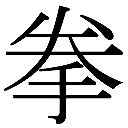
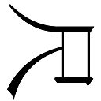
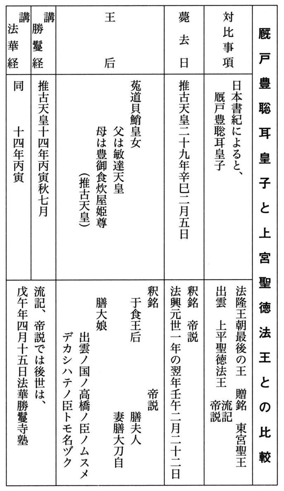
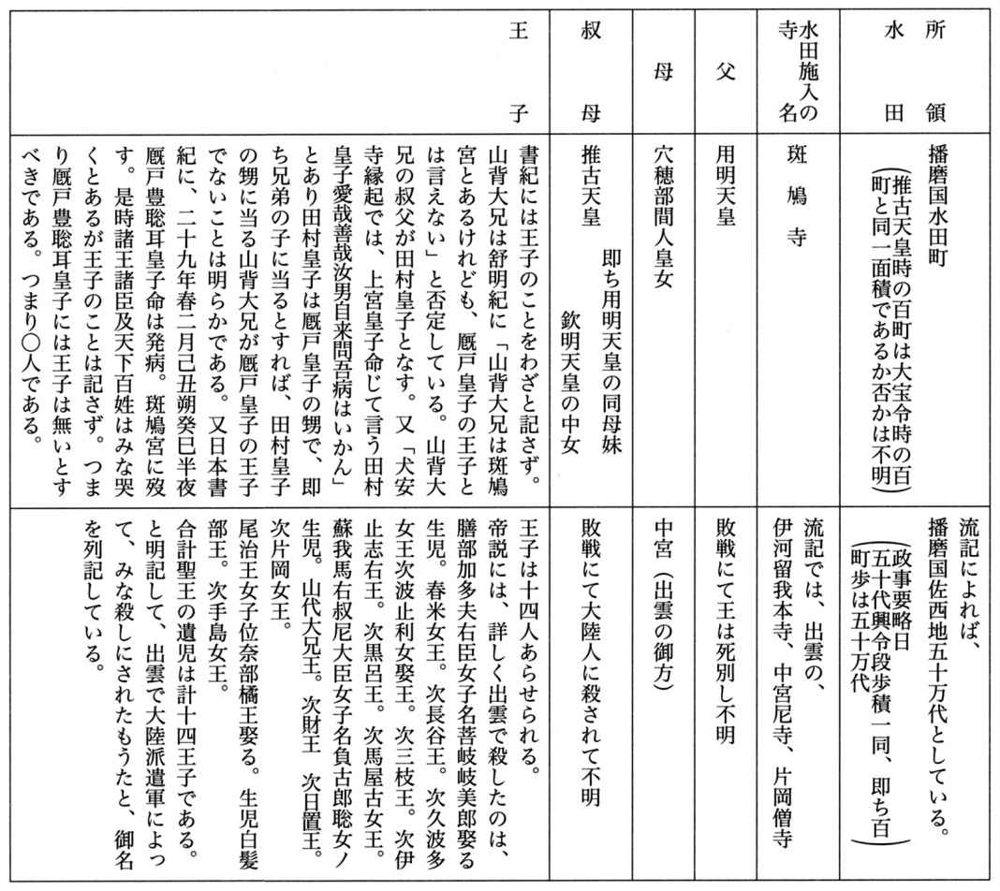
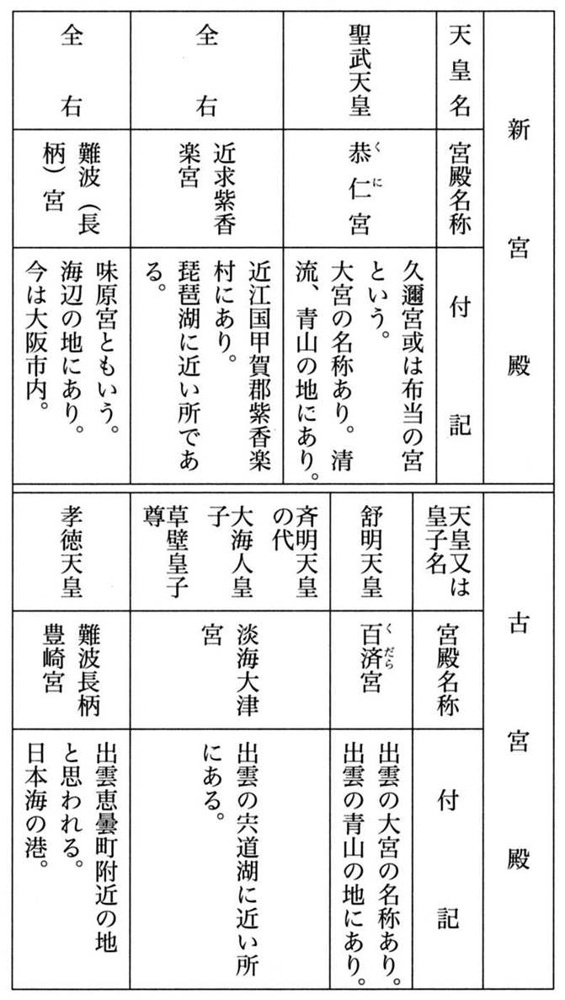

| 日本古代史入門 | |
| 八切 止夫 | |
| (2005) | |
日本古代史入門
八切止夫
まえがき
八切史観の正しきことの立証に、わが命にてあかしとせん
今は亡き荒正人先生が、八切史観は庶民の怨み節だとおっしゃった事がある。そう言われればアン・ラッキーの一語につきるみたいに、私は組織機構の末端から迫害され続け、闘争の一生みたいだった。何故にかくも苛められるのかと庶民の立場で、己れ自身に問いかけ続けたのが、これまで誰も試みようとしなかった茨の途への突入というか、没頭だったと言うべきだろう。
「不可思議な国ジャポネ」のカバーにケント歴史学博士の若かりし頃の写真を使い、タル・ティング（おも恥かしい）と文句をつけられたが、十五世紀から十六世紀にかけての日本へ来ていたイエズス派資料を教わり、日本での伝承通俗歴史と余りに相違しすぎるのに驚いたのが私の開眼のスタート。つまり戦国時代から、裏がえ史として、解明に入ってしまったのが始まりだった。「同士討ちをせぬよう、馬印とよぶ標識を、遠くからでも判別できるように色分けしていた」というレポートで、江戸期になっても大名行列の先頭に立っていた馬印にひかれた。日本での裏付け資料は史籍雑纂の家伝史料の黒田文書に、「馬印が金色に候はば別所同意と存じ候」の一行だけだったが、それを手掛りに武鑑を調べてゆくと、単一民族ではなく中世期の宗教合戦の時代には、祇と呼ばれる太平洋沿岸より黒潮で渡来した北条政子系の古平氏の者らは「赤色」、日本海より裏日本に入ってきて騎馬民族系の蘇我となり源氏となったのは「白色」と色分け。
延暦の年号になっての原住民大団結反撃進攻の際に、東北には山金で転がっていたのを叩き延ばし反射するからと同一目印に共にしたのが始まりで、反仏派は金色を用いたとも判った。
つまり彼らが捕虜にされ別所・散所の限定地に収容奴隷の子孫が、下剋上の世となって立身して武将になれた者は、秀吉でも、金色千成瓢箪。「八切姓の方則」の「日本人の血脈」は民族カラーの色分けと、印鑑証明で独特の苗字第一字発音の識別重視の種族別を鑑別する方式から、漢字はすべて当て字ゆえとローマ字化にし発見した。
さて八切史学、八切史観とよばれる私の考究は二十年がかりで本書で終わるが、直接に四万円送金して揃える後学には新たに全巻を、私が集めた文献類はもう入手不能の本ゆえ、無料で専門別に戦国、外国とに分け参考に供したい。と言うのは、読者名簿を整理処分したら、年賀状を段ボールに十五、六個も貰っていたが、照合すると九割までが図書館の方である。
八切史観というのは、初めから私の頭の中に形があったのではなく、禁酒して二十年前から次々と考究して展開してきたもので、その中の一冊や二冊を読んで感心して貰っては困る。十六年かけた「野史辞典」を軸にし続篇の「庶民日本史辞典」と、「天の日本古代史研究」と本書の四冊を最低資料に揃え、後学は解明を続けて欲しいのである。
自滅する時には殺さねばと案じていた二十年十一ヶ月のタヌコが、本書の脱稿時に老衰で自死してくれた。一日十八時間は坐っているので、生涯一度も抱いてやらなかった猫だが唯一の私のファミリーだった。後顧の憂いをなくしてくれた猫に本書を捧げたく寂しさに涙して前書きとす。
目 次
第一部
第二部
日本古代史入門
No.1
純 正 日 本 史 案 内
「三つ子の魂百まで」というが、学校で教わった歴史は、ジンムスイセイと暗記ものだったゆえ私でさえ、いまだに頭の中に引っ掛っている。どうしても先入観は強いものである。そこへもってきての、前人未踏の八切史観では戸惑われるかも知れぬと案じ、順をおって判りやすく解明してゆくため、前もって予告編みたいにアウトラインを古代史入門の一般的手引きにしておく。
前書きをしてはやや重復するが、いきなり、ぶっつけで入ってゆくよりは読みやすい。それに、どうしても古代史に入ってゆくにはタブー視の部落史とは切っても切れぬ問題がある。
なにしろ西暦六六三年に郭務悰が進駐してきて、藤原鎌足と日本名になり唐の大宝律令をそのままに輸入したのは「天の日本古代史研究」に詳しいが、天孫と称したカクさんの方は良で、それまでの縄文日本原住民はみな賤にされた。二大別とされた賤とは太平洋沿岸に漂着の八のもの。
次に裏日本から親潮寒流で能登や新潟へ入ってきたのが、獣の四つ足から、四ツとよばれる。
源平藤橘と四大別するが、藤は唐で、カクさんの一万二千のグループ。橘は、その唐を中国大陸で滅ぼし取って代った契丹系ゆえ、大陸人でもトウでナイゆえ、豪くみられず差別される。
彼らは天神信仰だが、源は元ゆえ白山さま信仰。平は今のペルシアと同じで赤旗をふり、祇園八坂信仰で、宮島も紅殻の赤塗りである。藤は墨染の衣を着た坊主が宣教師で先にきたので、「黒住教」さえ残っていて、藤は唐で黒色。しかし四ツの姓別は、最低四種以上の複合民族をさすが、勝てば官軍・負ければ賊軍で賤、黒の他は、次々と体制の変るたび限定居付き部落へと追いこみ。
郭将軍に滅ぼされたものの、ナラ王朝として栄え桓武帝より良となったクダラ系は黄色である。
しかしエタ非人と一つにしたりまた分類し、エッタ島など海軍にそっくり召し上げられると、「江田島」と恰好良くなるのは、そうしたゲットーへ次々と敗戦捕虜が入れられ、混同しているためだが、四大別ではなく、太古日本人はエケセテネが姓の上につくところの「雑色」の人々だろう。「皮剥ぎも皮細工も四ツと呼ばれる騎馬民族。判りやすく言えば白筋の馬方は源氏だが、駕籠かき、川越人足や雲助は平家で八ツとよぶ赤筋の拝火宗徒。トウナイは唐無いで契丹系の部落民」と、はっきり種族別が分けられる。喜田貞吉は他国の捕虜とか社会の落伍者ときめつけるが、藤原王朝時代に征伐された日本列島原住民。足利時代は散所奉行が新設されて、南朝に味方した者らの反体制子孫を収容。これは「庶民日本史辞典」「野史辞典」「日本部落史料」で明白にされている。
戦国時代の初めの応仁の乱に、部落の者は山狩りで集められてきて足軽とよばれ、楯の代りにさせられ、生き残れたのが戦国武者や武将になれたが、世が泰平になると下剋上は明治維新までのびた。が、五代徳川綱吉が韓国済州島系で神仏混合令の法令を下し、反仏派の原住民は宗門改めの寺社奉行によって、浄土（上等）でない汚れた下等人だと差別され圧迫された。太田亮の「姓氏辞典」では加賀に入った藤原氏と美化しているが、仏教は一向宗が入っただけ。
ナポレオンが勲章を発明するまで「賜姓」といって、藤原姓をエゾや反乱軍の純友にも与えた。
つまり実際は産所は足利幕府散所奉行で、反体制だった南朝方子孫を捕え収容したのが、同じ呼び方ゆえ産所と間違えられて伝わる。山所ともなり、山しょ太夫や山しょ魚ともなる。被差別の習慣が広まってしまったためでもあるが、喜田貞吉説も産所と文字通りにとって誤っている。
なにしろ唐語のブシン（不信）つまり信用できぬ輩とし召使われ、それが武力をもってついに公家を押さえつけ、公家対地下といったのが実力で逆転。下剋上の時代と呼ばれたのが文治革命であったり、戦国時代以降となると、かつては非人とか八部とよばれた蜂須賀小六も阿波の大名となる。傭兵が武力でクーデターを起し主権を奪ったのである。関白の一条兼良は足利末期の藤原系で仏派ゆえ、寺を荒らす彼らを悪党と呼んでいる。さて、藤原王朝は天孫民族なりというが、どうもこれは妄説である。藤原基経に廃帝にされた陽成さまの一族一門が山へ逃げこみ木地師となって山がつになりたまいし事実もあるが、高貴の出で良であると証明したくて、自分らを放遂した藤の姓を勿体ぶって付けている。それゆえ、その姓を本物と思われてしまい誤られている。
日本には正しい歴史なんかないのだからと、他国のごとき歴史学博士の称号は不可と明治十八年の博士号設定の時リースに言われたごとく、恰好よく美化されているだけで、何も判っていない。部落とは騎馬民族が日本列島へ渡来時に古代海人族を収容し、藤原時代には良でない人口九割の賤の民を閉じこめ、反仏派の北条期には源氏の四ツを始め赤系でない者を追いこんだ。
足利幕府になると今度は逆で、赤系の祇の八ツも反体制の南朝方と、橋のない川へ入れられたのが実際のところで、喜田博士は日本部落史研究の第一人者とされているが、何も全然ご存じない。
まだアイマイモコの喜田史観の間違いだらけよりも、高柳金芳の「江戸時代被差別分層の生活史」（明石書店刊）の方が正確である。そこから逆にさかのぼってゆけば、九対一ぐらいの割合だった征服者と被征服者の悲劇。つまり吾々の先祖の虐げられてきた真相が判りうるといえる。
「良いことを言われると、ひとは悪い気がしない」という人情の機微を巧く利用して、なんでも美化してしまい、敗戦民族を「国津神」などとしてしまうからして、それを文字通りで読まされては、喜田先生でも訳が判らなくなる。仕方がないというか、まあ当り前みたいになっている。
さて拝火宗で「祇」とよばれる八は、西南渡来系の日本原住民だし、四ツは騎馬民族で東北沿海州から日本海を親潮で流されてきた北方民族であるが、治安推持のため徳川時代には施政方針を四ツと八ツを交互にくりこんで互いに牽制しあわせて差別。藤ナイは十世紀流入の契丹系をさす。契丹は唐を滅ぼし取って換った国ゆえ、大陸系でも御所からは賤民視されていたのである。だが、太平洋側に黒潮で這い上がった八ツは八母音の原住民で農耕・漁業・製塩をしたから食用課役奴隷にされた。が、四ツは沿海州北鮮系で遊牧民族ゆえ、討伐されて捕えられる飼戸。
石岡の部落にしても、夷岡とよばれショウモンと蔑まれ区別されていたというが契丹系で、天慶の乱とされた時の者らの押しこみ限定地。だがエの戸つまり江戸の以北はみな部落ゆえ、一緒くたにされて差別され、すこしでも反抗すれば徹底的にこらしめて、オカミの言いなりになる奴隷人民に仕立ててしまった。だから藤原王朝の鉄武器による権力はえらいものであった。
「その筋の御達しにより喫煙は」と今も映画館に出ている。消防とか警察といった危険を伴う仕事は「千金の子は盗賊に死せず」とか「良い人は兵にならぬ」といった唐の教え通り藤原氏が日本へきても農耕をせぬ飼戸奴隷に施行。なお足利時代に散所奉行が旧南朝方の子孫を部落の散所民にしたのが知られていないから、私の「特殊部落発生史」に順に詳しく書いておいた。
千宗易こと俗にいう利休の自決後、その木像を八付にかけた後、その一味のササラ衆を部落に追いこんだのが茶せん部落で、華やかな茶の湯とは裏腹。また昔はハングリースポーツ興行だった角力はオドマ勧進の、勧進元で取り締まっては八百長で儲けていた。儲けるといえば、一番新しい宗派では、既存のダンナなどないからして、一向宗は部落に目をつけた。悪人でも念仏を唱えれば善人に生れ変る。部落民でも、信心すれば次は常人に生れてくるのだと、真言宗の本願寺説教僧が信徒にして廻ったので寺人別の数は増えた。だが、彼らの殆どはあくまで反仏であった。
僧へ絶対に近寄らなかった原住民の全体は、この百倍以上が実際はいた。今でも旧部落に金ピカの立派な仏壇があるのは、一向宗が利鞘をとって売りつけていた名残りである。
さて大正八年秋に二十五銭（現在なら五百円）にて出された「民族と歴史」第一号は、最後の六頁が発禁となったと喜田先生は最後だけ削除し、奥付を大正九年一月一日にし四倍に値上刊行し、第六版から十二版まで世に送り出したのは、金集めのための作為なのかとも感じられる。なにしろ喜田貞吉博士は、その大正八年には南北朝両統問題でリース直系の三上参次らに睨まれ、国定教科書編集官を追われ、やむなく自費で、「民族と歴史」の第一号を出した時のことだから、どうも資金繰りで、値上げ操作のために、オカミに発禁にして貰った裏取引とも考えられる。日本では歴史屋は真実追究よりも、どうも歴史をくいものにし、儲けたがる傾向があるみたいである。
部落問題は、関西では捕虜奴隷として連行された末裔ゆえ差別されて地域的だった。全国的に「解放」の美名で広めたのは、神武陵の守戸の子孫の丑松が教壇で告白する島崎藤村の「破戒」。それと、この「民族と歴史」が、まったく何も知らぬ人々にまで、部落について初めて知らされる結果となり一般庶民が驚き仰天した。その結果の名残りが、住井すゑの「橋のない川」である。
せっかく親や祖父母も絶対に口にしないことを、自分らもその出身者なのを本で知らされ、そこでまだ残っている部落に対し本当のことは何も知らず、子供などは苛める対象にまでしてのけた。「天は人の上に人を作らず」といわれるが、日本では「人の下に人を」作ってきたのである。「天の日本古代史研究」さえ読めば、まったく事実はあべこべで、渡来した鉄剣部族が、それまでの先住縄文日本人を征服して、奴隷にし差別した歴史が、日本の弥生時代だとはよく判る。
が、売れて広まったこれらの本のため大正十四年十二月十三日の世良田事件となった。上州新田郷世良田の庄、徳川に残っていた二十三戸の部落へ近在の三千八百人が押しよせ、村田銃をうちかけ火をつけて乱入し、片っ端から打ち毀しにかかり殺傷沙汰を起し、徳川の部落は大騒動となった。
というのは世良田二郎三郎の出生地で、徳川の地名をとった徳川家康さまの由緒ある地とされ、縁切寺があり崇拝された土地。特殊部落とはいえ長吏岩佐満次郎は、新田義貞の後裔として、「新田男爵」としてロンドンへ行っていた。だが当時、「華族は皇室の藩屏にして」という世の中ゆえ華族会長となった徳川公爵は青山堂より、「徳川家康とは松平元康の改名せしなり」という故山岡荘八が種本にした一冊を桐箱入りで配布。そこで周辺近郊の者らが、世良田の徳川には、これまで冥加米を散々とられていた三百年の恨みがあると押しかけたが、地元の群馬警察でも宮内省よりの達しで掠奪暴行を初めは見て見ぬふりをした。
そこで鬼石や近在の部落から応援が五千人も集まってきて逆包囲し、乱暴する百姓を追い払った。これがもとで全国水平社の結成となったのである。なにしろ民友社の徳富蘇峰のところで出版された「史疑徳川家康事蹟」は華族会で買上げ絶版とされていたが、筆写で広まっていた。まだ部落に残っている連中も、後に政治圧力団体になるくらいの勢力をもって対抗していたからである。
しかし当時の学士会は、華族会の下に入っていたし、各歴史屋は、それぞれの華族さまのお出入りだったため、渡辺世祐博士も月々のお手当を貰っているゆえ、野盗ではなく由緒正しき家柄と「蜂須賀小六」たる伝記本も出した。明治の贋系図作りは彼らで、みな金を貰って義理をたて、「家康は部落出身」とする村岡素一郎の「史疑徳川家康事蹟」より五年後の出版なのに、さかのぼった奥付年月にした「松平記」を確定史料に、資金を援助されていたゆえ、東大史学会は確定一級史料に認定してしまった。
なにしろ、彼ら明治史学家の人々は、みな口を揃えて、「明治史学は南朝方の顕彰にある」と称したが、長慶天皇を明白にしたことと楠木正成の銅像を建てたくらいで、足利時代にできた散所奉行によって足利創業の叛徒として特殊部落へ収容された南朝の末孫は、そのままで解明できずだった。脇屋・湯浅・楠・新田の地名が特殊部落にどこも多い。
さて明治までに刊行されたのは、足利時代の「夷詠朗詠集」から始まって「傀儡記」、遊行衆説教師達の「鉢屋由来記」から「賤者考」「見た京物語」「京四条極楽院空也堂文書」「菅茶山備後史料」「塩尻百巻」、そして明治以降となると「日本奴隷史」に、私の「野史辞典」「庶民日本史辞典」、菊池山哉の「賤とされし先住民族......日本部落史料」「長吏部落→日本の特殊部落」だけが主らしい。
しかし国定教科書編集員だった喜田貞吉だけが学界では評価され、部落者の著としては二十歳前後の若さで柳瀬勁介が書き残した処の「特殊部落一千年史」や「エタ及び非人・社会外の人」。
明治時代までは、口伝えに残っていたユーカラの殆んどを書かせ、その中で皇道史観に合致する者だけを己が名で発表しアイヌ研究の権威となった金田一京助に対し、アイヌの遺産を返すよう、その伜の金田一春彦に何度も求めたのが、新泉社よりユーカラの残りを訳し三部作を出しているポン・フチである。初め東大出の教授の肩書の喜田を信用し、研究を発表してやると甘言でそそのかされ、三脚カメラを担ぎ日本全国の特殊部落研究をした菊池山哉は、いくら草稿や写真を送っても自分の名はまったく出してくれぬからと、東京史談会を作ったのである。
さて「日本部落史料」の中に掲出しているが、昔の荒川三河島は、川の中州の特殊部落地で戦国時代の村山七党の流れをくむ武蔵党がいた。小田原征伐後関東に領地替えになると江戸城に入り、徳川家康は彼らを新規にみな召抱えた。これが島をとって「三河譜代」となる。「野史辞典」に三河の旗本は二名とはそれゆえである。今は一向一揆とされているが、三河人は他所者の、世良田の二郎三郎こと家康を入れまいと国中で迎え討ち、駿河や三重、浜松や渥美らの家康軍と戦った時、このとき裏切って味方したのは彼ら二人で恩賞のためである。他の三河人は商人になったから、「三河屋いなりに犬のくそ」とまでいわれる。岡崎城も御三家どころか僅か五万石の水野の城。
渥美半島出の大久保彦左が書いたものとは思えぬ「三河物語」や、贋系図作りの沢田源内の「後三河風土記」が広まったのも、三河旗本が生国尾張三河と系図をみな作らせるのが流行したのに合わされた。だから今も誤られている。
さて部落出身者は立身すると同じ出の者を忌み嫌う。旗本になった連中は後から採用され三十人扶持程度の奉行所同心や材木座火盗同心の連中へ、「不浄役人め」とか「溝さらえ」と、はっきり差別。この名残りか現代でも特殊部落出身の大製菓や大製陶会社では、興信所を使い部落出身者を就職差別し不採用にする。明治新政府が徳川家へ、「汝その祖宗の地へ戻るべし」と駿河七十万石へ移封したのは、家康は徳川の出だが浜松の七変化部落に売られてきて育ったのを、薩長では知っていたからである。そこで勝海舟ら旧幕臣が、「人の一生は重荷を背負って......」といった家康遺訓を作っては各社寺へ奉納し、家康神話を作りあげ、徳川家達を公爵にし華族会長にまでした。それを尾張徳川家で、旧幕臣松田の贋作と暴露。尾張は宗春の時に、松平蔵人元康と権現さまは別人で両者が戦った古戦場が、石が瀬その他に現存すると、「章善院目録」の中に発表。宗春は素行不良とされ閉門後殺され、家康の血統は断絶。その後は、徳川吉宗の孫の田安や一橋から交互に、尾張藩主に入っていたのへの怨みであろう。
日本人の九割を占める庶民とは、江戸期享保時代に部落をば脱出し町人別を銀や銭で購入した八ツの者や、四ツの連中なのに、最後まで残ったのを部落者扱いで人非人、略して非人と誤る。
破戒僧とか心中死に損ないを非人頭へ生涯奴隷として着のみ着のままで払下げ。ボロを着て、引き廻しの罪人について廻る姿を映画でも見ての連想らしい。彼らの人口が、増加というが、明治五年の壬申戸籍に申告したのは本願寺派に帰依した者だけ。無申告の方が遥かに多くて百倍もいた。
明治革命には、ヤジの八やウマの四を動員したものの、あまりに日本原住民の部落民が多く、「棄民政策」と称して北海道樺太やフィリピンやブラジルへ彼らを送り出して口減らしをした。「サンダカン八番娼館」とか女不足のアメリカの「ガールハウス」へ次々と島原娘が身売りしていた。が、まだ思いの他に原住民が多いのが判り狼狽。治安維持のため男は島流しみたいに労働者としてベンゲネットやボルネオへ移民。女は性業婦とし輸出して外貨を稼がせ国益とした政策である。国内で虐殺する代りに「生かして使え国のため」といて貰いたくない原住民の追い出し策だった。
江戸時代は大蔵省が国民皆税で片っぱしから搾りとるような時代はかつてなかったから、戸籍は坊さんの私有財産を守るための寺人別帳が主であり、町人別は銭さえ包めばすぐにも認めたから、紀州湯浅の居付き地で、死なせてもよい奴隷水夫とし荒天の海へ出す蜜柑船にのせられた文左衛門らだけが、沈没しなかったため、船底に繋がれていた者共は命拾い。漂着した相州の浜で蜜柑を売り江戸へ出ると、同じ山者ゆえ各地の材木を後払いで集めたのが大火で大儲け。銭を出し町人別や寺人別も購い、ついでに限定収容で残っている湯浅の者もみな呼び寄せたから、「東京都江東区史」には「別所文左衛門」の名前で、はっきり今も残っているのである。
こうした複合民族の分類がまったく判らずじまいで、七世紀の良賤の大宝律令のままで解明しようとするから、まったく学校歴史は、「本当のことを言えば身も蓋もない」こととなってしまう。
彼ら歴史家は、崇神王朝系騎馬民族の「四ツ」とよばれるのと、黒潮渡来の古代海人族の、「八ツ」との区別もできず、十世紀に夥しく日本海を渡ってきた唐を滅ぼして取って代った契丹系が「唐ない」ゆえに「十ない」であろうと指が八本との妄説までたてる。江戸時代の戯作者でさえも、「和藤内」とし国姓爺合戦に、清に滅ぼされた明の彼が台湾を基地に本国へ挑戦の話を書いているのに喜田貞吉らは気づかず「特殊部落とは社会の落伍者と三韓征伐の時の捕虜」としてしまう。
三韓征伐はまったく逆で馬韓・弁韓・辰韓が日本列島を三分しコロニーの時代。特殊部落は西暦六六三年に世変りした時に、仏教の宣教師坊主をまっ先に送りこみ徹底的に教化しようとしたのに、あくまで抵抗した連中が又しても収容されたのが、ゲットーの居付き部落と知らぬらしい。
続いて藤原王朝が中華の風俗に馴染もうとせぬ日本原住民の、降参し奴隷にならぬ徒輩を橋のない川へ追いたて貝を食わせ尽きると自滅させた。「日本後記」や「続日本紀」に記録されている。
八ツはマレーシア経由の黒潮渡来族ゆえ、農耕・漁業・製塩をなし、食糧増産奴隷とされ、東海地方三河の額田王に率いられ、中大兄の韓国系に食糧確保の政策上から子を産まされたり、大海人皇子には政略結婚で妃にされたが、終りには岡山のゲットーへ収容、奴可郡の地名を今も残す。
四ツは崇神御孫景行帝が八ツの八坂姫にうませた日本武尊の死からは、共に反体制視される。彼らは韓国勢力、大陸勢力に追われて山がつ、餌取り、餌差しとされ、特殊部落民とされてゆく。
恐れ多くも陽成帝でさえ藤原基経に追われ山へ逃げて木地師とならせたまう。が、十一世紀は青眼の賊船が次々と来襲、山から原住民を人間狩りしてきて出征させたが、戻ってから叛かぬよう片刃の刀をもたせた。一を唐語でイと呼ぶから「刀イ（伊）」の乱。この時、頼光四天王として坂田金時らも現われるが、唐語のブシン（不信）から出たのが武士ゆえ従五位下止まりで昇殿は不許。
ようやく文治革命で夷津の夷頭の北条政子の世になると、京を征伐し尊い方を隠岐や土佐へ流罪にし、御所への目付に六波羅探題をおくが、世変りして足利期になると新しく散所奉行ができ、北条氏の残党と共に足利創業に邪魔した南朝方の子孫をも特殊部落にしたから地名にも残る。「天の日本古代史研究」「庶民日本史辞典」「野史辞典」の三冊をぜひとも順に読んで散所を産所と誤らぬためにも真相を把握してほしい。またイザナギ・イザナミ二神が天の浮橋で互いに見納められたまい、「エな男」「エな女」と呼び合われた故事で、エ民の多い所をエ多とよぶのも語源。また騎馬民族の蘇我の末裔が「吾こそミナモトの民」と呼ばわっていたのが、白旗の源氏である。先住民族のセンを千に換えて「千軒」と、ゲットーだった地域の押しこめ居付き地を呼ぶのと、これまた同じである。
俗にいうところの非人とは騎馬民族の末孫。農耕や漁業・製塩をなす「塩尻」とよばれる八ツの民が働くのに、彼ら四ツの遊牧民族は違うからとの命名で、藤原体制に北方に追われキタともいう。「ヤジ・ウマ」と庶民をよぶのは、八ツと四ツを合せた呼称だが、山野に昔から自生の草木や土や石を切り出したり人や獣を扱うのが原住系の限定職種。それを加工するのが良の舶来職だった。「除地」として大名領でも天領でも年貢なしだったのが、明治新政府が収穫物にのみに対してではなく土地を私有化とし地租課税。よって河原や山頂を当てがわれた部落は納税のために貧窮化した。
八母音を使う名古屋弁のような太平洋岸から日本列島に這い上がって住みついたのが八ツの民。
今もイランのヤスドに祀られている天地水火を拝む祭壇があるゆえ、ヤー公とかヤジとよぶ。
裏日本へベーリングの寒流で入ってきたのが騎馬民族で四ツとよぶゆえ、今いう白系ロシア人も入っていたので、新潟や秋田には白人の肌を今も伝える色白な美人も産出するのである。
治安維持のため江戸期になっても、夷をもって夷を制すで、八ツと四ツは相互に監視し牽制しあうように四ツの弾左衛門家の下に、八ツの車善七。その下に四谷者、又その下が谷津者、とされていたのを、例の「ヤジキタ」もので共に仲よくしあって、世直しをと煽動された。その結果、幕末からはポルノでもない「東海道中膝栗毛」の貸本に影響され、キタの騎馬系の未孫の馬方が、八ツの大井川の赤フンの川越人足のために「箱根八里は馬でも越すが、越すに越されぬ大井川」と白フンを振りつつ、向うでは酒手をはずむようにと旅人に馬子唄ですすめもしたものである。
伊勢神宮を北条政子と思いこんでいた大衆へ、お札ふりの「ええじゃないか」の騒ぎといい、部落から脱出してきたものの裸一貫で馬方や車力人足をしていたのを、一つに結びつけさせての大衆動員の策は討幕の大動力となった。頭の良い人が昔もいたものであると感心させられる。
――己が家系のルーツ調べに学校歴史では納得できず、あれこれ本を読まれる人が多い。
人情として美化したがるのなら別だが、もし真実をと思うなら道標は八切史観だけだろう。
【第一部】
近 視 眼 的 な 教 科 書 騒 ぎ
日本では古代史を無視しみんな昔噺にしてしまう。そして勿体をつけて、「神話」にまでする。「古事記」にしても、本居宣長によって「古事記伝」として今日のものができる迄は、つまり江戸時代の大岡忠相が死ぬ迄は「骨事記」とか、ただ「こじき」と、飢えた原住民の隠忍の話だった。外国の鬼は強く勇ましいが、日本のは「福は内鬼は外」と、ひとつかみの豆を投げて貰って拾って食って退散してゆく哀れな乞食みたいなハングリーな存在。太安万侶が書かされたものは、八世紀初頭の権力者の優越感を満足させるためのもので、それを日本原住民の末孫として明和年間から寛政十年まで掛って、今日の立派な「古事記伝」に仕上げたのは本居宣長の労作なりといえよう。
なにしろ隠忍とされていた原住民は、野や山に自生するものだけを自由にしてよいとされ、木を切って細工したりする大工のような加工業は舶来系の方の縄張りとされていたのである。
つまり幕末までは、筆は竹、穂は狸の毛だから、もの書きや版行の出版業は原住民限定職。北条政子が夫の頼朝を、馬から落ちて即死として始末してから、梶原源太を下手人と殺して、次々と和田、三浦と源氏の主だった連中を処分。郎党や女子供をゲットーへ入れたものの、叛乱防止のために、身分保障みたいな限定職を定めたのだが、発布されたとする治承四年の年号は石橋山で敗れた頼朝を、政子が平氏の本貫地千葉へ逃がした年。頼朝御判二十八種は、まさか逃げる途中に細かい布令など出す筈もない。それなのに発表年にされ伝わっている。さて、今日の新聞が土地など賜ってオカミ御用となりだした明治二十二年迄は、「明治密偵史」の宮武外骨の著に詳しい。それだから東京新聞の「大波小波」によると中国では台湾系の陳舜臣より、中国本土の血の濃い司馬遼太郎のほうが人気があると報道されているのも、古代史の権力者は占領軍の中国人だった隠然とした匿された歴史があるからして、血は水より濃しで、またむべからぬ話。
なにしろ日本とよぶ国は、西暦六六三年に白村江の戦いでクダラ系の奈良朝を倒し、九州より御所入りし、「天の日本古代史研究」にも書いたが、郭は「藤原鎌足」と日本名をつけ、則天文字つまり漢字の、（北東の風が吹かなくては、日本から中国へは航行できぬから、冬至＝唐至の当て字もあるが、文部省学校教育で、イアルサンスウから算数とするのは今でもそのまま）強制使用令と、築城用巨石の全国供出令を発布した。ところが俄かに今になって、侵略を進出と教科書にのせるのは怪しからんと、「むちゃくちゃな出鱈目歴史ではないか」と、訂正するよう抗議されている可哀想な日本歴史は、この時点では進駐軍司令官郭将軍によって高安城を築き金田城を構築。当時は今のアフガニスタンなみの勇敢な縄文日本人ゲリラから、御国を離れて何百里と昔は彼らが唄っていたから、万一の時は冬までは立てこもらねばならぬから郭務悰将軍が降参した日本原住民を使役し築かせたのである。なのに日本では文部省が金田城を昨年、たしかに国の重要文化財に指定している。
昔は沢田美喜みたいな豪い人がいなかった。それゆえ、郭将軍部下兵四千、軍属のチャン輩一万二千が単身できていたから、女と見ればてんでに片っ端から種付け、一人で九人くらいに孕ませて廻ったからして、原住民の日本人女はカイト、界戸、皆戸、垣内、海渡いろんな当て字を今ではつけられる個所で、エリザベス・サンダースホームがなかったから堪え忍んで育てあげた。
わが世とぞ想うと詠じた足利時代の義満でさえ、「臣源道義」と大陸へは絶対服従。日本が被占領国の中国と対等になれたのは秀吉の対明交戦で初めて解放されたと言ってもよかろう。
その国の立場というものがそれぞれある。侵入や侵攻の字句で今になって文句を言うなら、七世紀から産まされっぱなしで、テレビの「ルーツ」で黒人女が白人の旦那に産まされた子でも、奴隷として売買されるみたいな有様で、嫡民ならぬ庶民とされ賤民の奴隷扱いされていた吾々の先祖のことも、古代史を徹底的に、昔のことといわず検討してから、よく考えてほしい。
「日帝が三十八年にわたって勝手気ままに振舞った怪しからん」と、解放記念日にはテレビでも放映して抗議するが、郭を改名した藤原鎌足が渡来する迄の日本列島は、彼らの先祖のナラ王朝。
馬韓・辰韓・弁韓の三韓時代から西暦六六四年の藤原鎌足まで、彼らが日本原住民に加えた残酷非道は、僅か三十八年間だけの日帝の圧政に比べれば、何十倍以上もの年数の苛酷さであった。
中国の方も郭将軍の部隊が御所を占領した西暦六六四年五月十七日からは、藤原王朝をたて南京の大虐殺以上のことを、かためて捕虜を生き埋め踏んづける根蓋までやってくれている。
しかし藤原鎌足の子孫が作った勧学院「日本書紀」を金科玉条として、古代史を真剣に勉強し、しっかり取っ組んでいないものだから、日本の歴史屋は哀れ何も言い返しが出来ないのである。
古代史さえよく研究していたら、逆手にとって反対にこちらが被害者の立場から教科書抗議に対せるのだが、まったく不勉強すぎて悲しいことにそれすらも全然できないのである。
といって、まあ過ぎ去った過去のことを言いだしたら、それこそ切りがないかも知れぬ。
それを良いことに被害者の立場をとる向うでは、日本人乗車拒否のタクシーまで出現しているという。家永裁判では民主主義でなく、またしても皇国史観の昔へ逆戻りさせた判決を、せっかく勝ちとったばかりの文部省も、歴史屋の不勉強さで何ともならず、まこと気の毒である。
かつて吾が日本列島が馬韓・辰韓・弁韓の三韓時代に支配されていた時代は、終戦直後よりひどく、ナラ時代、韓国のカントリーの意味だそうだが、金大中の御先祖さまが君臨の昔、「クダラにあらざれば人にあらず」とされ、「クダラぬやつ」「クダラんことを言うな」とまで、現代でさえ用いられるくらいに、韓国の御先祖さまは日本へきて君臨なさり、好き勝手なことをなさっていた。
新羅人や高麗人も、日本海よりベーリング寒流で入ってきて勢力争いをした。だから日木の古名は越前・越中・越後とか、備前・備中・備後と三韓時代に三分割されていたままなのもその例証である。
恐れ多くも桓武帝のごときは「桓武焚書」と今ではよばれるごとく、前からの「日本書紀」はことごとく集めて焼き、オンモン書紀まで作成しなさったくらいに、好きなようになされ遊ばした。
韓国の女性の腹から生まれた徳川綱吉は、千代田城を朝廷とよばせ閣老を公家とし、王政をしき、よって東下りの公卿は大納言や侍従でも退官して無位無冠で江戸伝奏屋敷へ入り、京へ戻ると前大納言や前侍従が、また復官したのは「赤穂義人纂書」に明記されていて証拠も残っている。
それなのに日本歴史は、好意的に馬韓渡来の方に、神功皇后の御名をつけマタニティードレスの女将とするくらい、本心では韓国に敬意を失っていない。なにしろ、日本の歴史教科書は単なる暗記ものでドイツ人リース門下作ゆえ、責めても不勉強の今の歴史屋が悪いのだから仕方がない。
もし日本古代史が、乳離れするみたいに記紀離れして、藤原王朝が作ったのから脱却していたら良かった。半世紀もたたぬ最近のことを突き廻す被害者顔の近隣諸国に、せめて五世紀までさかのぼって日本の歴史家が解明していたならば、藪を突いて蛇を出すような、しっぺ返しができたものを、従来の学校歴史に甘んじ、学者だと自認している連中たちは何も知らぬ。
無智ということは罪悪である。いくらナラ朝時代は韓国製の日本史、七世紀からはトウのトウゲン王朝史だと判らぬのか知らぬのか、何も反対意見も出せぬままの現状ゆえ、このままでは、「ご無理ごもっともです」と、教科書検定審議会の答申をうけ、抗議されるままに訂正して、「おっしゃるように、直しました」ということになるだろう。世界中どこの国が、他国より干渉されて、その学校歴史を改訂するといった例が、はたして悲しいことだがあったであろうか。
「国辱」というものがあるのなら、これ以上の屈辱はないだろう。長州より招かれて御雇い教師となり、現代日本史の開祖となったルードウィヒ・リースが、先進国にならって日本でも、「博士号設定」となった際に、彼は歴史家なのに理学博士や医学博士は認めたけれど、「独、英・仏・伊には歴史学博士の称号はあるが、この国にては、その設定は無理なり。文字を弁じうる程度なれば、文学博士にて間に合わすべきである」と、後にベルリン大学の歴史教授となって、「ゲルマン民族優秀説」を発表し、ナチスに利用させたリース歴史学博士は、日本では開明学校が東京大学になると「史学会雑誌」を刊行させはしたが、歴史学博士号は許さずに帰国した。
だから歴史の専門家が一人も認められていないゆえ、まあ古代史は無理といってしまえばそれまでの話だが、もし良心があるなら各大学で歴史担任の教授は丸坊主にでもなるべきだろう。
なにしろ日本以外の国では、歴史を愛国心を育てるために重点的に教える。大学入試でも、歴史は必須科目として必ず受けさせられる。しかし日本ではディスカッションし学生たちに研究討議させる重要科目ではなく、中学生の頃から文字通り教科書を暗記させ、年号を覚えさせるだけであって、大学の入学試験にも歴史を必須受験科目にするようなところは全然ないのである。
なにしろ各時代の権力者によって、日本歴史は都合よく美化され創作されているにすぎないのは、各会社が自費出版して得意先や関係会社へ配布している社長伝や社史と同じことである。
それゆえ歴史を受けもち講義する者は、恩師に対し弟子として領分からはみ出さぬようにのみを心がけて、昇任昇給だけを望み、隠れたベストセラーともいえる文部省検定歴史教科書を出せるようになって、莫大な印税を得られるようになりたいとの願望だけであるらしい。
それゆえ、騎馬民族は日本海をわたってきて裏日本へ入ってきた潮流学を無視して、「日本書紀」に合わせ鴨緑江をわたってクダラ人みたいな騎馬民族とし、体制に合わせ江上波夫教授も発表した。大伴家持が飼戸の四ツの奴隷頭ゆえ、いくら働いても認められず癪にさわって飛込み憤死したのを、「日本書紀」に辻つまを合せてた梅原猛教授も、今では学長にまで昇任した。
みなお利口さんな御用歴史作家であるが、彼らとて歴史の講義をする教授ではなく、他科目の教授である。と言うのは、いくら体制べったりにそっての、事なかれであっても、歴史畑であれば、恩師が言っていないことを発表するには、立場が拘束されていて、絶対に不可能のせいだろう。
つまり監督官庁の文部省の指導方針にそい、恩師の口ききがなくては立身出世の途が開けぬからである。他の考古学畑にしても、やはり親方は文部省で、宮内庁の権威が影についているから、すこしでも「日本書紀」からハミ出しては、枠内からの落ちこぼれとみなされてしまう。
世界最大の墳墓といわれる仁徳陵の発掘を、絶対に宮内庁が不許可にしているのも、「日本書紀」に記載されているのとは、どうも違う結果がはっきりしていて、はたして仁徳陵といっても、どなたが埋められているか判らぬといった危惧があるせいらしい。なにしろ学校歴史では、「民のかまどは賑わいにけり」と高屋から望み視られたもうた御情け深い御方となっている。
しかし、民のかまどから炊煙が絶えるくらいに搾取され、暴動を怖れて淡路島へ待避しておられたのが、浪花へ戻られ、また高所から民の有様を御覧になり、そうおっしゃられたというのは、恐らくまた戻ってきて、これなら課役が増やせて良いと、のたもうたのではあるまいか。
広大な仁徳陵と称せられるような大規模のものになると、ブルドーザーもなかった昔ゆえ、何千どころか数万の奴隷が鞭打たれつ何年も働かされて構築されたものゆえ、古代史の中では、奴隷社会の始まりといえよう。もちろん同国人を奴隷にしてまで、ひどく酷使できる筈はない。
となると、鉄製武器をもって渡来された方が、原住民である日本縄文人を捕え働かせたものとみるが至当で、珍、讃などと中国からよばれた五王の四世紀初頭の捕膚課投大工事だったろう。
産業革命以来でも、主だった発明や発見は、みな専門分野の者ではなくて素人だったという。
現在の天気予報でも、気象衛星まで使っているオカミよりも民間のお天気おじさんの方が確率が遥かに高いみたいに、天文学でも新星を発見するのは日本でも学者と自認する人たちより、素人で見つけている例の方が多い。歴史の分野でも、やはり保守的な日本書紀派より、畑違いの人による解明の方が、昇進とか教科書作成といった夢をもたぬだけに、きわめて大胆である。
私にしても、父方と母方の宗旨違いで亡兄の入籍に数年かかり、ようやく届出ができた時には当人は小児急性肺炎で天野病院で亡くなっていたので、また揉めるのは厄介だからと亡兄の戸籍をそのままで引き継がされ、名も生年月日も亡兄のもので、私には本当の名も生まれた年も知らされていない、さながら透明人間みたいな存在ゆえ、たえずそれに悩み自殺未遂も何度もして、「真実とは、はたして実存するものか」と、過去の具象としての歴史を、まことに本当なのかと生まれてきた時よりの挫折感を、なんとかして打破しようとして取り組んできてしまった......初めは当時の日本へ来ていたイエズス派史料という裏づけのある戦国時代から検討して入ってゆき、「信長殺しは明智光秀」とするのも、光秀のライバルだった秀吉、本当の黒幕は家康だが、仏敵と信長・光秀をみたて敗けた石山本願寺の一向宗の今の本願寺派が説教節できめつけてしまって、日本全国の居付き部落に説教僧を送りこみ、面白おかしく説教にして定説化しただけと判りもした。
美化というか天下一の豪傑とされる山中鹿之介も、本当は殺人鬼みたいに、毛利方を片っ端から討ちとったのではなく、相手方がへばっていて「頼まあ（タンマ）」と声をかけ、「後日に銀一貫匁を支払うものなり」と矢立で紙に書きスタンプ印鑑のなかった時代ゆえ掌に墨を塗って押し渡したのが、約束手形の始まりで、首落し前の談合ゆえ「落し前（をつける）」という。
紙がない時には口約束ゆえ、「武士の言葉には二言はない」といった用語も残される。
江戸期に入っても外出の侍が「懐紙」といって夏でも白紙を大切に持ち歩き、今でも財布のことを「紙入れ」とよぶのも、万一の際に落し前の約手を書くための大切な用紙だった名残り。
プロとは、今のプロレスみたいに、やたらに致命的な負傷などはせぬもので、山中鹿之介は約手をとっても集金せずだったから、彼を生かしておいては後に毛利の家中の者が迷惑すると、「約手のパクリ屋」なみの毛利方の者によって、上月落城後、備中合の渡しで殺されたのである。だから、その伜が大坂で鴻池の店を開くにあたって、約手の決済をしてなかった連中が銀を集めて送って開店させたのである......といった従来の歴史とは相反する資料がえられたが、発表すると、勇ましい講談を頭から信じこんでいる人々からは、ただ意想天外とされたにすぎぬ。
しかし尼子方は滅亡しているから何も残っていないが、毛利方の「吉田籠城記」によれば、「本日の合戦は、先手の者は石つぶてに当り一人傷つきたれば全軍とって返す」と、あまり殺傷沙汰はなかった記述が多い。常識で考えても人口の僅かな時代に、取っては投げ、突き刺して殺すみたいに派手にしていたのでは、みな死に絶えてしまって両軍とも戦う者がいなくなってしまう。
美化というか勇壮化されて伝承されているものの、プロの武士道は、落し前をつけるだけのものが本当のところ。となると中世紀の宗教戦である戦国時代の前は、どうなるかと問題になる。
江戸期でさえ「やっこさんは辛いね」とか「奴女郎」の名称があり「町奴幡随院長兵衛」は勇ましく水野十郎左衛門に突き殺されるが、奴とは寺の奴隷のことゆえ、寺奴で、仏教側のガードマン。とすれば後までそうだとなると、古代史とは、縄文日本人が権力者によって鉄製武器で征服された弥生時代が、日本の古代史つまり奴隷社会の始まりということになると、それへ突入し真実とは何かと遡って解明していったのが、この入門書を書きだした私のノートともいえる。
何 故 に 歴 史 を 知 り た が る か
「一文にもならぬことを誰がする」といった国民性なのに、向学心ではなくて頗る歴史好きが多い。若い人では中学生ぐらいから、なにか歴史に魅かれだしてしまう人も相当にあるようです。
そのうちに高校受験とか色んな口をあけて待っている世の荒波に呑みこまれ、就職、生活と暮しにおわれて、それっきり歴史願望から離れてしまう人もないではないが、子供が一人前になって手放れしだすと、また歴史探究に取りつかれたように、戻ってくるひとも、女性では多い。
それに近頃の現象は、五十代になり、ようやく我に返りはしたが、今さら華道や手芸でもないという女性が、何かしら生きざまを求めるみたいに真実をと歴史の中へ突入してくる向きもいる。
もっと高年齢層で、死ぬ前に本当のことを知ってから、この世から別れてゆきたいという安心立命型の方も、そう沢山ではないがいらっしゃるのは、十万余枚の年賀状を熱心な読者から頂くが、その内の二百枚余りが、老人ホームの住所だったから、そう明確に、私は言えるのである。
まあ父から祖父母の代まで遡って判る自己の歴史は、せいぜい半世紀がよいところだろう。「あなたの御家系図をお好み通りに作成。古代錦地仕上げ、虫くい桐箱入りは十万円にて」
などという大阪の何んとかの友社からの広告が、今でも歴史雑誌にはよく見受けられる。
「死せる子は、みめよかりき」とか、大正から昭和までは身投げした娘は、実際は水ぶくれで、ふた目とはみられぬものなのに新聞記事は、故人に花をもたせて「水死美人」といった熟語を作った。
だから「死んだら天国へゆける」と考えるみたいに、「飛び込めば、水死すれば美人になる。なにしろ新聞に出ているくらいだから間違いない」と、生きていては死ぬまで美人とは呼んで貰えぬ娘さんが整形美容の流行せぬ時代だったので、美人とよばれたい一心での投身自殺があまりにも数多く、処置に困って「水中美人」なる熟語の使用禁止を各新聞社では申し合わせたことがある。「過去は......過ぎさった昔は美しい想い出である」と、水中美人なみに歴史もかつては扱われた。中学生を対象する歴史雑誌の読者欄などでは、まず女子中学生の沖田総司讃美、そして次は、「自分の先祖は、江戸時代には何々大名の城代家老だったそうです。何か御存じの方は御教え下さい」とか「太田姓をもつ方は集まって先祖の話をしましょう」などとあるのがすこぶる多い。
ここまでくると日本の歴史は芝居や講談からのものだけと、情けない思いにされてしまう。
「城代家老」などという呼称は、仮名手本忠臣蔵が、時代設定を足利時代にし、大星由良之助をも架空のこうした肩書にして、オカミの取締り逃れにしただけのものであって実存ではないもの。「城代」というのは武臣派で、野戦の時に城代りとなって殿を守って戦うため、師団長、大隊長、聯隊長、中隊長といった貝合に、組頭が下にあって、それぞれ戦場で生死を倶にする者らが縦につながっていて、浅野家でも岡林杢助が一千石の城代で直属の部下二百名を擁していた。
「家老」は「お羽織衆」といって、作戦の際には、糧秣、兵の食料や馬糧をととのえ、勘定奉行を監督し年貢の取立てをするのが平時。赤穂では、お浜方の塩問屋木津屋などを取り締まるだけの仕事。
だから直属は若党二人に仲間一人で、士分の者など大石内蔵助にしても一人もついていない。
まったく別個の役目のものを二つくっつけてしまっているのだから、赤穂浪士討入りの真相さえも、討入りを美化してしまって、今では判らなくなっている。岡林は旗本松本孫左衛門の弟で岡林家へ養子に入ったのだが、公儀では前京町奉行で当時は江戸南町奉行の松前伊豆守が、後で始末のつけやすい文臣派が本所松坂町周辺に町人に化けて住みつくのは黙認（坂本勝説）。
しかし武臣派の者は岡林一人だけは入府を許したが、他は六郷川の先の川崎から江戸へは入れなかった。京へ昔からの大判小判を送り、堺の中村内蔵助に銅を倍加させて元禄小判に鋳造し直させ、通貨を倍加させた張本人の柳沢吉保は贋金作りの秘密が露見するのを惧れ、急に隠居すると言いだした総宰領の吉良上野介を挑発し、抜刀させ処分しようと田舎大名の浅野をよんで、みずから当日の朝に言いつけ。失敗すると口封じに田村邸へ唐丸籠でおくりこみ、門内に入り駕籠をあけ首を出したところを背後から一刀両断。片岡源吾に引き渡された遺体も大紋姿のままだった。
吉良が上杉家よりの二万両で自費で建てた呉服橋の邸を柳沢は没取して、代りに騒動を起してもかまわぬ辺ぴな本所二ツ目の近藤登之助の古屋敷を与えた。険呑なので吉良上野介は狸穴の上杉中屋敷へ妻三姫に匿われていたが、いよいよ米沢へと別れの茶会を催すのには上杉邸ではまずいからと、初めて本所へ行った。それを大高源吾に急報した四方庵山田宗徧は、京所司代から贋金作りの功で一万を加増されて老中にまでなっていた小笠原備後守の代々の家臣である。当夜、神戸市刊坂本勝編の「赤穂義士事典」によれば、討入りにかけつけた細井広沢にしても、「殿よりの下されものの卵であるぞ、寒いゆえ精をつけて行かれるがよろし」と激励したが、柳沢吉保の三百石の儒臣ゆえ、殿とは柳沢吉保のことで、やはり口封じに文臣派を斬りこませ、彼らをまた口封じに柳沢が全員へ賜罪。それでもって一切が有耶無耶にされたゆえ、明治になると、「私利私欲をはからなかった、まこと清廉な政治家」として、追贈正三位にもなっているのは、「オの字忠臣蔵」「元禄泰平記」の本に、詳しく出ているが、江戸時代そのままなのが今の学校歴史。
つまり江戸時代のことでさえ、明治に世変りした時に真実がみな明るみに出てもよかったのに、明治大帝が華族令をしき「皇室の藩屏なり」と勅を出され、華族会長に徳川公爵がなってしまい、学士会がその下に入ったので、何も解明されず江戸時代の事実も匿され通しで、徳川時代のまま。
明治時代のことすら国民には知らす要はないと隠されている学校歴史しか教わっていないのに、一足飛びどころか大飛躍して、古代史を探究したがる人が、きわめて多いのには驚かされる。
日本史と対比できる唯一の史書として「魏志倭人伝」が、ひっぱり出されて、白髪三千丈的の誇大化を美化する国のものなのに、これをそれぞれがみな、自己流に解釈して一冊にしたものが、「耶馬台国はどこか」とか「ヒミコは美女だったか」と、興味本位で、ひどいのは知名度を利用して、「ヒミコが天照大神」といった類の本までが、訳も判らぬままに、歴史まがいで次々と出版。
書店の古代史部門のコーナーへゆけば、こうした類の本の羅列である。いくら頭の良い方でも、こうした本から読んで行ったのでは、とても真実への追究など無理な出来っこない話である。
「日本書紀」も「古事記」も、今日われわれが拝しうるものは江戸時代に焚書に次ぐ焚書で消滅していたものを、屏風や襖の下張り用紙とし残存し、関西で発見されたものを下敷にしたものであるとは、詳しく後述するけれど、西での発見ならばこれは第三次勧学院のものであってトウ製である。
第四次・第五次の「日本書紀」は鎌倉でできだから、東で発見の筆写本の残片でなくては、判る筈はない。が、鎌倉が北条九代で終ってしまった後は、足利体制は「白旗党余類」の名で、室町文書に書き残されているよう蘇民の源氏を、みなアミかけで散所奉行によって居付き（五木）部落へ、今いう橋のない川のゲットーへ連行収容。その居宅は家ごと燃やされているから写しの残存もない。
「せっかく大同団結して富士王朝の回復をめざしたものの追われた日本原住民の蜂起（年号では宝亀）は、後の平氏、平民で八ツとよばれた太平洋沿岸に這い上がった西南よりの俗にいう古代海人族は今の田子浦から江尻、大井川まで、アイウエオ（秋田、胆「夷」沢、宇賀、江刺、雄勝）を先登に逆攻め」日本海をベーリング親潮寒流で沿海州から六時間、白頭山の羅津からなら四時間で能登半島や新潟に着く。崇神王朝の曾孫ヤマトタケルノミコトが、伊吹山中で、武内宿彌の廻し者に供された中国産のチン毒にて歿せられてより、騎馬民族ゆえ四つ足とか四ツとよばれた連中は箱根越えに進攻。藤原王朝が身代りに立てたクダラの桓武帝は天険の長岡へまで待避されたが、やがて富士山の大噴火によって撃退できると、先住民を限定の囲地のセンゲンに封じこめにした。
今では信州のアサマと同じ浅間の当て字がつけられている。このセンゲンは、出雲節に出てくる安来千軒と同じで、幕末に黒駒の勝蔵が金を掘りに行った千軒とも同じ先住民の収容地で、故子母沢寛は、昔は千軒も家のあって栄えた所としているが誤りで、千葉や群馬にも多い地名で先住日本人の隔離収容地のことではあるが、橋のない川の土地ゆえ出入りは不許可だから、「居付き」ともよばれる。歌手の五木ひろしにしても、徳間音工に入社してから歌が巧くなってレコードが売れだしたのではない。五木と三十九回目の芸名を変えたから、かつてイツキに収容されていた人々の子孫がレコードを買いだし、それで大人気歌手になれたし、「戒厳令の夜」を書いた作家も、やはりその苗字で人気がある。昭和初期までは、井口は山手樹一郎、藤野は山岡荘八、清水姓が山本周五郎と、大衆に信頼されるヤ印の筆名にし韓国人の立原正秋も日本名で書いた。
しかし全人口の一割や五分が奴隷では、残りの人々の食料増産など出来よう訳はありえぬ。
西暦六六三年に郭将軍が御所に入って、藤原鎌足と日本名をつけて、藤原王朝をたて則天文字つまり漢字強制当て字令を出した頃は、彼らの軍隊二千に、人夫や軍属、それに一旗組とし渡海してきた者を含めて二万人だけ。レジスタンスをしていた連中や山や海へ逃げこんでシノガラのサンカになった人々の他はみな降参させられ、日本原住民は奴碑にさせられた。
七世紀に日本列島には何人いたかの記録はない。しかし白村江の戦いに連行されていった日本原住民の四ツの飼戸の民。つまり戦奴が二万七千とあるから、水軍奴隷として伴われた八ツの海人族も別に半分はいただろうから、計四万が総動員数。明治三十六年の町村役場兵事課に対しての軍部よりの動員計画では、老幼を含めた人口百に対して壮丁一人の割合だから、その割りで逆算してゆくと人口四百万人になるが、それを半分と押えてみても二百万人の者が奴碑として、「クダラぬやつ」「クダラぬことを言うな」と、人間扱いされなかった働き蜂非人だったことになる。
それにクダラが敗戦して日本列島のクダラ人も奴婢にされたから四百数万となるが、新しい主人となったのが二万ゆえ、奴婢の割合は、五％や一〇％は余りにも過小評価で、二百の奴婢で一人の御主人さまに仕えたが正しい。のち桓武さまの時より、クダラ人は、貴賤の大宝律令の中で良に格上げされ、戦国時代からは四ツの騎馬系の戦国武者がブシン（不信）と蔑まれていたのをンをとって武士とよぶ新興階級にのしあがったから、非人とされる奴婢階級は半減し百対一ぐらいになった。が、大岡忠相の享保年間に、現在のアメリカの各州なみに、各大名領ごとに国法が違っていたのを、五街道で一斉に取り締まろうと八ツの海人族の流し行商や旅芸人の道（堂）の者らに朱鞘の公刀と取縄をわたしてハイウェイパトロールなみに道中探索のオカミ御用を命じた。
後には街道ごとに縄張りを決めあって、鉄火場を開張してあがるテラ銭で費用にあてて、「御用ッ」「御用ッ」と捕物をやらせ、日没になると、彼らに「お客さん遊んでいらっしゃい」と客引きに使う。つまりテレビや講談で悪くいう二足草鞋が、実は公認の本可打ちで本物なのである。
のち幕末近くになると、抜刀禁止令の法破りをしだしたので、うっかり召捕りにゆけば怪我をするからと、文久二年までに各地の親分は朱鞘の公刀を返上し縄張りを捨て、香具師に総転業。そこで空き巣狙いみたいに、半可打ちとよばれていた素人あがりの連中が、その縄張りの奪い合いで、清水次郎長や天保水滸伝になっていったのは、私の「仁義と仁侠」の本に詳しい。
つまり、彼らは明治までは非人扱いだったから、殺されても殺され損だと本可打ちは転業した後でも、やくざの喧嘩の殺傷沙汰は寺人別には入っていない連中ゆえ、犯罪にはならなかった。
つまりテレビや映画では郵便制度がなくても、郵便法で戸口配達のためみたいに、熊さん八つぁんの表札まで長屋の木戸口に掲げてあるような暮しぶりをみせるが、享保年間の大岡忠相の道の者の街道目付ができるまでは、八ツぁんの部族は居付き部落に入れられて農耕、海浜では漁撈や製塩の課役奴隷だった。しかし同じ八ツの道の者が街道目付になると、目こぼしで街道へ出して貰えた。つまり、それまでの今の庶民はみな各地のゲットーに入れられていた。
領主や代官にとっては、住民をみな居付き部落に入れて働かせ、逃げ出せば逃散の咎で斬罪にできたから都合がよく、殆んどが今いう部落であった。この享保年間に、尾張の徳川継友が将軍吉宗の御庭番村垣左太夫に毒害され、弟の奥州梁川三万石の宗春が後をついだがやはり睨まれ、家康の曾孫の彼が、「家康は世良田の二郎三郎だった」と公表したので隠居処分にされた混雑にまぎれて、名古屋へ住みついたのだと私の祖母の先祖も、口伝えに大正の末に教えてくれた。
なんの生産もない江戸に人々が集まり、天保年間には人口百三十万の世界一の都会になった謎も、祖母の先祖らと同じで道の者の街道目付の目こぼしで居付き部落から出てきたためらしい。
しかし、どっと出てきても身体一つが元手ゆえ、馬方みたいな四ツは白褌。馬をつかわぬ駕籠かきや蓮台の川越人足は赤褌で八ツと一見して判る色分けで稼ぎをした。江戸体制は、四ツの騎馬系の弾左衛門の下に八ツの車善七を、その下に四谷者。またその下に谷津者と交互に組みこんだ。
相互に牽制しあって夷をもって夷を制させるのが治安維持の方法だったが、幕末になって、「八＝弥次」「四＝北＝喜多」、今では簡単に弥次馬とよぶが、反目しあう日本原住民どうしの両者の融合を狙ったのが、「弥次喜多道中記」で、「東海道中膝栗毛」の題名で濡れ場もないものなのに、貸本のベストセラーとなり、御一新の大衆動員の起爆剤となったのは今では余り知られていない。
幕末になっても、限定地のまだ居付き部落に入れられ界化の非人と差別されていた庶民が、全人口の半分は越えていた。享保年間から部落抜けをして町人別や寺人別を銭で購って町人になっていた者を加えれば、総人口の八割以上はヤジとキタの日本原住民の末孫だったと考えられるのである。両親が認知すれば嫡子だが、父親だけしか認めねば庶子。つまり庶民とは、テレビの、「ルーツ」みたいに、白人の旦那が奴隷女に産ませたのは、やはり奴隷として露骨に売るよりは、日本の方が増しみたいに勘違いされるが、日本では徹底して、全部がみな奴婢だったのである。
受 難 の 日 本 書 紀
学校歴史の古代史は、北条政子の没した西暦一二二五年までを一括して、安易に教えている。
つまり源平合戦の時代までが古代史に入れられている。ということは、七世紀の世変りを匿しこんでしまう意図から、十三世紀まで引っぱって延長した期間を、アミカケ方式で制定している。「日本人の歴史好き」というのは、なにも向学心の表われや、真実追究のものではないらしい。
「侵略」を「進出」と変えてしまって、韓国や中国から抗議を烈しく浴びているくらいで、日本の歴史は、「臭いものには蓋をしろ」と、なんでも自分に都合よく過去は美化してしまう伝統がある。
それまで幕末までは各地方別に、民間に口から耳へと伝承の歴史があったのを東京を首都とし中央集権制度をとったから、日本全国を一つの検定した教科書で、洗脳するみたいに統一教育を歴史にまで及ぼして、他の国ではディスカッションして覚えさせているものをば、暗記物にした。
だからして学校で教わる歴史では、さっぱり、どうにも呑みこめぬ人々が多く、そこで何とかして己れのルーツを知りたがるのが多く、これが歴史好みというか探究型にもなるのである。
近江八幡で「解放」を発行している西川秀夫氏は、祥伝社、大倉精神文化研究所、日本シェル出版、光文社、琵琶湖研究会、新泉社、オリジン出版、秋田書店の出版物を名ざしてピックアップして古代史入門の手引きにと並列している。しかしである。それらの本の中で注意したいのは、「日本書紀」や「古事記」を信用してか、それを参考にしている本だけは、絶対に除外してほしい。なにしろ学校歴史で「西暦七二〇年五月に、日本書紀三十巻なる」と教えているからして、さも、（いま活字本で出廻っている「日本書紀」は、西暦八世紀初頭に、編さんされた唯一の日本史である）と誤っている方が多いが、私の「天の日本古代史研究」に詳しく解明してあるように、その六十年後に河内より高野新笠の御子を迎えて、人皇五十代桓武さまとなし、「日本書紀」をつくったトウの人々が昔の中ツ国、今の中国地方の岡山へ財宝をつんだ牛車の群れをひいて逃避行をしたあと。
「彼ら弁髪は日本原住民どもが一致団結して富士王朝復活のため清見潟（今の田子浦）まで、怒涛の進撃をなして攻めてきたのに惧れをなして逃げてしまったのゆえ、もはや構ったことはない」
とおおせられて、それまでトウ氏一族が、自分らが中国大陸から渡来とするよりも（遥かに高い天から下ってきた選ばれた民族）とした方が恰好がよいから、おおいに美化するために創作したところの「日本書紀」だけでなく「六国史」と称される他の史書類もみなことごとく一切合財を集めさせて、山のごとく各地で積みあげ、みな燃やしてしまった。世にこれを、「桓武焚書」といわれる。富士王朝のアラビヤ文字を縦書きにしたような歴史書も悉く集めて燃やしてしまい、オンモン日本書紀というような、ハングル文字の桓檀古記をタネ本にして、桓武さまの御先祖さまが高千穂峰に降りてきたという、クダラ人に都合のよいように美化されて纏めあげられてしまい、ここに第二次の全面改訂の「日本書紀」の新版が出来上がったのである。
一時は長岡の山の中にまで逃げたが、賤から良に格上げして貰えたクダラ兵は勇戦敢闘し原住民を撃退、この時代が本当のナラ時代だが彼らは威張って「クダラにあらざれば人にあらず、非人である」と、教科書の「侵略」よりもひどい傍若無人。しかし驕る何んとか久しからずである。
今でも「クダラぬやつ」とか「クダラぬことを言うな」といった言葉が残っている程ゆえ、桓武さまの血脈の続いた時代は日本原住民は討伐され、みな奴隷にみなされ、シラギやコマ系は、「蕃族」として追討された。現代のシラギが慶尚道人で朴前大統領もそうだが、今の全大統領や金日成父子やその他南北の軍部も同じである。金大中はクダラ系だから釈放されても国外追放。
日本列島における確執だけなく朝鮮半島でも、馬韓・辰韓・弁韓の昔から殺し合ってきた民族闘争の原点が桓武さまの時代でも、光州事件の現代でも続いているだけで、民族の血の流れというのは、二千年や三千年たっても変らないものである。ナチスのユダヤ狩りでも判る。もちろん現代では、ユダヤがイスラエル建国以来アメリカのユダヤ勢力を後楯にして極めて強力である。
さて西南に向けて潮流が変り、瀬戸内の海から鉄製武器が、どしどし送られてくるようになった。初めは護身のための、影武者のようなつもりで王位につけたクダラ系にも援助して勝たせはしたが、やがて延暦十九年の富士の大爆発で、せっかく復活に団結して攻めこんできた日本原住民が、クダラの坂上田村麻呂に追われ谷底へ生き埋めにされ、根つまり死の国へ皆送りこまれた。
ほっとして牛車をつらねて戻ってきたトウの人々は、もはや治安が回復したので、影武者の必要もなしとみた。そこで桓武さまの御孫の嵯嶬さまの代になると、せっかく苦労して創作されたのを全部燃やしてしまったのである。が、トウの「日本書紀」は焚書後四十年も既に経っていたから、「勧学院」をもうけて、武器と共に渡来した医師や漢学者たちに、もう一度改めて「日本書紀漢学版」の作り直しをさせた。しかし一ヵ所だけでは、すっかり燃やされてしまった「日本書紀」を復元するのは難しく、藤氏一門は勧学院、和気氏には弘文院、王氏に奨学院といったのを、次々と設立させて、百済史の焼き直しの桓武日本書紀を集めて悉く燃やし、第三次の新々日本書紀は、高野山の中国渡来僧たちの綜芸種智院にも協力させ、バビロニヤ史の漢訳とも対比して今では、言われるごとく司馬遷の「史記」の中よりも、当てはめられる個所はそっくり頂いて作り上げた。
かくして第三次の「日本書紀」は西暦八三三年の「令義解」ができた前後に書きととのった――「桓武焚書」の一件は、南北朝時代の北畠親房の「神皇正統記」にも、はっきりと明記されている。
が、これが今日そのまま残されている「日本書紀」ではない。藤原道長の全盛期をへて、前九年・後三年の役、ついで、平清盛の時代にまた焚書されて、第四次の新新日本書紀が、熊野権現で書き直され、新平氏こそ日本開祖の民族であるとしたものを作らせたが、これは壇の浦合戦で水没したことになっているが、この時の一部の書き写しが梶原景時の手に入り、北条政子に献上された。
頼朝を落馬死ということにし、ついで梶原、畠山、和田と源氏の主だった連中を粛清してのけた北条政子は、鎌倉をオール平氏一色にしてしまうと、承久三年五月には、京へ大進攻をさせた。「阿魔将軍」と恐れられた彼女みずからが、陣頭に立って押しよせる訳だったが、大切な北条平氏の女大将が、みずから鎌倉を離れては後が気がかりであると、甥の泰時が代って出陣した。
――美化したがる通俗歴史は、夫の頼朝が急死したので、貞婦二夫にまみえずで、髪をおろして「尼将軍」になったとしているが、日本では仏教をもちこんだトウの者の他は、男も女も、坊主や尼の官認の得度はうけられなかった。平氏の政子が尼になろうとしても有髪の比丘尼だし、男は法界坊、法印の大五郎、日光の円蔵みたいに、くるくる坊主になれずで、吉原でゴザを敷いてカッポレを踊っていた梅坊主一座にしろ、剃刀をあてて奇麗に坊主に頭が剃れたのは明治御一新からである。政子が比丘尼になる訳はないから、古代史の最後を飾る彼女の画像は、後世の儒教時代の想像画で、それが今では歴史教科書の挿絵に使われだしたので、本当らしく誤られる。
富士王朝の残党ともいうべき北条平氏は、夷頭（伊東）に逃げ、潮をくんで製塩。漁撈をして塩魚にして銭に換え、トウ派遣軍には非人扱いされていた積年の怨みの報復として、藤と名のる公卿の主だった者を斬首。後鳥羽上皇は鳥も通わぬといわれる隠岐の小島の石牢。順徳上皇は佐渡島の土牢。土御門上皇は土佐へ流罪。そして京御所を監視するため六波羅探題を南北におき見張り侍所をおいた。平政子は生前に大江広元に命じ、かつて梶原景時が入手した平清盛の第四次の「日本書紀」をもとに改訂第五次の「日本書紀」は出来上がった。しかし北条時宗の時に、（かつて沿海州から親潮で佐渡や能登へ渡り、蘇我氏として栄えた末孫の源氏を、北条平氏は打倒藤原のために、頼朝を担ぎだし散々に働かせた後、使い棄てみたいに主だった者を皆殺しにして天下を北条平氏のものとした。だから沿海州から中国本土を席捲して、元の国を建てた騎馬民族にしては、占領した朝鮮半島の高麗水軍に命じて、源氏の仇討ちに失地回復のための進攻なり）と、壱岐・対馬の守護代より急使が鎌倉へ駈けつけてきた。文永五年（一二六八）には、その噂通り、元の兵部治郎黒的を高麗人の案内で、正月十八日には大宰府守護の少弐資能に対して、高圧的な態度でのぞんできた。なんでも今では美化して恰好をつけたがる学校歴史では、このことすらも、「国信使をもって、元の国書や方物を献上し通好を求む」といった具合に「世界は一つ人類みな兄弟」みたいたことを記載している。だが翌文永六年三月七日の条になると、はっきりと、「蒙古使黒的は高麗人と共に対馬に立ち寄り、掠奪暴行の限りをつくし、降参した島民の手の甲に穴をあけ鎖を通して舷側に吊し曳行す」とある。通好のためにきた国使のすることではない。挑戦でしかありない。やがて五年後の文永十一年十月、壱岐、対馬から大宰府へ十万の元軍が高麗水軍に護衛されて来攻。守護代宗助国、平景隆は一族と共に、青竜刀や鉄矛に取り囲まれて玉砕、少弐、菊池の救援軍も苦戦したが、たまたま台風の目が突如として来襲。元軍十万の木造船は大暴風のために海底。時間稼ぎに翌一二七五年夏に、訪れてきた杜世忠ら五人の元の国使を、鎌倉龍ノ口で並べて斬首。翌年は再度の来攻に備えて九州の筑前海岸一帯に石をつんで防塁を建造した。
新興元が高麗水軍を先頭に攻めこんできて台風で悉く沈んだにしても、損害は高麗や新羅の捕虜兵だけなので、来攻してくるのは眼にみえていた。それゆえ時の執権北条時宗は、
（元がまたも懲りずに攻めてくるというのは、北条開祖の政子さまが、散々に源氏を戦わせて平定すると、もはや馬のりは無用の長物と使い棄てに殺したり、双方で戦わせたことへの仕返しに意地になって失地回復に攻めてくるのだから、もしもの用心に、すべて証拠の書類は燃やすべし）
問注所文書から、大江広元に書かせた改訂第五次日本書紀も、まさか次の弘安四年の来攻の十万の元兵も、台風でまたしても海の藻屑になってしまうとは、神ならぬ身の知るよしもなく、万全を期して片っ端から文字の出ている物は、みな集めことごとく焼き払って灰にしてしまった。「時宗焚書」というのがこれである。学校歴史では、元寇の実際も明白にしていないが、今もハバロフスク民族館の正面入口の扉の上には、沿海州人の民族章として大きな円形の笹りんどうの紋章がレリーフで掲げられている。つまり元は、日本では源であって、同じ民族なのである。
明治時代の内田弥八の「義経再興記」、つづいて小谷部全一郎の「ジンギスカン＝義経説」は、源氏の風俗や言語が、沿海州人の元の民族とまったく同じなのが裏日本から入ってきた源氏ゆえ、そこから連想されもので、ここが判らなくては元寇の意味も判らぬし、ジンギスカン義経説の由来も、ただ奇をてらうものとしか思われないかも知れぬ。が、バイカル号でハバロフスクへ立ち寄った者なら、源氏の笹りんどうの紋やパンダがその笹を噛っているマークもみている筈である。
復 活 日 本 書 紀 の 捨 て 石
古代史の範囲に入る平政子の時代の改訂第五次「日本書紀」は、元寇で上陸された時の用心に、北条時宗によって焚書されてしまったから、西暦七二〇年に作成されたものとは全然、似ても似つかぬものとはいえ、「日本書紀」らしいものは第五次の書き直しの分で消滅してしまったことになる。「南朝こそ正しい皇統である。北朝とよばれる足利体制は、昔の耶馬台国と同じで親大陸政権どころか、中国より属国扱いをされているではないか」と厳しく論評した北畠親房にしても「神皇正統記」は残しえたが、桓武焚書によって当初の「日本書紀」は燃やされてしまった事実を述べてはいるが、第三次、第四次、第五次の「日本書紀」にふれていないところをみると、どうも、
Ａ 第二次桓武製オンモン日本書紀は長岡京から、中国人が坊都とし造営した平安京、つまり今の京都へ移る時に、写しは持っていったが原文は匿し、長岡京の何処かに埋めてきたらしいこと。
Ｂ 勧学院の第三次漢字版日本書紀は高野山の中国僧たちまで手伝って藤原氏全盛時代にすっかり初めから新しく書かれたものの、平清盛の時に、熊野権現で別個に書かれたものと入れ換る。
Ｃ その第四次日本書紀は、清盛の没後に福原で消滅したか安徳帝と共に海底へ沈んだもので、その写しだけは鎌倉へ届けられたとみられる。でないと大江広元の記録所の書役で、平政子の第五次反藤日本書紀が、そう易々と、平氏側日本書紀に書き直されたものとは思えぬからである。
Ｄ この政子が校閲したと伝わる第五次改訂版日本書紀は、そのままでもし伝わっていれば、これは反藤原思想のサンカの倫理とまったく同じで面白いものだろうが、北条時宗の時に元寇を懲りずにくり返す敵の真意が判り、もし元軍に上陸されて読まれでもしては、それこそ大変である、と問注所文書や記録所文書と共に、惜しくも北条時宗に燃やされてしまっている。
つまり「時宗焚書」とか「元寇焚書」といわれて第五次までのものは燃やしては次々となくしてしまい、代った権力者の立場によって滅したのを新しく蘇らせてきたのが日本書紀。が、国難の元寇による焚書の時は、もしもの時は殺されるとそれぞれみな探し、写しさえも残されていない。
江戸時代に伊勢の古い神宮に保管されていた第四次のものらしい「日本書紀」を、珍稀本として刊行されたのが公儀の摘発するところとなって版元手錠で絶版にされ、関係したイザナギの神官はみな流罪処分にされた事件があった。戦前の三省堂の「日本歴史年表」には三行程だが出ている。
まったく消え去ってなくなってしまった筈の「日本書紀」が、昭和の初めになると、皇国史観の黒板勝美によって、突如として蘇ってきて、活字本となって、大八州出版株式会社創立事務所より発刊されて、旱天の慈雨のごとくに軍や官だけでなく各学校からも求められた。売行きの凄まじさに吉川弘文館が目をつけ版権の譲渡をうけ、歴史物出版社としての今日の大をなす基礎ともなった。出版制限の戦争中でさえも国民精神作興教育のため次々と刊行された。そして、「神典」としておおいに、一般には、かつての教育勅語のごとくに普及。今も、吾々が手にとってみられる印刷された「日本書紀」の本はこれである。魔術のようにない筈のものが、突如として、「神は蘇りたまえり」と、前半は神話で後半が史書という奇妙な体裁だが、現実に皇国史観黒板勝美のものとして、堂々というか出廻っていて、今では唯一確定的なものとして拝読されている。
――ということは、日本以外の国の郷土史家というのは、それぞれの地方の伝承や古記録によって、己が郷土の歴史を探究しているので、それを総合してゆくと地方別に明確な史資料が一つに纏って、国の正しい歴史が形成されてゆく......といった積木細工式ゆえ、隣接した他国の歴史とも対照していっても、その接している地方ごとの郷土史で真実はかなり明白になりうる。
ところが日本ではそうではない。今ある「日本書紀」が元本となり金科玉条のごとく、動かしがたいものとされているから、郷土史家のものも、その地方の伝承や古記録を、いかにして今の「日本書紀」に結びつけてゆくかの方向にのみ専念して、まったく他をかえりみようとはしていない。「鵜飼い歴史」とでも言うのか、一羽ずつの鵜がてんでに皆ひっぱられ舟の上へ戻され、頸をつかまれしごかれて吐き出させられたものは、鵜匠の手によって一つの魚籠の中に集められてしまう。どの地方の古記録も、みな今の「日本書紀」の内容に合うようにされてしまう。そしてそれが正しいことに、官学の東大閥に認められ、他は黙殺されているのである。
だから日本の郷土史家は〇から出発するのが歴史の解明なのに、今の「日本書紀」を原点とし、それを一とし二、三と研究の展開をしてゆく。しかし困ったことに考古学という分野があって、整地の際に土を掘ったりするからして、今の「日本書紀」では「大化の改新の舞台であった板葺宮はその後火災にて焼失」とあるのに、さて発掘してみると敷石にも焦げた痕もないのに驚かされて、今の「日本書紀」は怪しまれる。すると築地へ新築移転前のＡ新聞が稲荷山古墳で十余年前に発掘された古剣に、二十六歳の大沢さんという女助手が偶然レントゲンをかけたら一二一個の文字を発見。これをもってしても、今の「日本書紀」はまったく正しいものであるとマスコミが証明。
それでも効果があまりないとみると、手を替え品を替えて、太安万侶の木牌が炭焼きがまの奥から見つかったから、酉暦七一二年に完成された「古事記」も正しいものだと大新聞が連日発表。
――古事記については後で解明するが、今の「日本書紀」が大新聞の権威によって、戦後も「高千穂峰に天孫降臨」と、よし外国では相手にされないものであっても人民共への国体護持の、「聖典」というか「神典」とあがめられて、日本歴史の聖なる原典とされているのだが、なにも七二〇年当時のものが、今までそっくり、ゼロックスでとられ、伝わってきている訳ではない。
前章にも述べたように第一次から第五次まで、その時どきの体制によって都合よく作り変えられて、北条時宗の時までは実存した。が元寇の騒ぎで第五次のものは完全に燃やされた。
「黒板勝美日本書紀」は、「国史大系」として編修された第一巻であるが、その序言にまず「旧国史大系の時は寛文十三年に木版刷りで出版された松下見林のものを原底本となして、それに伴信友のものを参考にして編修をなして完成した」が、そののち大正三年に到りては、『国史大系六国史』の第一巻として刊行なした時は、八代将軍徳川吉宗が元文元年（一七三六）二月六日に三の丸の紅葉山書物奉行に校訂させた「類聚国史」をも入手しえたので、これを参考にしてなんとか定本を作らんことに努めたり」と、徳川時代の原本なりとある。
つまりこれをみると、第六次「日本書紀」は北条時宗の時に消滅したのが、南北朝時代、足利時代、戦国時代には浮び上らず、三九〇年後の江戸時代になって、西暦一六七三年の寛文十三年九月より延宝元年にかけて、大坂人の松下見林によって、ようやく再生されたことがあきらかになる。
彼は、「日本書紀」を四世紀ぶりに世に出したことよりも、「異称日本伝」「公事根源集釈」「職原抄参考」の著だけが、さも代表作みたいな扱いにされているのは、彼のごとき無位無冠の者に校訂させたのでは、「日本書紀」のせっかくの権威に関わるとされたのか、明治以降は、故意に敬遠というか黙殺され遠ざけられて、匿されてしまっている傾きがないでもない。
なお大坂人ゆえ、近くの京の公家より出た故紙の中からでも底本になるものを見つけだし、それを下敷にして書きあげたものらしいが、出処が京の公家つまりトウの堂上方とみれば、――これは桓武焚書後に、主として勧学院で作りだされた第三次の、則天（漢字版）日本書紀の反古紙で、何かの内貼りになっていたものを、襖の下貼りか、掛け軸の内貼りにするため京の故紙商が、かためて購入してきたものを、よってみて大坂の松下見林の許へ、「先生は、四角い文字のものがお好みだと伺いましたによって、ひとつ値良う買うて頂けませんどっしゃろか」と下貼りにするよりは、高値にて儲けようと、持ちこまれでもしたものらしい。
版行に先立って大坂町奉行所は事前検問に京所司代に提出し裁断を乞うた。堂上公家の冷泉家を呼んで読ませたところ、トウ製のものゆえ別に反対や異存もなく許可が出たらしい。
江戸表でも、だから、この第三次日本書紀は複刻なみと別にお咎めもうけずに済んだらしい。
さて伴信友は、若狭小浜の藩士で、本居宣長の死後に入門し、本居大平の教えをうけ、幕末の弘化三年まで生きたが多才博識。軟派では「ねやのひめごと」の黄表紙本から、三百余の著作で、「長等の山風」「神名帳考証」などの硬派本まである。もっとも有名なのは、水野忠邦の倹約令で江戸三座が、今の浅草松屋よりずっと入ってゆく聖天町とよぶ弾左衛門地の草原に移された時、「先生、わっしら芝居者を助けると思って、今までとは違って駕籠でさえ滅多に入らぬ草深い所へ移された江戸三座のために、なんとしてでも、どかっと客が来るようなものを書いて下さらんか」と懇願されて筆をとったのが「両島英雄記」である。なにしろ当時の芝居の舞台は間口二メートル半しかなく、両袖のロウソクが照明だった。濡れ場ものなら、この広さでも出来るが、これは倹約令で御禁制。そこで宮本無三四と佐々本小次郎の両雄が九州巌流島で決闘の芝居を書いた。なにしろ槍をもって舞台へ出ては、それだけで一杯になって身動きができぬが、刀をもたせ、「雪月花」とよぶ踊りの拍子でチョンがチョンと、上段、中段、下段のからみで、しかも宮本無三四には両手に刀をもたせ、裏日本や東北でいうところの「張バラ」を派手にやらせてみたのである。
これが江戸中の大評判になって、黄表紙本の方も売れに売れた。昭和になって軍部が、「明治時代は、桃中軒雲右衛門の赤穂義士銘々伝で、召集兵員の在郷予備教育はできたが、いつまでも大石内蔵介助でもあるまい」と国民精神作興に躍起になっていたので、吉川英治の書き直し、「宮本武蔵」は、おおいに剣だ剣だという尚武の敢闘精神で、満州事変から大流行をしだした。
なにしろ主人公の武蔵は、慕うお通さえも拒んで剣一道の武芸者で性的不能の変質者みたいだが、ポルノは全面発禁の世の中なのに、同じ村山身の本位田又八の情事場面が二頁おきぐらいに、汁粉の逆塩どころか全体の半分も入っていたから、オカミの意向とは逆に、心なき国民の中の青少年は、オナニー用に求めたものだ。少年だった私もその不心得者の一人だった覚えがある。
伴信友が演劇界救済のために書いた「宮本武蔵」が大当りをとると、抜け目のない連中が放っておくわけはない。もっともらしい「五輪の書」までが生まれたりして、いつか実在の人物化された。「人の一生は重荷を背負うて坂を登るがごとし」といった家康遺訓集は、明治になって徳川家を見殺しにしてしまった勝海舟らが、徳川公爵家の要請で創作したものだと、名古屋徳川家で思いきって公表したのは、最近の新聞に大きく掲載されていたからご記憶の方も多かろう。
しかし吉川英治は徹底的によく書きこんで国民大衆文学として完成されたから、「二刀流は彼の創案」と思いこむ人も多く、文藝春秋の故池島信平が京城の陸軍兵学校へ行き、「壬辰の役（文禄の役）に、侵略の倭兵を防ぐ韓国軍」という二百号大の油絵が正面階段の上に掲げられているのをみると、日本軍はみな両手に刀を握っていたので驚いたという話は、故海音寺潮五郎も「文学建設」に書いてはいたが、武蔵が、いつのまにか二刀流開祖にされてしまった。すっかり舞台上の産物が、本当にされてしまったのである。
応仁の乱の時に、鉄資源のない国なので、外国のように鉄の楯は作れず、といって、木の楯は重たくて一人ではとても運べぬから、足軽とよぶ狩り出してきた山者に両手に竹をもたせ、「ししっぱらい」とか「露よけ」と先駈けに使った。関白一条兼良は、反仏派で寺を荒らし廻る彼らを、「悪党」ともよんだが、青竹を二本もって人間楯として突進してゆくよりは安全と、戦場で落ちている刀を拾い持ち、生き残れた者は両手に握って、飛んでくる矢を打ち払って後の戦国武者。
つまり源平合戦から戦国時代、大坂夏の陣まで、当時は雑兵とよばれた者達は、みな両刀づかいだったのだから韓国の画家は正確に描写しているのである。講談歴史とか浪花節歴史とよばれる日本の方が間違っているのである。吉川英治の作では関ケ原合戦に出ているから、見よう見まねで二刀持ちを他に見習ったといってもよい。戦争目的に、鉄資源不足を知らせぬための学校の歴史の教育を上の指示でされてきたのだから、伴信友の作り出した宮本無三四を、吉川英治の宮本武蔵にまで勇ましく作らせたのは、まったく意図的な軍部の指図だったらしい。
元禄初期に書かれた尾張藩鉄砲頭の天野信景の「塩尻百巻」に、細川家の重役間に確執がきわめて甚しかった風聞が書かれているから、伴信友は、それに今いうヒントを得て創作したらしい。
さて、芝居の両島英雄記や、黄表紙本を数多く出している彼が、本居大平の許で筆写したのを底本に書いた「日本書紀」では、いくら士分の者の筆になったものとはいえ、問題にならぬと、「伴信友校本」は、「ねやのひめごと」の作者ゆえ、リース門下や黒板勝美にも参考にされたが、軽くみられたらしい。後世の伴信友の三百余の著書目録にも、「日本書紀」の権威のために削除されて、その書名が、まったく出ていないのは、こうした理由からであるのだろう。
江戸初期の松下見林や幕末の伴信友は、「日本書紀」復活に貢献して、それぞれが書いているが、黒板勝美は「国史大系」の下肥えか、縁の下の力もちにされ、彼らの仕事は有耶無耶にされている。
つまり第七次・第八次ともいえる江戸時代の松下や伴の「日本書紀」は、それぞれ木版で刊行されはしたが、明治になってすべて回収され、まったく今では跡かたもなく消滅させられている。
後 西 さ ま 著 日 本 書 紀
さて「日本書紀」の定本として「第六次改訂新訂増補の黒板勝美日本書紀」を刊行できたのは、宮内省も国民教育にその必要を認め、軍部よりの要請もあったので、宮内省図書寮所蔵の、「京都御所東山御文庫」と称せられる渋紙表紙貼りの粗末な巻子本だが、五十巻と纏まっている後西院天皇の御直筆が貸与されて、これを底本にすれば、天皇さまみずからが書かれたものゆえ、松下見林や伴信友のものと違って、おおいに有難がられようと、これを基にして定本としての第九次を刊行。これが今日吾々が神典として扱い、日本歴史の原点としているところの、今の「日本書紀」なのである。
まさか黒板は、すっかりこれにオンブしたとは書きにくいので、他の物も名をつらねているが、みな断片的な第三次のものばかりで、実際は後西さまの五十巻本がそっくり現代訳になり黒板が、教え子の弟子や学生を動員して書き直させて、それで昭和九年に完成したものであることは間違いはないと断言できるものである。
しかし、皇室の歴史でさえ江戸時代には、京所司代が検閲加筆訂正したのを「皇運招運録」として、公儀に都合よく、すべて書き直した上で、千代田紅葉山書物奉行に保管させていたから、この後西さまの五十巻も「無題」のままだったゆえ、何だか判らず辛うじて危うく助かったのである。
この「皇運招運録」という徳川家で製作された御所記録が、いかにいい加減なものであったかは、初代文部省修史局長重田定一の「謎だらけの日本史」にも詳しい。
さて学校で義務として教えこまれる歴史と、実際は相違しすぎている。黒板勝美は、天皇みずからの宸筆として、さも錦の御旗をたてたように、定本の基礎としているけれど、この時代の実際を歴史屋のくせに何も知っていない。五十巻ものを後西さまが書かれた経緯も彼は何も知らぬというか勉強していなかったゆえ、そっくりそのままの第九次日本書紀が刊行できた。
また展開が飛躍するみたいだが、黒板勝美日本書紀の下敷になった巻子本が、如何にして成立したかの謎ときがまったく、これまではなされていないのである。解明したのは私だけだろう。
つまり当時の時代背景を学校歴史には出てないが、先に判って頂いておかないことには、「古代史入門」には入ってゆけないのである。まず気の毒な後西さまが何故に書かれ給うたか？
――子供は嬉しいことしか書かぬものだが、大人は、口惜しいこと悲しいことしか書かぬものである。つまり巻子本五十巻は、後西さまの怨みつらみの労作のものであると先に判ってほしい。
長州御抱え歴史家ルードウィヒ・リースの門下・三上参次や小川銀次郎は開明学校のちの東京帝国大学出身。リースの大和民族単一説に対して、「幕末のシーボルトは長崎の鳴滝塾で、赤ん坊を集めてきて尻を並べ、蒙古斑の青いのは日本海からの沿海州よりの騎馬民族系の末孫。そうでないのは大陸系。やや黒ずんでいるのは太平洋沿岸に流れてくる黒潮にのってきた西南系と書生に教えた」と師リースの説に異見をのべたために、「謎だらけ日本史」の著者・重田定一は東大閥から村八分にされ、文学博士にもして貰えず、当時は賤役の文部省の初代修史局長に放り出された。だからして彼としては、あまり面白くなく「史説史話」として、「後西院天皇の謎」を書き、何故に歴代の天皇さまで、後西さまにだけ「院号」がつけられているのか？ 江戸時代の御所の記録である「皇運招運録」によれば、帝の治世に度々大地震が続き、京の民が、これは帝の不徳の致すところと大挙して御所内に乱入し退位して頂いた――と宮内庁に保管されている公式記録には出ているが、群集が大挙して御所へ押しかけ帝を無理やりに退位させるようなことが、従順な日本人として、はたして江戸期でもあり得ることだろうか？
なお帝の在位中に大地震などは一度もなく、明暦三年に江戸に振袖火事。万治三年に大坂城に落雷があったきりで、いくら京所司代牧野親成が徳川家のためのデッチあげでも可笑しいと、「謎だらけの日本史」には、対比表までつけ「院」を、何故に生前からつけられていたか判らぬと、その本には暴露している。だから重田定一が亡くなるのを待ちかねたように、東大閥はすうっと問題の後西さまの院号をとってしまい、すっかり何も今では判らなくしてしまっている。
さて何故生前に院号をつけられたか。西暦一六五四年に後水尾帝末子十八歳の良仁親王さまが徳川秀忠の娘和子の生み奉った明正帝につぎ、寛永二十年十月の後光明帝のあと、後西帝として即位なされたかというと、公儀としても皇位継承者が、もう他にはいなかったからであるらしい。
当時、徳川家は七百万石から八百万石の台所入りがあったのに、御所は二万石。徳川秀忠の娘和子を女御として無理やりに入内させた時に、化粧料として持参金の一万石で計三万石。「春日局と家光」や「将軍徳川家光」の日本シェル出版刊の私の本にあるように、実際は春日局の子として京伏見城で生まれた家光は、元和九年六月に二代将軍秀忠と共に上洛した。
家康の遺言で家光が二十歳になったら将軍職を譲るように言われていたので小御所へ参内。
慣例通り節刀を賜り征夷大将軍の宣旨をうけ、京五山へ銀百枚ずつを納めて、秀忠はまだピンピンしていたが家光が三代将軍となり、また寛永三年八月に彼は秀忠と共に上洛して二条城に入り、後水尾帝の行幸を仰ぎ馳走申しあげた。六年後に秀忠が亡くなり、駿河大納言忠長を土井甚三郎に後顧の憂いのないように始末させ、本当に一本立ちになって寛永十一年七月に上洛したが、この時に伝奏中院通村を通して、後水尾帝は家光に対して、「三万石にては御所の賄いは、まことに困難至極、せめて山城一国二十万石を」と仰せられたのに、「はあ」と家光は気軽に承諾してしまった。話をきいた土井甚三郎利勝は、とんでもないと急ぎ家光を伴って江戸へ戻ってしまった。しかし後水尾帝にしてみれば、いやしくも江戸の将軍家光が確約したのに、なんの応答もない。そこで立会った中院通村を掛合いに下向させた。当惑した江戸では伝奏屋敷に彼をとじこめ、正保四年七月付けで伝奏の身分から異例の抜てきで摂家の身分でもないのに、内大臣にして懐柔。慶安元年正月に毒害するまで江戸の権力で抑えつけた。
なんの音沙汰もないままに慶安四年四月二十日に家光は死んだ。そこで学校歴史には全然出ていないが、徳川の血をひく明正女帝に無理に譲位させられ、仙洞御所へ入っておられた後水尾上皇は、山城一国二十万石の約束をはたさせようと、討幕の院宣をかねてから次々と出しておられ、島原の乱をも起させ失敗されていたが、十四年間の隠忍自重も、もはやこれまでと家光の死をきかれると、この機を逸しては三万石のままである、せっかく確約させた二十万石は画餅になると、改めてどんどん討幕の院勅を出された。
由比正雪、別木庄左衛門らも後水尾さまの密勅をうけ、討幕のために兵をあげようとしたのである。そこで内大臣をやめさせていた生き証人を幕閣では始末することにした。歴史年表に、「承応二年（一六五三）二月二十九日、前内相中院通村頓死す」と明記されるのも、この裏書きである。
さて公儀でも、いくら皇位継承者がないとはいえ、反幕的な後水尾上皇の末子を人皇第百十一代に迎えるのは難色もあったが、誰も他にいなかったので、やむをえずとなったのである。初めから厳しい目で後西さまは、京所司代や江戸表から監視されていたのである。
というのは後水尾さまは徳川秀忠の娘和子を押しつけられた後も、みぐしの局をご寵愛なさり、その間に生まれたもうたのが後西さま。京所司代の圧迫で、みぐしの局の実家は飯米にもこと欠き局の実妹は、銀二十貫で身売りして伊達政宗に買われ、その子忠宗の側室となり綱宗を産んだ。
さて伊達家も当主になるべき者が次々と若死して、綱宗の代となった。さて後光明帝が崩ぜられ後西さまが即位されると、従弟の伊達綱宗が仙台青葉城主になっているときき、「なにしろ御所の内むきは苦しいゆえ......」と姉小路伝奏を無心に使いに出した。これが公儀の公安局にあたる柳生俊方にさぐり出されて幕閣に報告された。そこでまず吉原が、明暦の振袖火事の前で移転していなくて、今の東京シティーターミナルの葭の原っぱにあり、土手八丁を通ってゆくのではなく、今のコールガールみたいに呼ぶだけの時代なのに、講談では誤って、吉原流連不謹慎のせいとす。が、実際は伊達政宗以来の蓄財を吐き出させるため、飯田橋から市谷までの外濠工事を命じ資材購入にすっかり伊達家の金を出させてから綱宗を隠居処分にしてのけた。
そして三年後の寛文三年（一六六三）正月に、二十七歳になられたばかりの後西さまを、十歳の霊元帝に換えた。仙洞御所に入って貰っては、ずっと竹矢来を張るのに出費が掛りすぎると今の京都御苑の北隅に「後西帝凝華洞祉」の棒杭のある辺りに、二間四方程の小屋をたて外側に竹矢来をかけたから、外観は竹籠のごとくみえた。つまり後西帝は従弟の伊達綱宗に、御所の勝手許不如意を訴え、献金を求めただけなのに、でっちあげで謀叛通謀とされてしまったのである。
「何びとにてあれ大公儀に対し異心を抱かれるにおいては、かくのごとし」と、見せしめのために、京所司代の立札が立てられた。そして、この年から貞享二年二月二十二日に四十九歳で崩ぜられるまで二十三年間も、ずっと閉じこめられたままだった。その間に家光の末子上州十万石綱吉は、生母が京都の八百屋の娘の於玉とされているが、当時、京坂には多く住まっていた済州島の出身だというので、大老酒井忠清と水戸光圀が反対して、京の有栖川幸仁親王を五代将軍に立てようとした。
――三田村鳶魚の考証にも詳しく出ているが、下馬将軍と全盛をほこった酒井は江戸屋敷まで没取され閉門、御三家だが光圀も、水戸の西山とよぶ特殊な居付き地に押しこまれ、竹矢来で出入りを監視された。春日局の孫娘の夫、堀田正俊が大老、前夫稲葉正成と春日局の間に生まれた子の孫が、若年寄筆頭の稲葉正休と、幕閣が春日局の孫や外孫によって固められていたから、下馬将軍も水戸光圀も、彼らの勢力には勝てずで追い落されて、綱吉が迎えられて五代将軍になったのだ。
――「赤穂義人纂書」に鍋田晶山が詳しく書いているように、済州島の血をひくゆえ、日本人よりは貴種であると、やがて綱吉は千代田城を朝廷とよび幕閣を公家と称するようにさせた。
よって京よりの勅使は大納言とか侍従といった官位をひとまず返上。前大納言、前侍従となり無位無冠で遠慮して江戸の伝奏屋敷に入り、京へ戻ると前官にまた復していたものである。
――「元禄忠臣蔵」で真山青果が「恐れ多くも勅使下向されて、お戻りになる日に松の廊下での刃傷沙汰は、京のみかどに対しても不敬のきわみ」と書くのは、皇国史観での誤りである。さて、「都にては近頃は雀を大籠に入れて......」と始まるこの時代の「京雀」の一巻は、後西さまを憐れんで江戸への当てこすりだったが、それに対しても公儀は神経をとがらせてしまい、「京雀とは、口さがない者が、詰らぬことを言いふらす流言ひがごとなり」ときめつけてしまった。
さて幽閉されたままの後西さまは、おおいに立腹され、灯油は僅かゆえ夜明けより日没まで、「京こそ体制側であり、江戸は反体制である」と反対立証なさるため、宮中に散逸していた勧学院派の「日本書紀」の断片を集めてこさせて、改めて、なすこともないから巻子本五十巻に纏められた。
つまり後西さまは、江戸が朝廷にすり変ってしまったことへの憤りから、自分らの方こそ正しいのだと、せっせと口惜しさに書きあげられたのが、今も残る東山文庫所蔵本の成立である。
黒板勝美は歴史屋なのに、こうした時代背景をすこしも調べていないから、その巻頭に、「天地に墨界を施し一行十数字の外題なしの渋表紙巻子本五十巻を特に御聴許をえて、東山文庫の貴重なる御本を拝観するを得たるは、無上の光栄とするところなり」と有難がってだけいて、ものを書く衝動とは、憤りか何んともならぬ悲しみと口惜しさだとも、てんで気づいてはいない。
つまり今われわれの見られる「日本書紀」は、西暦七二〇年のものではなく、江戸時代の五代綱吉の頃の、恐れ多くも後西さまの徳川家に対しての怨みつらみで、寄せ集めて書かれた悲しみのもの。「大正三年刊の国史大系の日本書紀」は、やはり江戸時代の松下見林や伴信友の書いたものから作り直した黒板のものなのだが、その後の第九次日本書紀は、後西さまのものなのである。だからして、学校で教わったままでゼロックスもない八世紀のものが、そのままと思いこんで信じている人の書いたものでは、「日本書紀」の原本が、実際は江戸期製とも知らぬための著作ゆえ、それを読んで参考にしては、解明どころかかえって誤りのもとといえる。
記 紀 離 れ せ ぬ ば 判 ら な い
「古事記」と「日本書紀」の二つを「記紀」とし、郷土史家だけではなく、一般の歴史屋さんも、古代史をとくのに、この二つを引用援用して神典とまであがめ奉っているのが、今の日本史である。なにしろ、これしかないのだから、それらを唯一の原点としてしまい、本来なら歴史の解明は、「零からの出発」であるべきなのに、日本では「記紀」を一とし、「一からの出発」をしている。きわめて安易なやり方みたいだが、それしか方法がないというのが、今までの釈明である。
しかもゼロックスもなく木版で刊行されたのも江戸期の松下見林のものからで、それ以前は筆写に筆写されてきただけで、次々と政権が交替するたびに、桓武焚書とか時宗焚書にされたし、「臭いものには蓋をしろ」とか「本当のことを言ってしまえば身も蓋もない」と平然と言われ、「木が沈み、石が沈まずに流れてゆくのが、世のならいである」と、浪花節や国民精神作興といえば聞こえはよいが、諦めさせるようなことを平然と羽織袴で講釈師に語らせてきたお国柄である。
古代史に新しい角度から突入してゆこうとする官立大学出でない歴史研究家もいるにはいる。なんとかして真実を追究してゆこうとして彼らは「記紀」を拠りどころとしている歴史書を、「これは正史に対する日本の偽史である」と、勇ましく、従来の吉代史研究家に警告をする。
しかし、学校歴史に出てくるのは、西暦七一二年になったという本居宣長説「古事記伝」と、西暦七二〇年に出来たとされる「日本書紀」の二つだけである。しかし、どちらも今見られ、参考にと引用や援用され利用されているものではないのである。正史など日本にはないのだから、偽史などといった代物などはない。はっきり言って、共に創作されたものでいわば宮本武蔵なみである。
「日本書紀はクダラ史の漢字訳にすぎぬ」と主張する方が、まだ「記紀」を金科玉条としている歴史屋さんよりは、遥かにまさっているだろう。これでは正史偽史どころの騒ぎではないらしい。
それゆえ、日本人として真実の日本史をという学究が「古史三書」とよばれる「九鬼文書」「竹内文書」「宮下文書」の三書。「古伝四書」と称せられる「ウエツフミ」「ホマツツタエ」「ミカサキ」「物部四書」の四冊を出し、明治に入ってからは「富士宮下文書の研究（原題・高天原）」が工学博士神原信一郎著で、「富士王朝」を実在的に科学的に研究したのを出した。「契丹日本史」を浜名寛裕が珍らしく奉天城内で入手して刊行。
さて三角寛は、その著で北九州にはサンカのシノガラは一人もいないと再三にわたって書いているが、シノガラ医者の戸上駒之助博士は、「サンカ」の文字は当時の警保局で睨まれていたので、北九州セブリを廻診して廻り、その実態を「藤原王朝前日本歴史（原題・人種と言語よりみたる古代日本民族）」として小倉で自費出版した。
「刀の郷の義弘と、お化けと、戸倉の本の実物は見たものがない」と言われるのも、戸上駒之助博士が、一千部自費出版と公表しているが、実際は半数ぐらいで、一説によると小倉警察に紙型全部と共に置く所がなく印刷屋か製本屋に預けてあった六百部を押収没取されたものともいう。旧刑事訴訟法時代のオカミの弾圧で絶版。私も入手したのはアメリカ・シノガラからだった。
もちろん「古代史入門」を正確にするためには、是非とも一読せねばならぬものではあるが、「記紀」しか認めようともしない文部省一辺倒の、補助金で義理がけさせられているか？ それとも師弟関係でリース時代から繋がっている東大閥の権威かも知れぬが、所謂学界では「古史三書」「古伝四書」と共に、戸上駒之助や浜名寛裕、神原信一郎のものはタブー視されている。「第四次」「第五次日本書紀」は、これらの古伝が主になっているゆえ異書として写しが見つかっても江戸時代までは焚書。明治十年以降になると、宮内省で警保局を通してみな買い上げてしまっている。
しかし最近は、ウエツミ、ホマツツタエから竹内文書までそれぞれ復刻にされているし、「東日流外三郡誌」に関しては刊行された寛政年間の時代からみて、蝦夷奉行が公儀で設けられるに先立ち、どうみてもそれへの就職したさのものであるらしいと、はっきりと「庶民日本史辞典」に私は根掘り葉掘り書いておいた。
「庶民日本史辞典」の正篇「野史辞典」は、昭和四十八年から流行作家をやめ、後世の参考になるようにと、延べ百二十人に地方の伝承を集めさせたりして、それまで他社から出した三百にのぼる本の印税も、これにみなつぎこんだ産物なのである。「書紀」を金科玉条みたいに頭の中を硬くしている方には、とっつきにくい個所もあろうが、古代史を本当に勉強なさるなら、この「野史辞典」と「庶民日本史辞典」の二冊から枝として入って下さるか、「天の日本古代史研究」を幹として一緒にみて下されば、必死になって前人未踏の口づたえの伝承を集めた悲しい努力が、どうにか後世の役に立ち、「日本古代史入門」との四冊が、唯一の道標になってくれるものと、己が死後を固く信じてやまないし、私の生きたあかしでもある。
が、気になるのは、「野史辞典」の中で「三河譜代」を太郎左と与五郎の二名と書いたのが説明不足で、よく質問されるが、「謎の徳川家康」にもあるように、観光用に鉄筋の岡崎城はできているが、世良田の二郎三郎の家康にとって、三河は敵国も同じだから、ずっと浜松城にいた。
だから三河者は戦場でみな家康に使い棄てにされ、小田原役後に関東へ移された時、荒川の中州の三河島の、同素性の筋の者らを家康は旗本や御家人とし江戸開府の創業につくさせた。
沢田源内という贋系図かきの「三河風土記」や「後三河風土記」を奉行所で認め、三河島から、島の字を抜いて「江戸開府以来の三河侍」ということにし、本当の三河出身は、一向一揆と俗にいわれる家康追払いのため、三河一国の地侍が刃向ったのに加わらず味方した中島太郎左や与五郎のみを、他の見せしめに、家康は低い身分だが旗本にとりたて三河人への仕返しとしたのである。
「庶民日本史辞典」では、「オケラ」の項である。野村直弘先生に御指摘をうけたが虫ではなく漢方辞典では薬草だというのは、日本原住民がレジスタンスをした際に、日本へ来た七世紀の大陸人は、「根の国へ行かしてやる」と生き埋めのために土砂をかけて蓋とし奴婢となった者らに足で踏みかためさせるのが、今も東北三大祭の「ネブタ」で、一つ穴に反抗し捕えた何百人もの日本原住民を放りこんで生き埋めにしているので、怨霊が穴から這い出してくるのではないかと根株が広がり、さながら地面にバリケードを張るように生い繁る「求」という草の種をもってきて植えた。
その草根に御先祖さまの霊があると、根をオケラとよんで八坂神社の神灯にされ、その火を分けて貰って雑煮を作り、日本原住民は復仇を新年ごとに誓った。しかし、わざわざ中国大陸から持ちこまれた草ゆえ、漢方薬になるのかと煎じて利尿剤とされたが、これは江戸期に入ってからの「蒼求」である。しかし東北地方では、根蓋の根株を這い廻る地虫を今でもオケラとよぶ。
「庶民日本史辞典」は、東北を主にしたので根蓋の上に生い茂るオケラ草の根株を巣にする地虫が、生き埋めにされた先祖の生れ変りとして、踏み殺すようなことは絶対にしない点をとった。
こうしたぐあいに、取材した地方によっては異なるものがある。一、二のくい違いはあるにしても、こつこつ日本全国の庶民の匿された歴史を、アカサタナ順・アイウエオ順に分類した正篇の「野史辞典」と共に、古代史入門には絶対に信頼できるところの前人未踏の分野のものと思える。
なにしろ「竹内文書」やウエツフミやホマツツタエの復刻をみても訳が判らぬから、ＵＦＯの所産ときめつけてしまい、さも現代的感覚みたいに面白がらせる通俗歴史書ともいえぬものさえある。
古代史研究を本当に志すなら、こうした子供だましに、いくらＵＦＯばやりだからといって引っ掛っては、もはや歴史探究でもなんでもなくなってしまう。それくらいな反トインビー派の一方の雄でなく、雌であるポルトガルのオロラ・ケント歴史学博士が再訳をして、また西ドイツやローマやパリでよく読まれている日本人木村鷹太郎の著から入ってゆく方が、まだましである。「海洋渡来日本史」「旧約聖書日本史」の二冊だが、かつてドイツ版と英版が出され、カイゼルをして「黄禍論」と呼ばせ、アメリカのユダヤ人歴史家ハバードをして「日本人抹殺論」を書かせ、ルーズベルト大統領を威圧させＦＢＩに日本の暗号を盗ませ、当時は数がすくなく虎の子だった航空母艦だけは待避させ、それから沈んでも惜しくない旧式軍艦だけを並べておいて、ハワイへは知らせず奇襲させるようにまかせて放っておき、前もって作っておいた大義名分のスローガンに「リメンバー・パールハーバー」と、ステーツの雑多な複合民族に対しての戦争熱を煽った。
彼の副大統領だったトルーマンも、木村鷹太郎の英訳本を読んだ結果、断固として、「地上から消滅させるべき危険な種族」と、テニアンからＢ29で原爆を広島と長崎へ投下をさせた。
スペイン戦争の余波みたいに両親をポルトガルでナチス党員に、共和党だというだけの理由で殺され孤児となり修道院で育ち、フランコ政権下には母校の大学を追われた彼女の「不可思議な国ジャポネ」を、ようやくポルトガル語とイタリー語の字引を首っぴきで訳しおえたが、彼女の説では魔女狩りの中世暗黒期に当時五十万ぐらいだったポルトガルに日本のサイドシルバー（島原三角湾）から日本女性が三万は硝石と交換でマカオ・ゴア経由で入ってきているから、博士自身も外見は金髪で青い目だが、ポルトガル全人口の最低二〇％は日系の血をひいていると自称している程である。
カトリックの彼女が「海洋渡来史」「旧約聖書日本史」の虜となったのは、イエスさまは太古日本人であったかも知れぬとする史観。プロテスタントは白人絶対主義でトインビー白人世界史だが、もしイエスが白人だったら、エルサレム難民なみに飢えた者たちを何百人も率いて彷徨する訳はなかったろうし、純粋白人ならローマ市民には呑みよい毒人参ジュースを自殺用に支給した神聖ローマ帝国が、ゴルゴタの丘で盗人と共に処刑したのは純白人ではなかったからであろうと推理する彼女は和布苅の謡曲そのままの絵のあるヴァチカン法王庁内部に不審を抱き、木村鷹太郎の著作が、絶対白人主義のイギリスやドイツやアメリカに嫌われ、それが日本人の抹殺論になったのではないかと帰納している。「竹内文書」やウエツフミも、いきなり読んではＵＦＯだが、木村鷹太郎の古代史入門の二冊から先に読んでゆくとよく納得できるのは確実である。
現代の千分の一どころか十万分の一ぐらいしか人口のなかった古代を正確に解明してゆくには、故木村毅も激賞していたが、これしかないらしく山本五十六も熟読していたと言われる。
日本の暗号をずっと解読しているアメリカに撃墜された機内に半焼けの木村鷹太郎の本が遺品として有ったというから、講談しか読まなかった乃木大将や東郷元帥に比べ、さすが、近代戦の大家だけあって、故山本五十六元帥は勉強家であり、また世界的視野の持主で武人ばなれした近代人で惜しかった人材といえる。
日本の古代史の突破口は、本当は江戸時代にできた「日本書紀」や「古事記」を原点とするような大学教授諸氏のものからでは、まったくどうにもならない。なんら制約をうけぬ自由人の生涯をかけた、記紀離れした史観のものからだけしか、新しく解明してゆくより途はないことを、古代史探究を志す人には注意するというか、ぜひともと、苦言を呈したいものである。
記紀を一として、それから二、三と進めてゆくのなら答えは、一に帰納されるのだから、最後の頁に答えがついているアンチョコの虎の巻みたいに訳はない、安易である。しかしである。
０から進むとなると、１までの距離は無限に離れているから容易には辿りつけはせぬ。それが故意に作為された10からとなると、これは０よりの出発よりもさらに困難なものである。
後述の№３の聖徳太子のように、紙幣にまで肖像画が刷られ、百人が百人とも実在の人物と思いこまされているのが、丁度藤原体制のマザーランドの唐が契丹に滅ぼされた危機に際して、突如として仏教護持の太子の出現は、あまりに話ができすぎていて変である。が、江戸時代でさえ仏教側の創作架空とは判らず、大工や仕事師は「太子講」とよぶ信仰団体さえ作って祀っていた。平将門と同じように実在と誤られているが、まったくの権勢の作りもの。つまり10とは、こうしたためにする必要から設定された厚い壁なので、０から進むにしても、まず、イエスと同じに馬小屋で生まれたゆえ、厩戸皇子とよばれたという中国へ入ったキリスト教の景教の産物みたいな、その欺瞞性を打破して仮面をはがしてからでなくては、とても突入できはせぬ。
八 切 史 観 の 古 代 史
日本にいない時は仕方がないけれど、連日午後から夜間にかけて質疑応答の電話にお答えしているが、年賀状十一万枚、海外よりのクリスマスカード六百余枚の熱心な私の読者がいらっしゃるので、多い日には百人はかかってくる。千差万別の質問だが、なんといっても多いのは、「どの本の何処は、どんなのにのっていますか？」という出典についての質問が圧倒的である。
これは塙保己一の「群書類従」的発想でしかない。彼は、どういう具合にしてでも、本当の日本史を、その存命中に集めておこうとしたが、京所司代を通じ吉田垂加神道よりの献言として、（勝手に取り調べさせては公儀の御政道に、きっと差し障りきたすべきにつき、野人のままにせず、いくぶんの扶持して取りたて御上御用に役立つようにするのが、すべてに好都合と存じまする）と、京御所にあって、獅子身中の虫のごとくに徳川家に尽くして、銀を貰っていた吉田家よりの報告が届いたのは、一七六七年の明和四年で、公儀はこの年の七月に側用人となった田沼意次によって、竹内式部を八丈島へ流罪、山県大弐を死刑にし、藤井右門を獄門にと断罪した年でもある。
「調べて、裏付け証拠ともいうべき同一内容の他書のあるものに限り、収録すべきなり」
足軽なみの扶持米だが、公儀より押しつけられては先々代吉宗の時代から、公儀は今いう警察国家に完全になっていたから、筆録して廻る門人どもにも、各地の代官手代が事前検閲した。
だから一七八二年の天明二年にようやく完成した「群書類従正篇」は、徳川宗家のことにふれず、一切、異端の説は収録しないという公儀検定の模範みたいなもので、表面は塙保己一の名でも実際は徳川五代将軍の神仏混合令につくした功績をかわれた吉田垂加神道の手になるものだった。
「和学講談所」の塙邸には、京所司代から差し廻しの古田派の有髪僧が校閲に坐りこんでいた。
それゆえ英艦が蝦夷へきた「東日流外三郡誌」の書かれた文政二年に出た「群書類従続篇」や、その後のものになると、たとえば合戦部においても、公儀への事なかれ主義は徹底している。
ゼロックスもなかった筆写時代に何故に同一種のものが複数に現存するかは、なんらかの使用目的があったからで、そのため次々と複写するみたいに書き写され複数化したのだ。つまり、「何のために、何の必要があって同じものが数多く各地に筆写されて残っていたか」の解明が絶対にまず必要になってくるのではないだろうか。それを突きとめず、証拠主義みたいに、裏づけできるものが見つかったから、これを採録するというのでは、いくらオカミより扶持と保護をうけていたにしても安易にすぎまいか。
「庶民日本史辞典」で「楠木合戦注文」の項目に、「湊川合戦の楠木方配置表が今も各地に残存するのは、足利方も楠木正成の忠勇にうたれ」といった美化した話ではなく、注文つまり要請書としての文字がある通り、これは今いう指名手配書である。明国経由でカースト制が入ってきて居付き（五木）部落、つまりゲツトーへ足利尊氏創業の邪魔をした南朝方の子孫の一斉狩込みを東西散所奉行をおき次々となし、散所（産所、山所、因地、別所、界化）の人外地へ、捕えてきた南朝方の子孫を今いう橋のない川へみな収容したのである。今でも特殊部落の地名に、楠、湯浅、菊池、新田といった地名が多いのはその訳である。つまり関東までは手が廻らぬから、関西の南朝方検挙用のが、数多く残る筆写の合戦注文と解明。
また藤原時代の公家の日記には、みな筆を揃えて「西暦九三九年の天慶二年十二月十一日、平将門反乱し新皇と号すれど、翌三年二月十四日に誅せられる」と揃って同じに出ているのもしかり。
何故に、藤原公卿がみな日記に書き並ベているかといえば「国家的大事件だから、それぞれ書きとめたもの」と歴史屋さんは認める。しかし国家的な大事件なら、同時に瀬戸内海より紀州和歌浦を根拠地として、京へ三度まで攻めこみ「藤原」の賜姓をし、拒まれたり、従五位下の官位で懐柔しようとしても京の大半を何度も焼き払った純友の方が、遥かに大事件なのに、何故に坂東八ヵ国の方だけを重要視し、みな公家が揃って日記につけたか？ を検討したものがあるだろうか。
真相は延暦十九年の富士大爆発で坂東八ヵ国は火山灰地となって荒野になっていたのを、唐を滅ぼした契丹人が次々と日本海を渡って入ってきたのを坂東へ送りこんだところ、頭の良い彼らは苦労して火山灰を中和させ、次々と灰地を緑の農地に変えた。そこで藤原王朝の分家どもは、多賀城の駐屯軍司令官に昇進を約し、出兵を求め彼らを討伐させて追い払ってしまい、公家の荘園に互いに分けあって、すこぶる各公家は儲かったごまかしの恰好づけではあるまいか......。
のちアメリカでも狩猟民族のインディアンを居留地へ入れ、コーンを一人一握りずつ与え、彼らが苦労して川の水をひき、とうもろこし畑に変えると、転売できる農地に変ったと、ワシントンに顔のきく政商が、リオグランデ砦の騎兵隊長へ栄転や昇進を約束して討伐させて追い払い、また岩だらけの保護地へ追いこんでいったのは最近のことゆえ、例に引けばよく判り得るだろう。
さて「群書類従」は続篇の刊行の時にも、同一内容のものが二種類以上あるものに限って、裏づけのある信用度のあるものとして採録。「将門記」なる一文も幕末刊の続篇合戦部の三番目にある。
しかし何故に、「将門記」なる西暦九四〇年の歴史小説みたいな読みづらいものが数多く残されていて、続群書類従の幕末刊行時にも同一内容が沢山あったか？ という奇妙な疑問である。
難波大助の子孫とか、幸徳秋水の子孫と名のり出る者はいない。しかし戦国初期に平将門の子孫と自称する相馬氏や千葉氏が現われている。いくら戦国時代とはいえ「新皇」とまで名のったという彼の子孫と、何故に自分から言い廻ったかの謎ときが、まだされていなくて不審である。
かつて藤原王朝の公卿どもが山分けみたいにそれぞれ己が荘園にしたのを、相馬や千葉が力ずくで奪って新領主となったが、土着の農耕民としっくりゆかない。そこで考えついたのが、「唱門」といわれる契丹系の語部が、銭や食物を貰うために、自分のことを「しうもんは......」と一人称にし、歓ばれるように勇ましく武勇伝を門付けに語って廻って有名なのを利用しようと、「われらはショウモンの子孫であるぞ」の一言である、荘園の農耕民は恐れ服して効果てきめん。
どうも、そうした押領した荘園の農奴を威圧する目的のために、将門の子孫と名のって脅かして利用し、それで働かせたのでなくては効果もないし、まったく何の意味もない。
「続日本紀」に小野の野主が、「異姓（異民族）猿女ら、小野の男どもを誘惑して伴い去り、各関所を「小野」と称して通りまかり、今や小野の一族は絶滅せんとす。乞う取締り退治されんことを」の奏上文がでている。唱門以前の語部は、騎馬民族系のこの猿女で、彼女らは自分を、「おの」と自称した。つまり「己が姿を影とみて」に始まる「オノ伝説」はこれからきていて、「おのの小町に孔はない」という話も、女体を強要された時の逃げ口上の説話であった。
つまり唱門伝説が、語部のショウモンの自称からして今の将門伝説になっただけの話だし、後世に名が伝わるのは、その利用価値があるものに限られている。「日本書紀」を書いた伴信友も、「両島英雄記」の大入り芝居の台本を書いたが、頼山陽も、やはり芝居を書き、その中の一つに、「君は新皇となれ、われは関白とならん」と、ショウモンと純友の比叡山上での一場が、きわめて反体制な舞台なので、大坂方面の「比叡山両雄会見記」なる芝居で虐げられていた庶民どもに大受けして大当りをとった。その子の頼三樹三郎は安政の大獄で捕えられ斬罪にされたが、当時の大名の家臣の中で恵まれぬ下級武士や、百姓なみの郷士や庶民どもは、世直しの反幕を志していたが、城主や上士は、必ずしもみな、そうでなかった。徳川の大公儀を恐れていた。「万が一にも江戸表に睨まれて、御家お取潰しにでもあったら大変である」と、討幕などとは滅相もないと、てんで橋本左内らが遊説して廻っても、まったく馬の耳に念仏の有様だった。
現状維持派は己が家来の中より不心得者の過激派が、勤皇などと不穏な叫びをあげ江戸表に知れては御家の大事と、藩の横目付や徒士目付を動員して狩りこみに追われていた。土佐藩や薩摩藩の大藩でも、下級の過激派の弾圧はますます厳しくなる一方だった。そこで、「われらの敵は、江戸表よりまず各藩の領主や上士共である」と、召捕られる前の頼山陽の遺児の頼三樹三郎は、しきりと遊説した。やがて土佐山内家では武市半太が家老を斬った咎めで山内容堂に捕えられ断罪にされた。薩摩の田中新兵衛も自決。土佐の岡田以蔵も獄門首。
薩摩では西郷吉之助が沖永良部島へ配流。そして寺田屋に集合した同じ藩士を勤皇かぶれで御家の不為なりと、藩主久光が、斬り込み隊を送り上意討ちでみな殺しにする有様だった。
それゆえ、どうあっても殿様や上士共をなんとか説得して、幕府に対立しても何等臆することはないと洗脳するには如何なる方法が良かろうかと、御家大事でこりかたまっている上層部を、如何にして再教育するかについて、散々に吉田松陰をはじめ皆が頭を悩まして相談しあった。安政の大獄で刑死した同志頼三樹三郎の父山陽の芝居を覚えているものがかなりいて、「新しき皇になれの、あの芝居台本ではまずいが、書誌となって残っているものはあるまいか」と手分けして探し廻ると、唱門師が語り廻った時に、覚えのために書き残した種本の前の部分は破れてないが、後半は漢文体で難しいが、そのままで残っているものが盲道支配取締の久我の屋敷で見つかった。関東では唱門が門づけに語り廻ったが、関西では盲法師が、琵琶法師よりは語るのに楽な、今の「将門記」を後の「でろれん祭文」のごとく語っていたらしい。有松の版本にもなった。
面白く聴かせて、より多く銭を貰うために所々で声をはりあげ、「啖呵」とよぶ掛け合いを入れたり、四ツ竹を鳴らし小さな技鐘をならし、場面を彷彿とさせたからして、ちょぼくれ、でろれんの名称で親しまれ、後には「浪花節」と、今でいえば大阪節ともなったのである。
その「将門記」版本が、さももっともらしく幕末に一斉に次々と筆写されて広まったのは、各藩の上士連中や領主に勿体をつけて献上されたためだったからであり、慶応四年正月三日の鳥羽伏見合戦で三千の薩長兵が、大目付滝川土佐の三万余を破るや、関西から九州までの諸大名が一人残らず加盟したのも、この「将門記」版本写しのおかげであり、同じものが沢山あるので「群書類従続篇」に加えられたのも、こうした裏話の理由があったからである。俗に「真福寺将門記」とよばれ、奥付に、「承徳三年正月二十九日大智房に於て、酉の時ばかり書き了んぬ。同年二月十日未の時、読み了んぬ」と、西暦九三九年よりも、百六十年後の古い年号を書き加えているのも、各藩の領主や上士を納得させるために、ことさらに門付け法師の語り原本の「しょうもん伝説」への恰好づけらしい。
よく読めば「誰が正月の末に書きおえて、まさか当人だったら翌月の十日まで掛って読みおえることもあるまい」と思うのだが、井伊大老の白昼の暗殺で、世直し近しと幕末の大名や家老は、ようやく気づき、そこで古い年号だけで一驚し、細かくせんさくはしなかったものとみえる。
大須万松院の塔頭（同じ境内の末寺）にあたる真福寺は、十五世紀後半の応仁の乱の始まる二年前の足利時代末期に、本山の万松院が、当時は大州と呼ばれた土地に建立されている。まさか塔頭の末寺にあたる真福寺が、それよりも三百年前に先立って、ぽつり建っている訳はないから、だから、奥付の承徳三年当時には、真福寺などはまったく影も形もなかった筈である。
――私の実父矢留文雄は愛知県中島郡丸淵の本源寺の長男で、その妹が名古屋赤塚の西行寺へ縁づき、真福寺の老住職は西行寺より嫁とりしているから、俗に「真福寺将門記」とよばれているものは、幕末になって写本にきた者が、祖父の代に預けていったものであると言明している。
なにしろ元禄年代に蔵書が多いというので、筆写に隔日おきに通っていた尾州藩鉄砲頭天野信景は、「真福寺蔵書一覧表」を、その「塩尻百巻」に記載しているが、「将門記」など及びそれに類似のものは入っていないと明記。真福寺に昔からあったのではなく、それ以降と裏付けられている。「張府志」の編者でもある天野信景がまさか一日置きに寺へ通っていて、詳しく一覧表まで作っているのに、それを見逃したりする筈などはありようはないからである。
「群書類従」は正続ともに同書複数という原則によって採録されているだけに過ぎないから、それに「将門記」が入っているからとか、藤原時代の公卿の日記にみな裏付けがあるからと、うのみに古いものと信用できぬのは前述のごとくである。坂東八ヵ国を奪ってから、彼ら公家がそれぞれの荘園に分けあっているから、つまりは、それへの免罪符みたいな作為のものである。
耶 馬 台 国 群 は 中 国 の 出 先 機 関
古代史探究にとって邪魔というか、妙な変てこな引っ掛りになるのは耶馬台国群の存在だろう。
昔は国といってもアフリカの部落なみの聚落で、「魏志倭人伝」のヒミコの君臨の状態の仰々しさから文字に書かれている故とし、さも大きな国だったような錯覚をしてはならない。
自己に臣従して貢物をたえず献上しているのが、あんまりみすぼらしいのでは国威にかかわると、誇張して書かれたものと判断すべきで、そうでなければ「魏志」の中に「倭人伝」は加えられていない筈である。書く者にとって、採録されれば名誉にもなるし銭にもなる。不採用では一文にもならぬ。それゆえの記述とみて、あまりこだわったり、とらわれてはいけないと思う。問題にならぬ。
その記事よりも問題は、耶馬台国群と対立して戦っていた八幡国群である。バハンと呼ぶのが正しく、現在のマレーシアである。私なんかは学校では馬乗半島の当て字で教わり、ゆえに騎馬民族がここから日本へ渡ってきたものかと、ずっと思いこまされていたものである。
さてバハンは英語読みで、ラテン語ではヤバアンなのである。それゆえ、「日本人とはヤバアンから渡った民族」というので、ドイツやアラブやインドの各国では、「ヤバーン」「ヤバアナ」とよび、ソ連でも「ヤポン」と、今でもどこでも呼ばれているのである。
紀元前三世紀のアレキサンダー大王遠征で首都スサを陥落されたペルシアの民は、みそぎをするヤサカの川からＧＩＯＮの神を奉じ、スメラ山脈の並ぶアブダビ海より、当時は、「ガレリーナ」とよばれたバハンのニコバルへ、開拓奴隷として送られ、そこから今の北ベトナム、雲南へ送られる途中、黒潮暖流にうまく乗れたのは生魚をとって海水で味つけして噛り、日本列島の瀬戸内海をぬけ阿波の鳴門から出てゆく前に、陸へ這い上がったのが、今の日本人とされる。かつての大東亜戦争を「聖戦」と呼んだのも、シンガポールよりニコバルを先に占領したため。
そこから銀輪部隊でシンガポールの背後を突いたからである。つまり後には「八」と呼ばれる古代海人族はここよりの南方民族にあたる。彼らは魚をとり塩もつくるし、漂着地で農耕もする。
ハングリーの時代である。バハン又はヤバアンと呼ばれる村落には、塩もあるし乾魚もあり、粟も収獲が蔵ってある。だが襲って奪うのには武器がいる。かつては食いつくだけの攻撃だったから、歯が唯一の武器で、捕虜は前歯を石で叩き折られて武装解除され使役にされていた。
しかし西南よりの渡来の聚落では、大きな貝を探してきて貝刀を作り、真竹をもちこんできて植えて増やし、弓矢を作って武器にしている――後に竹藪の多い所を八幡の藪知らずというのもこれからで、ヤワタとは耶馬台国群と対立の八幡国群の名称からの伝承である。
耶馬台国に連合している各村長というか国群のボスが、牙をむくみたいに前歯をつき出し、「貝刀や弓矢に、歯では食いつけてゆけんから、中国から何でも斬れるときく鉄の剣を――」
とヒミコのもとへ集ってきて戦う武器援助を申し出た。今でいえば超能力の霊媒で、うらない専門のヒミコにしても、まさかお祈りでは、中国の鉄剣はアラビアの魔法のランプはないから無理、そこで北東に風が吹き潮流が流れる時を見計らって使者をたて、泣きつくようにして、「武器か、さもなくば食料のどちらかを供与されたし」と入手したい旨を手真似で、相手に伝えさせた。「食料を運ぶのには多くの船がいる。臣従するならば吾国より武器援助のほうもしようぞ」
となった。もちろんヒミコが美女だったら、まず彼女を武器援助の見返りにと求めたかも知れぬ。しかしそうしなかったのは、使者の話でよくよくのブスだと判っていたせいかも知れぬ。
だから鉄剣は木箱一つぐらいしか貸与されなかったらしいが、それまでは喰いつくために突撃して近寄る前に弓矢で射られ、動けなくなったところを鋭利な貝刀で血の脈を斬られ殺されていた耶馬台国群のボスたちは、ひとふりずつでも鉄の剣を貰うと旱天の慈雨のごとく感激した。
――この貝刀は八幡国群だけで、ペルシアやアラブでは多く作られ戦闘に使用されていたから、今でも切れ味の良さを、貝をマークにした安全剃刀の刃も輸入されて出廻っている。
サンカも焼印を五つ柄につけた山刀をウメ貝とよぶ。しかし薄い貝刀と分厚い鉄剣では、勝負にならず、八幡国群は一つずつ略奪され、せっかく貯えた食料も奪われるようになった。
そればかりでなく黒潮で流されてくる途中、インドの背丈一メートル余りのピグミーが逃げてくるのを助けてきていたから、貯蔵食料の他にインドのピグミーをも捕虜とし、ヒミコの許へ伴ってつれ戻ってきた。恐らく助けられた八幡国群のために彼らピグミーも戦ったのだろう。
当時はビデオも車もなかったから、武器援助の見返り進貢として背丈は小人だが顔が小さく五体満足の珍しい生物として送った。「魏志倭人伝」に「生口」として出ているのがこれである。
現代でもカルカッタやボンベイへ行けば、小学生みたいだが振向けば鼻下に八の字髭をはやした給仕や閉まったバザールの薄暗がりに行けば、幼い少女みたいのが、客とみるとパアッと前を捲って黒々としたものをみせ、一人前の女であると安心させるピグミー達が屯ろしている。
つまりそうした倭人の群れを貢進していたので、向こうでは「倭人国」と呼んだものらしい。
でなければ中国人に比べて耶馬台国群より使者として行ったものが、ぐっと背が低かった訳でもなかろうから、頭ごなしに倭人とか倭国とか向うがきめつけて呼ぶ筈もないのである。
さて、鉄剣が耶馬台国群に武器援助される迄は、八幡国群の方が弓矢と貝刀で優勢で、食糧を略奪にくる邪馬台の各聚落の者を撃退していたのが、鉄武器をもって来られてはかなわぬ。
貝刀や弓矢は一撃のもとに叩き折られ、食糧だけでなく聚落の男女が倭人と共に連行されてゆき、奴隷として彼らのために食糧作りをさせられた。古代史の耶馬台国は奴隷国家の元祖といえる。そして日本列島には鉄資源が埋蔵されていないことが判ったので向こうの屑鉄を送りこんできて此方の山金と同量で交換し、その屑鉄を精錬する多治比人を伴い南西の潮流で日本へ入ってきたのが、ヤマトタケルを毒害し崇神王朝を倒した日本名、武内宿彌そのひとである。
藤原鎌足と改名した郭務悰のように、前名は判っていないが、彼が北陸及び東北へ巡って歩いたのは、鉄資源探しで自給自足のためらしく、山師の元祖ともいえる。「日本書紀」では西暦九五年のことだが、その五年前の景行二十年には「二月四日、皇女五百野姫をして、天照大神を祀らしめ」の記載がある。既にその一世紀前に天照大神を伊勢大神宮として倭姫命に祀らしめ、八十九年前に天照大神は封じこめで祟りをせぬようにと、今の奈良磯城郡織田に、とうにもはや祀られている。
倭つまり中国からみて日本原住民系の倭姫を、祟りをせぬよう封じこめていたというのは、「日本書紀」では神話に入る時代にもう原住系の八の女将であった大神は謀殺されて、化けて出てこぬように奈良に葬られていたことになる。今でも伊勢大祭は中国道教によってとりおこなわれているから、中国大陸の派遣勢力が初めから日本原住民の大女将を葬ったものかとも推理される。
が、資源も何もない土地なので三韓の奪略や進攻にまかせて武内宿彌の頃までは放りっぱなしにしていたのかも知れぬ。「日本書紀」とは違うが、耶馬台国群に鉄剣を渡していた時より、遥か以前らしい。もちろん東北といっても古い崇神王朝のごときは東北三省の沿海州や羅津からの日本海よりの来攻ゆえ、後の白系ロシア人も入ってきた。だから新潟や秋田にはその落し子が多く、今も肌の白い新潟美人や秋田美人が混血で生れてくるのだが、中国本土となると違うらしい。
つまり騎馬民族が、都井岬の野生馬なみのロバを伴って日本海を渡ってくる前から、彼らは鴨緑江経由でなく親潮の潮流によって、日本列島へ前から渡来していたものとみられる。
「何ものがおわしますかは知らねども、ただ有難さに涙こぼるる」と、五十鈴川畔で江戸時代によまれた句が有名である。つまり今から三世紀前にあってさえ、天照大神さまの御正体は判っていなくて、何がおわすのか不明だった、ということへの裏書きにもなるのではあるまいか。
それに大神にお仕えする皇女が、名前からして日本原住系とみられる夷のつく御方だということは、親魏政権の耶馬台国のヒミコではない。滅ぼされた八幡国群の女王さまということになる。
耶馬台国群が中国より鉄剣の武器援助をえて、食いつくだけしか武器のなかった彼らは強力になった。ゆえ、それまでは食糧を充分に収穫し勢力を張っていたものの、中国輸入の鉄剣によって滅ぼされ殺された女王であったとみるべきではないか。天変地異の災難は、みな女王の怨念とみて、祟りよけの討じこめに、大和の磯に宮をたて、やがて夷瀬の夷須津川畔へ移したらしい。
だから八の民らが、天照大神は平政子さまであると思いこみ、またそう信じこんで、おかげ詣りと称して、日陰の身の立場から一日も早く助け出して貰いたいと各地より群れをなしたのだ。
そこで四ツの騎馬民族系の子孫も、お伊勢詣りの近くの二見が浦に「松下神社」をたて、「蘇民将来之子孫也」といった平泉や八坂さんのような、六角棒の身分証明書は出さずだが、「蘇民将来、来福之符」という紙の御幣をくばっている。現在でも伊勢松阪市内の旧家には入口にみな掲げてある。官製歴史では歴史百科辞典の類にも、これを包み隠してしまい、「昔、疫病が流行した時、蘇民と将来の兄弟が厄よけに薬草をとって治して廻ったことから、厄病よけに兄弟の名を軒ごとに貼り出して、まじないとする」などと、まったく出鱈目が書かれている。「蘇民」とは、後の源氏の祖先にあたる蘇我入鹿や蝦夷の氏人のことで四ツの騎馬系末孫である。「東海道中膝栗毛」によって、四ツも八ツと力を合せ「世直しをせねばならぬ」と黄表紙本で一般に広められた宣伝から、八ツの者も松下神社に、ついでに参拝するようになる者が増えだした。
こうした土地柄ゆえ、伊勢松阪からは「古事記伝」が生まれたり、本居宣長の死後も大平の許へ伴信友らも弟子として集ってきて、始め明治新政府の太政官の上の神祇省のもとをも作った。
この場合の祇とは祇園さんの祇で、宮とか八とよばれる意味でもあり、神はカラ神で四ツ。
しかし新政府は四ツと八ツの大衆動員を巧くして世替りさせたからして、太政官の上に初めは神祇省を設けたわけ。廃仏毀釈の世となって、それまでは寺の私有財産として、かつて寄進された奴碑の人別帳をもとに、雪どけして人買いがくると、馬なみに「青」とよんでいた彼らの子女を売っては寺の収入にしていたから、それゆえ、「青春」の言葉も残るが、今は美化されている。
これは「庶民日本史辞典」に詳しく出ているが、つまり日本での古代史とはウエツフミやホツタマツタエ。竹内文書の世界では木村鷹太郎の「海洋渡来日本史」や「旧約聖書日本史」の方が、今イタリア語・フランス語で訳され出廻って判りやすく難解でなく楽に読み入ってゆけるが、その後の西暦一世紀から「倭の五王」までの時代となると、学校歴史とは全然相違していても、「天の日本古代史研究」から読んでゆくしかない。真実の探り出しは他書では無理だろうと思う。
この「日本古代史入門」と「天の日本古代史研究」の二冊しか、前人未踏の分野の解明に突入したものはないからである。つまり訳のわからぬ謎ときをなんとかできる手引書は全然ないゆえである。
なにしろヨーロッパなら近接諸国の歴史からでも、ある程度の分析はできる。しかし日本は明治大帝の仰せをかしこみ朝鮮までゆき、都合の悪い石碑の文字は削ったり、史書は集め伊藤博文が焚書し、ハルピンで安重根に暗殺されている。中国にあるものはヒミコの出てくる「魏志倭人伝」だけで、明確に現存の十五世紀のイエズス派史料は参考にせぬ、万邦無比のひとりよがりの歴史。
だから今でも、天から高千穂峰へ落下傘もつけずスーパーマンのごとく、来臨された天孫民族であるとする藤の勧学院製を下敷にした、江戸期の後西さまの「日本書紀」金科玉条としている学校歴史では、かなしいが、本当のところはなんとも探究しようもない。もちろん後述のごとく焚書につぐ焚書の運命に、史書はあってきていて、いつの時代でも日本という国にあっては、「歴史」とは過去の事実を解明するような、一銭にもならぬ無駄な徒労をすることではなかった。
リースを伊藤博文が招いたのも、明治二十二年の憲法発布に利用するだけが目的であった。ところが突然に日本へ来たばかりのリースは、天孫民族説の神話を鵜呑みにしてあっさりと、「大和民族は単一民族なり」と発表し、当時大陸進出を志していた明治軍部にすっかり歓ばれて、「対外戦争をするには国民の一致団結が必要、よって国定教科書の歴史は彼に一任すべし」
となって出来たのが、彼の門下三上参次や小川銀次郎、重田定一による、今も検定教科書とされるもので学校歴史とよばれる。つまり戦争目的に作成されたものゆえ、国民精神作興に利用できれば可といったものだけゆえ、真実追究とはまったく縁遠いのも、これまた無理からぬ話である。
戦前は国定教科書で丸暗記だったから、天孫降臨で紀元節とよぶ日に、よく紅白の饅頭を貰えた義理で、私も昔は頭から信じていたが、テレビで「ルーツ」など放映されだし皆も変ってきた。
「単一民族と学校では教わったが、鹿児島県人と青森県人がはたして一緒なのだろうか？」
「同一民族というのは、同一宗教で同一通貨というが、日本では仏教に神道に富士講。四方拝講から、若狭の神宮寺講に伊勢講中と数も知れないし、明治までは箱根から東は金本位制、西は九州まで銀本位と、まっ二つに分かれていて、とても同じ民族とは思えない」ということになってきた。
「契丹日本史」を一読すれば日本古代史の謎もとける。だが、自分ら日本人のルーツ探しに、あまりに従来の通俗史は都合よく、きわめて美化され恰好良くされすぎているのを読んでいては、どうも徒労で誤ってしまい、真実の裏目ではなかろうかと疑心暗鬼になる。
もっともらしくされすぎの歴史ではない真実をという方には、記紀にだまされぬようにするための「天の日本古代史研究」にあるごとき天の何々とされた遠い先祖のための挽歌としたい。
【第二部】
歴 史 ま が い に 注 意
昔のことをやっているのだから歴史だろうとテレビをみる人もいる。昭和の敗戦まではやはり昔のことを談じるのだから、講談は歴史だろうと、寄席でも昔噺をする講釈師と浪花節語りは、紋付羽織袴で、着流しで出る落語のような色物を演ずる人からは、先生先生といわれたものである。もちろん、「講釈師見てきたような噓をつき」とは、江戸時代の川柳にもある。
「――」によればと、裏書きするみたいに援用・引用する例も多いが、平田門下で「日本書紀」をも書いた伴信友にしても、若狭人ゆえ、ことさらに「水上のオンボ（隠亡）をかくして、水上は雨降りの阿夫利神」など曲筆する。郷土愛といってしまえばそれまでだが、藤原系となると、御所全体をもって一致団結し、公卿日記が、どれもみな「将門謀叛」と、筆を揃えてデッチあげをし、記録しているような例でもよく判りうる。
会社の社史みたいに藤原王朝のすべてを美化してしまい、例証として引用した本などは、「まんまと罠にはまった」みたいで。読むに堪えない本になってしまう。が、日本人の御都合主義というか、長いものには捲かれろで、過去に文字で書かれたものは、頭ごなしに郭務悰こと藤原鎌足の法令の昔からオカミの布令と信用してしまうように、今も教える側が仕向けてしまう。
文字で残されているということ自体が、そうする必要があったからである。つまり、これでは真実など判りはしない。その時代その時代のオカミの都合のよいようにしてしまい、過去はすべて美化して葬り去り、訳がわからなくしてしまいたがるのだから仕方がない。
また庶民も過去のみじめさは知りたがろうとはせず、噓と薄々は内心では疑っていても、美化された過去の方が恰好が良いみたいだと、それを信用しているにすぎないうらみがある。
なにしろ江戸の享保二十年頃までは、庶民の先祖は、大名領でも天領でも、居付き部落に収容されていて、逃散すれば斬罪になる閉じこめ暮し。その昔、寺へ寄進された子孫が、その寺を「ダンナ寺」とよんで台帳に書きこまれ、寺奴にされ百姓をし、奴百姓つまりド百姓とよばれる。海浜で漁をなしてアー元、つまり今いう網元に人頭税として納めるのは、ヤン衆とみなされていた。
「喜田貞吉著作集」がいま刊行されているが、「民族と歴史 特殊部落研究号」も含まれている。大正八年七月には二十五銭、現在の五百円で雑誌を出した途端に勤務先の大学を追われ、その雑誌も発禁処分となったのは前述。特殊部落の研究発表をした反体制的な存在と今もみられている。
しかし翌年の大正九年一月一日、半年たらずで最後の三一三頁から三一八頁の読者の投稿の「紀伊の特殊部落 土井為一」の一文だけを削除しただけで発禁解除となり、今度は定価を四倍とし、「一円」としたから小冊子でも二千円の高値になって、雑誌だが発禁本というので六版から十八版まで古紙型で次々と刊行。喜田貞吉の日本学術普及会で出したのだから、一冊千九百円の差益の七掛でも数が多いので莫大な、今ならば数億円の儲けと、初めから作為が見えそうである。
が、この一冊で反体制歴史家としての令名が、おおいに広まり、菊池山哉も「日本の特殊部落」の原稿を文学博士の彼を信用し次々と送ったが、大半を握り潰されて、使えるものだけを自分の名で発表したから、堪りかね菊池は送稿をやめ自分も雑誌をと、「多摩史談」を自費で次々と出し、まだ無名だった棟方志功が毎号の表紙をその版画で飾った。「長吏と長吏部落」はその合本所産。
大正年間で一度発禁になった雑誌は紙型も没取され、処分されたもので、末尾の数頁のみの一部削除だけで紙型もそのままで返されて十余万冊も、新しく再発行できたというのは、内務省警保局傘下の「民族事業融和会」の前身である「同情融和会」や、官製の「大日本公道会」の御用を勤めることを条件にしての、内務省の特別考慮による特殊な計らいだったものであるらしいと考えられる。
広く日本民族といつても、百数十万（実際は大正初年でも約五百万人）にも達する特殊の一大部落あり（中略）明治四年エタ非人の称を廃させられてから、半世紀もたつ今日なのに、まだ特に限定社会とされ、その必要なき者まで一括して、救済改善をいうのは、まつたく無用なことである。
と、喜田貞吉は巻頭言で、差別して何が悪いのかと極言までし、日本人でない他民族だときめつけ、（彼らは貧困、汚らしくトラホームやカサっかきの患者多く、その品性下劣にして犯罪者が多いといった理由の他に、深い昔からの因縁が、その根底に存するためで犯罪人が多く検挙者が多い）という。
つまり犯罪をおかすのは彼らゆえ、彼ら全部が犯罪予備集団だから疑わしきは捕え罰せよとの論を、彼は言っているけれど何も判っていない。幕末まで八ツの部落の道とか堂の者が朱鞘と取縄を享保年間から渡されていた本可打ちとよばれた二足草鞋の親分が、今でいう地方警察署長。
警察庁にあたる大目付の配下の町奉行では、非農耕漁業の四ツの飼戸の民を「千金の子は盗賊に死せず」の中国の格言で、捕物課役には部落に人数を割りあてて御用ッ、御用ッと捕方にした。
四ツや八ツが目明しや捕方にされ、「その筋のもの」とよばれていたからして、明治までは、「己れッ、不浄の縄目にかかるかッ」と、ばったばったと斬り倒しても、彼らは寺人別にも町人別にも入っていないから殺人罪にはならなかった。ところが岩倉訪欧団が戻ってきて警察国家にすべく警視庁ができ、旧士族が羅卒となった。そこで以前の警察勢力であった彼ら四ツや八ツの者らを新しい威信をしめすために片っ端から、デッチあげ（「野史辞典」）で検挙し、犯罪者にしたのである。
彼は解放のためと称し、己が雑誌への各資料の投稿を読者によびかけてその所見や成果を集め、それで他人の褌で相撲をとっているのだが、数十年前の明治初年の警察権の異動も知らぬ男が、
一学究の自分は平素より研究してきた日本民族成立上の知識から、何故に彼らが差別されてきたか（中略）と、彼らに自覚反省するの資料にさせよう（中略）と、過去の特殊の部落の由来を明らかにして、その調査をすべく、諸氏の投稿をまつ。長く世の落伍者として悲境に沈んでいる条理を、これは内務省地方局に於て開催された細民部落改善協議会席上における講演をなしたる筆記。
と、みずから官制歴史の立場に立ち、四ツ、八ツは縄文原住日本人なのに、高千穂峰に降臨されたとするトウの天孫民族を純日本人化し、被差別の社会への落ちこぼれが落伍者ときめつける。
つまり天孫民族と自称したのは郭務悰こと日本名藤原鎌足だったとはご存じなかったらしい。
講演の速記だけを自説として雑誌の巻頭から掲げているが、秩父事件につぐ富山の米騒動も部落民の蜂起となれば、治安維持上、何等かの名称をつけて区別排斥する必要もあるとして、細民部落、後進部落、密集部落と改名すべきかとも述べ、不潔不衛生とも極言して差別をとく。が、（特殊部落という名称には少しも悪い意味はない）と言いきっているが、私の「特殊部落発生史」でも読み比べれば、いくら官制歴史でもひどすぎ、また大宝律令の良賤までもってくるものの、「トウ体制の大宝律令での良はトウ渡来の大陸系、日本原住民は前からゆえ賤」の差別も知らぬ。
しかし官制というか不勉強ゆえ何も判らぬみたいに匿したがり、エタと非人の区別もできぬ。
が、まさか大儲けするための発売禁止処分とは知らずに、「特殊部落研究」の反体制歴史屋のごとく一般に思いこまれて、大正九年から信奉者も多く、大研究家のごとく信用している向きも多いからして、その講演部分を分析して、彼の誤りを訂正しておかねばならぬと思うのである。
が、予め言っておきたいのは、彼の趣旨はあくまでも「特殊部落でも新平民でも良いではないか。真の部落解放とは、彼らが犯罪をおかさぬ善良な民となり、信頼すべき部落となって、差別された新平民のままでもよいからして、新進気鋭の人民なりとの心意気をもち、実質を改良するよう心をみな入れかえ、内からのもので部落解放はなされるのである」という、きわめて高尚な国益につながる説で、この論説のため、上海の「爆弾三勇士」に部落民はなるのである。つまり郭務悰は武力をもって原住民を討伐し王化しようとしたが、筆は剣よりも強しのやりくちなのである。
さて、大正九年一月一日発行の喜田貞吉主筆の「民族と歴史 特殊部落研究号」（日本学術普及会発行）の二〇頁より、漢字はみな当て字ゆえ判りやすく直して引用して、この部分をみると、
特殊部落は、大部分もとの江田であります。もと江田と非人とはどつちが卑しかつたかと申すと徳川時代の法令の上では同一に越多非人と並称しまして、もし区別するならば、むしろ非人の方が低いものになつて居りました。その制度は、江戸を中心とした関東と、京を中心とした関西とでは相違もありましたが、大体非人は共に天下の公民として認めて居りませぬ。さうでありましたから、幕府の法律は直接越多非人には及びませぬ。彼等にはそれぞれ頭がありまして、人頭税をとつてその自治に任して居りました。よつて越多非人の犯罪者でもそれぞれこの頭に引渡して、彼等の仲間の刑法に任すといふ有様であつたのであります。その越多と非人とどちらが多かつたかと申すと、今日正確な数を知ることは出来ませぬが、少くとも京都附近では、非人の方が非常に多かつた。正徳五年（今より二百四年前）の調べに、洛外の非人の数八千五百六人に対して、越多の数は僅に二千六十四人しかありません。その後非人といふ方はだんだん減じまして、明治四年、非人解放の際には、全国で越多二十八万三百十一人、非人二万三千四百八十人、皮作等雑種七万九千九十五人とあります。この皮作はやはり越多の仲間です。つまり維新前に於て既に多数の非人が消えてしまつた、つまり良民に混じてしまつた証拠であります。維新後に於ても、非人といふ方は解放され、もはや世の人は彼等を特殊部落民であるとは、考へなくなつて居るのが多いのであります。京都附近でこれまで小屋者と言はれて居た悲田院の部落のものの中で、今でも特殊部落として認められて居るものは、僅に柳原の一部に住んで居るもののみで、一般民からはなほ多少の区別をするのがあつても、今は公署の統計上にも区別は認めて居らんのであります。これらのもと非人と言はれたものの中で、最も種類の多いのは雑多の遊芸者でありますが、その中でも散楽即ち能役者のごときは、室町時代から解放せられて、立派な身分となつて居るのであります。もつともこの仲間にも、手猿楽・辻能などと称して、後までも非人扱いになつたのもありますが、近ごろ著しいのは俳優即ち歌舞伎役者であります。彼等は、もとは非人の一つに数えられて、河原者・河原乞食などといふ名称があつたのみならず名優であつても、もと非人部落と言はれていた中から出た者も多いのでありますが、今日では芸術家といふことになりまして、貴顕紳士とも交際し、だれも特に賤しいものだとは認めなくなりました。かうなつて参りますると、もとからの非人でない、立派な身分の人々までも、進んで仲間に入つて参ります。某文学博士の令息とか、某代議士の令嬢とかいふ方まで、俳優となつて少しも恥かしいとは思ひません。もとは河原乞食と言はれていても、今は俳優として立派に大道を濶歩して行けるやうになつて居ります。近ごろ世にもて囃される少女歌劇も、昔であれば乞胸と云つて、その頭の仁太夫の支配を受けなければならなかつたのでありませうが、今日では、よい身分の娘さんの寄り合いで、監督も厳重だし、教育の手当もよく行き届き、内容実質共まつたく賤しいものではありません。これは......役者という者が事実上、非人階級から解放された結果であります。今日に於てだれも、役者を以て特殊部落民の仲間だなどと考へる者はありませぬ。しかし地方に依りますと、彼等がまだ非人時代からの、もとの部落に住んで居るがためで、附近のものからは、特殊民の待遇を受けて居る例がないでもありません。播磨・但馬などにも、この例があるさうであります。
――屋根つきで興行するのが弾家の四ツの支配。乞胸とよばれる青天興行は、八ツの方で東は車善七、西は山崎仁太夫の取締りをうけていたのを、喜田博士は誤っている。また――越多と非人との区別も、てんで判っていないのは大正初年ゆえ仕方がないとしても、引用を続ければ、（皮作りはもと賤民の仲間ではありません。彼等は雑戸と申して、賤民よりは資格のよいものでありました。賤民といふのはこの以外にあります）とも喜田貞吉説では説明される。
その雑誌の二六頁に、はっきりと言い切っているが誤りである。江戸時代の五街道地図にも、「かわた」の地名は多い。四つ足の獣の皮をはぐゆえに「四ツ」と、彼らはよばれる騎馬民族系。
かつて裏日本から入ってきた部族で蘇我氏となり白を民族カラーとして、後の源氏となる。
「雑戸」とは「雑色」の名でよばれる騎馬系や古代海人族より先に日本列島に住みついていた種族であって、朽葉色を民族カラーとしていたが大宝律令では、いずれも先住日本原住民として賤。
それなのに賤民とは、皮作りや雑戸ではないと言うのは、暴論というか事実誤認でしかない。訳が判らなくするのが目的なのか、賤民の解明はせずに奴婢とよぶが、やはり賤のことである。
官戸・家人は奴婢よりも資格がよく、同じ奴婢でも官の奴婢は私の奴婢よりも資格がよい。それで官戸や家人と公私奴婢との間にも、結婚は出来ぬといふことになつて居ります。これらの家人・奴婢は一国の元首たる御方の御眼から御覧になれば、倍臣とも云ふべきもので、公民の資格は認められません。中でも私奴の如きは、すべて主人の財産で売買譲与も出来る、殆ど人間としての権利は認められて居なかつたのであります。この外には陵戸といふのであります。即ち墓守で、後世で云へば隠坊の類です。この陵戸は屍体に触はり、葬儀に係るものでありますから、次に申す雑戸の中に属すべきものではありながら、特に卑しいものとして、五種の賤民中に置かれることになつて居ります。即ち陵戸らは職業が賤しかつたからして、賤民として蔑められたのでありますが、家人・奴婢に至つては、まつたく社会上に於ける境遇上の問題でありまして、人そのものが特別に卑しいとか、汚ないとかいふ訳ではありません。当初賤民ができた時には、良は被征服者とか、被掠奪者とかいふ者であつたでありませうが、それも民族の別からではない。後には貧乏して金が返せぬとか、父兄に売られたとか誘拐されたとかの原因で奴婢になるのもあれば、みづから好んで家人になるのもあります。
とまで出鱈目を喜田貞吉は述べています。
――陵戸が隠坊と同じ、というのはひどい。陵戸は騎馬民族で非農耕・非漁業・非製塩の遊牧の民で、大江匡房の「傀儡記」にあるような有様だったのは、初めは捕えられて副葬品として生きながら埋められていたのが、「飼戸」の民としてナラ朝の頃から馬飼いをさせられ、食糧作りをせぬからシコの御楯として防人として出征させられ、普段は陵の番人として森林の中に住まっていたから「森戸」「守戸」というのがこれで、血税を払う賤民として江戸期は奉行所の捕方の四ツである。
隠坊は隠亡とも書くが、彼らは四方拝の中でも火を崇ぶゆえ、その火で屍体も葬ったので、「髪剃り法師」ともいわれ、素焼きの土器もその火で焼くところの八ツの民で、全然相違するのである。
つまり江戸末期のヤジさんとキタさんを一緒くたにしている。歴史まがいであるから、これで古代史を勉強しようとしても、根本的にどだい無理な話と、言わざるをえないとしか書けぬ。
なにしろ官戸奴隷や家人とか、家の子郎党、蘇我氏の頃の氏人、氏族とは、その部落に捕えられて臣属した連中で奴隷市場で購入の奴婢とは違うが、官戸や家人は働き者を増やすため結婚は許されたが、捕虜とされた奴婢は男は生涯酷使されるだけで生涯にわたって独身。女は買い主の慰安用で双方の結婚などはなく、男女共に結ばれたいとの悲願、信仰が今も残るコケシなのである。
既 成 古 代 史 の 真 相
「日本書紀」に拘束され、日本人はみな天孫民族とするカテゴリーの内にあって部落問題を解明してゆこうとするのは、両手足を縛られて泳ぐようなもので、喜田貞吉博士もご苦労さまである。（農耕奴隷は大御田のやからゆえオオミタカラだが、食糧耕作を絶対にしない遊牧民族の四ツの部族は非人とする。先住の土着人つまり国津神系統の民や、中国や朝鮮人の帰化人の子孫が多い。が、だからといってその理由で賤しむということは、我が古史にはみえぬ）というが、当り前の話。
古代日本人の雑色とよばれる種族が西南より漂着のあと、黒潮によってアブダビ海よりの四方拝種族が拝火宗徒の平家の祖先とし表日本の太平洋沿岸。次に日本海沿岸より入った騎馬民族も「先住民」であって、朝鮮半島や中国よりの者は鉄武具で彼らを倒し、縄文日本人を奴隷にしてしまって弥生時代に変えてしまったのだから、古代史にはみえぬは当然のことにすぎまい。
順序が逆で中国の郭務悰の軍隊が進駐してきたのが西暦六七三年で、自分らを良とし敗戦国民の縄文日本人を賤とした「日本書紀」を、金科玉条としての解説ゆえ矛楯だらけは仕方もない。
しかし、それなりの研究もしているから、「民族と歴史」の三三頁からを、ついでに引用する。
雑戸と非人とに関係して、考えて見るべきものは、「あまべ」といふものがある。京都の三条通からは南、賀茂川からは東に当つて「あまべ」といふ一つの部落があります。字では「天部」又は「余部」とも書きまして、もとは皮田とも越多とも言はれて居りました。これは昔の「余部」といふ名称を継いで居るからでありませう。「余戸」といふ地名は、奈良朝時代の地誌や、平安朝頃の郷村名を書いたものによく出て居りまして、全国各地にあつたのであります。今も諸国に其の名が残つて居ります。一体どういふのかと申すに、先輩の間に種々の説がありまして、普通には余つた家即ち一郷をなすには多過ぎるし、さりとて其の余つたのも独立の一郷とするにはたらぬから、それで余戸といふものにしたと云ふのでありますが、恐らく農民以外の雑多の職業に従事する雑戸であらうと思ひます。ならばなぜ雑戸を「あまべ」と云つたかといふ理由はよくは分かりませぬけれども、思ふに普通の郷の仲間に入らず、余つた村落と云ふ事ででもありませう。余戸の説明をした古文を見ますと、京都の栂尾の高山寺に伝はつて居た「和名抄」といふ書物がありまして、その中に、「班田に入らざるを余戸といふ」とあります。班田といふのは大化の改新の時の御規則に依りまして、日本の土地をみな国家の有に帰せしめ、それを均等に良の人民に分ち与へる、これを班田と申し農民は悉く、その班田を受ける仲間に入つて居る訳であります。ところが「班田に入らざるをば余戸といふ」とあるのを見ますれば、田地は貰はないもの、即ち農民以外のものといふことになります、種々の職人や雑役に従事するものは、耕作致しませんから、土地を貰わなかつた。土地を貰う権利を与へられなかつたのであります。昔の諺に、「土地を得ぬ玉造」といふことがありまして、玉造りの細工奴隷たちは土地を持たなかつた。又今の京都の天部部落は、もと四条河原に居りまして、これを「四条河原の細工」とも言つたとあります。皮細工を課役とする者らの雑戸で、それで「あまべ」の名を得て居ります。
もう一つ「出雲風土記」にも余戸の説明があります。それには、「神亀四年の編戸による、天平の里」といふことが書いてある。神亀といふのは奈良王朝、聖武天皇の御代の初の年号です。其の時に新に戸籍に編入せられたもので、それを、神亀の次の天平年間に「里」といふことにした。それを余戸といふのだとのことが書いてあります。そもそもどういふ意味かといふと、日本の公民の戸籍の初めは大化の時に調べまして、その戸籍の基本となるべきものは、天智天皇御代の庚午の歳の調査のもの、これを庚午年籍と云ひます。久しい間我が戸籍の標本になつて、その時分に村落をなし、一定の土地に住居して居た者が、我が公民の標準になつたのであります。よってこの戸籍にのつて居るものが公民権を得たもので、即ち我が国の臣民となり、その以外の者らが、みな非人という訳です。
という説明が、もっともらしくされています。
しかし御所奴隷、寺奴隷、公家奴隷と農耕する者は捕虜に限られていて、明治になる迄は土地はオカミつまり徳川氏のもので、大名は転封させられるが領民は奴隷ゆえ生殺の権を握りえた。
「出雲風土記」に見る余戸は、天智天皇の時の庚午戸籍に入って居らぬもので、其の後新に公然と認められて居なかった村を新しく拵えたという意味である。
ととき、さらに誤って、
「里」は「さと」で、後に村という程のものに当りませう。その村落も、新に土地を開墾し、農業を行つた農村ならば、普通の郷となつて、班田も貰つたでありませうが、雑戸であつて見れば班田の恩恵にも預からない。永く余戸として特別の名に呼ばれたことと見えます。余戸は諸国にあるのみではありません。昔の京の大学寮の古図を見ますと、その敷地の西北隅にも一区劃をなして、「余戸」と書いてあります。思ふにこれは掃除その他雑役に従事するものを置いた所で、やはり雑戸の一つでありませう。これは大学寮ばかりでなく、大きな役所には、どこにもあつたことでありませう。大きな役所であれば、是非さういふ専任の者が必要であります。ゆえに京都三条の南の鴨川の東の天部部落にしても、この平安京時代の京内の余戸の残りで班田にも入らず、役所が潰れて扶持離れしてから、世人の嫌がる職業をでもして、生きて行かねばなりませんから、ついに掃除によつて汚物の扱いに慣れて居たところから皮細工人にもなり、越多と云はれることになつたと思はれます。ですからこの部落は、まず暫くおきまして、出雲の余戸を里となした天平年間には、雑戸を解放して平民に同じうすとの詔のあつた頃でありますから、班田に入らない余戸だからとて、賤民ではなかつたのであります。新に編戸せられた村落の中には、狩人の部落とか、漁師の部落とか、或は従来山家の様な生活をして居つた浮浪民の、土着したものかと云ふのもありませう。やはり京の余戸と同じく、人の嫌ふ職業に従事するとか、或はどこにも材料の得やすい竹細工に従事するといふやうなこともありまして、さういふものはどうしても世間から賤しまれることに元来、なつたでありませう。村が新に起るのはどういふ場合かと申すと、前に一つの農村があつて、段々と其の村に人民が数多くなる。従来の土地を耕作したのみでは生活がし切れないとなる。又さうでなくて、これまで浮浪の生活をして居つた者が、土地に居付き新たに農村を起すとか、雑工業を営む村落を起すとかいふ場合もありませう。また、かれら浮浪民が、一つの村を造るだけの力がなく、既にある農村に寄生して、その村はづれに住まはして貰うて、村人の用をたすといふ場合もありませう。さういふものゆえ、どうしても世間から賤しまれる。そこでこれらのものが世の変遷と共に、何時しか落伍して、賤しいものになるものもありませう。京都の天部などは、扶持離れのした雑戸の落伍者の末かと存じます。そこで昔の社会状態を考へるには、まづもつて浮浪民の存在をよく考へなければなりませぬ。
というのが喜田貞吉の学説です。
とはいうが、新しく田をつくったからといって新田とはいわぬ。「庶民日本史辞典」の「楠木合戦注文」の項のごとく、南朝新田義貞の子孫を居付き部落にしたのが「新田」の称の名残りである。
さて「民族と歴史 特殊部落研究号」の三八頁には、サンカを山家と書いているけど解明が違う。
今日でも山家などと呼ばれる浮浪民は所々におります。当局者や世の篤志家、慈善家が、特殊部落のことに多く注意をされて居るのは無論必要ではありますが、特殊部落以外に於て、まだ部落をなすに至らぬ浮浪民の随分あることも注意せねばなりませぬ。彼等の中には罪を犯して逃亡したものや、或は貧乏して已むを得ずその仲間に入つたものもありますが、中には土着できず農工等の業に従事する機会を得ず、祖先以来の浮浪生活を続けて居たのも多かつたでありませう。今日の浮浪民たるところの山家などといふ類の者の中にも、この浮浪系統の者で、昔から帝国臣民の戸籍に入らず、代々浮浪生活を継続して居るのもすくなからずと思ひます。山家といふ名は、もと山林にでも居たからの名でありませうか。或は散家の意味とも云ひますが、それは確かでありません。地方によつては越多を「山の者」といふ所があります。後に申す山人と合せ考ふべきものかも知れませぬが、近ごろでは普通に新聞などに「山窩」と書いて居ります。穴住居をするといふことかも知れません。今も鎌倉あたりの墓穴（横穴）に住んで居るものもあります。近ごろ石器時代の遺蹟として有名な、越中氷見郡海岸の洞窟には、毎年山家が来て住むさうです。
しかし江戸末期になっても百姓は穴居生活でディとよぶ地面の昇り口にムシロをしき、来客をもてなす時だけ、穴から這い出してきていたのは菊池山哉の考証でも写真入りで明らかである。（奈良朝の頃、神護景雲三年に、浮浪の百姓二千五百余人を陸奥国伊治城に置くとか、平安朝の初め延暦二十一年に、駿河・甲斐以東諸国の浪人四千余人を陸奥国胆沢城に配置す、などといふことが古書に見えて居ます）とも記紀からの引用が出て居りますけれど、これまた解明が違っている。
何故かというと、これは百姓という方が八ツを捕えてきてゲットーに入れて強制労働させたものだし、浪人は四ツの部族で戦わせる奴隷として使ったのでサンカとはまったく関係はない。サンカは弁髪軍進駐時に女が犯される前に共に逃亡し放浪の純日本人で、捕虜にはされていぬ。
また乞食を、乞食記を意識してか、恰好よくするために書いているが、僧はトウ系でなくては髪を剃って官僧にはなれぬ。乞食坊主と俗にいわれるのは剃れないから、法印の大五郎や法界坊みたいにイガグリ頭で、チョボクレなどを、門づけに食を乞うたので本物の僧の託鉢とは違う。
乞食坊主といふのも随分沢山出来ました。しかし本来から云へば、乞食との語は必ずしも卑しい言葉ではありません。万葉集の歌にあるやうに、乞食、食物以外の物を以て食物と交換する者はみな乞食であります。前に申した万葉集の歌に、乞食の歌といふのが二つありますが、それは漁師と狩人との歌です。狩人や漁師は獣をとり、魚を捕りますけれども、その獲物のみでは生きて行かれず、必ず、これでやはり農民の米を貰はなければならぬ。それで彼等を乞食と云つたものと見えます。
となると、こうした解明そのものが、こじつけ以外の何物でもなくなる。
普通に乞食といふものは、多くは祝ひごとをする。その祝言も、ただ口で目出たいことを述べるだけでは不十分でありますから、節を付けて面白く歌ふとか、それを楽器に合はすとか、手振り身振りを加へて、踊りをするとか人形をまはすとか、猿を使ふとか、いろいろ工夫をして、はては人の耳目を楽しませるといふ方が主となつて参ります。かくて遊芸人は、多くこの仲間から出て、万歳とか、春駒とか、越後獅子とか、人形回しだとか、猿回しだとか、祭文・ほめら・大神楽・うかれ節などを始めとして田楽・猿楽等の類まで、もとはみなこの仲間でありました。
――ときめつけてしまっているから、まるでサンカの先祖みたいに、読んでいて間違えるが全然、誤りなのである。「三河万歳は松永太夫」「尾張万歳はアジマの楠木太夫」と共に八ツの方の限定職業であり、祝いごとをのべるのは心ならずも米を貰うためゆえ万歳の節廻しはイヤイヤみたいなリズムである。「七変化部落」として「野史辞典」に詳しく出ているが、鋳かけ直しでも仁輪加でも農耕の田畑のない部落中が揃って出かける。家康がいた酒井浄賢の家も浜松の七変化部落でサンカとは違う。「栗原筋」というのが、進駐軍の専属劇団みたいな部落となっていたから、現代の芸能人でも、この姓をもつ人が多いのは、タレントとしての血の流れの伝統が続いているせいだろう。
オカミからみれば浮浪者かも知れぬが、サンカは「サンカ生活体験記」のごとくまるで違う。
この浮浪民のことを昔は、「うかれびと」と云つてます。一定の居所をきめずに、水草をおうて常に転居して居る者が浮かれ人であります。又その浮かれ人の女のことをうかれめと云ひました。後に「遊女のことをうかれめ」と云ひますが、もともと此の浮かれ女といふのは、浮浪民の女の職業から起つたのでありまして、奈良朝頃の歌集の万葉集などを見ますと、遊女のことを「遊行女婦」と書いて、それを「うかれめ」と読まして居ります。耕作をせぬ女が生活して行くのには、自然と媚をうることになるのは、やむをえなかつた事でありませう。即ち浮かれ人や浮かれ女は、一定の居所を定めずして、次へ次へと浮かれあるいて行く人々であつたのであります。この浮かれ人は普通どういふことをやつて居たかといふと、女子ならば遊女にもなりませうが、男子では狩や漁もしませうし、簡単な工業もやつたでありませうが、又人の軒に立つて、祝言をのべて人から食物を貰つて行くといふのが頗る多い。即ち一種の遊芸人です。
と騎馬系の遊牧民族と誤っている。浮かれといっても牧草地を廻っただけで、さっぱり何も判っていないからでしょうか。
しかしである。サンカは掟で一夫一妻で子作りに励み決して他の男女と営みをして、その純血を乱すようなことはないから、女が春をひさぐといった事例は古来から全然なく、箕直しという職業をもっていたから門付けなどしていないのである。恐らく大江匡房の前述の「傀儡記」からの読み誤りであるらしいが、水草とか牧草を追って次々と移るだけで、うかれではない。「夷（生）駒」と名を残す土地のごとくに、つまり、やがては源氏と変ってゆく四ツの民で、遊牧民族は牧草を求め狩りをするため野獣を追って旅をするので女を邪魔にして残してゆき、やむなく今も蒙古は多夫一妻だが、彼らは客をとったから「源氏名」として今でもトルコなどで使う。
彼は部落研究家としては勉強せず、足利時代に明国経由で被差別制度が入ってきた時には、「散行奉行」とよぶのを東西に設けて、まず前体制の北条政子の末裔を狩りこみ、ついで足利創業の邪魔だてをした南朝方の子孫を捕えて、散所 （山所）の居付き部落とした詳細は、これは、
八切止夫著「特殊部落発生史」に詳しいが、どうもそうしたことさえも知らぬらしいゆえ、間違えられては困るから「特殊部落の成立沿革を略叙して、その解放に及ぶ」の彼の四二頁を引用してみる。
河原者と同じ仲間に産所といふのがあります。散所・算所などとも書いてあります。摂津の西の宮は人形遣いの起った有名な場所でありますが、ここは附近の産所といふ部落賤民が西の宮の夷様の像を舞はして諸国を遍歴し、米銭を貰つて生計としたのがもとだと存じます。後には立派な操り人形の座元が出来まして、諸国を興行して廻るといふことになりました。それが淡路に移つたと見えまして、後世では本家の西の宮の方はすたれて、淡路あやつりの方が有名になつて居りますが、やはり西の宮を元祖とし、西の宮の夷神社にあたる百太夫を祖神と仰いで居ります。
となっているが逆である。瀬戸内海から阿波の鳴門へ抜けてゆく黒潮によって突きあたる土地は古代アラブの水の意味のアマ、アワを上につける。淡路島につき当たって阿波に流れてゆくから、そこから神戸や西の宮のゲットーへ連行された古代海人族が奉じていったもの。阿波浄瑠璃のトトントンの拍子をとって見得をきるのが、フラメンコと同じ訳もこれなのである。
それゆえ、ここの所は次に書き直すようにして、喜田文学博士も訂正しているのである。
西の宮から起つたといふよりも、淡路に於ける同意の産所のものが、それを真似たといふのでありませう。淡路ではその村を三条と云つてますが、そこももとやはり産所でありました。産所・算所などといふ地名は方々にありまして、その住民は多くは一種の賤民扱ひにされて居り、現に丹後では今も算所といふ特殊部落があります、しかし他の産所では住民が他に移つて今は絶えて無くなつたのが多い様であります。産所がなぜさう賤しまれたものであるかといふと、大体産所といふのはその文字の通り、婦人がお産をする所であつたと思ひます。一説これは算所で、算を置く陰陽師の部落であらうとの説もありますが、私はそれを信じません。今日でも我が日本の風習としてお産の汚れを忌むといふことは、なほ一般に行はれて居るところで、産婦は神様の前に近づけないとか、火を別にするとか、居を別にするとか、居を別にしない迄も座敷の畳を揚げて、板敷に藁を敷いた上で子を産ませるの風習は、まだ田舎へ参りますと各地に残つて居ります。
漢字はすべて当て字で発音さえ同じならば意味はみな同じという西暦六六三年の郭務悰、藤原鎌足の使用命令を忘れ、当て字で意味づけしてゆくと、こういう間違いをまじめにするのである。
越中のトウナイといふ部落民は、産婆代りに取上げを行ふさうで「周遊奇談」には、出雲美保関では産婦がそこから二十町ばかり離れたハチヤの部落へ行つて、そこでお産をする例であつて、さうすれば決して難産といふことがないとあります。ハチヤとはまた一種の特殊民で、やはり竹細工をしたり、万歳などの遊芸をする仲間であります。特殊民がお産の世話をするのか、お産の世話をするが故に特殊民になつたのか、その本末は明かでありませんが、他にもこんな例を聞いたことがありまして、お産を自宅でするやうになつても、やはりその汚れ物はエナも片づけてくれる。要するに、お産と特殊民との間には、十分な因縁のあつたことが認められます。しからば産所といふ賤民は、産小屋に住みついた浮浪民ではなくして、もと産所に居つてお産の世話をしたものと解した方がよからうかと存じます。無論その中には、産所といふ地名が出来て、それが汚れたエナなどを捨てられている所へ、新に特殊民が住み着いたといふものもありませうが、一般の見解としては産所の者といふのが当つてるのでありませう。（中略）
サンジョといふ名称は随分古くからありまして、既に平安朝の頃、京都の西の桂川辺に散所があつて、他の土地へ来て勝手に住んで困るといふ苦情を書いたものがありますが、今もその地方の梅津や鶏冠井に産所といふ所があつて、そこの人はもと、やはり賤しまれて居りました。産所即ち山陰地方でいふハチヤ或はハチと同類で、越中でトウナイといふのもつまりは「十無い」で、「八」といふことを避けた隠し言葉でありませう。京都の東寺にも昔、散所法師といふのがありまして、寺の境内の掃除を担当し、汚物取り片付けなどをする賤しい身分のものでありました。これは産所の者を連れて来て、寺の掃除人足に使つたか、或は同じく賤役に従事するものだから散所と云つたか、いづれにしても産所は賤しいもので、それが掃除人足であつたといふことは、河原者等と同じ程度のものであつたと察せられます。産所の者が世の風俗の変化と共に、お産の世話をするといふ独占の職業を失ふようになり、一方では人口が増殖して参りましたならば、掃除人足にもなつたり、遊芸人にもなつたりして、世渡りをするのは自然です。かくて遂には西の宮の産所のやうに祝言即ちホニカを述べるホカヒビトになり、次に夷舞はしから遂に操り人形の座ともなるに至つた。
とあるが、トウナイは「唐でない」が正しく、契丹系の者に使われ海洋渡来の八ではない。「八ゆえ十ないの隠し言葉」というのはひどい。芝居の「和藤内」みたいに、トウナイとは垣内と同じ意味でゲットー収容の非人間、つまり除外された者をさす言葉であり、ハチヤは八の民である。
特殊民の一部族に夙の者といふのがあります。ハチヤとか、ちやせんとか、産所とかいふ類で「シユク」守戸で、昔の陵の番人だといふ説があります。反対説もありますが、やはり守戸の説を取りたいと思ひます。守戸は同じく陵墓の番人でも、賤民であつた陵戸とは違つて、いづれ罪人とかその他の社会の落伍者を当てたのでありませうが、守戸はさうではありませぬ。陵戸は賤民として疎外されますから、逃亡したりなどしてだんだんと減つて来る。これに反して陵墓の数は次第に増して、墓守の需要は益々多くなつて来る、そこで持統天皇の時に、陵墓の附近の良民を徴発して、三年交替にして陵戸の代理をさせた。無論その間課役を免ぜられるのであります。大宝令の頃には、それが十年交替となりました。これ即ち守戸であります。其の守戸の十年交替が、ついに永久的のものとなつたと存じます。課役を免ぜられ、生活の安全が保障されて居りますと、その職務はよし賤しくとも、乞食を三日すれば忘れられぬといふ諺の通りで、三年が十年になり、遂に永久的のものになるのは自然の勢いでありませう。
と喜田貞吉説は、その著で間違える。
が、守戸は初めから被征服のシュクの四ツの騎馬民族で、初めは生ける埋葬品とされたが、後には埴輪で代用の陵戸も守戸も同じだが、後者は奈良朝の頃は飼戸つまり馬飼い奴隷にされていて、その馬で稼ぎ主人に銭を奉らねばならぬゆえ、旅人の集まりそうなところに集まった。
「宿場」と書いて、シュクバとよませるのも、シュクの者が駄賃馬を曳いてきて集まってきたから名称は生まれたのである。つまり四ツは江戸の弾左衛門支配と同じ源氏ゆえ、馬子は白褌である。
悲田院の仲間と同じく、市中や村落の警固、盗賊追捕などのことをもやりました。兵庫の夙の如きはそれでもつて、毎年町から五貫文、湯屋・風呂屋・傾城屋から各二百文宛、金持の祝儀・不祝儀の際にも各二百文宛を、権利として徴収することを認められ、又盗賊を捕えた時には、その身に付けた衣服をも貰う権利を与へられて居ました。これは慶長十七年の片桐且元のお墨附がありまして、徳川時代になつても、確かにそれが元禄頃まで実行されて居た証拠の書類があります。この点に於ては町木戸の番太なども同じものであつたのであります。（略）
夙が守戸だとの説の反対者は、例の本居内遠翁の「賤者考」で、今もこの説を採つて居る学者もあります。内遠翁は紀州の夙部落の実際を調査して、夙の名のあるもの十の中で、一つは皮多、二つは附近に陵墓があるが、他の七つは全く陵墓は関係がない。さらばそれが守戸だといふ説は認め難い。思ふに夙はもと「宿」とも書き、産所と同じく産婦がそこへ行き止宿した所で、その宿の場所が汚れたとし捨てられた所へ、浮浪民等が住み付いたのではなからうかと云つて居ります。
――よく何々によればと勿体をつけるために引用され、援用するけれど「賤者考」にしても、とんでもない勘違いというか誤っているのであるからして、決して頭ごなしに信用してはならぬ。
大坂でも五ケとよばれる四ツのシュクの部落者が、御用ッ、御用ッと、棄て殺しの捕方にされる課役報酬に、人頭税として興行のあがりを取ったり、今いう風俗営業に課徴金もかけていた。
八ツは居付き部落に入れられ働かされていたが、絶対に四ツは農耕も漁業もしなかったから血税で奉公させられたのである。「頼朝御判二十八種」に坪立という植木職が入っているというに、
産所や夙以外に、河原者も賤民の一つになつて居ります。河原者とは前に申した通り、京都鴨川の河原に小屋掛けをして居た浮浪民や、或は河原で皮革を晒らした皮作りなどから起つた名称でありませうが、室町時代には掃除人足や植木屋・庭造りなどに河原者を雇つた記事などがあるのを見ますれば、今日で云はば手伝とか、立ちん坊とか、日雇いとか云ふ類で、もとは夙や散所とも似たものであつたでありませう。そのうちから例によつて遊芸人も出ます。遊女なども出て来ます。その中に皮革関係者は越多となり、河原者の名は後世専ら役者への称になりました。この沿革も詳しく申さば余程こみ入つたものですが、今は問題のあまりに枝葉にわたるを避けます。
四ツも八ツも判らずごったにしているけれど、皮革業や遊女だけには八ツはなっていない。
安倍貞任・清原武則・藤原清衡のやうな英雄・豪傑、佐藤忠信・西行法師の如き勇士・歌人なども、家柄を尋ねたなら即ち皆蝦夷の一族でありました。此外にも蝦夷出身の鎌倉武士は多かつたことでありませう。かういふ連中が源頼朝の御家人になり、その主君と仰ぐ頼朝の立身と共に出世して、もと制度上からは賤民の筈の家人や、賤しい給仕階級の侍が運がよいと大名にもなる。さうでなくても御家人・侍は四民の上に立つて、「おほみたから」たる農民を卑賤のもののやうに見下してしまうやうになりました。しかしもともと武士には蝦夷即ちエビス出身が多かつたから、徒然草などを始として、鎌倉南北朝頃の書物を見ますと、武士のことを「夷」と云つて居ります。また鎌倉武士のことを「大えびす」と云つてます。
と、前書きをしてから喜田貞吉文学博士は、
大和大峰山中、一番奥にある前鬼村の人々は、鬼の子孫と云はれてまして、紀伊粉河の北の中津川にも、その子孫と称する者が五家に分れて居るさうであります。又京都の東北の八瀬の者が、みづから鬼の子孫だと認めて居つたのは有名な話で、彼等は他村の者と縁組もしなかつたとも言はれ、先祖の鬼が居たといふ鬼の洞が今もある。同じ京都の北の貴布彌神社の旧祠官舌氏も、鬼の子孫だと言はれて居た。大和の宇智郡地方には、鬼筋といふ家柄もあるさうです。この外にも鬼の子孫だといふ旧家は所々にあつたが、要するに彼等は、先住民の子孫だといふことを認めて居つたものでありませう。山人が山間に残つた様に、海浜にも海女が残る。もつとも平地続きの海浜には、豊後のシヤアとか、日向のドンキユウとか、一種異つたものとして認められて居るのも少くありません。又特殊部落とまでは区別しなくても、他から結婚するのを嫌がるところは各地にありました。出雲の北海岸地方に居る者は、近傍の人が之を夜叉と云ひます。夜叉とは鬼のことで、つまり山人を鬼といふのと同じことで、鬼が島のお噺も、もとはこれと同じ発想です。
しかし鬼といっても、飢えて施餓鬼をうけたり、節分の投げられた豆を拾い食いの鬼は日本原住民「野史辞典」の「桃太郎」の条にも詳しく出ているし、「忍術論考」にも隠忍とされて居付き部落より脱出すると、殺される者として忍びに忍んで堪えたのは、判りやすくよく説明されている。
こ れ ま で の 部 落 史
部落史の解明は、体制寄りに美化してしまい、桓武帝の例をあげ大陸系の御方でも日本人となってしまわれた方はそれなりに尊く、日本原住民でも王化したのは立身したとするのが喜田博士説で、彼の雑誌に投稿していたが、あきたらず「日本書紀」をもとに民の側よりの解明をしたのが、「日本部落史料」の菊池山哉ということになり、タブー的問題にされ発禁処分とされたのである。「八切裏がえ史」「八切日本列島原住民史」「隠匿の日本史」「八切日本外史」をば、被征服者を黒とし、奴隷にされた縄文日本人を白としたのを、「特殊部落発生史」で、その他に太平洋岸に這い上がって富士王朝をたてた紅殻塗りの「宮」に封じこめられた赤を解明した。
「天の日本古代史研究」で全体を把握できるようにし幹として大冊を刊行。「野史辞典」「庶民日本史辞典」では枝とし項目別にし、八切史観を葉にして後学のために外国人にでも判って貰えるよう学校歴史の反対を纏めた。前人未踏の分野にふみこんで真実だけを追究してきたが、絶対安静とされて今や最後である。
自説だけ展開していては判って貰えぬ危惧もあるゆえ、権威ある喜田博士の部落史研究を参照引用させて頂き、学術普及会の大正九年一月一日号の六四頁の喜田論文より説明をしてゆく。
普通に越多は屠者で、彼らのことを古くは餌取と云ひ、エタといふ名もその「エトリ」の転訛だと言つて居ります。越多の名義に就いては私に別の考もありますが、「エトリ」説もまた捨て兼ねますから、今は暫くこれに随つて置きませう。しかし餌取はもと屠者でなく、屠者はまた越多の全部ではありません。餌取とはもと主鷹司の鷹や犬に喰わせる餌を取ることを職とする雑戸で、後で云へば餌差に当ります。餌差は高尚な職業ではありませんが、さう越多の様には賤しまれません。主鷹司の餌取は昔は随分威張り我儘をして、市人を困らせたことがありました。だから餌取のみが、他の雑戸仲間よりも特別に賤しまれたといふ理由はありません。むしろ幅がきいた方であつたでありませう。しかるに主鷹司は、殺生を忌む仏教信仰の思想から嫌われたり又圧迫されたりしましたが、結局廃滅の運命に終つて、餌取の仕事はなくなりました。平安京右京に餌取小路といふのがあるのは、もと主鷹司の餌取の居た所です。あたかも徳川時代の所々の城下に鷹匠町だの、餌差町だのがあるのと同じことで、もと彼等は京の真中に住んで居たのであります。
八切止夫著「幕末の群像」には吉田松陰の片腕を取り返した幕末の鷹匠松岡万が、やはり不浄者として扱われていたことが出ている。つまり生物の餌とりをするので、赤系ではなく白の騎馬系の末孫で、非人ゆえに不浄役人とか溝さらいとまで蔭口を叩かれ蔑まれていたのである。
屠者はもと猟師で、獣を獲り屠殺割肉のことをやつて居ました。又家畜の豚を屠る場合には、猪飼がやつて居たのでありませう。随つて特別に屠者といふ専門の職業もなかつたでありませうが、天武天皇以来牛馬を殺すことを禁ぜられ、年取つて役に立たぬ様になつた牛馬で斃死したものは屠者はその皮を剥ぎ肉を喰ふ。
というが、養豚業が日本で始まったのは明治からです。屠者は四ツ騎馬系で反仏派ゆえ「殺生戒」で寺からは忌み嫌われ、屍体も投げこみの畜生塚でした。
「かわた」の地名が多いように製革業は四ツの限定職業で、柳生なども「四ツ足の里」とよばれて仏教側から苛められていたのは私の「柳生新陰流」に詳しい。レザーのない時代で製革が儲かり、皮をなめすアンモニヤの代用に桶を沢山つんだ馬車隊で小水を集荷して廻ったから、今でも、「かわや」と便所のことをいうが、徳川綱吉は「神仏混合令」を発布するに先立って、その当時、「犬も歩けば棒にあたる」と、辻の木戸ごとの四ツの番太が野良犬をみつけると六尺棒で撲殺し、製革原料に渡された。荒川の三河島に橋のない川として居付きさせられていたのが、関東入部の人手不足の家康に、御家人、旗本に採用され略して三河譜代と称したが、彼らも白の四ツの子孫ゆえ、革屋をスポンサーにガードマンとなり「旗本白柄組」「神祇組」と称して護衛していた。「生類憐れみの令」つまり獣を殺して皮を剥ぎ反仏派の資金に充当するな、という仏法護持の法律を施行するに先立ち、貞亨四年に直参とはいえ革屋加担の者は江戸だけで家族もろとも二千余、地方まで入れると二十万余が、居付き限定地へ追われ収容される。「猫を追うより皿をひけ」と、これ見よがしに四谷と中野の四ツの限定地に犬屋敷を作り、捕獲されぬよう野良犬を収容し番人をつけていたが、綱吉自身は一匹も飼っていない。また愛犬家ではないから一度も犬屋敷へなど訪れてはおらぬ。つまり生類憐れみの令は反仏派退治のもので「犬公方」は、誤られた伝説。
京都では下村庄助（文六）というものが、百九石余の手当取りで、越多頭として、多くの皮田部落民を率いて、二条城の清掃をする役でありましたが、寛永五年に文六が死んであとがなく、各部落は年寄支配になり、職務も牢屋の番人を命ぜられ、又悲田院のように犯人追捕などの役目、又は死刑囚の処置など、嫌がる仕事の方へ向けられました。なほ天部の小法師と称するものは、禁裏御所のお庭掃除のお役をつとめて居りました。この小法師は後には蓮台野部落や、大和の部落から出て居ります。
とあるが、御所では江戸八百万石に対して僅かに三万石ゆえ、給与なしの彼らを、昔つれ戻ってきた奴隷の子孫だったゆえ、ただで課役として安上りに使っただけの話。
かくの如く江田の源流を尋ねて見ますれば、何も彼等のみが賤しまれる理由はないのでありますが、ただ彼等は汚れたものである、同居同火は祖先に対して忌むべきものであるとの迷信があったがために、世が下るに従つてだんだんとひどく賤しめられ、また人口が増す割りに仕事が殖えず、次第に生活難になつたが為に、一層人の嫌がる仕事の方へ活路を求めて、ますます他から賤しまれる。それゆえひどく圧迫されるということになる。遂には幕末維新頃の様な最もひどい侮辱を受けることになつて、維新後解放されても、実際に世間が之を認めぬ有様になつたのであります。
――時代観念を誤っている。幕末までの神は現代とは違い、「罪なくして殺した祟りが化けて出てアダをするのを封じこめにする」といった存在で、「さわらぬ神に祟りなし」の世の中で、神に対して憚って忌むといったことなど有りようがない。「同居同火」を嫌ったのは八ツの部族には「同堂同火の禁」というタブーがあって、他民族とは通婚も煙草の火も貸さぬ戒律が厳しくあって、向こうの八ツの方で絶対に、同居同火を断固として拒んだのである。なのに喜田博士の説は、
要するに、我が国にては、民族の区別によって甚しく貴賤の区別を立てることは致しません。従つてもと違つた民族であつても、うまく融和同化して、日本民族となつたのであります。ただ境遇により、時の勢によつて、同じものでも貴となり、賤となる。今日特殊部落と認められて居るものは、徳川時代でいふ越多・非人でありますが、それも非人の方は多くは解放されまして、越多のみがみな取り残されて居ります。しかもその越多なるものは、もと雑戸とか浮浪人との方で法制上の昔の賤民といふものではありません。それなのに法制上の真の賤民の多数は、つとに解放せられて、中には大名とも武士ともなつたのが少くなく、さうでないにしても、いづれも解放され今日はみな普通民の中に混り込み、今では何等区別されぬものになつて居るのであります。
と、藤原体制が定めた天孫民族と、四ツや八ツの民族とは、もともと別個と初めて認めている。
が、この説ではトウ輸入の大宝律令で良賤と二大別されたのを知らぬのか、ごまかしている。「融和同化」というが、進駐軍と敗戦縄文人との関係では、主人と奴隷としての間柄にすぎぬ。
「下剋上」と足利末期の応仁の乱の人手不足で、露払い、ししっぱらいの矢よけの人間楯として強制的に狩りこみされてきたのが、関白一条兼良の日記にもある「悪党」で、仏閣を荒らす足軽の中で、辛うじて生き残り戦場で武具や武器を拾い「寸法武者」となったのが戦国武者。その中から戦国大名も出ただけの話。江戸享保二十年から堂の者が五街道目付になってから、同じ八ツゆえ居付き地から都市へ紛れこんだのが、銭をためて町人別を購い革屋でも永代供養料さえ喜捨すれば寺人別に入れて貰えて、銭さえ儲けて差出せば人別に入り区別されぬようになったのである。
前述八切止夫の母方の祖母の昔話では、やはり享保の末、将軍吉宗が吾子の一橋や田安を交互に尾張藩主にと宗春を処分した際、そのどさくさに紛れ名古屋へ先祖様は入ってきたという。
五街道に面していない辺ぴな居付き部落で、脱出できなくて、くすぶっていた者だけが幕末まで取り残されてしまい、明治になっても被差別の対象となっただけで、四ツで武士になった者らの侍人別や、寄進された寺奴隷の子孫の他に、庶民といま呼ばれる人々の御先祖は、江戸享保年間以前は、全人口の半分以上が部落にとじこめられ強制課役だったとみられる。それなのに、
部落民の区別撤廃が出来ないのは、彼等の実質的内容如何によることも多からうと存じます。従つて目下の必要は、彼等の実質の改善にある。世間の進歩に遅れ、距離がだんだん遠ざかるやうでは、如何に理論が徹底しても、融和の理想的実現はむづかしい。
とするところの喜田文学博士のご意見は、まったく日本原住民を見下したオカミの側からのエライさまの発言である、それに、足利時代末期の「大乗院寺社雑事記」に、「近日は土民・侍の階級を見ざる時なり。非人三党の輩たりといえども、守護・国司の望をなすべく、左右するあたわざるものなり」とある。この土民とは農民。
もとの天下の公民として、家人・奴隷の上に立つて居つたのが、久しく下方に押さへつけられて居たのであります。又侍とはもと賤しい職務であつても、実力を得た結果で、ずつと土民の上位に立つやうになつたものです。能の狂言などを見ますと、室町時代の、守護・侍が、如何に威張つていてもまこと馬鹿なものが多かつたかが知られます。その空威張りして、馬鹿者の多かつたのが地位を失い、土民との間に階級の区別を見せない。非人でも実力によつては守護・国司にもならうとするのを、誰も抑へることは出来なかつたのであります。文明二年の条につぐ同じ文明七年の条に「近日はしかるべき種姓の者とて凡下にされ、土民等は立身せんか。自国にても他国も皆かくの如し。これしかしながら下極上（下剋上）の至りなり。
と引用されている。
唐語で、当てにならぬというのを不信と書きブシンと発音。「ン」をとってブシとよんだが、防人や飼戸の御楯に出しても相手が同じ四ツなら向こうに付いてしまうので、実に始末に困る。
その武士がクーデターみたいに武力をもっている強味から、明国に属従していた足利の守護職や現地の守護代、公卿の荘園の守護代を追い払って、代りに領主となってしまったことだろう。
さて「エタ源流考」として「民族と歴史」第二巻第一号に発表された喜田博士の論文だが、
現在部落民として認められるものは、普通民との数の比較の上から云へば、畿内地方から、兵庫・和歌山・三重・滋賀等、畿内の附近地方が最も濃厚で、岡山・広島等の中国筋から、関東では、埼玉・群馬などに比較的多いやうだが、奥羽の北部など中央から遠ざかるに従つて次第に減少する。
となっている。しかしこれは江戸、つまりエノ戸から考えれば、昔の江戸より東北はみな桓武時代と天慶の乱とで追われた日本原住民たちゆえ、言うなればオール部落であった。京や奈良や中ツ国の岡山辺に多く部落が残っているのは、奴隷として連行されたのが居付き部落へ入れられ、他とは隔離されていたゆえ目につくというか、特殊扱いされていた名残りがひどかったせい。
菊池山哉の「日本の特殊部落」にも収録されているが、関東は頼朝と釜利谷別所の長吏の娘の菜つみとの間に生まれた頼兼が弾左衛門の祖先で、今の日本橋三越あたりに住み、日本橋はその邸への出入り口で、家康入部以降は隅田川向こうの新地へ移ったが、日本橋の両側はアマ店とよぶ今は築地の魚河岸が並んでいた。が、上方では若狭の水上が、エタのオンボとして支配をしていた。正徳二年七月に、備後地方のエタと茶筅との間に於て、支配階級の争いが起った。そこで福山のエタ頭三吉村関助・九郎助の二人が領主の命により、京都へ上って、若狭よりきている水上のオンボ頭に従来の振合を問い合せにいったが、その時の六条村の年寄留書。
今度備後国茶筅共と、我々共争いの義に付喧嘩出入にあいなり、よつて御地頭様より江田の水上が若狭よりきている京都へまかりこし甲乙之義を様子聞合せ申すべし。もつとも備後・備中の故太閤より放逐の千の一派茶筅共らは、おんぼう仕りおりますが、江多の支配下にて無き由の申出をすぐ仰出されしためなり、福山越多頭より、京都にて皮田の頭中へ右出入のこと委曲に申上度候と申しますによつて、則ち書付を持参仕り候ふの事。
一、このたび私共国方に、皮田村とちやせん共と甲乙の争いの義に付、御番所様へ先年の通り申し上げ候ひしに、さて仰せ出され候は、其方共の頭は京都皮田村へゆき、水上のオンボに尋ねて来るべしと仰せ出され候。依つて各々様へおたずね申上候。
京都皮田村 頭中様 正徳二辰年七月備後国福山皮田三吉村 三八九郎助 同関助
この争いの結末は、茶筅等は京都四条坊門極楽院空也堂の支配下であって、彼等の名前が同寺の古帳にあるとの主張に、調査の結果「本寺古帳に左様の者はかつてこれなく」と回答された。
享保三年にも江州甲賀郡森尻村のエタと、非人与次郎との間に、芝居櫓銭十分の一を召すについて出入になり、京都へ問ひ合せに来た事があつた。其の結果、代官所の裁決にて、「諸芝居十分一右森尻村の皮田へ請取候様に仰せつけとなられ候て、番人共は一切十分の一の受取りは致すまじく」ということになった。判決権限のあったエタの水上というのは、はたして如何なる意味であろうか。
と喜田は判らぬらしいが、若狭の神宮寺支配下の水上のオンボは水上勉らの祖先だが、東の弾左衛門に匹敵する存在で「雍州府志」に起源を尋ねるものにとって、見逃しがたい文句がある。つまりそれは、「およそ越多の始めは、京の吉祥院南の桂川の小島からである」とはっきり書いていることである。菊池山哉の「日本特殊部落」の本にも、この詳細な経緯はみな出ているが、六国史の、「三代実録」の貞観十三年の条にも、「百姓葬送の放牧の地を定めて制す。その一つに山城の葛野の五条荒木西里、六条の久受原里。紀伊の十条の石原西外里、十一条下佐比里、十二条上佐比里」といった地名すらも明白に出ている。
桂川の小島というのも昔は川州で、今いうところの橋のない川。佐比の河原ともよばれていた土地。
昔の加茂川は今の京都河原町から寺町あたりまで水だった。そこで髪剃り小法師として原住民の八ツたちが葬いをしていて、若狭の水上のオンボが、たばねをその頃からしていたらしい。
その佐比の河原に続く第三坊の佐比大路の西三丁目に、餌とり小路の名称が残っている。
八ツのゲットーの近くに四ツのゲットーが置かれてあるのは、八ツと四ツを交互におき、夷をもって夷を制するため、京へ連行してきて奴隷として居付き地に入れた彼らを相互牽制のため。「塩尻百巻」にも、「吉祥院の桂川よりの保里に処刑場あり、その執行人は交替に二条城の掃除をなす」とあるのは、中世紀のバスク人がスペインやポルトガルにおける扱いとまったく同じ。「芸苑日渉」にはアマベ部落のことを「江田の種族で居付き部落から、こぼれ落ちたのを新に又も新しい居付き部落にしたもので、余り戸というのも同じ」という。アマが上につくからには、アラブ語の水の意味ゆえ、彼らは黒潮渡来で日本列島に這い上がった古代海人族の八ツに違いない。
江田とか非人という差別がひどくなったのは、足利幕府の散所奉行による狩りこみゆえ、「下学集」なる室町時代の文安元年の本には、「江田とは屠児、河原者をいう」と露骨にあるし、「七十一番職人歌合せ」でも室町時代の足利体制の頃ゆえ、きわめて無遠慮に蔑んで、「人ながら、なんぞ畜生ぞ、馬牛同然の河原の者の月見てもないもぞ」と生意気だと罵っている。「河原巻物」とか「河原細工由緒巻」といったものがあるが、これらは僧侶の舞文曲筆にすぎない。
そもそも河原者のいわれを判りたいのなら、院（因）地打ちを知らねば無理ではなかろうか。
毎年五月五日に限り寺百姓や荘園百姓の奴隷働きさせられている者らが、佐比や山科の橋のない川の居付き部落へ投石にゆき年一回のうさ晴しをし、川の鯉をとってきて竿にたてて勝ちを誇る。ところが押しかけてくる連中は一年掛りで石を集めていて、それを持ってきて投げるのだが、防ぐ方は河原の石を確保するしか対抗手段がない。といって居付き部落からは気ままに取りにはゆけない。そこで外にいる者に小石の多い河原を確保させるためにいつも常駐させたが、河原に屯しているだけでは食してゆけない。そこで一人相撲とか傀儡芝居をなして銭を稼いで食した。
これに後に、阿波浄瑠璃が入ってきて、後世の歌舞伎役者となるのだが、「塩尻百巻」に、「禁裏、仙洞御所の御築地の芥を掃きそうじをなすは、丹波より来るコボシという」とある。「塵袋」には「濫僧（みだりに僧体をなす私僧）という者が、門づけして食を乞うのに与えるのを濫僧供と称し、てんで供養とは別なりという」とも出ているが、前述の法界坊や法印の有髪僧のこと。
西暦七世紀から十三世紀までは居付き部落は弁髪の役人が見廻りにきて働きが悪いとみれば、「八虐」の項目で「野史辞典」に酷刑ぶりが出ているが、戦国時代に入ると治外法権地みたいになって落武者も来て隠れ、富士王朝のゲットーへ南朝の残党が逃れ住みついたのと同じようになった。が、だからといって前述の喜田貞吉博士がいうように社会の落伍者では絶対ありえない。
古 代 史 は 越 多 非 人 の 創 世 紀
一、皮田の奴隷どもは近年まこと風儀良しからず、間々不らちの儀もこれ有り候間、同奴隷共へ別紙箇条の通り、かたく触れさせ候事。
一、市中は勿論居付地に在りたりといえども、通行の節は片寄り候て、往来の人へいささかたりとも無礼がましきことは致すまじく。
一、朝の日の出よりその日没まで之外は、市中は勿論、町はずれとても徘徊は絶対に禁止。居付地の垣内にても夜分みだりに往来相い成らざる事。
但し節分の日は夜五時迄、大晦日だけは夜九時迄に限って徘徊を差し許され候事。
一、町内にては一切の飲食致し候儀は相成さざること。
一、雨天之外は笠かぶりものは絶対に相成さざる事。
一、履物は草履の外は総て相成らざる事。
江戸時代か幕末の居付き部落に対する取締りの古い書付の現存するものであるが、「除地」と江戸初期は部落の弾正や長吏に、年貢を免除し代りに人頭税をとらせ保護したのは、今は松平元康の改名とごまかされている家康が、実は部落出の世良田の二郎三郎だったためである。「天の日本古代史研究」の「世良田事件」の項目に詳しいが、なにしろ荒川の中川の三河島に足利の散所奉行によって、収容されていたのを救出。旗本や御家人にした同系統の家康ゆえ、居付き部落も生存中は庇護した。だが徳川の世も五代将軍綱吉の皮革業への大弾圧で、獣の皮をはぐなの、「生類憐れみの令」の発布から、柳沢吉保が吉良上野介に堺の中村内蔵助へ銅を半分近く混ぜた元禄小判製造で、インフレ化すると違ってきた。しわよせは弱い立場の居付き部落に押し寄せた。
従来は部落の頭に人頭税を納入の他には、これという課税はなかったのに、各大名や天領の代官が、川銭とか雨ふりに着る蓑にも課税したり、掃除や埋め立てに駆りだし彼らを酷使した。
土を耕やす百姓ならヒエやアワを、漁をする部落ならアー元、地曳網もなかった昔なのに網元というが、納入の魚介の他に、若干の鰯や小魚は塩にしたり乾かして、すこしは余裕もあったが、漁も農も許されぬ居付き部落には何んの余裕もないゆえ、貧窮が目にみえて厳しくなった。
キヨメ或は河原の者と呼ばれて、社寺都邑の掃除夫・井戸掘・駕輿丁・植木屋などの雑職をつとめ、勿論その職業上、世間から幾分賤視されては居たであらうが、決して彼等のみが特別に汚れたものとし疎外されるというやうな事はなかつたに相違ない。ことにその賤視されたのは、必ずしも彼等ばかりではなかつた。古代の雑戸時代・傀儡子時代から大多数の工業者・遊芸者等は皆賤しいものとされて居たのである。ことにもと家人・侍などと呼ばれた賤者も、時を得ては武士となつて社会を睥睨するようになる世の中となつては、昔は「大みたから」と呼ばれた農民までが、同じように賤者として、ドレイ百姓とし見下されて居たのである。「三十二番職人歌合」には、千秋万歳法師 絵解き 獅子舞 猿 鶯引飼 鳥さし 鋸挽き 石切 桂女 髪 捻り 算置易者 薦置 薦僧（虚無僧） 高野聖 巡礼 鐘叩 胸叩 へうぼう絵師 張殿 渡守 興舁 農人 庭掃 材木売 竹売 結桶師 火鉢売 糖粽売 地黄煎売 箕作 樒売 菜売 鳥売らの三十二者の名を並べて「ここに我等三十余人、賤しき身にて、品同じきもの」と云つている。この中にも、興舁き・庭掃きなどの或る者は、エタの源流の一をもなしたものであるが、その庭掃き、即ち掃除夫が、歌合せに於て耕作課役の奴隷の農人と相合せられて居るがこときは、もつて当時の状勢を見るべきものであらう。
つまり、「鎌倉殿中問答記録」に、「鍛冶・番匠のようなる言いかいなき者」と云い、「当道要集」に、「舞廻・猿楽等のしき節目の者」というがごとき、ともかくこれらの徒が賤者と見られて居た事は疑いない。それらの中に於て、ひとり、キヨメ・河原の者等のみが、特別に賤しかつたとは思われぬ。むしろエタの方が慶長以前に於て既に、「音楽のやからは青屋・墨焼・筆結らの上だ」と言われて居た。
歌舞音曲のミュージシャンは貴人の慰みものとして、召されることもあるから、その方が刀鍛冶たちより身分が上だというのであると、喜田貞吉説は続けられている。つまりである。
今では京五山の住持は日本人かと誤られているが、鎌倉五山とは違い対明の黄金積み出しの立会いで御所を五方から囲んで監視していた。京五山の漢詩集をみれば日本人でないことが判る。
つまり京の五山は、唐につぐ明僧のせいもあるが、反仏派である彼らを忌み嫌っていたから、「臥雲日件録」の、文安三年十二月二十一日の条に、原文は明国の漢文であるが、
「官に仕える役人が馬にのって、犬を射るのは、噛む犬だとわざわいをもたらすからであるが、野犬は群がると逆襲してくる。よって一匹を捕えたものに銭を十枚やってもよい。けだし人間の中でも、犬なみなのは最低であって、死んだ牛馬を食する輩こそそれで、とても人間といえぬ」
とまで中国的に言いきっている。つまり騎馬系のカラ神や、祇とよぶ宮の信者、七福神信仰で絶対に中国大陸よりの仏教を忌み嫌う連中は、寺へ銭を納めぬからして坊主はみな厭がった。「神仏混合令」から、仏を信仰するのが国教と定められたので、それでも白山さま始め神祇への信仰をやめぬ反仏派の居付き部落の者は、今で言えば、非国民として扱われだしたのである。
それゆえ、「生類憐れみの令」発布後の元禄十二年から転向せぬ者らへは、次々と課役を増やし、「身居り（居付き）棟付き帳」なる宗門帳が、寺の奴隷人別帳とは別に元禄十二年より十四年後に各国に反仏帳として付けられだした。歴史屋さんの中には「宗門改め帳」を幕末になっても切利支丹伴天連の調べと誤っているが、島原の乱を宗教一揆として公表したからであって、いつまでもキリシタンなどオカミは怖れていたわけではない。拝仏でない者を苛酷になすための人別帳である。「居付き」のことを「棟付き」といったのは、「明治密偵史」の最後に風祭の部落の者が人力鉄道に使われ、逃亡せぬよう棟柱に八人ずつ鎖につながれ「タコ部屋」とよばれた語源にもなるのである。
享保元年、八代将軍に吉宗がなり、大岡忠相を登用すると、彼は江戸では新地の弾左衛門に由緒書提出を命じ、京では水上のオンボ頭を始め、アマベ、六条、北小路、山科、桂ら各地の部落に、「棟付き由来書」を京の町奉行所へ提出させた。仏教が国教ゆえ彼らは反体制集団とされていた。
テレビの大岡越前守は水戸黄門と共に、ええ恰好しで、きわめて美化されすぎているけれど、「髪はマゲなど結わず断髪ザンバラ髪にして、冠り物は雨天にても許さず、一見してすぐ判別できるよう致すべきこと」と、今でいうなら人権無視の法令を享保八年に大岡は出している。
定廻り同心八人に江戸の朱引内を見張らせていたので手が廻りかね、大岡越前はスリには、「判別できるよう常人のごとく白元結にて髪を結ばず、スリ常習犯は黒元結をば用いるべし。さすれば一見して、それと判るゆえ、盗む者より、すり取られる方が粗相となって罪なしである」
と定め、大岡裁きといわれ以降、明治三十八年に仕立屋銀次が児玉源太郎の金時計をスって軍部よりの強硬談判で犯罪とされる迄は、スリは泥棒ではなくて、手職人とよばれたものである。
スリは仕事をする時だけ黒元結とつけかえれば罪にはならずで良かったが、強制断髪で頬かむりしても捕えられる棟付き者は災難だった。松平定信が老中筆頭となった天明七年からの「寛政の改革」では、徳川家の財政難を打破するために、百姓は搾りすぎれば一揆を起すが、彼らはいくら苛酷に扱っても各棟付き地に分散居つきで、騒乱はできぬし皆殺しにしても御定法には反せぬからと、搾取の限りをつくした。英国船渡来の頃ゆえ、部落圧迫は十八世紀からである。
福沢諭吉が明治になって「天は人の上に人を作らず」と叫んで大衆に随喜の涙を流させたのは、日本の人口の殆んど大半を実質上しめている彼らが、徳川の御政道では「人の下に人を作っていた」せいである。人間は他人の不遇や不幸をみれば微かでも自己満足をするというが、「わしらは、あいつらより増しだべさ」と、寺の奴百姓や私有民として、税金をかける対象としてしかみない領主や代官の横暴に対しても、今の庶民の御先祖さまは歯をくいしばって堪えた。
幕末になると四ツも八ツも喘いで世直しを求めたが、彼らをお陰げ詣りさせ、薩長はまんまと天下をとり、鹿児島の棟木部落の鍛冶町から出た西郷や大久保、海江田が世直しをし、のちに同じ部落より大山とか東郷といった偉い元帥が出たので、伊集院に特殊部落をすりかえたが、同部落の益満休之助や自決した田中新兵衛。土佐の部落から京へ、殺し屋として送りこまれた岡田以蔵も捕えられると、斬髪していなかったために、無宿人以蔵として獄門さらし首。
大戦中に玉砕ときまっていたテニアンへ送りこまれた混合師団は、大阪の住吉もんや河内もんを主にする彼らだけだったから、今でもテニアンには住吉神社の移された跡が残っている。
つまり昭和になっても藤原体制のオカミは、彼らは反体制的存在という考え方を変えていぬ。
さて、喜田貞吉博士は契丹系で頭のよい人ゆえ、そうしたオカミの意向をムネとしているが、「壬申戸籍」つまり明治五年の第一回国勢調査をもってきて、
明治五年初めに約三千三百十一万と言はれて居つた内地人の数が、大正五年末には約五千五百六十四万となつて居る。近年の増加の数は、一年に約七十万乃至八十万であるから、大正九年初めの数は恐らく約五千七百二十万にも達して居ることであらうと思ふ。その毎年増加の率は、年と共に増して来る方で、明治五年以来の割合は、大体に於て千人につき八人乃至十五人といふことになつて居る。大変な人口の増えかたである。かくも盛な増殖率を有するをみると特殊部落民の増加率はきはめて盛である。明治四年八月二十八日にエタ非人の称を廃した際の数を見るに「棟上げ宗門人別帳」ではエタ二十八万と三百十一人、非人二万三千四百八十人、皮作等雑種七万九千と九十五人、合計三十八万二千八百八十六人とある。この中非人と言はれた方のものは、其後大抵解放されて、もはや今は、特殊部落の待遇を受けて居ないのが多い。又右の雑種ものの中にも、普通民に混じたのが多数であるとは察せられるが、仮りにエタ及び皮作等雑種と言はれたものの全部が、今日の特殊部落のもとをなした、として見ても、明治四年の称号廃止当時の数は三十五万九千四百と六人である。されば明治五年正月二十九日調査の内地人口三千三百十一万と七百九十六人といふ統計にあらはれた数を以て、その五ケ月前に遡つて、仮りに三千三百と五万から六万の人口があつたとすれば、かうした特殊部落民の増加は、まことに驚くべきである。
――明治五年の壬申戸籍は、各町村役場でも初めてのことで不慣れゆえ、各寺の奴隷人別帳と、「棟上げ居付き反仏宗門帳」をもとにしたから総人口三千三百万だったが、明治三十七年の日露戦争の時には乃木大将の機関銃への人海戦術で人手不足になり、応仁の乱の時みたいに徹底的に人間狩りをして、捕えてきた者に居住地の名称を姓にして新しく戸籍をこしらえたのである。
故に大正五年の国勢調査には、それが加わったから倍近い五千五百万。大正九年では五千七百万と推定しているのも比例算である。しかし間違っているのである。各寺の私有財産目録の寺人別や、何処へも出られぬ棟付きの居付き人口に、士族となった各旧大名の侍人別の合計では三千三百万が数字の上では総人口でも、戸籍に縛られず放浪したり匿れていた者は遥かに多い。
だからシベリヤ出征の頃には倍近くなっただけの話である。「貧乏人の子沢山」で、彼らの子供の数が明治の聖代になって増加との考え方も違っている。明治四年八月の称号廃止の時に計三十八万余だったものなら、翌年の壬申戸籍の時でも大差ない話で、比例算でゆくなら半世紀で倍近くも日本人口の住民の数が増えているならば、彼らが五十万から六十万で残りの五千五百万は一般人口となる計算である。それを全部そっくりと、彼らの増加にもってゆくのは可笑しい。なのに、
単に部落民だけの其の後の人口の統計に就いて調査して見ると、案外にも増加数の余りに夥しいのに驚かされる。ところが大正期に入ると、「治世方針報告書」の東京府の一部、及び神奈川・宮城・岩手・秋田の四県を除き、其の他に於ける部落人口の総数が八十三万四千七百四十五人、部落外居住者人口総数六万九千六百六十七人、合計九十万四千四百十二人とある。この以外に他へ転籍もしくは移住し普通民の中に没したり、またはもはや部落民として認められなくなつて居るものの数も、まつたく驚くべき増加ぶりである。過去四十余年間にわたつて少なからぬものであらうと思はれる。現に北海道へ移住したものの如きは、一般社会からも殆ど区別することなく、従つて一人も右の統計には載つて居ないのである。東京のごとく雑多な地方人の混住の場所にあつても、今や殆ど忘れられ、右の統計に載つて居ないのが多い。恐らく彼等の子孫自身も、父祖がもと、そんな筋であつたことを知らないのであらう。そこで近ごろ或る部落有志者の概算では、大略百二十万乃至百三十万はあるであらうといふ。甚しいのに至つては、百五十万もあらうなどといふ統計を見積つて居るが、今仮りにまづ最も少なく見て、概算百十三万人としたならば、部落民の総数は内地人総数の約五十分の一、即ち五十人中に一人居る割合に相当することとなるのである。即ち内地人全体が明治四年から四十七年余の間に七割六分弱を増す間に、部落民のみの間では、その二倍と一割強の数を増して居るのである。その増加率に於ては、実に普通民の、二倍八分にも相当して居るのである。
と博士は説明する。が、これは喜田貞吉説の「日本にかつて存在した奴隷人口は僅か五分なり」の自説を守るもの。
つまり古代では人口百人に五人だったのが「良」になってしまい二人にまで減少というのだが、それでは（部落民人口の統計の調査をしてみると案外にもその増加数が多い）とでは矛盾する。
そもそも大宝律令の「良」のえらいさま九十五人を「賤」の奴隷が強制使役でも僅か五人や二人で食わせゼイタクさせられる訳はない。まるっきり反対の割合でなくては常識的にもおかしい。
歴史家ケントは「古代ローマ帝国のローマ市民は、一人で三十から五十名の奴隷をもち、貴族は何百という耕作奴隷とは別に戦士奴隷を、それぞれ五百名以上はもっていた」と著に書いている。
判りやすい例では西暦六六三年の白村江の戦いの時に、クダラ系の官人が母国救援に将軍となり将校となって、四ツの防人の戦奴二万七千を駆り出しているから、仮に壮丁は人口五十名に一人とし、昔は赤紙の召集令状を出す市町村の兵事課もなかったから、百名に一人とすれば日本列島の当時のクダラでない系統の原住民人口は約二百七十万人となる。終戦後、進駐してきた郭務悰後の藤原軍が初めは二千、後からは倍加。軍夫軍属や一旗組を倍とみて計二万余が後の「良」で、日本原住民は討伐され捕虜となったのが「賤」ゆえ、喜田試算はまったく逆であって、古代でも部落民は、良一人に対して二百七十人以上ということになる。奴隷は五％どころか、その五十倍近い数字となる。それなのに「京都役所向大概覚書」の江戸時代の正徳五年の、
百八十軒 七百八十九人 六条村
四十六軒 百二十三人 蓮台野村
二十軒 百十六人 北小路村 四十四軒 二百三十三人 川崎村
百二十八軒 五百九十人 天部村 十七軒 七十一人 小島村
七軒 二十七人 龍ケ口村 十四軒 五十八人 舁揚村
八軒 三十五人 西代村 二軒 十五人 北河原村 二軒 七人 柳内村
合計十一部落、四百八十六軒、二千六十四人に対比し、百九十二年後の明治四十年調査の、
千百六十九戸 五千三百九十六人 旧六条村 三百六十四戸 二千と一人 旧天部村
百六十三戸 千二百七十六人 旧蓮台野村 四十三戸 二百六十五人 旧川崎村
九十六戸 六百七十一人 旧北小路村 二百五十三戸 千五百八十七人 旧小島村
八十三戸 四百五十六人 旧龍ケ口村 五十八戸 四百五十二人 旧舁揚村・旧北河原村
三十三戸 二百十六人 旧西代村 二十戸 百三十二人 旧柳内村
この合計二千二百八十万戸にて一万二千四百五十二人と、前の約七倍となっているとする。
そして京の五条橋は昔の六条坊門で本能寺のあったところで、信長は故意に反体制の立場から後の所司代役にあたる村井道勝邸をも、ここの居付き地にわざわざおいていたのである。
つまり本能寺は、当時は秘密に匿されていたチリー硝石によって、せっかく戦わずに各大名の京屋敷よりの応援を待っていたのに、信長も髪毛一本残さず、主従三十余名が一度に吹っとんだ。
そのサイカチの森から松原通りまでを昔は六条河原とよんで、橋のない川の居付き部落だった。
つまり江戸期の寛文時代までは、松原通り東洞院の東の「夷也」（今は稲荷）地だったが、正徳二年から六条河原へ移ったのを、高瀬川にまた所変えしたのが、柳原六条部落になったという。
のち大岡越前の時に三軒七条出屋敷部落に、斬髪にされ追われて刑場や牢の番人に使われた。
七世紀から八世紀にかけ捕虜として連行され囲地収容の日本原住民は時代により場所換え。
明治四年以来、全国人口が七割六分弱を増す間に、特殊部落民は二倍と十割強の増加をなし、明治四年に全国人口の九十二分の一にしか当らなかつた部落民は、今は五十分の一にも達して居ることの統計は、既に前に述べて置いた通りである。この著しい増加率の相違は、更にそれ以前に於て如何なる状態であつたか、普通民との増加率の比較如何であつたであらうか、となる。徳川治世三百年間は、太平無事であつたが故に、我が人口も必ず大いに増加したであらうとは、何人も手軽に想像し得る所であるが、事実は反して、増殖率の案外低いのには驚かざるを得ぬ。徳川幕府の人口調査は、享保六年以後は、六年目に実施せられて居る。これより元治元年に至るまで二十五回の実施のうちで、十五回だけの数は今日知ることが出来るが、その第二回目の享保十一年の調査は二千六百五十四万八千九百九十八人、第二十二回目弘化三年が二千六百九十万七千六百二十五人で、百二十年間に僅か三十五万八千六百三十七人の増加を見るに過ぎなかつたのである。勿論この統計は、決して正確とは言いがたいものであらうが、当時宗門改めのやかましかつた時代であるから信用するにたるものであらう。もちろんこの中には、公家・武家、並びにその奉公人等を除外した数であるから、実際上の臣民の数は、更にこれよりも数割の割増を見る必要があるべく、かくて明治五年に至つて、三千三百十一万の統計を見るに至つたことであるが、徳川時代を通じて、甚しい増減のなかつたものなることだけは、承認して差支えなからうと思はれるのである。
と、「民族と歴史」の「特殊部落の人口増殖」の一五三頁から一五四頁にかけ喜田貞吉説は、さももっともらしく展開されている。
徳川時代に泰平なのに人口が増えなかったのは、部落が苛酷に搾取されていて、子供が生まれても育ててゆけず、大きくなれば人買いに売られてゆくのが関の山ゆえ、みな水子にしたためか。
つまり現代のように美容上から不妊手術したり、避妊に失敗して中絶して水子にしてしまうのとは違い、殺したくないのに処分を部落ではしたのだから圧迫のひどかったのも判りうる。
それに明治五年壬申戸籍の時より居付き部落の人口が倍以上に増加したのは、日露戦争の時に消耗品として戸籍のない者まで人間狩りをし、新戸籍を作って戦死者の多い第三軍の乃木大将の指揮下へ編入。それと軍事的資源として、将来の兵隊にするために堕胎罪という法律で水子を禁止、生活は苦しくても御国のために、なんとか部落でも育てねばならなかったためもある。
それゆえ部落は、新戸籍者と育児で人口が倍加したが、それでもサンカのごときは無戸籍のままで匿れ住んでいたし、部落からの脱出者は戸籍を作ると本籍で苗字が付けられると避けている。つまり部落をよく知っている者は、戸籍台帳に入れられ、つけられると税金だ徴兵だと嫌がる。
つまり古代史とは、良の鉄武器人が渡来、縄文原住民を征服して弥生期にし、エタ非人とした歴史。ここのところを明確にしないことには、日本の古代史の解明などは不可能、できはしないだろう。
紺 屋 高 尾 浪 花 節 考
紺屋の職人久六が、吉原の花魁道中を見物し、全盛の高尾太夫を見染め三年間というもの必死になって働き、ようやく遊興費を貯め、若旦那の恰好で行ったものの、正直に久六は、「本当は、わっしは紺屋の職人。また三年がとこ働かなくてはここへは来られません」といえば、「まあ、よく実のある話をしてくんなました。なにも三年も待たいでも、来年三月にはわちきの年季があけまする。そしたら、ぬしさんさえ添うてくださるんなら参りまするぞえ」「えッ、大名衆でも気に入らねば首をふるという、今さとでは全盛の高尾太夫が......まさか」「傾城にも、まことはありんす。わちきは三年も働き、逢いにきやんしたおまえに、ぞっこん惚れんしたわえ」との言葉。
久六は夢かとばかりに驚いて、戻るなり脇目もふらずに仕事をして紺まみれになりつつ、「来年三月、高尾がくる」と唄うようにくり返しつも半信半疑で悩んでいたところ、本当に年があけ三月になると、久六の実にうたれた高尾太夫が、素人のおかみさん姿で駕籠で来たという話。
故篠田実の、この浪花節が一世を風靡したのは、紺屋というのは関西では青屋とよび、部落者のせいである。言うなれば社会の最底辺の人外者でも誠実にまじめに働きさえすれば、高嶺の花のような高尾のごとき太夫でさえも嫁にくる......だから一心不乱に仕事に精を出して働けば夢も希望も叶えられるという教訓めいた浪花節だが、作られ流行したのは江戸時代ではなく、昭和初年の満州事変の始まる前のこと。ということは紺屋は鋳かけ屋、わらじ作りと同じ最下層のエタだったからで、四十年前までは被差別の彼らを、もっと国益のために働かせようとの施政方針。
さて紺屋こと青屋に関して「慶長見聞書」には、日本原住民のこととはせず、勿体をつけ、
「（前略）日本に墨なし。木のやにをねりて物をかく。色悪し。にかわ唐より渡る。重宝と思召され、小野妹子大臣御使にて唐へ渡らせられ、初めて、にかわ作りを覚え具足を作る。太子御感なさる。其後音楽人渡る。又かわら焼も渡る。大工も渡る、但し大工はエタより先に渡る。後に渡る者共は言葉が通用せざるゆえ、かのエタに万事を教へられ、案内されし故、今に音楽のやから、あをや・すみやき・筆ゆひ迄、己が身分より下と申すは此時より初る」
と、江多以下の非人のランクをさす。
太子とは聖徳太子のことらしいが、ディーゼル機関が発明される迄は日本から中国へは北東へ潮流が流れる時、中国からは南西へ潮が変る時だけ、つまり冬だけ向うへ行け、戻るのは夏。
契丹に唐が滅されるまでは遣唐船が冬に出航し、夏に戻ってくるが二年がかりの往復である。
それなのに墨や革具足が重宝だからといって、楽人や瓦焼き大工までが来るのは可笑しい。
正しくは遣唐船の戻りに向こうの食い詰めたのが同行して日本へ来たので、同書は文禄の役で明国と戦った後の慶長年間ゆえ、エタは中国渡りの人種としてしまいたいための妄説だろう。
なにしろ事実は逆で中国渡りが藤原王朝。彼らによって唐そのままの大宝律令が輸入され、それまでの日本原住民が賤とされていたゆえ、何が当てにならぬといって、日本の古書ぐらい、まったく好い加減なものはないと言っても、あえて過言ではあるまい。そもそもがである。
良賤の区別は、山野に昔から自生している木や草や土、獣に山まゆといったものは古来からの物ゆえ賤の既得権益で、植木職の坪立、木こり、炭やき、土をこねる左官、薬草や染物をする藍草の紺屋。獣を捕えて皮をはぐ仕事や山まゆを編む仕事も、彼らの限定職とされていた。
つまり桑をうえて養蚕や、切り出した木で細工する大工や指物師の加工仕事は良とされた。「特殊部落発生史」に私が初めて解明し、よく詳述してあるが、宮本武蔵と一乗寺で決闘したように書いた吉川英治の創作の、吉岡道場の初代吉岡法は、御所に入って能見物中に、編笠を目深く被っていたが、家業が紺屋なので指先が青いのを衛士に見つかってしまい取り囲まれ、「おのれッ、不浄なエタめッ」と、槍ぶすまで突き殺されている。藤原王朝の御所の内だから、敵は多勢で味方は一人。いくら吉岡流小太刀をあみだした剣豪でも殺されてサラシ首となった。
さて「雍州府志」には、「青屋はエタの種類なり」と書かれ「芸苑日渉」にもはっきりと、「むし風呂屋や藍染屋のごときは、これまた厠戸（カワヤ）と同じものなり」と出ている。
阿波の国は、阿波の鳴門から黒潮が太平洋へ抜けてゆく最後の陸地へ、とり縋って泳ぎついて這い上がった古代海人族、つまり後の平家の祖先が多く住み、彼らが藍玉を作りだしたゆえ、「三好記」という足利時代のものには、「三好長春が滅亡したのは青屋四郎兵衛と親しく、その子の大太夫を小姓に召し抱えたのが、反仏の者ゆえ仏罰にあたった」、とさえ出ている。「青屋と申すは化物にて、年寄どもしか知らぬが、化けてこの世に現れて仏敵となるもの」
とか、「エツタが皮にした毛皮を染めて青屋染という」と、「三好記」の筆者の僧侶の道智は、仏教に転向せぬ紺屋をくそみそである。しかし当時の紺屋は、皮屋と共に儲かっていた。
寺では何んとかして彼らを転向させて、おおいに布施をとって儲けようと、堅久寺などでは莫大な銀をとって寺人別に入れはしたが、他の寺にやっかまれて、やむなくやめたともある。
「慶長見聞録」と違う「慶長見聞集」の一節に「雲蔵乞食のこと」と題をして紺屋の悪口を、「雲蔵とよぶ若者が阿波江戸町におり、跣足で代々紺掻きの職人をしていたが、親も死んだことゆえ足を洗って、ぜひとも仏果を賜りたい」と神田の真行寺へ布施を出して頼んだが、「今さら親代々の紺屋をやめることはない。『みちのくの忍ぶ文字ずり誰ゆゑに乱れそめにし我ならなくに』という古歌もあるくらいで、藍作りは阿波にとって大切な国産ゆえ、その職に励み、殿様におつくしせい」と諫めたとある。この作り話の雲蔵とは、後の「雲助」と同じで、先祖が遠いアラブから来たという言い伝えは、黒潮暖流が判らぬ当時としては、さながら空の彼方から雲にでも乗ってきた輩とみての意味らしいようである。
「源平盛衰記」には紺掻きの紺五郎が、尾張で殺された面識のある源義朝の首が獄門台にさらされたのをみて、秘かに奪って、それを人知れず埋葬したゆえ、義朝の子の頼朝の代になると、北条政子に鎌倉へ召されて平家の武者に取りたてられた話も出ている。
「令集解」には、唐の大宝律令の「染戸」を引用して、やはり紺屋を反仏派のエタと定めているのである。限定職の紺屋は青ばかりでなく、紅花を採ってきてそれで紅布をも作っていた。
だから「和訓栞」にも、
「藍屋を賤しむのは『陀羅尼経』に、『藍染屋は往来を歩くことをえず』という制あるによれりと云えり、青を染むるには多く虫を殺すと云うのも『薩婆多論』には見えたり」と出ている。
これの下敷きとなったと伝わる寂照和尚の「谷響集」にしても、元禄二年にできたもので、反仏教派の革屋弾圧のため皮を剥ぐなの「生類憐れみの令」が発布されて三年目のものである。
つまり四ツの製革業はオカミの法律で取り締まっているから、反仏派の八ツの紺屋も、ついでに叩きつぶしてしまえとばかり、和尚が、お経を勝手に引用して適当に勿体をつけて書いたのが、「この国にては俗に、藍染屋を賤しみこれを嫌う」とし、陀羅尼経や薩婆多論を引用して、
「よって藍染屋の家業をなす者は屠児つまり皮屋と同じにして、賤しむべきなればなり」
と、藍草や紅草を山でとってきて染物にしては法にふれぬから、各寺の説教で一般に広めようとした。テレビや新聞もない時代である。石山本願寺浄土真宗の説教僧は各寺を廻って歩き、
「仏敵織田信長は、石山攻めの先手をさせた明智光秀に殺された。因果応報、仏罰てき面」
と、有難やの有難やと節廻し面白く話したのが広まって本当みたいにされ、公家の日記類さえ徳川家の京所司代の指図で、今みられるように信長殺しは光秀となった。説教の効果は大きい。
関東はみなそうだが、捕虜奴隷として囲地に収容されて目立っていた関西では、友禅屋もエタの頭に八ツの人頭税を棟銭として支払わされた。水上のオンボ取締りの支配下のせいである。
「京都御役所向き大概覚書」の享保二年の「エタ青屋ども勤め方のこと」の掟がある。
一、粟田口刑場にて鋸挽き御仕置の課役。さらしものにして昼夜三日にわたり寝ずに張り番する、三日目には磔で処刑し、よって見張り番として昼夜七日続けて相勤めること。
一、同所火罪御仕置の課役。但昼夜七日番相勤めること。
一、張付御仕置の課役。但昼夜五日番相勤めること。
一、獄門御仕置の課役。但昼夜三日番相勤めること。
一、西大手斬罪御仕置ものが有る時は、首斬りの始末にまかりでること。
一、東西の御仕置の場所の掃除を相勤めること。
一、二条御城之堀へ身を投げ自殺する者あれば、奉行所より指図申しつけるゆえ、それを千本通三条の辻にて三日さらし、その番人申付く、居住相知れず身許不明の屍体は取片付けをなすこと。
一、牢屋の敷内外之掃除を相勤めること。
一、牢死の者あれば、その屍体を取片付けさせ候。
一、京都にてもし出火の節は、屋敷へ、火消し人足召連れて相詰めるように、延宝元年己十一月より申付けられ候。
一、斬罪役の勤めは何時頃より相勤めしか、古いことにて判らねど、きっと勤め候こと。
斬罪並びに牢屋外番・洛中・洛外見廻り役も相勤め候の村は左にこれを記す。
京都愛宕郡天部村（年寄五人、名略）
同 所 六条村（年寄三人、名略）
同 所 川崎村（年寄一人、名略）
同 所 蓮台野村（年寄一人、名略）
同 所 北小路村（年寄一人、名略）
同 所 九条村（六条囲地内なり）
江戸の南北町奉行所では、新地の弾左衛門家より差出す者と四谷者つまり四ツの騎馬系。
ところが京では町奉行所は、やはり四ツだが、京所司代支配の目明し火消しの処刑は紺屋だった。
しかし紺屋は忙しいので粟田口の刑場に詰めきりで、さらし者の番人や首斬りの手伝いは、友禅染めが流行しだしてから当惑して、夫代銀とよぶのを差し出して勘弁して貰っていた。
ところが、鹿の子しぼりが流行し関東へも出荷するようになってくると、「禁中御用」の鑑札を貰っていても、当時は御所よりも監督官庁の京所司代の方が上だから聴き入れられずだった。
今では宮大工というとお宮を建てる大工だからと美化されているので後述するが、紺屋つまり青屋が、京では刑死をあつかっていた関係から染物の他に大工もさせられていたのである。
「恐れながら、さしあげまする口上書」という古文書が、さし出され今も残存している。
一、牢御屋敷外の番人の他に、部落の者共青屋らに仰付けなされ御用をさして頂くのは有難いことでございます。五月十七日より青屋共に申渡し候えば、すぐさま御上意の御趣意を畏まり奉りまして、順々に相勤め申候。しかる処に御上意に相そむきて、御番の人足を出さぬ者も御座候に付き、書付けを以て申上げ奉り上げ候。
一、大宮通西寺内壱丁目上半町、炭屋市郎兵衛借家青屋治兵衛、同かぢ屋町五条上ル町いづつや五郎右衛門借家青屋平右衛門、同本誓願寺千本東入町米屋与三次、右三人之者共は牢御屋敷外番の御用も相勤めぬようなりました。この者共はこん屋を致し候ゆえ、青屋役を仕り候は忙しき由と申したてての我儘にて候。
つまり紺屋だけで青屋大工までは、とてもやれぬと我儘をいう、罰してほしいとの訴状。
定まった夫（人夫）代銀だけでは、手間賃が値上りしていて困ると、富士山噴火の宝永七年六月の日付で水上のオンボ配下の部落頭分らが、後で自分らの咎となってはと差し出したもの。
しかし本職の染物課役で鹿の子しぼりや友禅を染め、寒中でも川へ入ってさらす傍ら、牢屋番や処刑の片づけぐらいならまだしも、熟練のいる大工仕事まではと、部落内で分業したらしい。
「八付」といって、八の者の処刑は張付け柱に縛って立て突き殺すのと違い、初めから手足を竹釘で打ちこんで放置し、出血多量で半死になってから立て、止めを刺すのが関西の習慣であるが、関東なら区別なく打ち首の斬首刑も、関西では「野史辞典」の「八虐」にもあるように江戸時代でも竹鋸で、ギッコギッコ引き殺した。捕隷奴隷への見せしめに始めた伝統らしく思える。
粟田口で竹鋸で同じ八の部落者に生きながらの首を引かせるのは、頸骨があって竹鋸では切断できず出血多量で生殺しにするだけだが、鉄がなく四肢を釘づけにする代りのようである。
紺屋部落の青屋大工の許には、半死半生の者をかける張付木などの御定法の寸法も書き残されているが、曲尺の三尺三寸が今の一メートルで、京尺は唐の六尺ゆえクジラ尺で二割増しゆえ約四尺。一間は六尺となって書き残されている。
一、張付木用材 柱は五寸五分四方、同ぬき四寸に八分。ただし二間物は二ツ切りで、長さ一丈三尺五寸。下に十文字ぬき切懸けに打ち申すこと。
一、獄門木 柱は栗の木の末口三寸五分。長さ一間半、下に十文字ぬき打ち。
一、火罪の生きながら燃やす用材 柱一丈物六寸四方。上より下へ一尺の間切りかけつかまり、先きを筆なりの恰好に仕り候。輪を入れ、とめにかすがい四本打ち申し候。
一、獄門板 首をのせるため幅一尺八寸、檜木。
一、板札 一人前けづり立て五分、幅一尺八分、長さ二尺五分。但し檜木拵えて、ふしなし。
一、獄門櫛 さらし首を前から持ってゆかれぬようにはめこみ木。曲尺で長さ一尺二寸。
青屋六左衛門の名がつけてある。しかし焼き殺しの火をつけるのや突き殺すのは、四ツの課役で、宮大工の仕事。八ツの青屋大工は準備と跡かたづけだった。が、大工仕事専門となると粟田口刑場の仕事だけでは食してゆけぬから、遊女屋やむし風呂屋、芝居小屋、見世物小屋、お宮といったものの建築は、すべて自分の方の縄張りだと主張し、一般大工の寺大工とよばれるのとは別個なりと互いに幕末まで対立しあったことも各地では記録がある。
「紺屋のあさって」というのは、まだ分業せず大工と染物を一緒にしていた頃、忙しすぎて約束しても、なかなか期限に間に合わず、あてにならぬことをそうした言い方でするらしい。
エ タ は 四 で も 八 で も な く エ の 民
古代史はもちろん近代史を調べてゆく上にも、良賤からどうしても入ってゆかねばならない。東北へ追った日本原住民の団結一体進攻が富士王朝復活のために静岡の田子浦まで迫ったので、桓武帝即位からクダラ系だけは賤から良に変ったが、後は戦国期で下剋上と称された時代。
ブシン（不信）の飼戸の者の生き残りが武力によって、武士や武将になったからである。維新ものと戦国ものが一般受けするのも、救いのない底辺の庶民の賤の者が、どうにか陽のあたる場所へ、浮き上がれる機会の夢が、そこにはあるからであろう。なにしろ江戸の享保年間に居付き部落から大多数が都市に脱出して銭で町人別や寺人別に入る迄は、人口の八割以上は限定収容されていて、逃げ出せば、逃散の咎めで殺される奴隷だったからである。
つまり部落から出ることもかなわずで、死なぬ程度に酷く搾取されてきた名残りが、今になっても「他所者」とし新入りを排斥する風習を残している。東京近辺でもマンションが建ち並び新居住者が入ってくると、毛嫌いして反感をもつのは「来りびと」意識からなのである。「見かけ銀」というのを、新しく入ってきた者は納めねば、そこの土地では住めなかった。
それでも外来の新しく住みついた者は、前からの者たちに「その筋の者」と差別された。
江戸末期になると怠けていないかどうかと見廻りだけでは判らぬから、その筋の者を紛れこませて目を光らせていた。つまり警戒され用心していたのだが「民族と歴史」では誤って、（空き地に住まわせて貰い火の番や泥棒番とか人の嫌がる仕事をうけもたされ、あるき筋とか番太すじ、掃除すじと言われ、来たりびと、として差別されている）と、さも後から来たのがエタみたいな書きかたをしている。が、村落の方が昔からそうだったのを知らぬせいらしい。
また「遠州地方の足洗い」として同誌にはエタは非人の上に立って、これを支配監督するが、非人は足を洗って常人になれるが、エタは皮や肉を扱うからして駄目であるとなし、例として、「打上げ」と称して、足洗いの出来る道が設けられていた。「全国民事慣例類集」に遠江国敷知郡地方では、「三代皮剥ぎの業をなさざれば、平民となるの例あり。穢多は所持地多分ありて、貢租を納め、中には富豪の家あり。平民へ金銭を貸付ける者もあるなり」と見えている。幕府の制では弾左衛門の主張のままに、「絶対に足洗ひを許さぬ方針を定め」と出ているのに四ツと八ツとを混同している。弾左衛門は四ツの長吏で人頭税をとっていたから、足を洗って脱けられては収入が減る。だから差別されてもよいから自分らの資金源を減らさぬようにした。
が、根本的な官制歴史の誤りは、四ツと八ツの区別を知らぬのか、知っていながら知らないそぶりか、故意にごちゃまぜにしていることである。八ツの古代海人族は農耕、漁業、製塩から川守りとよぶ渡し船と仕事が山ほども押しつけられている。決して獣を捕え皮など剥がぬ。
ところが遊牧民族の四ツは何もしない。明治になっても浅草新地より小管から奥州まで弾左衛門地一帯には、ただ草のみ茂っていて何も生えていなかったのは有名でいろんな本に出ている。
つまり製革業は、弾左衛門支配の四ツだけの限定職で、八ツは野兎すらとってもいけないことになっていた。公儀においては藤原王朝のとっていた夷を以って夷を制する方式を前述のごとく、「四ツの弾左の下には、八ツの車善七。その下に四谷者や吉原四郎兵衛手下その支配下に谷津の八ツものの各部落」といった組み合せにして、相互に憎しみ合せて一つにならぬようにした。
官製歴史の困ることは、四ツの弾左衛門からは、集めた人頭税の内より冥加金を台所入りとして年に五万両ずつ献金させ、年賀と八朔には十万石格式で千代田城へ伺候をしていたのを匿す。
だから人頭税が減少せぬよう四ツの部落よりの抜人は、厳しく取締りをし洗足を認めなかった理由はそこにある。明治になって矢野内記と改名の弾左は、大江卓造と民部省御用係と高等官員となり、六人の手代はそれぞれ新設の東京府庁の助役になったのは「サンカ生活体験記」にある。
表面では差別しているようでも関東の金をすべて握っていて蔵前の札差しも弾家の金だったのは三田村鳶魚の江戸考証随筆にも書かれている。つまり大公儀に献金しているゆえ便宜をはかられ、心中の仕損ないの生き残りや破戒僧として人別から削られた連中の払下げもうけていた。「非人」つまり「人非人」というのは、このてあいで、海藻みたいなボロを着て裸馬にのせられた死刑囚につきそっていた連中だが、身寄りの者が首代として黄金五枚をなんとかして作って持ってゆけば、地獄の沙汰も金次第で許され、非人の境遇から足を洗って常人に戻れた。
エタ非人と一律にいうが、八ツのエタだけを目の敵にしているのは、四ツの弾左は体制側ゆえ四ツは表面に出ず、エタ非人と二大区別に官製歴史がごまかしているのはこの訳である。
東京にも浅草に先族の当て字の千束町や鈴ヵ森に近い大森には洗足そのままの地名が残っているのは、人頭税をぼちぼち取るより大きく金をとれるので、非人を次々と戻したからである。
明治五年の壬申戸籍で、非人の親類が身受けに来ず、残った非人がエタの一割近くもいたと発表されるのは、さも彼らが四ツみたいに取りつくろうためのものだったろう。実際は百倍はいた。「四民平等」とは、公家・武士・エタ・非人の四民でなくして、元の源。ペルシアの平。唐の藤。契丹の橘の四ツの民族のことだが、その最低に位置して明治になっても差別されているのを、「帝国公道会」とよぶ前の民部省で当時の内務省の外郭団体とし設立した経緯を、大江卓造は、
徳川氏がエタに対する取扱のことだけは「落穂集」であるとか、「地方大成録」であるとか、其他の書類によつてぼんやりと分かつたのである。これは御誓文の陋習を破り天地の公道に基くべしと云ふ御趣旨に従つて、改革せなければならぬ。それには、とても神戸でこんなことを言つて居つたのではいかぬからと思うて、私は東京へ出て第一に大隈重信の所へ行つて話をしたのである。すると大隈もそれは至極よい思付きである、つい忘却し、そのままにして居つたのである。しかしこれは民部省の取扱ふものであるから、お前も行つて話をして呉れと云ふことで訪ねた。所が大隈からも聴いたが実に今の儘に差置かれぬことである。良い気付きをして呉れた、平民籍に編入すると云ふことにしなければならぬが、その方法について、なにか考えがあるかときかれた。
と、回顧録として「民族と歴史」の第二巻第一号に収載されている。
当時、江戸城西の丸で、新政府は「帝国公道会」を設けて「徳川時代の四ツだけを懐柔し味方につけただけだつたが、新政府は八ツも手なずけるようにと試み成功をした」と自画自賛。
神武天皇御陵のある所は洞と云ふ。御維新までは、その部落が御陵の番をしてゐた。御維新後は宮内省の出張所が出来て、昨年その土地を宮内省へ献上して皆他に引越したのである。洞部落は如何なる人民かと云へば、神武天皇の大和征服の場合に、彼の長髄彦に一味して神武天皇の官軍に抵抗したところの巨勢祝・猪祝の子孫であらう。祝は古事記にも日本書紀にも出て居るけれども、前にも其後にも多く出て居らぬが、「ハフリ」と云ふのは人種の名ではあるまいかと云ふが「ハフリ」と云ふ言葉は「ホーラ」同系で、又「ホフル」と云ふ言葉とも同じ物を投げることの「ホール」とも同じ。「葬ル」と云ふことも同じ言葉。さうしてこれがもし、人種であると云ふことであれば、旧約聖書にある「ヘブライ」人と同じことではないか。「ハ」が「ヘ」になり、「ヘ」が「ハ」となると云ふことは、ハヒフヘホの行で何時でもよくある変化である。「ライ」「リ」になる。「ブ」の濁音が「フ」の清音になると云ふことも往々にあることである。文字のない時には言葉がさう云ふように訛つて変ることが少くない。いはんや日本では濁音と清音は唯だ点の有無によつて見分るので、相混ずること頗る多いのであるから、「ハブリ」が「ハフリ」になつたのであらうと思ふ。「ヘブライ」と同じことであつたならば、どうして「ヘブライ」人が我国に来たかとなる。「ヘブライ」人は御承知の通り印度の「セヌ」人種の一派である。一時はなかなか盛な人種であつたが、昔からどうも一ヵ所に永住するといふことの出来なかつた人種で、本国を逃げて阿弗利加に往き、又阿弗利加を逃がれて本国に帰り、「シリア」人から追出されて処々方々に散在した、その散乱した一族は行く所を知らずと云ふ日本に来たのであらう。年代を追うて見れば、神武天皇の日本を統御遊ばすより余程前の数百年前のこと。海流の関係或は風の関係で、熊野辺に漂着して大和に蕃殖をした第一の移住民。天孫人種が第二の移住者である。その第二の移住者が勢力が強かつたから、やがて第一の移住者を征服して仕舞つたものらしい。
と、「木村鷹太郎著作集」のようなことをのべている。
つまり、大江はいと簡単に第二移住者を良となし先住民を賤にする。が、印度のセヌ系のヘブライではなく、アラブ方面からマレーシア経由の黒潮で流入。熊野浦に集団上陸したのは後世の新平氏の忠盛らで、（古平氏の者らもアラブ語のアの水の意味をもつ各地）へ這い上がった。
安房、淡路、明石、阿波、安濃といった太平洋の各地に漂着。西南よりの先住民でエケセテネの記号を苗字とし、後にはつけられた先住民と共存共栄し、彼らに魚とりや焼畑、水田から製塩を教えて使った。つまり、この第一の移住者よりも先にいたエの民こそ、本当のエタなのである。「根津権現」を江戸でも特にエタの宮とよんでいたのも、彼らこそエタ第一号だからである。
第二の移住者は太平洋岸へ黒潮で入ってきた古平氏の八だが、第三は日本海の能登半島や昔は白山島とよばれた新潟に沿海州からベーリング寒流の親潮で入ってきた騎馬民族の四ツ。
その後から入ってきて鉄武器でみな征圧した第四が、天孫民族と称するのが正しいところである。
大挙して騎馬系が入ってきたのが越前・越中・越後だから「越多」と本物のエケセと混同され、「餌取り」から転化したものとされる。騎馬系は皮をなめすし鷹の餌とりもし、辻つまが合う。
ところが四ツの彼らの弾左衛門家が、財政不如意になった公儀の台所入りに、人頭税の一部を年々納入し大名なみの格式をうけるようになると、彼らに無償で払下げられた非人をもって総称とし、エタの蔑称はゲットーに入れられ奴隷課役を、ずっとさせられている八に冠せられた。
だからエタと非人の差別が判らなくなり、ごっちゃにされてしまい、故三浦周行博士でも、
エタ非人と江戸時代の賤民は一緒にエタ・非人の称で呼ばれた。「エタ」は皮革類から竹皮草履・裏付細工・燈心細工・破魔箭・茶筅等の簡単な手工品を製造販売し、「非人」は各種の演芸により、又は吉凶の事のあった家に行きて施与を請う「物貰い渡世」の徒であった。エタに類するものに「長吏」・「夙」、非人に類するもの「乞胸」・「猿飼」などがある。地方によって名称を異にするものがあるが、大体に於てエタ・非人の外を出ない。
と、まずのべてから、
エタは古くから皮革を扱ったが南北朝頃には井戸掘を家業としたものも見える。彼等は都鄙ともその一隅に、城下町では外に、部落をして良民と隔離されていた。非人は室町時代にも乞食とされていた。
と、これも、やはり間違えている。屍馬の革はぎは四ツの限定職である。
弾左衛門家とは江戸に於ける賤民自治体で浅草新地の統轄の下にみなあった。弾左衛門は徳川家康江戸入府の後、長吏以下の支配を命ぜられた。当時小田原の長吏太郎左衛門が北条氏直の証文により、又元禄五年に上野下仁田村の馬左衛門が、武田信玄の証文を提出し、弾左衛門から独立したいと訴えたが却下になって、幕府はその証文を弾左衛門に下付したとのことである。
弾左衛門は浅草に一区劃をなし新地とよび部下と共に住んでいた。これを「囲内」と云い、他の地方の管轄下のものを合せて、「差配場」と云った。その部下は「手下」と云い、「手代」「書役」「役人」がある。寛政十二年八月の届出によると、囲内なる手下が、すべて二百三十二戸、其の中手代及び書役が七戸、役人が六十戸で、其の余の百六十五戸が「平の者」であった。その外弾左衛門差配場たる関八州及び甲斐・伊豆・陸奥・駿河の十二カ国内長吏の総戸数が、五千四百三十二戸あったという。長吏はもと地方のエタ頭で、その下に「小頭」あり、小は一ケ村、多きは二十ケ村をも支配し、「行事役」をして実務に当らしめ、「組下」の人別なども、これを禅左衛門に届け出る制度であった。かかる制度が、みな江戸を中心とする地方に限られているのを見ても、その管轄区域が、幕府創立以来、次々定められたものだとのことが知られる。弾左衛門のことを、公儀では浅草弾左衛門と云ったが、諸大名・寺院・町家では、矢野弾左衛門と云い、その部下をも「矢の者」と云った。
「浅草新地の弾左衛門」は非人をも支配した。非人は各地に隔離せられて部落を作ったが、江戸では浅草・品川等四ケ所に居った。「非人頭」が統一し、下に「小屋頭」がある。非人頭中の最有力者は浅草の車善七と、品川の松右衛門である。非人頭は弾左衛門に属し、手下の出入は弾左衛門に一々届ける。享保七年に善七は弾左衛門支配から脱けようとして、はたせなかったらしい。駿河の非人の犯罪者を弾左衛門に引渡さなかったので、おおいにもめた例がある。
地方での管轄は弾左衛門に属しない地方にあってはエタは、所在の長吏・頭・年寄等の支配を受けた。非人も同様で、京都では非人頭の水上のオンボを「悲田院年寄」と云い、山城・丹波・近江やその外、美濃・遠江・駿河・甲斐・丹後・因幡・美作・河内・摂津を支配した。その中で摂津は大坂長吏と共同管轄であった。これを「手下」とも「支配下」ともいう。ここにも小屋頭があって、毎年一回年寄方に出頭せしめた。「国制記」によると、京都のエタは三条余部村・六条中島村・田中川崎村・東山龍口村・蓮台野村・北小路村の六箇村で、部落民は千七百二十一人、悲田院年寄に属せる非人の人口は八千三百十四人あったという。
エタ非人と良民が混同せぬよう、非人には物品の施与の強請を禁じた外、家業については放任した幕府も、社会階級の維持上、武士は勿論、町人・百姓と彼らの混同を厳重に取り締まった。
非人は斬髪し、元結を掛け結髪することができなかった。後にこの制度がややゆるんだので、享保八年十一月、将軍吉宗は先手頭山川安左衛門忠義の建議によって、非人頭及び組頭の外は髻を切り、これを束ねることを禁じた。頭巾其の他の冠り物も許さなかった。これは彼等が囚徒を預るなどの公務に当るので、年と共に奢侈に流れ、美服を着けて良民と区別しがたくなったからという。先手組から建議したのも、主として罪人検挙目標を必要としたためと解せられる。
非人の住宅を小屋という。天井のない小屋掛のことだ。よって彼らを「小屋者」という。文化二年十月、善七の手下の非人小屋頭の三助事三右衛門が居小屋に天井を張り、障子・襖を建て、絹袖を着し平人と音信を通じ、料理茶屋で交際したというので、江戸町奉行は、非人の掟に叛したものと認めて検挙したことがある。又文政十二年八月永田与左衛門の仕置伺に、非人がその身分を秘して武家の中間となり、更に侍となって勤め中に、同僚の衣類を盗んで逃亡し売払って消費したので、「入墨の上で叩き」に相当する刑に処することを命じて、弾左衛門に引渡し非人にすべきことを載せている。大名の領分に於ては、合戦の際には、彼らを軍役其の他には使用してもよいが、平時は良民と同一に使用することは、絶対に禁ぜられた。
とは言うが、江戸の金は弾左支配で、みな蔵前の札差も入用の時には金を借り、交際があったのは、三田村鳶魚の考証にも（前述したが）出ている。
処罰としては、非人の犯人は遠島処分以下は弾左衛門に引渡して相当の刑に処せしめ、地方は所在の頭にまかす事になつている。しかし事実は穢多・非人共に死罪・遠島は幕府が処刑し、その遠島以下は刑の軽重を示して相当の処刑を命ずることとなつて居た。「仕置」なるものの内容はまだ詳らかにせぬが、その中には非人を普通刑法の入墨刑に処したこともあつた。しかし自然に幕府の刑法と違つたものもあつたらしく、重叩き刑に相当すべく処刑を命じた囚人を、弾左衛門は叩きは五十日、重叩きは百日の牢舎にしておつたので、享和元年七月江戸町奉行から共に命令通りに執行せしめることとなつた。しかしこれでは、「公儀お仕置」によつて言渡をなすと同じく、非人の処刑を弾左衛門に委任した精神にもとり、叩き以外に公儀お仕置との間に相違も多からうから、叩きのみ幕府の法によらしめるのは不可とのべたものもあつた。現に普通刑法の追放刑の如きも、「江戸払い」は江戸から二三里を離れて、地方の非人の手下とし、「江戸十里四方追放」は、八九里乃至十二三里、「中追放」は十八九里から二十四五里に、「重追放」は凡そ二十五六里から三四十里離れた地方の非人手下とすることになつていた。
良民が非人となり、非人が良民となり得る場合もある。良民は本人の希望により非人になれる。この場合非人頭に於て、本人及び親族の意志を確めた上で非人の掟を示して手下とし、小屋頭を定め、その人別に編入して弾左衛門は更にこれを江戸町奉行に届ける。また不倫な情交、不義の情死未遂、主人と下女の情死未遂の際の主人、離婚した妻に負傷させたもの、取退き無尽での空札売りは、弾左衛門立合の上で非人頭に引渡してその手下とする。十五歳未満の無宿の盗人は、「遠国非人手下」とするために、地方は遣はすべき旨を弾左衛門に命じて引渡す。
無宿の男女で非人であつたものを、後日その親族から素人に引き立てんことを小屋頭に申出ずる場合には、非人頭から弾左衛門に届け出て、引立人から抱主たる小屋頭に証文を入れさせて許す。十年以上非人小屋に居たものは、原則として復帰を許さぬが掟の次第だが、申請の切な場合に限つては特に許した。しかし非人であつた間に、非人の女を娶つて子を生んだ場合には、その妻子は夫と共に良民となることは出来なかつた。
と、小判で抜け人を認めたことをいい、
非人に対しても、非人頭から「御政道廻り」を出して、毎日市中を巡邏せしめ、放浪の無宿者や野非人を取り締まらしめ見付次第に適宜に処置させた。これをば「狩込」と「片付」とか云つた。幕府の無宿取締りの方針から出たものだが、一つは非人の「持場」を荒らされないためである。彼等の野非人等がもし非人の手下たらんと望む場合は、一定の手続をへて許す。京都では、無宿の非人は悲田院年寄に引渡さずして、京都町奉行で処分した。それでも他から地方非人の持場即ち勧進場所に来たつて施与を乞おうとするものは、必ず所在の非人小屋に渡りを付ける必要がある。「諸勧進無用」の縄につけた札は、つまり村の入口に土地の非人等が、他からの非人侵入を防がんがために掲示したものだからである。
乞胸なる者は乞胸頭磯右衛門に属し、身分はもと町人でも、社寺の境内や空地で演芸見せ物を業とし、その営業が非人に同じなので、慶長年中、非人頭からその停止を迫られ、遂に営業のみは非人頭善七の支配を受けることとなつた。それから新に加入する者は善七に届出で、シヨバ代を払い、善七は日々手代を出して社寺の境内や市中を巡視せしめ、鑑札を持たぬものは営業用の物品を没収し、詫証文を出さなければ追い払って叩き出し、その荷物は返付しなかつた。
テレビなどでは、物売りしているのを「何々一家」と袢纏を着たのが取り締まっているのが、つまりそれだし、非人に対して、神皇（今では神農）と称して指図していた。
「御政道廻り」といった市中見廻りをさせたのは、朱引内の御府内は定廻り同心六名きりで手が廻らず、彼らに同心手付の鑑札を与え彼らの持場の新吉原と類似行為をする岡場所をみつけて女たちを捕えてきて吉原会所に出し、やっこ女郎にして四郎兵衛溜の礼金を貰っていた。
日本では奴隷といわず「やっこ」といい、「やっこさんは辛いね、雨がふるのに蓑つけず」と唄にもされて踊りにされている。奴隷と、はっきりさせたのは阿部弘蔵の「奴隷史事典」からで、それゆえ喜田説は全人口の五％しかヤッコはいなかったなど、まるで逆に間違えている。
良と賤の二大分類するのが、大宝律令からの日本史ゆえ、良が九五％で賤が五％ではおかしい。
なにしろ良は西暦六六三年に初めに二千から四千に増え、軍夫・軍属八千の最低一万二千から二万とはっきりしている。だから、その五％では僅か六百名にしかならぬ。七世紀で千名たらずしかいない人種といえば、今でも有名人は多い割りに人口は極めて僅かなエケセテネの発音が姓の上につく第一次日本列島へ漂着してきて移住の西南よりの、もっとも日本列島では古い民族をさしているのかも知れない。いわゆる雑戸とか雑色とよばれる頑な人々である。
各 地 別 の 良 賤 制 度
岡山は今も高梁川の名も残る昔の中つ国。現在でも中国地方とよばれ、隋の国の当時から大陸人が住みつき白村江で大勝した郭将軍が進駐してきた時は、ズイズイズッコロバシ、ゴマミソズイと、郭が唐を藤と名のった時には同音だが桃と名のらせ、桃太郎の原住民の隠忍征伐の寓話も生れる。なにしろ藤王朝の基地ゆえ、討伐され連行され囲地に入れられた原住民は多い。
隠亡と彼等をいう。一般に「オンボウ」と呼ばれみな、煙坊・穏坊・温坊・汚坊などの文字を用うるが、みな当て字にて定説なし。この部落民は一般に茶筅を作って、盆暮に各家に配付するがために、「チャセン」の名あり。御津郡大野村正野田にては、「セツキャウ」又「ササラ」と云い、児島郡荘村大字木目にては、「オホセ」（帆乾）と云い、吉備郡足守町深茂にては「アゼチ」と云い、小田郡吉田村にては「キセイ」と云う。共に其意を詳かにせず。「オンボウ」とは「亡者を葬り隠すの意であろう。
と、「岡山の玄石生」なる方は、「地方部落研究報告」に書き、その職業の内訳を、
手工業をなすは浅口郡黒崎村隠亡町、同三和村大字佐方字森、同鴨方村小阪西宇和部、小田郡矢掛町東町、後月郡木ノ子村岩ケ市、吉備郡穂井田村大字陶字東山等にて、藍・茶籃・団扇、其他の竹細工、唐臼の製造、具杓子等を造り、又草鞋・草履などの藁細工、竹の皮草履、箒を作る。
御津郡大野村正野田とか、児島郡庄内村木目にては、鍋釜の鋳かけ修理、又、樋直しをなす。
吉備郡大井村及阿会村にては、彼岸・中元・年末及び追善には墓掃除を行い、又追善には塔婆・花等を墓地に持ち行く行事も命令されればやる。
浅口郡長尾村後町・吉備郡下二万村萱原にては、葬儀にあたり棺桶その他葬具類の一切を調達し、土葬なれば埋葬をなし、また墓の建造をなし、火葬なれば荼毘・骨上ゲ・納骨一切をもやる。都窪郡庄村大字下庄も同じである。
和気郡香登村大字香登西奥や児島郡郷内村大字林にては、行旅病者、又行倒れを看護し、身元不明の死者を埋葬することが義務づけられている。
上道郡高島村祇園や児島郡郷内村にては、部落内の夜警や非常番に従事す。
要するに貸し与えられた僅かな地面ゆえ、農耕は副業とし、葬儀を正業とし、修理・掃除・看病、及び竹細工・ぞうり作り、時に夜警・非常番をなしていた。
「年中行事」についても、岡山の玄石生は、「民族と歴史」の二八〇頁に、
吉備郡日近村大字吉村の旧名主役中尾氏の話によれば、同吉備郡の大井村筒井坂塚谷の隠亡は、年々正月二日未明に、俗に「ヒイゴボシ」とて、仕丁の用ゆる烏帽子に浅黄染に直径一尺余の鶴の紋ある直垂を着用し、大小両刀を帯して人足を従へ、その檀家なる部落にゆき、予め定められたる順序により、まず名主の家にゆく。名主の家にては当日主人早起し、沐浴斎戒して出て玄関に迎へ、玄関先に於て前宵来準備し置きたる銚子土器を出して、まづ一献をすすめ、次に主人盃を受く。かくて隠亡は謡ひ初めとして「鶴は千年亀は万年云々」と謡ふのである。
謡ひ終りて後でなくは、家人歌を謡はずと云ふ。謡ひ納めて後、夷・大黒の木版刷の札を出す。主人は受けとり年玉として白米又玄米一升と餅数個を与ふ。そして受けたる夷・大黒の札は畳の下に入れて、性根を入れると称して、再三強く踏みつけて仇をせぬやう後に取出して、これを神棚に納めてしまひ、向う一ヵ年は家内安全が襲はれぬやう封じこめするものなり。
浅口郡黒崎村隠亡町にては、正月元旦万歳楽とて、檀家の主人はまづ門前を清め、酒肴を準備し、鏡餅一重を盆に盛りて迎ふ。隠亡来れば万歳楽とて、「新玉の四角八方八ツの門開き云々」と謡ひて祝意を表し、終りて玄関より表の間に上り、ここで主客賀辞を交換し、酒宴をなし去る。主人はこの時だけは門前にて送る。隠亡は両刀にて白衣又浅黄に黒の立烏帽子なり。
都窪郡倉敷町字向倉敷舞、隠亡部落の森安某といふ七十余歳の老翁の語る所によれば正月の装束は維新前までは菊の五ッ紋ある袍を用ひ、三月三日までは大小両刀を帯することが許されしが、維新後の装束は「ヒイゴエボシ」に木綿地、浅黄染、直径一尺余なる鶴の五ッ紋付たる袍を用ふることもあれり、万歳楽の歌詞は「アータマノ（新玉の）シンシカク ハツバウ ヤツノモン（四角の八方の八の者）オシヒラキ タンマヒ（給い）シケンニタノシミ チキシノヤマ（真剣な愉しみはモモシキならぬ千敷の山）ナリ」といつた意味合ひであるらしい。
ゆっくり判りやすく解読すれば、角形のゲットーに居付きさせられ隠坊奴隷として西暦七世紀よりとじこめられていた恨みつらみを、自分の万歳として唄い上げるのゆえ、彼らを先祖伝来酷使してきた名主や村役は暴れられたらと、正月だけは客としてもてなし機嫌をとり餅など与えていた。御津郡福浜十日市部落では、茶せんを持ってくるのに米や銭を出していたという。
もちろん正月に餅を貰うだけでは食にこと欠くから、春秋の彼岸にも例を引いてみれば、
児島郡郷内村林にては、二季の彼岸にシキミを各家に持参して戸口又は軒頭に掲げて、志しの米銭や盆の内にのせられたものを受く。
都窪郡加茂村大新庄字岩崎にても、二季の彼岸にシキミを各自にて持参して米や銭を受く。
同郡庄村下庄にては、年頭に夷・大黒を配札し、彼岸・中元にはシキミを届ける。
吉備郡穂井田村大字陶字東山、後月郡木之子村岩ヵ市にては、シキミ茶せんを各家の軒頭に掲げて礼として米や銭を受く。
と、千宗易こと利休の残党が部落民にされていたことをとく。
同郡高松町大字和井元にては、彼岸には檀家の墓掃除をなしシキミを持参する。
同郡総社町井手にては、シキミ二本を持参し一本は戸内に、一本は戸外に掛けて去る。
同郡二万村大昭下二万萱原にては、彼岸に茶筅を各戸へもち来る。
反仏派の部落者が仏前にそなえるシキミをもってゆくのは可笑しいが、食物を得るためである。テレビなどでは百姓がワラジやゾウリを作っているが、雪駄と同じで足にはく物は限定職。収穫時には稲束の番人をしたり、モミをもぐ手伝いをして不用のワラ束を貰いうけ作った。
岡山の特徴は同じ大陸人でも契丹系は、唐を滅亡させた国ゆえ、同じ中国人として逃げこんできた者らも、唐が滅した隋の者のようには良にはせず、居付き地へ収容したから、天神信仰がかたまっているのが、他の土地のごとく匿さず、ここは何処の細道じゃ、ではなくて公然だった。
御津郡の石井村大字巌井字国守には、同所三門天ッ神社を氏神の天神とす。
同 福浜村十日市にも、やはり氏神が部落には匿され天神宮あり。
和気郡香登村大字香登西字奥部落には、氏神として祀られる天神宮あり。
邑久郡牛窓町にては、天神山の千壺あれば、ここにも、天神宮ありしことが知られる。
都窪郡の加茂村新庄字岩崎は、同帆崎天神宮に近し。同正清音村小屋にては、これを天神山の古墳と称す。
吉備郡箭田村字土師谷には氏神として天神宮あり。
同郡久代村土師谷には、式内社の横田天神宮あり。
同郡大井村筒井坂塚谷には、和田天神宮あり。
以上調査を了したるものに依れば、隠亡の大部分に皆ほとんど、天神宮を氏神とし、これと深き関係を有せしもののごとし。
つまり天神信仰とは藤原氏に追いこまれた契丹系の裏書である。
四国の土佐となると、高知の寺石正路氏の研究が、それに続いて発表されている。
旧藩の頃には、土佐の賤民には、長吏・非人・エタの三階級があった。長吏は其の中でも取締りを勤め、上級で数も少なく、非人は極めて少数で、エタは下級で大多数であった。其の外には夙とか、穏坊とか、鐘打とかいうものらは一切無かった。住所は左の通りに限られていた。
高知高岡郡
船戸 越知面 檮原 四万川 仁井田 与津 窪川 久礼 須崎 日下 佐川 戸波 高岡
高知土佐郡
森 一宮 潮江 小高坂 朝倉 神田
高知香美郡
西野地 野地 赤岡（ソノ部落ヲ、垣内ト称ス） 前ノ浜 古川
垣内は関東の開戸、皆戸、海渡と同じ、奈良の夷（生）駒と同じで、居付き部落は女だけで、「長いものにはまかれろ、すぐさまに前をまくれ、絶対にもたつくな、殺されるぞ」という部落。
高知長岡郡
坂折（昔ハ大部落） 改田 豊永
高知安芸郡
唐ノ浜 奈半利 吉良川 羽根 浮津 領家 津呂 室津 元村 崎ノ浜 野根 安芸西浜
高知幡多郡
三原柚ノ木 山田 黒川 宿毛和田 三崎 布中村 右山 入野 佐賀 上山 十川 田野々 下川 橘
高知吾川郡
伊野 弘岡 新川 諸木 吉原 長浜（明治初期の特殊民の大同部落）
高知近傍で小高坂村のものは小高坂山西谷を占め、潮江村のものは潮江・袋野の谷を占め、谷の者といえばそれかと人が合点する。吾川郡伊野町でも山谷地を占め、矢張り谷で通ずる。
世界でも例のない印鑑証明を添付させ、サインなどでは法的には認められぬ日本独特の苗字は、ここから生まれているのである。谷田でも谷川でも四国人なら特殊とすぐ判る筈である。
旧藩の頃の取扱いぶりを聞くに、何所でも同様に極めて卑下せられたもので、別居別火はもとより、普通の民を御在家様、また階級によりて御侍様と称し、たまたまその邸に参って、土間に坐し或は土下座のままにて挨拶談話し、火は別火を給せられ、これにて煙草など吸い、いまだ縁や畳の上に上がるを許されたことはなかったとのことである。それでも、郷土と彼らは自称した。
その頃は正月の三ヵ日には、得意先の旦那の家を廻り、新年の賀詞を歌文句にて申し上げ、餅米酒銭などを貰い受く。これを「ホメ」という。褒め祝するという恰好である。又上巳・端午・棚おろしや神祭・盆の節季に、やはり得意を廻りや餅残肴など貰うを例とした。女子は後帯を許されず、五寸幅位の前帯をまとい、髪は島田・本島田を許されず、唯の結髪であったといわれる。
安永七年（一七七八）といえばロシア人が国後島へ来たり、平賀源内が召捕られ翌年、獄死の年だが、「近頃は百姓のようにばけ、旅籠煮売り屋に入りこみ酒食をなしたり泊りこみするエタ非人共がいて、中国筋にては非人、茶せんの類の悪党宿とか盗人宿まであり、そこに集っては村方へ盗みに行くは言語同断。郷土、町人や百姓の身なりをなしている者は見つけ次第に捕え仕置」と、江戸表より土佐にも通達がきた。土佐山内家でも、それに準じて各奉行へ命令を出し、
「部落内の風儀よろしからず、秘かに抜け出して百姓や郷土風に紛れるは不届。百姓家に入りこんだりするは、身分をわきまえぬ仕儀につき、部落よりの抜け人は、捕え即刻打首とす」
さらに差別を厳しくした。この部落から抜け出るのは「忍術論考」に詳しく、土佐の被差別地からは幕末には岡田以蔵が京へ送られ「人殺し以蔵」として暴れたが、捕えられると、前述通り、「無宿者」と獄門さらし首にされたのも、民族差別の、その筋の者のせいである。岡山の部落に「茶せん」の名がよく見かけられるのは、千宗易がササラ衆を集めて秀吉の外征の不在中に反乱するのではないかと、今は表千家として残っている当時の者らを出征に先立ち、居付き部落へ非人として追いこんだのは私の「利休殺しの雨がふる」に詳しい。
「源＝元、平＝ペルシア、藤＝唐、橘＝契丹の四種の他に皮田は別にあり」と近江ではする。
そして皮田は神功皇后の三韓征伐の際に、捕虜として連れ戻った者の後裔ゆえ、卑しめられるのだと言われているが、今では三韓の一つの馬韓から日本へ攻めてこられたのが、神功皇后だと言われる。すると馬韓からきて捕虜にされた者の子孫かといえば、三韓の日本統治は彼らが互いに戦って続いたから、その子孫ならば良であって賤ではないことになる訳である。
そのせいかも知れぬが、元国の源氏の子孫が製革業者になり、ペルシアの平氏の残党が、エタとされて各部落に居付きにされ、草履作りや農耕に苛酷に課役され逃げられはしなかった。
特に近江は、その昔に八ツの高天原があって、鉄武器をもって攻めてくる中ツ国つまり中国勢の岡山軍と戦っていて貝刀や弓矢では敵わず、富士まで追われて富士王朝を立てた由緒地。
のち織田信長が平氏を名のるように八田別所の出身の父信秀と尾張へゆき、勝幡城の城番となって主家の織田姓を貰って名のり、美濃を妻寄蝶の謀略で入手後は伊勢を奪い、やがて、「八の者に限り商売は許す」という永禄八年の信長の認可状で、清州を楽市、つまり無課税地にしたり、足利義昭に税をとるだけの関所の撤廃をさせた。八だけが商売を許され無税でしめしができた。諸国の八の者たちが駈けつけて、戦には弱い尾張兵を助けて天下布武の世とした。
かつて近江の天高原のあった琵琶湖の弁天涯に安土城を建て、敵の坊主を目の敵にして、比叡山延暦寺を焼打ちにしたり、琵琶湖で寺詣りした侍女三名も打首。甲斐攻めでは生きながら坊主の丸焼きもしてのけ、各地の八の奴隷部落を解放し、天正七年からは右大臣もやめ、藤原王朝の御所とは対立の立場をとり、天正九年の馬比べには鉄砲隊を率いて実弾を射ちこみ御所へ乱入して示威運動を敢行までしたのは前述した。信長の今でも人気のあるのは部落解放者だからである。
つまり天正六年から八年に、秀吉が千宗易の一味の反乱防止に刀狩りする時に、また居付き部落へ戻してしまうまでの十五年間。全国の八の者らは信長を慕って近江に集まり住みついた。
恐らく八の者たちにとって北条時代が去って、足利の散所奉行によって狩りこみされ、居付き部落へ入れられてから、初めて自由に呼吸ができ、生きられたのも束の間の仕合せ。
だが足利時代の京の蜷川の銀で各大名の京屋敷の者が買収され、京の各山も応援して蜷川道斉の姪の夫の斎藤内蔵助が本能寺を爆発させ、髪毛一本残さず信長が吹っ飛ばれて死ぬまで、近江に集っていた八は仕合せだったが、さて秀吉の代になると翌年には早手廻しに、「天正十一年裁可状」なるものが各寺の本山からの政治献金を集めた秀吉によって出された。
信長は八ゆえ絶対に反仏派だったが、秀吉も八なのに、銀こそすべてと妥協したのである。
こうなると反仏派の近江の八は追われて「近江乞食」などといわれた蔑称がいまだに残る。
「近江における武士と旧エタ」の題名で「民族と歴史」の二九七頁の柏原の中川泉三の投稿では、
近江に於ける佐々木氏・蒲生氏等の武士が、屠児をその居城附近に置きしは、甲冑・刀・弓・馬具等、武具には、必ず革工を必需とせしためなり。この意味を解して武家時代の城址と附近の特殊部落とを参照すれば、はっきりと繋っていてよくわかる。
と大正初年に、もう説明している。
蒲生郡に於ては中野村大字小脇に島前あり。程遠からずして野口の部落あるは、佐々木氏小脇の館と、布施氏の布施山城趾に接し、北比都佐村大字豊田の屠児は日野の蒲生氏に深き縁を有し、綿向神社の例祭には草履を納めていし古例あり。
武佐村南野の大部落は金田村の大手より移住せし伝説を存す。金田は佐々木時信の時より城館の地となり、時信を金田殿と称せし程なれば、城大手に屠児在住の必要ありしは前例通り。
佐々木高頼が、足利義尚及び義材のために前後二回の征伐を受けしより、金田の城や館亡び、其の子定頼孫義賢に至り大に観音寺城を修築し、其の城下町に繁栄を計りたれば、金田の屠児も随うて蒲生野に移住せしは、当然のこととす。織田信長の安土城下に宮津の部落あり。現今屠獣せざるも昔は屠児なり。自ら言う、信長に属して此所に移住せりと。豊臣秀次の八幡山城下に大字大森の地名がある、何れも武士と革工の離る可からざる由緒を語るにあらずや。
犬上郡呉竹部落は京極氏の甲良庄に属し、坂田郡の大部落千草は上坂氏の根拠に住し、息郷村の三吉は堀氏や樋口氏に属し、浅井郡虎姫の大井は浅井家の小谷城と遠からず、伊香郡木ノ本の広瀬は千田氏の根拠に接して、革工の部落ある附近を探れば、各々城と接近するものが多い。
信長が安土城を築くまでは、八ツよりも皮組工の四ツの部落が、当時の軍属工場として近江にはかなり多かったものとする。
近江は信長が征圧するまでは四ツが多く、足利家では僧籍の山岡景隆を近江半国の守護代として残り半国を、仏教系の六角承禎とした。「小谷千人まいす」とよばれるように、彼らを各地の探索方とさせるため、秘かに各地へ送りこんで勤めさせていた。
浅野長政の城の近くの脇坂は八の部落であって、小谷攻めの信長の先手となったが、信長の死後は四ツが取って代ったから、頭目の脇坂甚内によって部落民は武士となったらしい。
名古屋市というのは市章でさえ○に八。「塩尻百巻」の絵図をみると、ぐるり元禄時代は八の部落である。なにしろ東海道五十三次といっても今の鳴海球場の星ケ崎からは舟で宮の渡し。そこからまた海上七里で桑名で、名古屋市内へは他国者も足を絶対に踏み入れさせなかった。
享保二年二月、その前月に紀州より八代将軍となった吉宗が大岡忠相を登用して、八の者を、
「斬髪頭にしても、笠や頬かむりにて隠せば見分けがつかなくなるゆえ首はねて処分す」
と苛酷な布令に対し、兄継友を紀州の御庭番村垣左太夫の手の者に毒害され、奥州梁川三万石より戻って尾張藩主となった宗春は部落弾圧に対して拒み通して、「そんなとろいこと......よおせんでいかんわ」と、名古屋の八には斬髪などせずだった。この布令違反と章善院日録に「権現さまの唯一の曾孫として書くが、松平元康の改名でなく世良田の二郎三郎だった」の筆禍で改易閉門。尾張藩主は代々、吉宗の子の田安家と一橋家が継いだ。
だから居付き地もなしで全部が自由で、見分けの斬髪もしてなかったので、御三家の家柄でもよそ者には通行はさせなかったのだろう。名古屋の三宅光華が下奥田町の部落を書いているが、「由来するところは不明」と前もって断わっているのは、尾張宗春の閉門、その子らの一斉早死を宗春の素行不良といった徳川家の宣伝で、今も八の斬髪を拒んだ真相は判らずじまいである。
昔の名古屋の市電は西裏までで、一つ手前が私の父が弁護士をしていた車道。その電車通りを越した突きあたりが下奥田町で、私は遊びにゆき東田町の白山社までの大正時代を知っている。
明治新政府になって国民皆兵・皆税となって名古屋の八も生活がきびしくなり、此処へ困窮者が集まり市営アパートの建設となった。が、名古屋弁にはアラブ語が多く混じって八母音である。「野史辞典」の「袋槍」の項に、仙台は昔の多賀城の中国軍進駐の落し種で一国をなし、東北地方では唯一の藤原王朝系の土地で武士の道具も中国風の凸槍だったと書いてある。「旧仙台藩封内のエタ」として、「みのかさ」との筆名の投稿にも、「非人、乞食の称は仙台になく、皮坊、ホイト、他ではトウナイというのをジユウとよび、新河原町に居付き地として幕末まで木戸を設けた一区画に、みな押しこめていたが、会津戦争に彼らは敵の西軍に味方をして、それで解放され自由となった」と出ている。
裏日本の越中氷見郡のトーナイについて、島尾正一の小文は、奈良四天王寺の原住民の隠忍を征圧した勝利記念碑とし四本指に作られているのが、皮田がカワタと誤られているのと同じで、外から見られぬ指骨が十本なく、二本たらぬと仏像に踏まれ蔑視されたと書いている。「神主、医者十無い」といって貰いで生活するから、裏日本では蔑められているが、越の国は日本海から渡ってきた四ツの本場ゆえ、場違いの契丹系だけを特殊視した傾きがある。さて京都駅の近く一帯が靴屋で四ツの旧居付き地。大阪の梅田駅はその直前が渡辺橋で、五ケとよばれ皮なめし用に小便桶が並べられていた所。名古屋駅も明治の初めに笹島部落とされていた土地。昔の鉄道院はオカミの権力で安く買い叩ける土地として、旧部落地を否応なしに駅用地にと収容したのであろう（トウナイは指が八本の意ではなく本当は、唐で無い契丹のこと、とは前述）。
同じ越後魚沼地方についての宮沢万平説でも、明治になって初めて番太の制度ができ、夏番と秋番に分かれて村の番を取締役の指図でした。死亡者が出た時も米餅や銭を貰って始末した。
川船頭や橋番となって、米麦や餅を定期的に貰って暮していたが、もし誤って一度でも常人と交ると、やがて死んで焼いても女は陰部だけじめじめして焼け残るとの言い伝えもある。
「播磨印南のモチ」としての投稿では、五木の子守唄に出てくる「オドマ勧進々々」の勧進が代官の先導役となって大小を帯び六尺棒を携えて、百姓の収穫高を調べ報告し、手間代としての米麦を得る。村役人もかねていて、危険な捕物に当らねばならぬので、代官に真剣の試合や棒術、捕物術の披露をしてみせた。つまり幕末の剣豪はみな賤。千葉周作にしても馬医の伜。斎藤弥九郎は越後高田の油屋の下働きから賤業の薬屋の小僧上りであった。
アサリ河岸の桃井道場の初代八郎左は紺屋。伊庭軍兵衛も、やはり勧進者の出身である。
「千金の子は盗賊に死なず」の唐の諺が藤原王朝にもちこまれ、危ない捕物は死なしても惜しくない賤の勧進や八部の限定職とされていた。治安維持のため抜刀罪で禁止されていたので、武士は刀を帯びていても抜くことはなかったのは「忍術論考」に詳しく、黒船来航の幕末までは町道場や剣術師範など武家法度の法律で厳禁ゆえ幕末までは存在せず、つまり刀をさしていても抜刀は厳しく取り締まられていたので小さな十手や六尺棒でも文久二年までは召捕りができた。
四ツの里の柳生でさえ、ずっと伝わっていたのは新陰流ではなくして山田流の棒術だった。
居付き勧進は貧乏したが、大名領の勧進は黒船来航からは身分は足軽なみでも剣術・棒術を捕物に稽古していたから師範として、幕末になって初めて採用され、勧進の衆は改めて相撲興行などして儲けたりした。つまり町道場は各藩の内ゲバで、上土の暗殺防ぎのガードマンに就職口ができたからして幕末から各道場が江戸でも黙認されだしたので、町道場が田舎廻りの旅絵師なみから、初めて江戸にも進出できた。剣客の言葉は、庄屋や名主の許で客として泊めて貰い、小作人の若者に稽古をつけていた頃の名残りなのである。茶の湯、生け花、能、芝居、すべての芸術が全人口の九割をしめる賤の民の所産であるが、「剣だ剣だ」という刀術も実際はカンジンとかトウナイ八部衆がオカミの捕物として伝承されてきたもの。彼らが村役人として二刀をさし、維新後は写真をとったりしたから、二を抜き三一サンピンとの陰口も生れたのである。
「神 皇 紀」否 定 甲 斐 宮 下 文 書
古代史の内ゲバみたいであるが、三輪氏「宮下文書」が最近三万円の定価で復刻されたが、石井広夫は、その「神祇古正伝」で、三輪氏は宮下の神人つまり奉公して仕えていた身分の者で、真の宮下文書は延暦の大噴火にて、富士山の裏側の甲斐国へ待避した宮下本家の本物とは似ても似つかぬものだと主張をする。石井は憤りを露骨にしめして反撃をして、「三輪氏の神皇紀は、宮下文書に拠り、富士山丑寅の地方をもつて高天原なりとしているが、その説くところは本家宮下家の伝書とは、余りにもかけ隔たった作りものめいたもので、否定するしかないようなものであるといえる。つまり韓国系の人の加筆訂除の感すらないでもない」と主張がされている。
「記紀を虎の巻みたいに、それと食い違う点を互いに論難する古代史論争は別に珍しくない。しかし富士王朝を立証する宮下文書をめぐって、宮下家の当主が正統な記録をもって裏日本へ逃げている。太平洋岸で残存のものをつなぎ合せ、お目つけの進駐軍の桓武帝のクダラ系の武力に脅かされ、使用人三輪の先祖が書きつづり作成した今の神皇紀は信用性のあまりないものだ」
とする本家争いみたいな論争はこれが唯一のものであろう。唯一の古代史のつもりで大金を投じて購入した人には、まったく浮かぶ瀬もなく、お気の毒としか言いようがないようである。
昭和八年十月、建設社より有坂与太郎の「日本玩具史」や「日本雛祭考」と共に刊行された、石井広夫著の「神祇古正伝」第一巻によれば、今の「神皇紀」は復刻で初版は、昭和四年七月に三輪美熈氏が発見し世に問うと刊行されたゆえ、それへの否定として石井によって書かれたものであって、まず本物の「宮下文書」の所在地として、甲斐国南都留郡明見村大明見の宮下家と明記されている。
そして三輪著「神皇紀」と対比して誤りを指摘するため、相違する内容の重要点をば、個条書きにして、六ケ条を次々とあげて、甲斐の宮下本家の方が正しいとし、三輪氏の「神皇紀」を、絶対唯一のもののごとく過信するのは、まったくの誤りであると石井広夫は証明しているのである。
(1) 富士山根本浅間神社 大川見 小室沢
御神体は天照大神之剣、ニニギノミコト御夫妻の衣類の断片。
（註）船形石、この石はニニギノミコトが天降りたまうた時のものであると日本書紀にはあるが、アラブのヤスドや明日香に残存の酒船石と同じで、四方拝で火をたき水を流した祭壇らしい。
（註）木花咲耶姫之御鏡 小舟や筏をつらねて日本列島へ渡来してきた時に、はぐれぬように、相互に反射しあって水先案内に用いたものであるらしい。
本社浅間神社社地に、太古より船か筏にて着かれた時の形見らしいものと想定される。
(2) 富士山根元（本）福地にある八幡大神大明見
崇峻天皇二年と「日本書紀」には出ているが、寒川神尾の富士の裏側に移り合祀されて寒川大明神として、神社よりは格下げの「名だけの神」の意味の、名神つまり明神としてまつられている。
(3) 延暦十九年の富士噴火大焼けの後に、太平洋沿岸の相模国より富士山の裏側の寒川の神尾に移られまつられたのであると甲斐宮下文書には明白にしている。
(4) 福地八幡の宮地は社地千六百十坪内で千二百十坪は天神地としてゲットーの除地であった。
（註）江戸時代の寛永三年戌七月十日の日付けと明記されている。
(5) 寒川八幡大神、神領二貫
小室浅間神社、 同一貫半
天満天神宮、云々
享禄三年寅七月八日
この西暦一五三〇年は戦国時代の始まりで、西では正月、まむしの道三こと信長の室、奇蝶の父の斎藤道三が美濃一国の当主となる。六月には上杉朝興が、家来の小田原の北条氏康に攻めたてられた時、苦しい時の神頼みで、崇敬する余りではなく、ただ北条氏康反乱の封じこめに寒川八幡や小室のセンゲンや同地に、やはり封じこめの契丹系信仰の天神も敵に味方をせぬようと義理がけするために、銭二貫文等を買収するために出したのであって、御所から認められたとか、ときの征夷大将軍足利義晴より寄進されたというようなものではない。とはいえ、太平洋岸の富士王朝が絶滅させられ山裾を廻って裏日本の甲斐へ運ばれた宮下本家のもの。
(6) 寒川の祭神は、「日本書紀」の記載では大山祇命国狭槌尊なりとしてしまっているが、「応神天皇紀」では、木花咲耶姫命と前後で違っていて信頼できぬ。しかし大山祇命というのは寒川彦命・寒川姫命加茂沢姫命と言われる御方であるらしい。また寒川彦、寒川姫菊理姫なりとも申しあぐ。
（註）命と書きミコトと呼ばせるが、古代アラブ語では逃亡奴隷をＭＩＫＯＴＯと書くと「天皇アラブ渡来説」にはある。つまりアレキサンダー大王によって征服されたアラブの首都ＳＵＳＡの民は、日本ではスサノオノミコト。スメラ山脈のならぶ今のシュメールのアブダビ海より、開拓奴隷としてガレーリナとギリシア語で呼ぶマレーシア及び今の雲南・北ベトナムへ送られ、そこから黒潮に乗り日本列島の瀬戸内海へ漂着し這い上がったのを一括して、スメラミコトという。
富士王朝とは、そもそもが太平洋沿岸へ流れくる黒潮渡来の人々が、富士山の大噴火や藤原王朝の討伐のため東北や裏日本へ逃避した八の民が主としてかつて立てたものである。
以上によれば甲斐国明見に、浅間神社や寒川神社及び天神や八幡宮鎮座とあって、寒川及び八幡の二社を合祀申し上げ寒川神社となし、延暦年中相模国より遷し奉ったのが、太平洋沿岸の浅間神社でなく今の甲斐寒川神社で、宮下本家もご神体に伴してきたり仕えて、そのまま住みついたものなりと伝わっている。
右につき、まず明見の御祭神より改めて、従来の宮下文書に対して考証することにする。
山 霊 崇 敬 の 古 俗 （石 井 広 夫 説）
「甲斐宮下文書」の宮下本家の方が正しいのは、山霊崇敬は本邦の古来よりの風俗であって、これを相模国に見ると、そこには箱根山・足柄峠・大山などに何れも祭祀されているのでもよくわかりうる。
伊豆・相模・甲斐・駿河の祭祀は富士神岳の山霊崇拝の古代民俗的信仰に起ったのか、それとも山へ追われて逃げこみ火をかけられて殺されたもうた御先祖のまつりだろうか。山ツ神におわす大山祇神を主となし奉り姫神木花咲耶姫命（浅間神）を奉祇し、浅間神の御夫神、瓊瓊杵尊及び、二神の御子神におわす彦火火出見尊と八幡宮の御子の若宮八幡やその他皆この神々に由緒を有する神祀をしたもので、この他に日本武尊やタケツチノミコトなどの祭祀も見え、
「大山祇神、伊豆一宮三島神社、相模大山阿夫利神社、甲斐一宮八代浅間神社山ノ宮、駿河一宮富士浅間神社山ノ宮、木花咲耶姫命、甲斐一宮八代浅間神社、駿河一宮浅間神社」
静岡市神部神社に御正伝が残り給う。「駿国雑志」の本の四五の下にも、これは出ている。
同国一宮富士浅間神社木花咲耶姫命は、主神の御父神大山祇神と共に封じこめである。
つまり富士山麓の足高神社もまたこの神におわしまし、富士山吉田口にも奉祀されてあられる。「林富士案内書」に云うところの吉田口富士嶽神社は、吉田村の尽くる所に祀られている。祭神天彦火瓊瓊杵尊・木花咲耶姫命・大山祇命なりとの古代より伝承されているのが、富士王朝の名残りの、吾ら縄文日本人の御先祖さまとみるべきではなかろうか。
しからば寒川神とは如何なる神におわすのか、この神も大山祇神御親縁の神におわして、明見・駿東・足柄上などの天神宮や浅間神とは、関係が最も深き神におわせるものと拝せられる。
寒川神社は、大山祇命国狭槌尊、応神天皇木花咲耶姫命が祭神である。「大山祇命ハ則チ寒川彦命・寒川姫命ハ加茂沢姫命」というところの寒川彦の寒川姫の娘菊理姫なりとも推理される。
「甲斐宮下文書」に見える寒川神社の御祭神説は、どうも後人の付加説も多く、つまり国狭槌尊加茂沢姫命及び菊理姫は、吉田垂加神道の垂迹説者の加筆したものではあるまいか。応神天皇は八幡の神名によっての後人のこじつけで、これは邪馬台国群の中国大陸より鉄武器援助によって滅ぼされた八幡国群の、女将の祟りよけに封じこめられたもの。それでも吉田垂加神道では八幡さまが「私は不運にも卑地の日本に現れてしまい困っている」と仏に歎願され、仏も哀れに思召され、「菩薩」号を下され仏果を得られるようにと、御仏の弟子にされたとあるのをとって「神」とはしているのは村の鎮守の氏神ぐらいで、公式には八幡菩薩として仏とみているのは、徳川五代綱吉の神仏混合令から、法制化されてきたものだが、大山祇命・木花咲耶姫命・寒川彦命・寒川姫命の四祭神が石井広夫著の「古正伝」にも出ているところの実在の方であるとのことである。
「大日本史神祇志」によれば、伊勢国度会郡の園相神社は、大水上子曽奈比比古命を祀るという。大水上とは大山祇の別名のことであって「神名秘書」では、伊勢宇治の大水上社は、大山祇御祖神で、倭姫の命の御世に定まった祀なりという。「群書類従」にもこれはあるにはある。
寒川神は、その御子神におわせるのである。「神祇志」伊勢国度会郡の条に「牟弥神社」として、大水の上子寒川比古寒川比女命をまつる、と出ているのは宮下本家のものが正しい。
御子とは後裔の意味であり、伊勢国にてはこの他にも大水上子神多くまつられ各神祇の多くは倭姫命神宮、つまり伊勢の御官の奉斎のみぎりに内外両宮の河堤守護神として祭祀し給いたるにによって、大山祇神御関係の祇の祖神社と申すべき朝熊神社は特に水神として祀られているのは、海洋渡来をしめすゆえ「倭姫世紀」にも出ているゆえ天照大神であろうか。
伊勢までは水上は、伊勢の御宮の五十鈴川の守護神とされているが、京へ入ると別である。
なにしろ京は大陸系の手で坊都として延暦十三年十月二十二日より遷都された土地柄でもあるが、水上の氏子たちは、日本原住民系ゆえ差別されオンボとして若狭の橋のない川へ閉じこめ。「水上のオンボ」と今もよばれているのは、「甲斐宮下文書」に出てくる水上御子神の子孫どものことで、八幡国群の生き残りの子孫ゆえ、京よりは被差別の奴扱いを幕末までされていたのである。
水戸弘道館で作成された「大日本史」では「神祇志」の四国讃岐寒川郡大簔神社の条に、
「大水上神とは霊泉あれ覗き見ることも許されぬゆえ、神霊の御水なりと、その泉の上に立つ宮をかく呼ぶのである。水上や寒川の地名や郡名もこれに由来するものである」
と、水戸二十五万石の財力で愚にもつかぬことを麗々しく、もっともらしく書いているが、四国でも「水上」とか「寒川」の地名のついている場所は、おんぼの居付き部落の被差別地だった。
だいたい「大日本史」は、水戸斉昭が京水戸屋敷の鵜飼幸吉父子に伝奏姉小路卿に献銀。
財政不如意の御所の困窮につけこみ、征夷大将軍の勅命を頂き自分が将軍職につこうとした、「密勅事件」で井伊大老より返還を求められ、安政の大獄として姉小路卿をはじめ取次ぎを仲介した髪結いまでが捕えられ処罰される前に、おおいに京寄りの立場をみせようと、水戸では一番勤皇の評判のあった水戸光圀編と名を出し、幕末に水戸城三の丸の弘道館で儒者総動員で手分けして古年号で纏めあげたものゆえ、すべて京の大陸偏向日本史である。日本原住民は封じこめにされて遠い先祖だけが紅殻塗りの宮だが、子孫は「特殊部落発生史」の本の通り。さて、「大山阿夫利神社は大山祇神をまつりて同社は兼ねて雨の神におわせるなり」と、伴信友はその「神名帳考証」に「阿夫利神社は世に称する大山これなり、平田篤胤が門人守屋に伺っていわく、『大山を土地の者に雨降山という、八大龍王の社あり。八大龍王とは仏者どもの言にて実は雨にておわすのであるゆえ、雨降山という』と教えしを思うべし、右大臣の歌に八大龍王雨止め給えと詠じたるも、この山には由縁ありげなりともいうべきなり」と、大山祇神を、若狭藩士である伴信友は「若狭の水上のオンボ」を領内でよく見知っているゆえ、水上神とはせず雨降らせ神に変え、阿夫利神社であるとし、アブリはアマブリとなした。
三輪の「神皇紀」は韓国史観寄りで、追われて富士山の裏側の甲斐に逃げられた宮下本家の文書はこうである、とする石井広夫の著は正しいが、それでさえ特殊部落にふれることを避けている。
日本の古代史入門は「奴隷史事典」や「契丹日本史」を読まなくては何も判らぬ。一言にしていえば、八幡国群の女将達が大陸援助の鉄製武器をもつ邪馬台国群らに殺され、彼女らが迷って化けて出てこぬように、封じこめの宮に入れられ名だけの名神、当て字の明神となり、食糧耕作・漁撈奴隷とするために生かされた氏人は、居付き部落とよぶ外へは出られぬゲットーに収容されたのである。そして彼らをもトウ化するため男は隔離し、先住民ゆえセンズリで済まさせ、子種は大陸人種がもっぱら種つけした。男女一緒に暮したいという悲願が「オシラさま」のコケシとなる。
幕末まで松前藩も北海道で同じことをした。アイヌの男は孤島へ移し単身で課役労働をさせる終生奴隷で、種つけは絶対にさせずで、自分のことは自分でしろと放りっぱなしで絶滅させた。
「べんてん衆」とアイヌから呼ばれる七福神信仰の船頭や、シャモロから来たらしいと「シャモ」とよぶ和人に、妻も娘も女と名のつくのは少女でも慰安婦とされ種つけをされ、その生まれた赤子もヒナの雌雄鑑別法みたいに股間をすぐ検査され、娘だけは残されて十歳すぎると性奴隷とし、和人の種つけの畑にされたとは、江戸時代の松浦武四郎の考証随筆にも詳細が出ている。
純粋のアイヌ民族は北方四島の国後島方面へ逃げて、オロチョンとなった者ぐらいである。
アイヌ民族の場合は、裏づけの松浦武四郎の見聞記は、江戸期のものゆえ今も残されている。
しかし本土の場合は、男が隔離されてしまい、女はみな「長いものにはまかれろ」と、子種をうえつけられたのは、古代史のことゆえ、太平洋岸の三輪の「宮下文書」にも甲斐の本家のものでも、「日本書紀」に合せて、みな神隠しみたいに、そっと匿しこんでいる。ところが明治になって、アラヒト神が出でたまわれたので、神とは拝むもの、豪い人が祀られるものと、神そのものの存在が、サワラヌ神にタタリナシの封じこめの対象から、改めて敬語をつけられるように、一変してしまったので、ますますもって古代史は何がなんだか判らなくなってしまう。
父だけが認知の子が庶子とよばれる。つまり庶民とよばれる平民にしても、何故に認知されたかは、生母が種つけの畑にすぎなかったからであり、男も奴隷として酷く働かされたからで、隠鬼とされ草とよばれ忍（従）の者の間でも、不義は法度で男女の交りが許されなかったのは、女は為政者の専有とされていた名残りからきているので、昔を伝える文書はみな作りものである。
「腹は借りもの」といった女性蔑視は、世変わりした七世紀からで、それまでの古代にあっては日本原住民は母系家族ゆえ、「女人は太陽であった」と尊敬されていた。
つまり女性の敵は、日本名藤原鎌足の世変りからで、彼らによって圧迫されだした。
「大日本神祇史」などが刊行され、俄かに「神」が尊ばれたが、本願寺より御降嫁の世になると仏教が官憲にて繁栄、「名僧高僧物語」などが儲けの多い寺を相手に次々とでっち上げ出版された。
吉 田 松 陰 将 門 記
以下は松沢保和先生が、真福寺の起源は、足利末期にできた万松院の塔頭の末寺ゆえ、まさか昔から伝わったものではなく、数多く筆写本が残っているのは幕末、御家大切にと江戸表の幕閣を恐れた各藩の上士のもとへ、それぞれ提出するため数多く松下村塾でも、皆が手分けして書かれたものであると教えて下さった維新の裏話である。
私の恩師権藤成卿編著の「八隣通聘考」の下巻（昭和八年九月平野書房刊）の六三頁に、
「朱雀朝九年己亥（西暦九三九年）十二月、平将門反し、関東奥羽大いに乱る。十年庚子に誅に伏す。同十一年辛丑、首は都に来る。これ純友、将門と相応じ、四国、九州を擾乱せしため」
とあるのを、東大在学中より権藤先生の門下である網島正興に不審に思って昭和八年暮に尋ねましたところ、当時植物学の牧野富太郎先生や商大の福田徳三博士とも昔から親交があり、彼は自民党選出の代議士として長崎県より四回選出され逝去された人物でしたが、彼網島正興は、丁度、権藤成卿先生の講義の始まる前でもあったし、権藤先生の本ゆえ遠慮してか、声を落して、
「しょうもん伝説は講釈本みたいな小説のはしりで、頼山陽の戯作芝居で比叡山上の場でのやりとりが反体制そのもので大評判となった。そこで一般大衆動員には皇大神宮の版木を何十も作って、各地で御札ふりをし、ええじゃないかと踊り狂わせたが、各藩は徳川家に睨まれ改易されでもしては大変と、上士の連中は臆病だったのに対し、薩長側は味方につけるため『討幕は怖ろしくない。前に権勢に対して叛乱し失敗したものの前例もあると、京の儒学者で頼山陽の遺児頼三樹三郎が木版本は僅かで江戸府内で売り尽くされているから、やむなく次々と勿体をつけ、ずつと古い年号をとって附記させ、討幕用に各藩へ何部ずつも筆写本を送らせたものだ』と、品川弥二郎が講演したのを聞かれ、よく権藤先生も知つてはいられるのだ」
と秘かに話してくれたことがある。そして同書つまり「八隣通聘考」の下巻の前半の六二頁に、
「我れ独り、旧習例に依り、趙宗高麗の使聘を拒斥す。摂関の権いたずらに高く、州郡彫弊を極むという第二節の小採題標題をよく読めば、幕末まで反徳川と睨まれたら御家取潰しになると各藩が、戦々競々としていた旧習例を、つまり上士階級の頑冥さが、いくら遊説しに行っても効果なく、筆写本の『しょうもん記』でようやく東北以外は、みな薩長側になって討幕側になった裏話が、ちゃんと出ているからよく読まなければいけません」と訓されたものです。
「ええじゃないか」のお札ふりを各地でなさせた木梨精一郎は、上野戦争の時に千代田城にいた大村益次郎の代理として、長州人だが西郷隆盛の先遣参謀を務めており、英国公使館のパークスに事前に諒解をとりに行ったのは有名ですが、「将門記」を古い年号で筆写させ次々と各藩へ届けたのは、頼三樹三郎は志半ばにして安政の大獄で先に刑死してしまったので、その遺志をつぎ何百もの筆写本を、筆の立つ志士に手分けして書かせたのは、吉田松陰の遺言によるもので、門下の白井小助といわれるものであります。
白井は初めは長州藩家老浦靱負の家来でしたが、文久三年七月一日付けで五人扶持恩米十石で長州家の直臣となれたのも吉田松陰の推挙という。馬関戦争の後で高杉晋作の奇兵隊が創立された際は、吉田松陰門下の白井は送りこまれて高杉に見込まれ隊長となったが、安政元年に、吉田松陰がアメリカ艦に乗って渡米せんとした際の送別会が、江戸京橋際の酒楼伊勢本で催された時、集まった七名の内にも、もちろん在江戸の門下の白井小助もいて、「如何なる方法をもっても箱根以西の諸藩を味方にせねばならぬ」と、彼から後事を託された。そこで吉田松陰が伝馬町の牢から萩の牢へ護送されて、獄中にあった際に衣類を秘かに差し入れた件が知られ、幕府を恐れていた長州藩重役の激怒をかい、藩より白井は過料の処分を受けた。
昭和十三年、日光書院刊、牧野謙次郎著の「維新伝疑史話」の中には、その一六三頁に、
「三浦梧楼陸軍中将は、山口県平生町郊外に飯山塾を開き、在野のまま後学の青年を教育している彼白井小助こと改名素介が、時たま出京しても下谷の求昌寺に泊ったり、嘉納治五郎の講道館にしか寄宿せぬのを戒め、後輩の山県狂介（有朋）や伊藤俊輔、井上聞多も今は大臣である。白井先生の旧幕時代の裏話は酔余の雑談とは思うが穏やかではないし、先生の大業（将門記を古い年号で数多く松下村塾でも筆写させ、各藩主をして東軍に組させた功労のことをさすらしい）は、恐れ多くも、至尊もその功大なりと認められておわす」と、山県や伊藤博文や井上馨が大先輩として吉田松陰門下の白井を遇しはしたが、それでもせめて出京の時だけは顔だけでも出しておくべきだと、いつも直ぐ長州へ戻ってゆく彼になんとか官途につくべきだと忠告した。
しかし白井素介と改名した小助は、至尊の御名が出ると忽ち座をすべりおり下座にて平伏し、「草野の賤民、礼を知らず、まことに恐れ入り奉る」と、大御心にたいし奉って拝礼をしていた。
権藤成卿の実父権藤直（号は松門）は国学者で、久留米藩に籍があったが縁あって明治十八年に十八歳で東京の二松学舎に入学の時、白井をたよって、当時の農商務大輔の品川弥二郎に保証人となって貰い、山県有朋や大隈重信の許へも出入りしていた。権藤成卿は、その直の息子ゆえ、白井の口から聞いたのか、二松学舎入学の保証人の品川弥二郎の講演を聞きに行き、幕末に将門記の筆写本が討幕のために大量に写し書かれて、西国の大名やその上士に出廻った事実を直接に伺い、そのためみな各藩が西軍にお味方したのだと聞いていたものと思われます。
なお討幕の際の裏話を、松下門下生き残りの白井は他にも詳しくよく知っていたので、それをよく吹聴されて、明治の大官は、押込みもやったこともあるから、あまりしゃべられて皆迷惑をしていたが、そうはいっても明治三十年代に白井が死ぬと、「友人白井小助こと素助君死亡」と、東京日日新聞紙上に葬儀広告を、その当時二度首相を務めていた山県有朋が大きく掲載させ、友人総代として、己が名を筆頭に出しているのは、「明治新聞編年史」にもはっきりと出ております。まあ頼三樹三郎が口火をきって始めた将門記筆写は、先生吉田松陰に引きつがれ、彼も小塚原で獄門にされてしまい、白井小助が後をひきうけ、一藩に何部も書き写しを届けて、御一新の際には西国大名を一人残らず西軍につけたものの、頼三樹三郎や吉田松陰が次々と刑死しているだけに、いくらすすめられても、立身し官員になって出世する気にはなれず、世捨人のように寺に厄介になって大酒を呑み、酔うと「あいつらは今は維新の元勲だと勲章をぶら下げ俄か華族になって、ふんぞり返っているが、昔は酒を呑む銭がなくなると黒っぽい手拭で頬かむりして町家へ押しこみ、御用金にするのだと銭箱をもちだして逃げた。なにしろ呑みたいし女を抱きたいが、みんな生れがよくないから銭をそうしてふんだくるしかなかったし、将門記の筆写をさせた者へやる銭もいったから、おれもついて行って南鐐銀を、ひとつかみ貰ってきたこともある」と、当時の悪さをした連中の名を遠慮なくあげて、口角泡をとばして話をしてから涙を流しつつ、「死んだもの貧乏というが、頼三樹三郎や吉田松陰先生も、緒だけ開いて先に死んでいった」
つまり明治になって生き残っているのは、役立たずのつまらん輩ばかりだとまで言いきった。
選挙と同じで、合戦もねじ廻しが充分されていて初めて、火蓋を切るのが終盤戦での決戦になる。なにも上海から買いつけてきた新しい硝石火薬で東軍に勝てたんじゃない。その前に何百部も筆写し箱根以西の大名家へ、領主用、上士用と何部ずつも秘かに差し入れし読ませたためと、「徳川家にさからって御家取潰しになったら家中一統が困る......といった考え方は違う。ずっと飼い馴らされてきた犬みたいな習性にすぎん。自分から新皇と名のり勇しく戦ったという将門伝説に目を通して頂ければ、力がすべてで勝ってしまったらそれで良いと、判って頂ける筈です」と次々に説いて廻ったのが効を奏して、関東以北は別にして箱根より西では、筆写本のおかげで西軍に加担しなかった大名家はいなかったではないか。根廻しがうまくいっていたからだ。それを吉田松陰先生に言われて完全にやりとげたのが、この白井小助なんだ」。
深酒がたたって、今いう肺気腫になって吐血して死ぬ最期まで、維新は己が散布した筆写本のせいであると言いきり、明治の元勲山県有朋も彼にかかると糞みそだったそうであります。
北条政子の死ぬまでが日本の古代史のカテゴリーであるから、「しょうもん伝説」は西暦九三九年の架空のでっちあげ、天慶の乱の話だとしても、それを題材にした売講子やデロレン祭文語りらの種本の筆写が、明治維新の世直しに、おおいに役立ったことになったのである。
とはいえ古代史と一つの線を引いてしまって、神話と結びつけてしまうのは行きすぎというか、あまりにも歴史離れとしか言いようがないような気がする。またヒミコに戻るが、いくら面白がらせようとして、「ヒミコが天照大神か？」は矛盾しすぎる。親魏政権で、八幡国群で捕えた珍しい身長一メートル二〇センチ以下でも、頭でっかちで四肢が小さく普通のピグミーとは違う五体満足というか均整のとれた倭人は中国で歓ばれた。この生口進貢で、初めは木箱一つぐらいの鉄剣賜与が、やがて青竜刀や鉄矛も貰え十箱になり百箱にもなった。
さて徳川綱吉の神仏混合令の世となって、柳沢吉保の側室染子の方の実家の正親町卿のところで青侍をしていた兵馬が、えびす島へ行き浄瑠璃作者となって近松門左衛門と名を改めて「心中天の網島」で、オカミ御政道に迎合して、「この世には神も仏もないものか」と、それまで仇敵どうしの神と仏を一緒くたにしてしまった。だから世に益ありとされて、それまでは門づけの唱門なみの乞食芸とされていた浄瑠璃が、俄かに高級にランクアップされた。
だからして「神仏に祈願して」などと心やすく講談や浪花節には使われるようになるのだが、「さわらぬ神に祟りなし」の言葉が残っているように明治になるまでの神は、迷い出てこぬように封じこめにした対象で、拝むのは仏の方だけで、神は、おはらいと称して祟りをせぬように、その怨念を榊の葉でお払いしてのける存在で、今とはまるで違ったものだったのである。
新羅作りの社に、隷属した高麗系を象徴するのが、今の白木作りの社前の狛犬で、その名残りであるけれど「皇大神宮」と申し上げているものの、後で宮大工については詳述するが、これは桓武帝の時に蕃族として追討された新羅（今の慶尚道）人たちの怨念の封じこめの社に対して、宮も被差別の対象とされていた。判りやすく言えば社は四ツの神さまであり、宮は八ツの方の分類に入るのである。それゆえ、つまり品川弥二郎作と伝承されている処の、「宮さん宮さん、おんまの前にヒラヒラするのはなんじゃいな」の宮さんは、弥次とよばれていた八ツのこと。おんまは言わずと知れた馬つまり四ツである。御家大切でビビっている大名を白井小助指図の将門記の書き写しで、うまく開戦前に啓蒙開発できたものの、人口の八割五分をしめる、ゲットーにかつて収容されていた庶民の大衆動員がなくては、民衆と離れての革命はありえないからで、それに今では信ぜられぬことだが幕末までのお伊勢さまは一般から、「北条まん子さまの宮」と思いこまれていた。熱田神宮でさえ信長の頃は「源太夫の宮」とよばれていたのは「信長公記」にも明記されている。江戸期の無一文でゆく「オカゲ詣り」も「お庇げ詣り」ではなくして、本当は日影の連中の「お陰詣り」だったのが本当のところで、道中では、もちろん同宗の蘇民や越後屋などのシンパの助けがあったのである。
「赤福」も今はふつうのコシアンで唯、海洋渡来をかたどる波形の斜線がつけてあるだけだけれど、幕末までの「赤福」は現在と違って砂糖の入手が難かしかったせいもあるけれど、食用紅で真っ赤で、塩あんか、あんなしのものを、緋のもうせんをた床几で客に出していたものである。「お札ふり」と称し「伊勢皇大神宮」の御札の版木を沢山彫ってそれぞれにもたせ、宿場宿場で上からまき、四ツや八ツの大衆動員に役立たせ、「ええじゃないか」「ええじゃないか」と北条まん子さまが蘇ってこられて世変りすると男は白粉をつけ女のべべ。女は反対に男姿でねり歩き、「宮」の札だから祟りがあってはと怖れて、おはらいに町の年寄りが地酒の樽をもちだして振舞ったから、彼女や彼はふるまい酒に酔っぱらって、宿場全部をディスコみたいにしてしまった。が、この大衆動員は成功。
それゆえ街道の庶民にしめす感謝の歌が、まさか「ヤジさんヤジさん」の呼びかけではまずいからして、「宮さん宮さん」と呼びかけを変えて、ちょっと妙な行進歌にして、東海道を礼をのべつつ西軍は勝ち誇って下って行ったそうである。
「御霊社」とよんで無実の罪で罠にはめられ非業の死をとげたのが、迷い出て祟りをなすから封じこめのための社が、京福知山駅前の明智光秀を祀る御霊社のような存在もあるにはある。
しかし「宮」のつくのは「金色夜叉」の宮さんから一般化しだしたが、恐れ多くも畏きあたりでも、皇位継承の順位から遠く離れている御方にのみ「宮号」をおつけになるのである。
一言で神宮といっても、下に「宮」がつくのは差別された存在ということを念頭にまず入れておくべきである。ここのところがよく呑みこめず、一変した明治以降の観点で考えてはならぬ。
なにしろ京の祇園花街の発生も、赤塗り宮を護ってゆくために、官女が身を挺して乱暴され壊されるの防いだからで、こうした例はどこの宮にもあって「野史辞典」の「一夜官女」の項目にも詳しい。さて吉田松陰の「討賊始末記」の本は詳しく私の「吉田松陰」にも出ている。
長門大津の川尻浦山王社の宮とよぶのがあり、宮番で堂守りの幸吉は妻登波の他に両親と年頃の妹四人と、ひっそり居付き部落にいたところ、喰いつめ者の浪人枯木竜之進が目をつけ、
「宿場女郎では銭をとられる。しかし履物も許されぬ宮番の娘らなら一文もいらぬから儲かる」
と忍びこんで、まず邪魔になる幸吉と、その両親を叩っ斬ってから、十八歳、十七歳、十五歳の三人の娘から、まだ子供の十四歳の末娘まで順ぐりにおかしてのけてから、後のことを考えて、「どうせ人外の宮で、寺人別帳にも入っていない者らゆえ、あやめても人殺しにはならぬ」
と娘達を斬殺して逃亡。所用があって留守をしていた嫁登波は戻ってきて一家斬殺に仰天。
それから十年がかりで、ようやく仇討ちをとげた登波を松下村塾に泊めて、珍しい仇討ちの話を聞き筆記した際、門下の高杉晋作や久坂義助が門人一同を代表するみたいに、
「人外者の宮番づれの妻を、今のように何日も寝泊りさせるのは、塾のけがれとなります」
と登波を即刻、松下村塾から追放して、塾をきよめ、お祓いをしようて申し出たのだが、
「何をいう。宮の者や社のつるめそ神人を非人としたのは、徳川綱吉の神仏混合令からの悪法である。吾らは徳川を倒し四民平等の世をと志しているのに、なんたる差別思想か情けない」
と二歳年上の登波の十年をこす苦労をいたわり、素足で山野を駈け廻っていたので、あかぎれと切り傷で腫んだ足に、みずから練り薬を塗ってやり膏薬を貼って休ませ、身体が本復するまで、松下村塾で休ませたのは、藩命で野山獄へ入れられる一ヶ月ほど前のことであった。
吉田松陰が「討賊始末記」に詳細書き残しておいてくれたから、幕末になっても、まだ宮とか、宮の者といった存在が被差別対象にされていたことがよく判る。今の感覚では判らない。
なにしろ宮の者とか堂の者といわれるのは、本来は古代史の最後のしめくくりの平政子の赤系なのだが、藤王朝のトウを滅ぼした契丹人が続々と日本海を渡って入ってくると京では、「江戸の仇は長崎でと言わはるが、故国の恨みを此方ではらしたろまいか」と、でっちあげの天慶（天刑）の乱で、彼らが火山灰地を耕やして農地化した坂東八ヶ国を奪って、京の公家どもが己が荘園にと分けあってしまった時、東北へ追討されてサンカのシノガラの群れに彼らは隠れたからして、契丹系である菅原道真の天神信仰は、「封じこめ祟りよけ」の堂にしても、紅殻塗りの「天満宮」と、宮扱いにされて残っている。
「稲荷」こと「夷也」とて同じ紅殻塗りで、エビスなみに差別してのけられたのは敵性人種とみなして唐でない、つまりトウナイとなしてのことだろうか。唐が滅ぼした隋の人々が住みついていた「中ッ国」つまり今の中国地方の者を、進駐した郭務悰将軍も通辞に使ったり便利がって用いたけれどもそれでも、「ズイズイ、ズッコロバシ、ゴマミソズイ」と、陰では蔑ませ歌わせ、同じトウの発音でも桃とした。「桃原」「桃成」と藤文書に出てくる連中が彼らであるのは、「良き鉄は釘にならず、良き育ちは兵にならぬ」の中国の格言通りに、隠忍が島の討伐にやられるのも藤太郎でなく桃太郎。
No.2
【対談】
古 松 軒 の 「人 馬 市」
八切 なぜ日本の文化が全然、理解されないかといえば、島国というのは、たとえば英国の場合でも、イングランドとスコットランドとアイルランドでは、みんな民族が違うわけです。例のスコットランドのジェームス一世が自分の母親のマリー・アントワネットがエリザベス一世に首を切られるのを見殺しにし、エリザベス一世の後を継ぎ、スコットランドとイングランドを合併した。しかし、人民は今でもスコットランドは、ケルトというスカートをはき民族別を明らかにしている。アイルランドときたら二十世紀の今となっても独立運動を繰り返し、ロンドンで爆弾を投げ英国と分離することを望んでいる。つまり英国が三つの民族の合併されたものならば、日本は九州、四国、北海道、本州と四つの島ゆえ、どうしても四種類以上の民族が複合されているのは、眼にみえた当然の常識ではなかろうか。
わかりきったことですが、学校歴史では西暦七一二年に「古事記」、八年後の七二〇年に「日本書紀」ができ、さも印刷されたかコピーでもとられ、そっくりそのままが現在の活字本になって伝わってきているものと思いこまされ、信じきっている人が少なくないのが、まこと困ったことというか、あまりにも悲しい国民性ではないでしょうか......
「日本書紀」や「古事記」ができた時期よりも、桓武天皇が焚書した時代の方が遥かに後なんです。ということは、「日本書紀」とか「古事記」という最初にあったものは、桓武天皇の時にすっかり焼かれてるわけです。ですから、偽史というよりも後年の勧学院での創作史です。
それから学校の歴史では、源頼朝が文治革命を起こしたことになってますけれども、これはあくまでも北条政子のロボットです。要するに、戦争をする時には、馬をもつ蘇民系の源氏が有利で便利だからと利用するため、政略結婚を北条政子がやったのです。平定すると無用になった源頼朝が馬から落ちて頭を打って即死ということになってます。北条政子に言わせると、梶原源太が殺したんだということにして、まず反北条氏派の旗頭ですから梶原一族を皮切りに下手人として殺し、次々と源氏系を、和田とか三浦とか順々に滅ぼしてしまって、ゲットーへ収容。つまり平氏は北条の名でまた天下を取ったのに、源氏は使い棄てゆえ「いつかは復仇せん」と初春狂言にと「誉曾我仇討」を各地で彼らは上演。北条政子は古い平氏。なにしろ伊豆の伊東と今は言いますが、昔の古いものを現地で調べますと、伊はエビスの夷です。豆は津です。伊東は夷頭です。夷津の夷頭で特殊部落です。また桓武天皇の書き直された「日本書紀」は百済史の焼き直しだというようなことが言われるのは、これは桓武さまが百済系だからです。
原住民大同団結決起の際、例の大宝律令で弁髪は貴種の良である、それ以外は賤の民であるとしましたけれども、藤原氏が百済系まで敵に回してはしようがないからと、桓武天皇を立て、楯にしたわけで、百済系を、「お前たちは今度から良の民にしてやるから大いに奮励努力せよ」と言って、それで今度は中国から、まだ日本原住民の方は石の斧だとか貝ガラをこすった貝の刀だとかせいぜい弓矢なので、徹底的に鉄武器で制圧したのです。けれども困ったことはこの原住民というのは女上位なんです。今でも花柳界へ行くと、女将と書いて、オカミと呼びます。男のことは全部みな男衆というのです。男は結局、女にとっては全部、単なるセックスの対象にしかすぎないわけなんです。さてこの時点において、百済系が良にされ、藤原氏が唐で弁髪系ゆえまねて髪を伸ばし隠しこむ冠制もできたのです。それ以外の新羅とか高麗は蛮族です。ゆえに蛮族追放といって討伐されました。
「古松軒日記」というものが残ってます。その中に、「人馬市」というのがあるのです。泣き叫ぶ女子どもまでセリにかけられている奴隷市場で、人間と馬を一緒に売っていると書いています。人馬とは四ツのことである。制圧された騎馬民族です。つまり日本海を渡って......江上波夫説では体制べったりで、鴨緑江を渡って九州から入ってきたことになってるけども、実際は沿海州から入ってきた種族。バイカル号はかつて横浜から出てたんだけども、今は不便がられても裏日本の新潟からです。片道燃料が助かるからです。最近、ウラジオストックの布設水雷が日本にどんどん六時間で流れてきます。能登半島から佐渡に流れてくるわけです、新潟のことを幕末までは白山島と言っています。ここへぶつかったものがベーリング海流ですから、右へと流れ、岩手まで行ってしまうわけなんです。また反対の方へ流れてきますと、若狭から出雲に行っちゃうわけです。だからして、「東日流外三郡誌」などという本を読むと、岩手県人と新潟県人は同種同系であるとされ、新潟があぶなくなると、岩手が助けに来る。岩手があぶない時には、新潟が助けに来る。いまでも新潟県人の田中角栄は岩手県人の鈴木善幸をロボットのように立てている。白人のユダが有色人のイエスさまを裏切ったにしても二千年もたってしまえば時効。それでもなおかつナチスは、ユダヤに対しては、片っ端から捕えて、アウシュビッツで始末した。つまり民族の血というものは何千年たっても憎しみあいが残り、人類みな兄弟などと簡単なもんじゃない。
さて、北条時代というのは北条政子の系統だが、源氏をみんなブッ殺したり、ゲットーへ入れてのけて、北条氏だけの天下を立てた反藤原勢力です。つまり、南北朝の六波羅探題というのは、御所のお目付で監視所。御所が謀反を企てぬための見張りです。あの頃は、これは学校の歴史にも出てるけども、恐れ多くも尊い方を隠岐島や土佐や佐渡へ全部配流にし、本当の世直しをしてるんです。さてこの北条時宗の時に元寇があった。なぜ執拗に元寇なるものが、あんなにまで何度も日本へきたのかと考えてみるべきです。......元が正式に攻めてきたのは二回でしたが、向こうで準備はしても此方へ来なかったのを入れると計四回もあるわけです。何の目的だったのかというと単なる進攻ではなかったのです。今もハバロフスクへ行くと中央通りに民族館があります。ちょうど階段を上がって、左側が勝利のウインドウ。例の二〇三高地の時に使った青銅製の古い機関銃が置いてあるケースで、日本兵がみんな山になって死んでいる。「彼らはわれわれの目標になるようにわざと白い布で胸を×印に飾って、進み重なって死んでいった」という説明がついてるとこですけれども、さてです。この建物の正面口に、ドカッと直径一メートルの大きさであるのが、ササリンドウのマークです。それからハバロフスクから約五キロぐらい行って、今は軍事基地で全然入れませんが、以前はチャリボと言った町がありますけども、ここは面白いことに、ササリンドウのマークの横のところにパンダが笹を咥えて右端に出てくるんです。要するにトーテムポールと言いますか。似通ったもので、これから始まりまして、いわゆる「ジンギスカン＝源義経説」なんていうのは言語風俗が同じですから、それで出てくるわけです。
さて、なぜそんなにまでしてしつこく日本に元が来たのかといえば、要するに北条氏が源氏を全部、滅ぼしたりゲットーに入れてるので、元本国にしてみれば、同じ民族ですから、これをもう一回、本当の源氏の世の中にしたいため、起死回生というか、失地回復のために、損得ぬきで攻めてきた戦争じゃないでしょうか。ですから、北条時宗がそれまで北条政子の時から約八十年ぐらいたちますけど、清盛からのあらゆる歴史書と、それから鎌倉の門注所文書をはじめ、日本書紀の第五次改訂版までの歴史書をここでもう一回一綴じも残さず集め焼いてるんです。ですから桓武天皇が百済文字で書いたものも、みなこの時、全部焼かれてるわけです。もちろん次の清盛や北条氏に都合のいいものもみな全部焚書。何か偽史というと、正史があって偽史があるみたいだけども、もともと初めから正史などありはしない。
それから次は、足利時代になりますが、例の足利氏というのは中国に対して「臣源道義」などと自署し臣従してますから、学校歴史では、文字通り源氏だと思って、教えてます。だがあれは源氏ではありません。祖先の足利持氏は、源氏というよりも明白に平家民族なんです。ところが、源という字を付けないと、また元寇みたいに失地回復に攻めてこられては困るから、外向的かけ引きとしたのです。だから国内向きには、全然、源の何などとは、足利氏は使ってないです。ただ中国に対してだけ、臣源道義などと言ってたわけです。ですから「日本書紀」をはじめ歴史まがいの書は完全に焼かれて......今と違ってゼロックスもなければ印刷屋もない時代で筆写されただけのものですから、武家権力で集める気になれば簡単ですから、武者所を使って集めた一切のものは門注所の文書と一緒に、もし元軍が日本に......神風が吹くなんてことはその時はまだわかってなかったから、日本へ入ってきた場合にやばいからと、それまでの歴史書と共に源氏をゲットーへ入れた武者所文書も全部、焼いてしまってるんです。だから、今残っているものは、その後の足利時代の創作。ですから正史でも何でもなく、頭をしぼって作った恰好づけの創作史にすぎません。
義 理 と 人 情 と は
――前人未踏で、これまで何人もなしえなかった日本古代史への入門を、何の参考らしいものとてもなく、まったく自力で独特に解明してこられたのはなぜでしょう。まったく、これまでの日本史では例外ともいうべき納得できる真実で読めば合点でき、これが本当だなとわかるのですが。
八切 民族の血の流れでしょう。誰もできなかったのは、日本という国は儲かることでなくてはしない。真実の歴史の解明なんか一銭にもならぬ。だから身銭を切ってまで馬鹿なことをするようなのはなかっただけです。
解明し、後学のために書きあげた八切史観の初めの五冊は、あんまり詳しく書くとわかりにくいから、占領軍の方が、墨染の「黒」。要するによく外国で、宣教師を先に送っておいて、それで人民を手なずけてから占領軍が入ったみたいに、墨染の衣を着た坊主を先に入れました。今でも岡山へ行くと、黒住教という宗教が残ってます。それに対するに被占領側の方は「白」として、「黒」と「白」で八切史観は入っていってます。しかし、本当はそれよりも、古代海人族は「赤」で、その方が多いんです。これは神社で言いますと、白木造りの神社って申しますね。あれは白木じゃなくて新羅造りなんです。日本において、新羅の方が多くて、高麗は九州の薩摩だとか肥後もっこすが高麗ですが、上州の方も強いんです。埼玉県には高麗神社がありますけれども、彼らはその氏子なんです。同じ騎馬民族として共闘したのですが、勢力が今の慶尚道の新羅の方が強く、やがて、その下に入ったものだから、白木造りの神社の前には必ず狛犬が置いてあります、ガードマンみたいに、左右に二匹ならんでいるのがそれです。
古代海人族の方は、原住民の立場で言いますと、馬方は、民族カラーの白いフンドシです。ところが、カゴカキだとか、それから蓮台渡しだとか、馬を使わない方の人足は全部が赤フンです。要するに、生魚をかじりながら日本へ流れついた連中ですから、私たちの子どもの時には、海で水泳する時には先生がみんな赤フンをしめさせたもんです。僕は白いフンドシだと汚れるから赤いのかと思ったら、そうじゃないんです。海へ入るのだからです。大体において、白と赤とは庶民の大半どころか殆んどだということになるゆえ、紅白の水引きとか紅白歌合戦だとか、赤と白に限ってます。坊主相手のお葬式の時だけは白と黒になるわけです。郭務悰こと藤原鎌足が最初、二千人連れて白村江の戦いに勝って六六三年に日本に入ってきて、翌年の六六四年の五月には御所へ入っています。で、日本の歴史年表をみると、郭務悰が表函を進む、要するに進物をプレゼントするということになってるんです。
ところが、マッカーサーの時を思い出してもらうとわかるけど、彼がいたのは第一生命ビルですから目の前の二重橋を渡れば入れるのに、彼は宮城まで行って表敬訪問はしてないわけです。恐れ多くも天皇陛下の方でマッカーサーのところへ行き、腰かけてでも写真をとればいいものを、占領軍は立って写真をとるもんだから、情けない変な写真になり、申し訳なさに、私は関東軍若手将校と共に付合いで、もちろん浅くでしたが腹を切ってしまったんです。私なんかは子どもの頃から、天皇陛下万歳で育ってきたし、紀元節の時にはちゃんと紅白のマンジュウももらっていたから、マンジュウを頂いたための義理です。
「義理と人情をハカリにかけりゃ義理が重たい男の世界」って高倉健さんが歌うとカッコウいいけどね、義理というのは全部、物もらうとか金もらうことであります。人情から言えば、田中某は評判が悪いし悪い奴だけれども、しかし田中某のお陰で道路工事の仕事が回ってくるとか、田中の側に投票をすると幾らかになるとか......たとえば清水次郎長なら次郎長が悪い親分のところへ行きます。その時に、今の若い人だったら、どっちがいいのか悪いのかなんて判断するけれども、そんなこと絶対にしないものです。悪い親分のところの子分が一所懸命になってバッサリ斬られるような調子でもかかっていくのは、たとえば女房が病気の時に入院費出してくれたとか、子どもが学校へ行く時に祝ってくれたとかいった義理でかかってゆくのです。これを義理がけって言うんですけどね。義理というのはお金ですよ。「義理と人情をハカリにかけりゃ義理が重たい男の世界」っていうのは、日本においては、金と人情をハカリにかけりゃ、感情なんてことよりも、ソロバンの勘定の方が大事であると、儲かる方につかなきゃいけないというのです。ですから、「一文にもならぬことを、誰がするものか」といった格言さえも、日本には堂々と七世紀からはあります。
つまりただお金しか信ずるものがないのが、本当に信ずる対象をもたず、七曜神さえ宝船に乗った七福神にされて、夷也が稲荷にされ、わけが判らなくされた私どもの悲しさでしょう。
丁度今から半世紀ぐらい前の大正時代は、日本軍部のシベリヤ出兵からインフレがひどく米価が四倍にもなり、富山の魚津や越後の裏日本の騎馬民族の流れをくむ女たちが県庁や町村役場、米屋を襲って米騒動。これが日本全国に波及し各地で暴動が三百余ヵ所に勃発。軍隊が出動して斧やナタを振るう女たちを鎮圧。そこで大正デモクラシーという日本では初めての自然発生的な民主主義的な世となった。なにしろ「オイ、コラ」とサーベルを振り回すのを、おかみさん連中の薪割りのナタで叩き落とし折ってしまって、やむなく軍隊が出て銃撃し、寺内内閣は解散。
「明治密偵史」に出てくる、税金を機密費に貰っていた原敬が、平民宰相を看板にして新内閣。そこで平民時代が日本にも、やっとのことでようやく生れかけた。
――昭和初期までの短期間だが、大正デモクラシーとよばれ、それまでの藩閥体制に対し反撥。その中で今も残っているのは柳田国男の民俗学。ついで弟子である折口信夫なんかが現われて、オカミの歴史に対して常民史観というようなことを言いだしました。歴史は英雄史観じゃダメなんだと。常民の、平凡な庶民の、庶民という言葉は使わないんですが、平凡人、常民の日常の生活ですね、そういうものが本当の歴史なんだということで、五十年以上たって、民衆の歴史は、柳田とか折口らの、そういう歴史観でいいんだということで、一応は学問的にはキチンと表現されてるんだと、いつの間にか、そんなふうになっているところがある。
そこに原住民の歴史という観点から、ひとつ大きな問題があるように思ったんです。しかし何といっても、柳田国男は大正天皇の即位式の時に、宮内省の役人として、何か奉職をしたというくらいで、いわば天皇崇拝ですけれども、同時に今までの政治優先で体制べったり。
英雄豪傑とか権力者とかじゃなくて一般の民衆の生活に即した歴史ということで、大きな影響力をもつようなことになってしまってるんですけれども、だが柳田や折口の民衆史観の、非常なインチキ性と言うかあるいは落とし穴と言いますか、それをキチンと決着をつけるということです。非常に重要じゃないかと思うんですけれども。
柳田国男が「遠野物語」を、いわば地元の佐々木さんのものをソックリそのまま出すという形で柳田民俗学というのを引っ張ってきてると思うんですけれども、彼の常民はそういうエゾの話が出発点になっているというんですけれども、原住民の抵抗とか、天孫族によって日本列島の原住民がだんだん追い込められるわけです。そういう観点が巧みな手法でだんだんその姿が消えていくみたいに実は痛感してるんです。あの人が集めた聞書きみたいなものの中にも、山の中で、農民が非常に落ちぶれた感じの、山の者と出会う場面です。しかし、これはすごく落ちぶれて、みじめな形で現われてきて、だんだん、しかしその姿も消えていくみたいな書き方です。だから、彼らのそういう、だんだん消えて、落ちぶれていく山林の貧困歌を自分は歌うような安配なんだなあなんていうふうな形でできた原住民の話が出てくるわけ。それで体制側に非常に従順に暮らしている......そういう具合な庶民ですね。それを日本民族という形でそういうカテゴリーに位置づけて、それを日本人そのものだと、そんなふうに辻褄合わせしているところがあるような気がするんです。
しかし、折口信夫さんはやや柳田さんとズレたところがあり、この人は敗戦後は、ある程度は本音らしきものが、出てくることになってるのかもしれませんけれども、折口さんの場合には、芸能論という形で発表されている。やっぱり日本の芸能は征服された奴隷から出てきたんだということが、かなりはっきり言われているようなところはあると思うんです。折口さんの場合。それでまあ、ちょっとは程度の差があるというレベルの問題だと思うんです。
それで柳田民俗学について何ヵ所か、ちょっと簡単に言及されているところもあると思うんですけれども、そのへんはどうでしょうか。
八切 仄聞しましたところでは、今ではゲイが市民権をもってますけども、当時は最大の悪徳だったんで、柳田さんはこれをバラすぞというような圧力を受けまして、俺はいいけれども、折口が可哀そうだからと言い、途端に民俗学の方へ行っちゃったそうです。あれだけ頭のいい人ですから、あの人が原住民史をやってくだされば、私ごときが生涯かけて前人未踏の途を手さぐり足さぐりやらなくても、まだ当時なら資料も多く残っていたでしょう。次にやはり手がけられてやめられた白柳秀湖先生の場合は、ひとり娘さんがやはり人質みたいなことになってしまって、男親っていうのは娘がかわいいから、結局あの先生も、せっかくいいとこまで行ったんだけれども、プレッシャーをうけ、やむなく中止して右翼の評論家として亡くなられました。
さて芥川賞をとった作家の死の九割までが自殺なんだけども、殆んどが自殺ということを遺族が伏せちゃうのです。たとえば火野葦平の場合だって、火野葦平がかわいがってたライオンの子どもが翌日は絞め殺されゴミ箱にあったのは有名な話で、半田義之も、私は「作家群」という同人雑誌にいましたから一緒だったですけども、半田の場合でも、奥さんやお母さんが自殺だというと、何か精神病者みたいに思われちゃいけないからっていうんで、伏せてしまった。寒川光太郎の場合も同じですけども。......遺族が結局、後のことを考えて日本では......自殺は性格破綻者が気違いみたいに不名誉と扱われているようです。ですから遺族があると、せっかく自殺しても何にもならないことになる。川端さんぐらいになると、ガス管咥えて自殺しても、ちゃんと家族の理解があって本当のことを発表して自殺となって通るわけです。それとも、太宰治みたいに愛人に連れられて玉川上水に飛び込むと、それは証人がいるんだから、生き証人じゃなくても、死に証人がいれば、まあ大丈夫です。
それでも、太宰に近い人たちは、女に殺されたんだという説も自殺じゃないと......流してるようですね。自殺ということは何か......吉村昭っていうのが、作家というのは異常な者だと思われてるけれどもノーマルな者である、と東京新聞に書き、作家ノーマル説というのは、それから三浦朱門とかの連中が言い出したことなんで。だけどノーマルだったら作家になるなんてわけないですよ。アブノーマルだからこそ作家であるべきではないでしょうか。私は自分がそうなるだろうと。八切止夫は破滅型で全財産を研究に投じているので、この点は真剣です。
さて原住民、原住民と言うとインディアンみたいですが、郭務悰が最初は兵二千人・軍夫四千を連れて、日本に来ました。現代でしたらば、アメリカだったら奥さんのセックスのために慰安船をよこすでしょうが、当時は、まだディーゼル機関がなく西南に風が吹く年に一回しか来られないんですから、彼ら六千人は全部がチョンガーです。それから西暦六六八年「吾にまた二千の兵を送る」と記録ではなっていますが、ここでの吾が、さも日本へと誤っているが、進駐軍の吾のことで意味がまったく違ってくるんですよ。日本には百済王朝の男たちは全部が将軍かまたは将校になって、全部マザーランドの百済の救援に二万七千の原住民を引っ張って白江村へ行ったんだから、そんなにすぐ帰ってこられるわけは、とても当時ではありえぬ。
「今日も暮れゆく異国の丘に」という歌があったけど、あれは引揚げ船があったから、待てば八年か十年めに帰ってこられたが、当時は、そうは戻っては来られぬ、向こうで奴隷です。
さて、進駐してきた郭将軍ら偉い人たちは百済系朝鮮美人を片っ端から現地ワイフに。かつて司葉子が代表的な朝鮮美人の典型だったのです。体がスラーッとしていて、毛の薄いのが特長。
まあ軍人・軍夫共で九千何百人、それから一旗組を入れると、約二万ぐらいの人間が、札チョンという言葉があるが、原住民の日本人の女を全部現地妻にし、子どもを産ましたわけです。テレビの「ルーツ」で白人の旦那が奴隷の女に子どもを産ませ、半分は白人でも、やはり奴隷として売りに出す。あれと同じで生まれた子もその子も賤。つまり今の庶民の元祖となるのです。
さて海外旅行でもパック旅行なんかでは、みんな日本人から金を儲けるからして非常に愛想がいい。ところが、われわれが個人で向こうへ行くと、面と向かってウップ、ウップと言う。ウップとは排泄物のこと。イエローです。ドイツでは面と向かって、スモールピープルだが、大体のところがウップ、ウップ。ところが、一番最大の蔑称は、バスタードつまり庶子と呼ばれること。
父親が認知するだけの子ども、たとえばこの子は器量がいいから大きくなったら芸者に売れるとか、作男に使えるというので、タダで使うために庶子として認知するのゆえ、バスタードという言葉は最大のののしりなのに、日本人は平気で、われわれ庶民の生活はキツクなった、などと用いる。そして日本人の中に庶民と自称するのが八割五分から九割いるわけです。
それゆえに投票日がお天気ならば、自民党に投票すれば増税になるし、いつ徴兵制がしかれるかもわからないのに、家族そろって全部がみな自民党に投票するケースが多い。まあ義理を封筒に入れてもらっているせいがあるかもしれないけれど、まあ伝統のドレイ根性です。
さて、ソ連だってソビエト連邦。なにしろ有色人種が人口の七五パーセントを占めてるからでありましょう。が、アメリカだって合衆国。超大国はみんな合衆国だとか連邦なのに、日本みたいに単一民族だといって威張ってるのは、なんだか時代遅れみたいで薄気味悪いです。
一般は弁髪人と、または百済人と原住日本人女性との間に生まれた子どもで、それがまた、ずーっと次々と続いてきてるわけだから、オカミには絶対に服従です。「野史辞典」の中には、蕫八虐﨟という言葉が出てきますけれども、少しでも怠けると、田んぼへつるしたり、やりたい放題のことをやられても、オカミに対しては絶対に忠実。オカミが自民党なら皆こぞって投票する。
だから、一般庶民は男は隔離され先住民ゆえセンズリで済まし、女は否応なく大陸系の子を生まされているから今となっては例外もありましょうが、大半が混血の子孫なんです。ですから、オカミに対しては完全な奴隷です。世界歴史が始まってから、異邦人に占領されて、アフガニスタンでさえもいまだに手製の銃で戦っているのに一回のレジスタンスも起こさなかった。
とはいえ日本も七世紀までは、一所懸命にレジスタンスをやった。ところが石の斧と貝の刀に鉄の刀ではかなわない。追われ追われて東北。例の岩手県みたいに一戸、二戸、三戸と九戸まで海岸近くまであるが蕫ノヘ﨟というのはバリケードのこと。だから九戸まで追いつめられたから、あとは海に飛び込んで、北海道に流れ着く。そうすると、アイヌの毒矢でやられ北方四島へ行くしかない。さて、この時、日本原住民の女たちは次々と、初めのうちこそ捕えられ、彼らのリオ・グランデの砦みたいなタウンの中へ入れられていたものの、全国制覇してくると進駐軍は面倒臭いから、女たちの部落を城外に次々と設けた。これをカイトという。
開戸とか皆戸とか当て字はいっぱいある。問屋街へ行くと、エトワール・カイトというのがあり婦人服専門で、漢字は全部が当て字だから海渡となっているが、そこでは女性に選ぶ権利がないわけです。今度来た下女は上総とおおよろこび、というのが江戸時代の「末摘花」にあります。要するに今度来た下女は千葉県の女だから、番頭から下は手代に至るまで、夜鷹なんか買いに行かなくても、順ぐりに押しかけて行けば、全部、誰でも致せるから大助かり、という意味なんです。学校歴史屋さんは、千葉県は女が早熟で好色なのは気候が温暖で発育が早いからだというのだが、日本で気候の暖かいところなどいっぱいあって、別に千葉県でなくてもよい。つまりは多賀城の勢力範囲内だからである。かつてアルジェリアがフランス領だった時に、男はギャルソン、女は全部が娼婦だったわけと同じです。反抗すれば、スカートを上げるのをイヤがったらば、殺されてもしようがなかった時代が続いたのと同じです。関西では生駒がそうです。生駒は、昔は夷の字が当てられ夷駒でして騎馬民族の女たちです。今でも流行歌で、「生駒は悲しき女まち」などの歌がある。最も極端なのは京の桂女。御所の公家専門で三十歳を越すと、お褥辞退でムコをとってもいいけど、三十まではオカミ御用専門、要するに初めて生理があると、アゲマキをつくってごあいさつに顔見世に伺候。いつでもお役に立っておったわけで、よく言えばオカミ専属のコールガール組織だった。
庶 民 は 占 領 下 の 混 血 児 子 孫 奴 隷
八切 さて、この時に日本人の中で本当の原住民の言葉を使うならば、女が進駐軍の自由にされるより前に男共に連れられて逃げた連中をさします。三角寛さんは朝日新聞のサツ廻りの記者で、警察情報をもとにし、後に内務省警保局の民族事業協和会の金で牛肉を馬車いっぱい持っていくのですが、シノガラといわれるサンカの連中は、絶対に彼らの方からは何も言わないわけで、牛肉は腐るからと仕方なさそうに受け取っても、渡した現金は返し、写真も写させません。まあ溶け込みになる前にセブリは目にみえて非常に減ったと、三角氏の本にはありますが、あの数は、実数の十分の一以下です。今度「サンカ生活体験記」を出版したが、これを書くと、自分の死んだ母親のことを書かなきゃならないので、だから書きにくくてしようがなかった。
前述のごとく散所奉行というのを、歴史屋さんは何を間違えたか、足利家の奥方さまが子どもをお産みになる時に、お産するところをつくる奉行と喜田貞吉も言うのだけれど、それだったらば、忙しい高名なエライ武将を使うことはない。それに昔から取り上げバアさんはあるが、取り上げジイさんなどは聞いたこともない。真実は、要するに明国から例のインドのカースト制度が入ってきて最初には、前体制の北条氏の人間を入れ次には足利創業の時に刃向かった南朝方。
「野史辞典」には出てないけど、次の「庶民日本史辞典」にはあるが、「楠木合戦注文」といって湊川で楠木側についた人間の名が明細に出ているもの。歴史書には、さすがの足利方も楠木方の忠勇に感心し、その名前を書き留めたものというのだが、本当は今いうところの札持ちで、全国的な指名手配だから、数多く筆写されて今でも残っているのです。例の紀伊国屋文左衛門みたいに出身は湯浅です。湯浅というのは居付き地で、楠木正成に味方をした湯浅定仏の残党の子孫が収容されていた限定地。山口瞳のテレビの「血族」に出てくる脇屋というのは、ただ母の里が女郎屋だというだけを秘密にしてるがそうじゃない。つまり脇屋というのは、脇屋義治の子孫が入れられていた居付き地で、はっきり言えば特殊部落。新しく土地を開墾し新田だというけれども、新しく土地を開墾するということは、旧幕時代は届け出ねば絶対に許されないこと。
荒地があるからとて気ままに、今みたいに勝手にはできなかった。新田の名のつくのは全部が新田義貞の一族。だから尾張万歳なんかは、今は愛知県の名古屋市北区味ま町の楠木になるのです。つまり南朝方が足利の散所奉行によって、その子孫が次々と捕えられて特殊地へ入れられて非人とされたのが本当のところ。つまり新田とか脇屋というのは幕末までは部落地名。
明治史学の目的は南朝を解明することであるといって、長慶天皇だけは引っ張り出しはしたが、その残党たちや子孫に対しては明治史学は解明も何もできなかった。徳川公爵家が華族会長となり学士会もその下に入ったから「義理と人情をハカリにかけりゃ」で金を貰っていたせいかそれとも頭を押えられていたか......徳川時代そのままの歴史となり今日になったといえる。
さて日本の高度成長というのは要するに、島国というのは黒潮が太平洋岸へ流れベーリング海流が裏日本へ突き当たるけれども、日本を起点にしては、どこにも流れて行かないのを知らなかったらしい。日本列島は吹き溜まりの土地なのです。アメリカみたいにカナダへ逃げるとかメキシコへ逃げるとか、そんなことはできはしません。それなのに当時の首相池田さんは、全然この海流学の知識がなかったから悲劇だった。ミシシッピーでビニール加工とか今の化学処理のものを始めてから、青少年が川で泳いだりなんかすると、非常に頭がおかしくなってしまいヒッピーになる。公害で、ヒッピーが生まれてきたわけですから、どうしようもなく、マリファナは今ミシシッピーの沿岸は全部解禁です。マリファナ喫ってる時の方が化学中毒者はまともになるから一種の治療薬としての解禁です。池田勇人さんはそういうことを知らなくて、日本は島国だから海へ流せば全部流れて行ってしまうと、公害産業の下請けをやったわけです。それがいわゆる日本の高度成長時代です。現実においては水俣では全部がヘドロになって戻ってきて固まっちゃうし、田子の浦だって、毎年毎年、流したヘドロが固まって流れて行かないんだから、海でタンカーから石油が流出すれば、その石油は全部が日本の沿岸に流れてきてはりついてしまう。日本から海流はどこへも流れて行かない。旅路の果ての人間です、日本人という人種は。だから逃亡がきかぬからして、昔から反抗ということは全然、あくまでもできないんです。
さて昔は新鮮な川だとか池だったが、公害になってから、水も飲めず魚も食えなくなったサンカは、そこで都会に溶け込み。が、表面では総人口の一割五分程度の存在。四ツの騎馬民族の方は昔は弾左衛門が人頭税を全部とっていた。それから、八ツの方は今では網元という言葉を使うが、昔は遠洋漁業もなければ、そんな大きな地曳網なんてのは江戸時代にもない。
「アアモトさま」です。アワというのはアラブ語の水のこと。フランス語だって、水はみんなアクバとか、アをつけますけど、アワモトさまに魚で人頭税を払っていたわけです。ところが、サンカのシノガラの方は原始無政府主義っていうんですか、オオモトさまが集めたのは幕末まではミノ一つ、明治初年は二円五十銭、今は身分に応じて出します。だから、ある有名な上場一流会社の社長なんか、五百万だとか一千万ぐらい出してますね。この金がオオモトさまから交通遺児だとか母子家庭に回るんです、そして明治の開化の世になりますと、各大学の育英資金にもなるんです、私の親父が鵜沢総明博士の門下で、お陰で大正二年、東大の独法で銀時計をもらったんですけども、親父が、俺の同級生で成績のいい奴は五、六人、どっからかしらんけども、局止めで学費がきて、当時は、アルバイトといわずに苦学というんですが、苦学しなくてもすむ、うらやましい、うらやましい、と言っていたのは、あれはどうもシノガラ学資金です。これを真似て、現在の共産党の不破兄弟が各大学の成績優秀なのに共産党の金を回しています。だから名前を挙げると大変だけど、日本の有知識階級といわれる連中。それからよく日本の頭脳が流出といってアメリカとか外国に行ってしまう大学教授や研究者が多いのも、あれは本当に頭がいい有能者です。そういうのが、いつ日本がどこの国から原爆でやられるかわかるでしょうけども、その時の用心に全部あれはシノガラの金で退避させられ家族もろとも行ってるんです。だって、スイスの銀行で日本御三家と呼んでるのがある。かつては、一位が岸信介、二位が宮内庁だったんだけど、いまシノガラの方が多いんです。なぜかというと、かつてニクソンの時に、ドルが下がってもなりふりかまわずに石油を買いあさったことがある。日本政府はアメリカさんの命令で、石油を買わずに下落のドルの買い支えをしたことがある。それが現在の赤字公債の初めの五兆円で、この時にサンカは逆にドルを売って利を得たのです。
シノガラは、もっとわかりやすいことを言いますと、大東亜戦争が始まる以前から日本の研究はアメリカのほうが進んでおった。さて、です。一般の向こうへ行ってる移民というのは、日本人の棄民でした。満蒙開拓団と同じように、いらない人間を向こうへやっていた。だから、例の石川達三の「蒼氓」みたいに悲惨なものですけど、シノガラの方は違うんです。つながりの金を旅費に行ってます。ちょっと時代錯誤の感になるけど、まだ「打倒藤原」がモットーなんです。藤原氏によって日本は奪われたから、これを藤原氏から取り返すんだと。藤原弘達あたりが聞いたら怒るだろうけど。......彼らは必死になって純日本人の子孫を作っている。
――藤原というのは、結局、郭務悰の流れということですね。
八切 そうです。唐です。軍人は前後とも四千人です。これをみな「防」と言うんです。これの隊長が「防主」なのです。それがいつの間にか坊主になっちゃったから......わからなくなる。
――その藤原家の流れが偽史シンジケートと言いますかね、日本の歴史偽造の......。
八切 偽造じゃなくて、彼らの都合のいいように創作しただけの話です。偽史というと、何か正史があって偽史があるみたいだけども、創作史ですよ。勧学院というものができましたのが西暦八〇〇年頃です。今でいうと各種学校で、英語の学校ができるみたいに各地に設立。
――そうすると、藤原家の政権が確立されてから千三百年ぐらいになりますか。この千三百年間の日本の権力構造というのは、唐の占領軍ですね、大体多くみて二万人ぐらいですか......。
八切 兵隊は合計で四千人ですが、軍人・軍属が倍の約八千人それにくっついてきた一旗組がいっぱいいるわけです。だから武力で御所を押さえてしまい、危なくなると百済系の天皇をもってきたり、これは吉川弘文館から出ていた「和気清麻呂」をみてもよくわかるけれど、この桓武天皇の皇后から、御所全部の監督をする女官までがみな百済人です。ずっと代々にわたって八十年ほどは続く。やがて、足利中期になってからだが、当時、はっきり言って、日本には金山がゴロゴロあった。南部馬追唄に、「田舎なれども南部の里は黄金の山が何とか」とか、それから「会津磐梯山は宝の山よ」など、他に何も特産物はないけど山金だけはゴロゴロしておったんです。言うなれば「黄金咲くみちのく」ですね。だが金というものは、結局、軟らかいだけで刃物にもならなきゃ鍋にもならないんです。だから金売吉次が当時の消費都市である京都へ金を売りに行ったわけですけども、当時は金歯もなけりゃ金時計もないし、うっかり装具に、儀礼用にはいいけど、実戦用に刀なんかにつけたらピカピカ光って敵にすぐ目をつけられてしまうから、さっぱり金は売れない。だから代わりに歩き連れていける人間をかっぱらっていったわけ。奴隷商というのが一番、当時はいい商売になったからです。さて余った金はどうしようもないから、金色堂をつくったり金の瓶をつくっただけです。
なにしろ日本では金と銀の価値を今も全然反対に間違えている。ひどい例が、「沈黙は金、雄弁は銀」という言葉。あれを言ったのは誰かといえばギリシャのセネカ。アテネの国会議事堂の前へ行くと、銅像がちゃんとあります。あの人は雄弁家という商売。沈黙は金で雄弁は銀だって、雄弁家が言うわけないです。自分の商売の反対だから、大いにしゃべれ、しゃべるために俺に月謝払えと言うんだから、金と銀との価値はこれでは全然反対です。それが日本へ来ると変わってしまって、沈黙は金、雄弁は銀で、「物言えば唇寒し秋の風」となるのです。昔の日本は銀の方が評価されていたことになる。「木の葉が沈み石が流れるのが世のならい」とか、「本当のことを言えば身も蓋もない」とか、オカミの言いなりにみな奴隷根性です。マッカーサーに占領され、一回もレジスタンスをやらなかった珍しいこんな国は、世界史上どこにもないのでもよくわかります。
だから、各国で日本を占領したがってるわけです。日本だけが憲法第九条で戦争放棄してますといったところで、他の国はどこも放棄してないんだから、まこと無理な仕方もない話。
学校で子どもが、暴力反対だから僕は絶対にケンカしません、という子がいたらどうなるかといえば、よってたかっていじめられる。あいつは絶対に刃向かってこないんだといって、たかをくくって苛められるだけ。マージャンやる時だって、強い奴を誰が誘いますか、カモになる奴を誘うのと同じ。日本の国民は非常に危険な奴隷根性がこりかたまっていて、昨日までは親方日の丸でも、終戦となって今度は星条旗となれば、その言い通りのままです。
さて、かつての執筆の禁止第一号は私です。北原白秋の弟の東方社が「現代ユーモア全集」を出して、ユーモア小説をその第十四巻に書いたのが、陸軍報道部の西原少佐に密告されて、市ヶ谷台に呼び出され、木刀ビンタや本でぶんなぐられて、お前は反戦思想の持主であると、以後の執筆発表を禁止すると命令され、東方社の方で紙型はくれたが、行くとこないから満州へ行ったらば、これが大変。長谷川少将という関東軍の報道部部長の命令で、零下三十八度の夜から朝にかけ野外の営庭へ一晩中放っとかれた。立ってりゃ足からずうっと凍ってしまう。だから一晩中ずっと休みなしに駆けておった。朝になったら憲兵中尉が出てきて、「なんだ......お前まだ生きとるのか」ということになった。虎の威を借るというか、職業軍人が絶対的に威張りたがるのは、防人時代の昔の良の感覚で、一般は賤扱いなのが、身にしみたものです。
――日本へ進駐し支配した郭務悰の軍隊が来た時、日本の人口というのは、まあ六百万ぐらいいたんじゃないかしら......何かの本に奈良時代六百万とか出てたんですけど。
八切 それはウソ八百です。学校歴史で教える奈良時代は違い、本国クダラが滅びるまでが本当の奈良時代で、せいぜい百万だと思います。それくらいでないと奈良王朝マザーランドへ救援に行くため必死になって狩り集めた防人と呼ばれていたのが、それでも二万七千しか集まらなかったんだから、壮丁に使える人数は全人口の五十分の一が妥当、最高でも百三十五万です。まあ、その二万七千は相当無理して連れて行ってるから、四分の一とみて百万ぐらいじゃないでしょうか。
有名な歌で、「いにしえの奈良の都の八重桜きょう九重ににおいぬるかな」――みんなきれいな歌だと思っています。が桜のにおいをかいだことがありますか。桜にはにおいはないです。いにしえの奈良の都の八重桜、というのは......ＹＡＥというのは女のことです。で、桜というのは、柴又のトラさんたちが使っているところの、人集め、群がるということです。奈良人の女たちを集めてきたことはいいけれども、彼女たちは、今まで食ってたものが粟でコウリャンは食ってなかったわけです。それが今度は、進駐軍の命によって、今はコウリャン食わされてるゆえ、消化不良を起こすから、その最中でもブウブウとやると......いにしえの奈良の都の八重桜、きょう九重、九重というのは九重にもバリケートの張ってある所、つまり厳重なところといったら御所だけです。歌っていうのは......うれしくてつくるもんじゃないです。小学校の子どもは遠足に行って、ああ、うれしかった、面白かった、と言うけれど、大体おとなになって物を書いたり歌によむというのは、それは怨歌でしかありません。
郭務悰の率いる先発軍は、白村江大勝の翌年五月に御所に入ってる。それで則天字使用命令、後に漢字といわれる唐の文字のことです。つまり唐の字と書くと、非常に当たりさわりがあるから、さかのぼって漢字といいます。そして縄文時代が弥生時代に代わるんです。要するに石の斧と貝ガラの刃物しか持ってない日本原住民が鉄製の鉾とか青竜刀でアッサリやられちゃったからです。それで、これから鉄文化になるんです。岡山の方へ行くと、鉄がいくらかとれるというけど、今だって戦前の八幡製鉄所だって全部、大治鉱山から入れ、今の新日本製鉄だってクズ鉄以外は全部が輸入でしょう。金はあったけれど昔から鉄資源はない。だから足利時代というのは、金を輸出して、向こうから鐚銭を同量もらっていた。前向きは二百万枚ですけど、大正時代の僕らの子どもの頃まで、あの穴あき銭は使ったんだから、その十倍か百倍ぐらいじゃなかろうか。それだけの金がみな向こうへ行ったわけです。だけど、日本では金はまったく使い道がなかったわけです。まだハングリーの時代だから金じゃ飾りだけで、実用に何もつくれなきゃ何も出来はしない。さて、金がなくて倒産することがあるけど、金があって倒産するってことはない。ところが大坂城は落城の時には天守閣には、竿金とか分銅金は山ほど天守閣が、かしぐぐらいにまで積まれたままで、あっさりと大坂城は金があったのに落城してます。
足利期からの蜷川体制で、幕末まで箱根以西では金はカネではなかった。後には三島を境にして、西は三島から全部が銀本位制だから、西鶴ものや近松ものは、みな銀何匁と出ている。
信長殺しにしても本当の原因は、マカオ貿易のため金本位制に変えようとしたためで蜷川道斎の姪が、謀反随一の斎藤内蔵助の女房でやがてその末娘が於福で後の徳川家春日局になる。
さて浪人を集めたものの、金があっても蜷川の権勢でカネに使えず、大坂城三の丸まで、かしまから四条にかけての遊女を二万人ぐらい収容。というのは、金をもって表へ出て行って、金では何も通用しないということがわかると、浪人たちがみんなやめていく気遣いがあるから、大坂城の中で金が使えるようにしたのが大遊廓を作った理由で、大坂城は広いからできたわけです。が、夏の陣では外濠・内濠も埋められたから遊廓は廃止。それで落城。従来の日本史は肝心な貨幣制度を、カネとは阿堵物とでも卑める精神からか無視してかかる。それゆえわかってもよいことがさっぱりわからないままなのであります。
――下剋上のいわばピークに立ったのが織田信長とみれば、かなり荒っぽく、その既成の体制を破壊してますね。だから藤原体制とか御所の権力の側も、かなり恐怖に陥ったでしょう。
八切 信長は、天下布武を一つの旗印に富士王朝復活をイデオロギーに、近江王朝の昔に戻そうと安土城を建てたんでしょう。何も記録は残っていませんが、今でも織田信長のことをみな、前右府などとの言葉を使うけど、天正六年に内大臣をやめたあと、天正七年に右大臣にされたけれども、半年でこれもやめ、それ以降は藤原体制に反撥し無位無冠になっていたわけです。
――信長は、律令体制の根幹というか土台を引っ繰り返そうとする意図はあったんでしょうか。
八切 これは「フロイス日本史」にも出ているように、安土から京都までは幅四間の十二メートルの軍用道路をつくって、もし藤原体制が背反すれば三時間で京都へ入れるようにしていた、だから、山科言継の日記をみると、天正十年五月二十九日に京都へ信長が早駈してきて本能寺へ入ってくると、真っ先に疎開したのは、誰あろう御所の女御たちです。大変事が御所で起きるだろうと周章狼狽したのでしょう。女御たちが衣裳を牛車に積んで次々と逃げ出したくらいだから、至上も避難をなされるはずだったと想像できえます。
死ぬ前年の天正九年の馬くらべつまり今の観兵式が京で催された際、信長は鉄砲隊三百を率いて御所の門から入り、バンバン実弾を射ちまくって、御所の建物を穴だらけにしてしまったほどの示威運動をやっているのです、後に幕末の蛤御門の変の際、松平容保が御所を警備するために入ろうとした。彼は孝明天皇の信任が非常に厚い守護職。仙台というところは多賀城の後方で中華系だから御所とは近い関係です。それでもなおかつ絶対に御所に実弾を持ち込んじゃ困ると、公家衆はこぞって阻止したくらいです。当時の信長のデモは大変なものだったようです。
――僕は八切先生の歴史学というのは、やっぱり戦国時代ですね。ここに狙いをつけたというのが、僕はすごいことだと思っているんですけれども、やはり当時来日していたイエズス派史料の裏付けがあったからですか？
八切 日本史の裏付けになるものは「魏志倭人伝」に「契丹日本史」と戦国時代に日本へ来ていて本国へレポートを送りつづけていたイエズス派史料しかなく、「不可思議な国ジャポネ」で歴史学博士ケントの本を訳していますが、なにしろ錦県から引き揚げてきたけれど安土というところは、当時は国鉄の駅があったけど、旅館がなかったんです。そこで総見寺に泊めてもらったんです。約一ヵ月おったんです。そうすると、夜の明け方か夜中に、ドカッと本堂の方じゃなくて、僕の寝てるところの縁側に大きな肉の固まり。当時は貴重品です。同じように銀シャリとよばれた白米がドカッと置いてあるんです。食料不足の終戦時ですから薄気味悪くて、ある時、追っかけて行ったら相手は何も言わないんですよ。それでも、次々と足音を聞きつけるたびに違った人だが、追いかけて五、六回めにやっとのことで何度も尋ねたら、「信長さまがあんなお寺にまつられるはずはない。だから信長さまのお供えは本堂へは出したくないから、あそこへみんなが置いていくんだ」と、うつむいたまま早々に言い残して足早に立ち去った。物資不足の折柄、有り難い話だが気味が悪くなったものの、今考えてみれば反仏派の居付き部落からの密殺した牛や馬の肉で、米もそれとの交換品らしかった。まあ信長教といったものが彼らには根強く残っているようだ。
前の戦争中に、「またも負けたか三師団」という言葉があった。名古屋の兵隊というのはあまり強くはないんです。名古屋や京都の兵隊は昔から弱い兵隊で......永禄四年から永禄六年まで三年間も戦争をやっても、信長は美濃を落とせなくて、奥さんの奇蝶の実父の故まむしの道三のお陰で、謀略戦術で美濃三人衆を調略買収し、占領したぐらいです。
――近江の八田別所の出身で平氏であるから原住系であるとお書きになってる。あれはどういうことですか。越前の織田庄の出身だというふうに、普通、歴史の本には書いてありますけども。食い違っています。
八切 それは勝手に書いているので、「上織田」と斯波家に仕えていた前からの織田が本家です。信長の方は父信秀も勝幡城の城番に登用された時は八田信秀で、織田姓になったのは賜姓です。八田というのは弁天涯の、あの一帯をいまでもあの辺に住んでる人のことをヤッタモンって言うんです。安土城を造った弁天涯の絶壁八田なんです。越前から出るわけはなく下織田とよばれた信長は近江です。だから後に、信長が殺された後は、あそこの連中たちは追われて、近江乞食って言われるんです。太田亮の「姓氏辞典」なんかみると、加賀に入った藤原氏が加藤であるとか大真面目に書いていますが、京をかためるのに勢一杯の進駐軍が、わざわざ雪深い加賀へは行きません。浄土宗が加賀に入って一向宗道場を作った時の作り話です。語源は簡単で、仏教が浄土で上等なのに、反仏教徒のアウトローは下等の意味です。なにしろ漢字は郭の時代から、みな当て字で自由に勝手に付けているので、文字通りに読んでゆくと、日本の歴史はまったくわからなくなってしまいます。
信 長 は 部 落 解 放 者
八切 戦国時代と幕末が庶民の憧れなのは、下剋上という恵まれぬ底辺の者たちが浮かび上がれる唯一の機会だったからである。つまり、加藤清正にしろ虎之助とよばれ岡部又左の大工の徒弟だったのは、藪塚の加藤弾正の伜ですから居付き地住いの素性。それから同じく秀吉のまたいとこに当たる福島市松がササラ衆の桶屋の職人の伜だし、これも原住系に相違なく限定職だから居付き地に入れられていた。秀吉も中村が後に遊廓になるほどゆえ居付き部落の抜けにん。
――家康も原住系の部落の出身ということですが......。
八切 勿論そうです。これはまだまだ、もう一回やらなきゃならないけれども、明治三十五年に村岡素一郎という、直木賞をとった榛葉英治の外祖父にあたる方で多摩書房刊の「明治論叢」にも原文で収録されている「史疑徳川家康事蹟」という本を徳富蘇峰の民友社から出したところ、当時の華族会の圧力でもって警保局が全部、これを押さえてしまったんです。そこでその外孫の榛葉英治が今から二十年前の昭和三十八年に、吉川弘文館からまた現代語訳で本を出した。
ところが、これも不思議なことに、どこかに全部、定価で売れちゃった。その代わり絶版です。
不思議といえば、正確には村岡素一郎の本が出た二年後の明治三十七年刊なのに、七年前に発行年をさかのぼらせた「松平記」が「東大蔵版」と朱印つきで、青山の青山堂より木版刷り三百部が紋入りの桐箱で各華族や歴史屋に配布された。この内容を水増しして現代語で大河小説にしたのが、故山岡荘八の「徳川家康」で、内容はまったく「松平記」と同じゆえ、発禁や絶版にもならず大ベストセラーになり、ＮＨＫで三度も大河ドラマとしてテレビ化された。
なにしろ東大をはじめ官立大学の歴史学会は華族会の援助をうけていたので確定史料と認知された。そのため岐阜城館主郷浩が、信長美濃攻略は永禄七年と、いくら訴えても「松平記」には永禄十年とあると、いまだに相手にされない始末である。せっかく岐阜城内の古史料を二十年も掛って調べあげた苦労も無駄である。
さて日本原住民について八切史観を始める時には、占領軍が黒で、被占領軍が白であると、これは足利時代の室町御所の記録に、「白旗余類」という言葉で、彼らは差別されているので、ゲットーへ入れられている被占領民、つまり賤の賊軍扱いされていると、官軍の黒と白の争いにして八切史観をわかりやすくしたんです。
ところが、どうしても赤をやらないと、私の出自血脈では困るから「特殊部落発生史」を書き、お稲荷さんとか祇園さんとかいった赤系をやったわけです。紅殻塗りのお宮ですね。これをやらないと日本原住民には白と赤がいるから話の辻褄が合わない。それらがいわゆる庶民。ところが純民がいるんです、日本にはあくまでも頑強に反藤原勢力の......民族です。
――その純民の観点からすると、庶民とは何でしょう。信長も死ぬ時は平姓ですが......。
八切 秀吉も平の秀吉で死んでます。北条政子も源頼朝の妻でも平政子として死んでます。これは例の「大乗院寺社雑事記」という活字本にもなってますけど、あの中に、西南より渡来せるものは堀川三条小路の囲地に収容し僧籍に入らざるは古来より風習にて平氏。要するに京都はお寺が多いから、今で言うとタレントみたいに目が青いのだとか、一見毛色が変わったのを連れてって、それぞれの寺の目玉商品にしたわけです。言葉は通じないから、執事が色んな恰好して手真似で何とかでこうこうとやるわけです。ところが、いつまでたっても無器用でノースピーキング、ノーヒアリングの者は結局、京都から追い払われ高崎へ行って、面壁九年っていうのも、何も壁が好きで九年も向き合ってたわけではない。あれは全然、ヒアリングもスピーキングも苦手で、だからいくらいじめられても、じっと我慢しておったからでしょう。
さて、山芋からつくる芋アメは、これはシノガラ特有のもので、ベッタラ漬もそうです。サンカ用語でベッタラっていうのは「特別」の意味。上野のアメ横の入り口近くに電話局があり、向かいの角のところを入った通りのところまでは、浅草にかけて朝鮮人町です。焼肉屋があったり、浅草瓢箪池の前などは堂々と朝鮮服屋が並んでいます。ところがアメ横は一町入って通りまで入ると、全然もう違います。現代では終戦時のことは何も知らないから、ヤクザがアメ横を守ったなどというけどあれはウソで、アメリカ兵の中の日系シノガラ部隊が機銃を持ってきて防いだんです、初めは芋のアメを売ってたからアメ屋横丁になったのですが、その頃はアメリカ製のタバコなんかも持っていると、ＭＰにぶんなぐられ、沖縄で重労働だぞ、などとおこられた時分に、シノガラのアメリカ兵がどんどんあそこにはＰＸから流したから、アメリカ製のものはアメ横へ行けば買えるといわれたのもそういうつながりがあったんです。
ただ言いたいことは、一般庶民の家庭は子どもを沢山産むと、器量が落ちるからといって、一人か二人で子どもをつくるのをやめます。ところが、シノガラの方では、本当の純粋な日本種族ですから民族を増やさなきゃならないため、子どもを沢山つくっています。有名な方では、九州でこの間、奥さんがガンで死んだ江口さんですが、あすこは十六人。名古屋では伊藤さんって方が十四人目の子どもを産んでいます。何も好きでつくるのではなくて民族の使命なんです。だから、マンションなんかに住んでいて隣同士でも口をきかない人がいるのは、まあシノガラの方たちでしょう。
――さて、私の読み方が到らない不勉強のせいなのかとも思ってるんですけれども、乱暴な質問をしますと、八切史学では、土地所有の問題はあまり多くは......出ていませんが......。
八切 藤原体制の時は賤には私有を認めず、みな公家のものでしたが、下剋上の戦国時代が終わり、江戸幕府になると土地は私有制ではなかった。弘前の殿様が九州へ国替えになると、土地が私有だったら、不動産屋を通し九州で居抜きの城と武家屋敷をセットで出物を探し、買ってから行かなきゃならないことになる。領民は奴隷で私有だが、土地はオカミのもの。
――農地、農民の場合ですけれども、質に入れたり売買したりしてますね、中世から盛んに......。
八切 江戸中期から旗本が己が知行地でも入れなくなる。そこで、大庄屋が全部代行することになった。つまり大庄屋が年貢米を集めるから、土地が誰から誰へ渡ろうが関係なしです。つまり吉村寅太郎の天誅組みたいに、「非生産的な武士など廃止し、天皇と百姓とを直結せん。そうすれば日本の国は豊かになる」と。農本主義というんですか。これが討幕の最初のテーゼ。
そもそも信長があそこまで行ったのは、まず桶狭間の合戦で、......あの時、今川義元は何も戦争をするんだったら、尾張なんか隣国だから、まず掃蕩作戦を先にやっておくのが常識。彼は「何とかして三万五千の軍勢を無傷で京都へ連れて行かなきゃ困る」ゆえ、途中で道草を食って戦争なんてしたくないわけだから、あの時点においては、信長は今川義元に、とっくに降参していたわけです。ところが桶狭間というところは、今の中日グラウンドのあるところで、昔は平手庄といって平手政秀の領地、織田信長の生家です。休んでいる時に雨がザァーザァー降ってきた、そこで雨が降ると、当時の鉄砲は火縄銃だから役に立たない。ただの棒切れにすぎない。先発隊には全然一挺も鉄砲を持たせず、本陣に五百挺の鉄砲をみな置いていたのを、信長は雨が降ってきたので思いきって襲った。結局は毛利小平太なんかが、今川義元の首をあげたけれど格別の出世はしてないです。「当代記」を読むと、後に本能寺の変の時に二条城で、やっぱり小姓頭で、伜の岩というのと共に討死してるわけです。信長の主目的は鉄砲をふんだくるだけでした。永禄初年ではまだ国産はできず、貴重な鉄砲ゆえに、降服していた信長は戦力を増したことになるわけです。ところが、それでも織田信長の軍勢はあんまり強くないんです。そのせいか永禄七年に「上総介布令」なるものが「駿河志稿」の中には残ってます。「今後、印地院内のもの、つまり、これまでゲットーのものに限り商売を許すものとす。その他のものは、いくら困っても大根一本売りの商いもしてはならぬ」と、商売というものは全部、原住系の八に限ったわけです。要するに当時、遠州の掛川は朝比奈三郎兵衛の城で、今川義元の伜の今川氏真がおったところです。そこへ秘かに布令を出すというのは、今でいうと、今川方の残存勢力を崩す宣伝戦です。つまり信長が強くなったのは、次々と居付き地部落を解放し、原住系の八をみな自分の味方にしてしまい、それで結局、いわゆる天の王朝がかつてあったとされる弁天涯への道は、八の連中がつくったようなものです。ヤ号はその名残り、つまり天下布武とはいっても、居付き地に収容されていた原住民の八が解放され新武器の火銃で、延暦の昔は失敗したけれども今度は天の王朝を復活させようと、信長へ協力し守り立てたのです。
秀吉の頃からは、出征にはどこどこを攻めろと言い軍資金は出しています。だが織田信長は軍資金なんてものは一文も出してないんです。だから、例の勝軍地蔵といわれる愛宕山に行って蜷川一族の金を借り、武将どもは出陣しているわけです。しかし、銀行の窓口と一緒で、今日行ってすぐは貸してくれない。そこで待たせている間に、あんまり金がかかることやって、ご馳走するのはもったいないからというので、費用のかからぬ連歌の会かなんかをしていた。
つまり愛宕詣りするということは、当時は金借りに行くことです。武将は攻めて占領し、何かそこの物資を奪うと、銀に換えてそれで借銀を返しているわけです。それが秀吉の時代になると、信長時代と違い原住民解放運動をしたわけではないので自腹を切ってまでは働かぬから、各武将に銀をちゃんと、軍資金として与えています。家康の時になると、もうまた違うんです。やはり原住民系を使っても吝な男ゆえ、貸したのはちゃんと証文とってがっちりと返させています。つまり信長の天下布武というのは、結局のところ八の連中たちがやった仕事なのです。
――信長には一つの明確に、藤原の体制とは別個の枠組みみたいなものがあったんでしょう。そうすると、やっぱりそういうものは書き物とか文書とかそういうもので......残っていますか。
八切 何もかも秀吉の代で焼かれてしまい残っていません。それに信長という存在は江戸時代においても、絶対に避けられていた人物。秀吉の方は「絵本太閤記」みたいに、茶化したものは許されたけれど、今桑田忠親校注の「信長公記」の本が出てますが、これは全部、彼の鑑定用の茶器茶道具の宣伝です。よく読めば、まこと呆れてしまうが、朽木越えに信長が浅井長政に裏切られて逃げる敗戦の大変な時なのに「信長公記」では「お茶会を召さり、松風の茶碗や何とか何とかの名器を集められて」と、まったく考えられぬことが出ているし、それから本能寺の変の時だって、「その晩は、お茶会を開いて、夜分遅くまでなしたからやられたのである」というように書かれているが、これはやはり茶器の宣伝と、忠臣蔵の芝居からの思いつきでしょう。
さて切腹は、出血多量で死なせる酷い刑罰だが、その作法というと全部これまた芝居の、「仮名手本忠臣蔵」の塩谷判官の腹切りの場からの模倣で、三宝を尻に当てる。
だがあの三宝というのはデパートへ行って、結婚の結納売場へ行けば、実物がヒノキの薄皮でつくってある。あんなものを尻の下に敷いたら、ペチャンコになって引っ繰り返るだけ。あれは芝居の場合は、枡席と言って、一番前のお客が高い金を払ってるから、お腹を切って血綿を引っ張り出したところをよく見せなきゃならないので、黒子が黒塗りの風呂の腰掛みたいなのを後ろから腰に当てがって見せるから、薄いヒノキの三宝でも潰れず恰好がつきます。
テレビでも小説でも切腹作法とされているのは、全部この芝居からきているわけです。
日本の歴史は全部、芝居とテレビからと言われるのもこの訳です。信長は後年、ポルトガル船の船首についていたアポロの神像を自分に似ると、全部の者に安土城で礼拝させてたから、「フロイス日本史」には、カリオン神父は「悪魔の如く恐れられていた信長が、ついに髪の毛一本残さずふっとんだ」と、ああ、よかった、よかった、とは書いてないけども、そういうふうになっているのが読みとれる。といってまさか信長が己れの神像だとアポロを弁天涯の安土城で拝ませるわけはない。恐らく、これまで藤原体制によって奴隷とされ、酷使され、殺掠された先祖の霊として祀り、解放運動に成功した信長は一般に礼拝させたのを、日本の古代史を知らぬイエズス派の宣教師が、イエスこそ唯一の神と信じこんでいるから、異教を崇めると批難して悪魔として本国に報告していたのではありましょう。信長につき従って天下布武をしたのは八の連中であって代々の臣ではない。それに八の殺された先祖を拝礼するのゆえ民族的儀礼だから、信長を拝む気遣いではなく誤報であると言えます。徳川中期以降の近世ではなく、まだ宗教戦争の中世紀のことである。そこをよく考えねばならぬようであります。
さて家康も部落解放だが三代家光から反対になった徳川だが、松平元康ではない世良田の二郎三郎が松平元康だと偽って、守山崩れで元康が殺されたあと築山御前から頼まれ、人質になって熱田の加藤図書頭のところへ行っていた後の岡崎三郎信康を、清州城へ受けとりに行った時に、熊野権現の誓書を書いて、信康を取り戻すために彼は松平元康として欺き通した。
しかし家康は、信長に露見していると後で気づき、何事も言いなりに臣従したが、天正十年五月には、許しを乞うため首代として金五千両をもって安土へ行った。しかし信長は許すと言わず京へ送った。だからカリオン神父は、六月二日早朝に本能寺に集まった一万三千の丹波兵は、家康を討つためだと言っていたと本国へレポートを送っている。もちろん家康も戻された黄金を斉藤内蔵助に渡し、五月二十九日の夕刻に信長が上洛するや挨拶にも行かず即刻、京を逃げ出している。堺から船で逃げようとしたが、堺の政所松井友閑にとめられ、やむなく伊勢のカブト山越えに服部半蔵らに守られ白子浦まで逃げ、渥美湾へ出て本国へ戻り、すぐさま兵を集め斉藤内蔵助救援の軍勢を、酒井忠次を先手にして津島まで出しているのである。
しかし、秀吉が早手廻しに光秀の娘婿の細川忠興の山崎円明寺川畔の勝竜寺城で、まんまと騙し討ちにして光秀勢を始末し京に入ると、謀叛随一の斉藤内蔵助を討ちとった。
まあ、和平交渉は相当早くしていないと、六月二日に本能寺の変があった翌日に、備中高松城を開城はさせられぬ。早々に姫路城へ戻った秀吉が、どうも信長殺しの黒幕としては、やはり臭い......と言われたのも、あまりにも早手廻しのせいである。
明智光秀が庇っていたときの正親町天皇の後継ぎの誠仁親王を秀吉がホウソと称し殺したと、「多聞院日記」の中に明白に出ている。そして、である。
今までの御所では狭苦しいと、京の中央の人家や社寺を取り払って豪華な聚楽第を建て、己が新御所とし、自分は後奈良帝の遺児なりと帝位を求め、日本国は自分が統治するからと、兵を出し中国を征服して、御所にはお里帰りをしてもらおうと進言し、御所には中国の中央にて四ヵ国、各公家にも、それぞれ一ヵ国ずつ進呈しますといって......承認をうけているのです。
――ちょっと誇大妄想ですね。
八切 中国よりの藤原政権に苛められた仕返しだと思ったんでしょう。フランシスコ派から新開発のチリー新硝石を入手できるものと、九州の名護屋で自分も渡海するため待機していたんです。
――中世の仕上げをなした権力者は、三人ともアプローチは違うわけですか......。
古 代 史 解 明 の 必 要
八切 日本シェル出版で刊行している「徳川合戦資料集大成」の中に全文収録されているところの、根岸直利の「四戦紀聞」によれば、信長が桶狭間でしたのは裏切りです、和平交渉が進んでいるのに裏切ったんだから、この時の生き証人は佐脇甚八、山口飛騨守らの側近の四人だが全部、第一線にもってゆき捨て殺しにしようとしているのに、彼ら四人は気づき、家康のところへ逃げこんだ。信長には弱味のある家康は、いざという時の生き証人として彼らを庇護したわけです。ですから、高天神城合戦の時などは、信長はいくら求められても援兵を出さないゆえ、家康はこの四人を仕方なく第一線へ出して殺してしまって、はじめて信長は生き証人の四人が死んだのを確認してから、ようやく本腰を入れて、長篠の合戦で武田方を三段構えの鉄砲隊で討ちとり、家康の味方をして勝ってのけたのである。
秀吉は後奈良帝の遺児と自称したほどゆえ千宗易に味方するササラ衆を「茶せん」とし、部落へ収容したけれど、信長についで部落解放を部分的だが敢行したのは家康であったといえる。
このことの裏づけとして、小田原征伐後関東へ移された家康は、江戸の荒川というのは、現在の川幅の四倍ぐらいの大きい川だったわけで、そこの中州島には武蔵七党のくずれ、つまり騎馬民族の四ツの三河島衆が、前述のごとく何千と押しこめ、居付き限定地の、橋のない川の所だった。
領地が三倍から四倍に増えて、人手もない時だから、これを全部、御家人とか旗本にしたわけです。「野史辞典」をみると、三河譜代は太郎左と与五郎の二人になっている。これはいつの間にか、三河譜代というのは島の字を抜いたせいで、本当は江戸創業に働いた三河島譜代です。
――最初に「日本原住民史」という本をお出しになりましたね。それで、公の今までの歴史に対し、「日本原住民史」というのがあるんだということを打ち出された。最初はこんがらかるから、白対黒という一つの対立として出したけれども、実は白といっても、原住民の中には白と赤と、それから雑色とかに分かれるのですが......そうなると、日本原住民の中の最も純粋な、最も頑強に抵抗したのがサンカという......ことになるのでしょうか。
八切 それを庶民と分けて、「日本純民」と名づけたわけです。今でこそ、庶民は容貌が落ちるとか何とかいって、子ども一人か二人のところが多く、総人口の八割五分いるけれど、片方は十人以上の子どもをつくっているわけですから何年かたてば比例は違ってくる。だけど、かつてナポレオン戦争の時にオランダがナポレオンに負けて、世界中どこにもオランダの旗は立っていなかったのに、日本の出島だけがオランダの旗を立てていた歴史があるが、唐が契丹に滅びても、唐は藤原氏として、日本では厳然たる勢力を発揮しておったのです。
それに七福神は七曜神風俗ですが、今はアラブではなく、サンカの信仰です。だから、渥美半島になぜ米軍の彼らが上陸したかは、伊良湖岬で有名な半島全体が、今も毘沙門さん、大黒さんと、七福神の御旗がはためく土地。今でこそ鯨のことで騒ぐけれど、江戸時代はアメリカの捕鯨船がみな日本へ来ていて、あそこだけは特別地域で薪とか水をアメリカの捕鯨船に配るのを大目に認められておったせいです。だから田原藩の家老渡辺崋山が「慎機論」や「西洋事情御答書」を書いて、蛮社の獄に連座して割腹。つまり半島全体が、江戸時代にあっては特殊地でした。それに、家康四天王の大久保一族の出身地で半島の中間にはバス停で兵助畑っていうのがあるんです。大久保彦左衛門が若い頃、女の子を引っ張ってレイプしていた畑といいます。
――兵助というのは大久保彦左の若い頃の名前ですか。講談で有名なので、バス停留場名......。
八切 日本では古代史はテレビや芝居であまりしないから、わからぬままで今になっています。が、書かれているからといってひどすぎるものが多い。徳川時代の朝廷の歴史を書いたものに「皇統紹運録」という本があるけれど、これは監督官庁の京都所司代の検閲のものだから全部デタラメです。「謎だらけの日本史」の本に詳しいけれど、華族令が出た時に、畏れ多くも明治大帝が、華族は皇室の藩屏なりと仰せられ、ために徳川時代の歴史は何ひとつ解明されず、みな噓ばかりで今もまかり通っている。明治の歴史屋は華族さまお抱えゆえ解明もしてない。ローマのバチカン法王庁の法王みたいに、至上は今では象徴でいらっしゃるから、たとえば自民党の世の中だと自民党の天皇でいらっしゃるのは仕方のない話です。七世紀の白村江の戦いで郭務悰が日本へ入ってきて占領してから、日本が中国大陸と対等になれたのは、秀吉の朝鮮征伐で明兵と対決した時、というより明治の日清戦争からです。今だってアメリカにもフォードもあるし、コダックもあります。失業率が今や二割ともなれば日本は邪魔というか不要でしょう。
といって、またアトムを落としてしまうよりは、アメリカの国益のために活かして使おうとするのだろう。そのうちには海外派兵も命じてくるだろう。敗戦国民ゆえ「ノー」とは言えまい。その時に、まさかアメチャン万歳、と叫んでは死んでゆけぬ。どうしても昔通りだろう。
今は敗戦の結果、国ぐるみでアメリカの奴隷だが、日本の古代史をよく見直せば、やはり原住民古代史は、どうしても奴隷史と言えよう。となると、せめて外国のために戦死せねばならぬ者たちのためにも、隠さない真実の日本の古代史を、よく知っておかないことには、殺される日本人の彼らとしても、どうしても、やはり死んでも死にきれまい。
さて、「クダラにあらざれば人間にあらず」とされて、今でも「クダラぬ奴」とか「クダラないこと」とされている桓武時代は、みな金大中の全羅南道の百済だが、周防とか安芸のように岡山に接近している中ツ国の近くは、魏の時代に多く移ってきた中国大陸人に接取されたから、大内の多々良も鉄屑精錬をしていたことで大陸系であるが正しい。なにしろみな誰も黄色人種ゆえに区別をはっきりさせるのは、当て字の逆転しかないだろうとは、「タタラを踏む」の言葉からの考究である。
皇国史観の頃は偉いさまの歴史ばかりなので、帰化族などといっても日本列島に来た進駐権力に対して帰化・帰順したのが正しく、白村江の戦いで母国を喪失してしまった百済人らがそうで、彼らは忠誠を示そうと、高麗系・新羅系を蕃族と日本原住民を追討目標にして人間狩り。よって高麗系は遥か昔の移住では「日本書紀」に合わないというのが、これまでの日本の古代史である。それに五代将軍の徳川綱吉の神仏混合令によって生まれた吉田習合神道が、異也を夷也としてしまった。が、今では稲荷で、狐とされている。伏見稲荷の神官荷田春満は出府して、赤穂の討入りを当局のヤラセとはみずに、加担するような反体制志向に走ったのも、やむにやまれぬ原住民の血の流れであるといえよう。つまりこれまでの古代史はみな作為されている。
また淀川畔に幕末まであった淀姫宮の御神体はサマとワカとオノさまの御三体で、貝原益軒の紀行文には、淀殿と秀頼と大野修理の木像三体が、御神体として信仰をあつめているとある。いわば、この信仰は女上位の原住民のもので、オカミの言う賤民の臭いがつきまとって興味深い。同時に信長は部落解放をしたが、秀吉は部落差別を非常に強化したゆえ、淀殿は大野修理の子を産んで、日本原住系の世にしようとしていた謀みでもあったわけらしいとみられます。
――部落出身の人は出自を隠すためか、部落の人を非常に嫌うものです。いま何とかリサーチとかいうところで、部落別のわかる本を何万円で売ってると騒ぎまわっているが、部落出身の社長は、絶対に己が会社には部落の人間は採用したがらぬ方針だそうです。
八切 前の己が素性を隠したがるわけです。しかし案外と民間では随筆などで明記しているようです。初めは部落解放をした家康も、大坂城落城後は豊臣一族の再起を恐れ、死期が近かったせいか、主だった生き残りを集め、九州に「豊臣松園」といった新しい部落さえも作っています。
さて、蘇民将来すらも、わけもわからずに、奇麗事にされて今は俳句の季題にさえも入れられている。が、それならば伊勢二見ケ浦の「蘇民将来 来福之守」などというお札は、現代でも配布されていて、伊勢市の各戸の入口に掲げられているはずがないのにも気づかないらしい。
「蘇民将来」とは、「後に源氏系になる蘇我の民の後裔をさすもの」と、真実を解釈しなくては、てんで辻褄が合わぬ。それを厄病除けなどとごまかすのはコジツケも甚だしいもので、ただ兄弟だなどと美化したり恰好づけだけしていては、てんで話にも何にもならぬ。
己らの生まれ育った国は、愛し護ってゆかねばならぬ。それには明治・大正みたいな押しつけの義務教育では駄目。いい加減なごまかし歴史で恰好づけなどせず、真実の古代史をはっきりさせるべきだろう。七世紀からはトウ政権に苛められた。今度も、ベトナムみたいに国内戦にもちこんだら枯れ葉作戦をやられたかもしれぬが、結局は勝てたかもしれなかった。それなのに、それができなかったのは、いい加減な歴史しか教えていなかったゆえ、本土決戦となったら、国民の八割以上を占める賤の民が暴動を起こし、良を捕えるのではないかと自信がなく、水際で無条件降伏をしてしまったことを反省し、愛国心を新たにすべきだろう。
「同時代批評」誌５号による八切止夫インタビユー対談。聞き手、岡庭昇・太田竜の両氏。
No.3
出 雲 王 朝 高 天 原
昭和三十七年に鳳山社から刊行された「古建築秘話」は日本書紀に合わせているものの、まことに日本通史を裏がえしている点では、貴重な、希有な建築上からの伊藤平左衛門の後世に残したい研究書であるが、出版社は廃絶。こうなると研究者には、実に残念で堪えられないことである。
伊藤家は慶長年間から三百余年間続いた宮大工で、伊藤氏は大正十一年、十一代目を継いだ。全国の寺社の設計、建築二百四十件を手がけた。代表作に出雲大社の拝殿、下谷神社（東京）などがある。二十八年にはニューヨーク近代美術館庭内に展示する日本の古典住宅の建築を担当。四十五年勲五等瑞宝章。
昭和三十七年といえば四六判並製の本の定価は百円から百二十円。上製でも二百円であった。七百円の定価は三千部ぐらいでも高くて売れずで鳳山社は倒産したが、今のように神田の書店が第二流通機構を独占支配していなくて、特価書籍とか特別定価といったゾッキの本屋のあった頃ゆえ、三千部の内で二百部は知人に贈り、取次経由で書店で売れたのが刊行部数の一割。残りの二千五百部が定価の一割でゾッキ本で卸され、倍の売値でも消化できず一冊二十銭でつぶされ、この貴重な本は残されたのは四、五百部で、後はトイレットペーパーの製紙原料にされてしまったらしい。良貨は悪貨を駆逐するというが、こうした良書は復刻されない限りは、まったく消滅してゆくのである。さて何故こうなったかの理由を尊敬しつつ、改めてここで書く。
伊勢皇大神宮は昔から「宮」がつくから誰も何も考えず、明治神宮ができてから「宮」は、初めて畏れ多い存在と一変した。しかし元来が、社と宮とはまったく違うのである。
かしこくも御所におかせられても皇位継承の御方には「宮号」はおつけにならない。もっとも拝む方にしても「社」はカラ神、つまり韓国系のカラ神さまであって、「宮」とつくのは反韓国系、つまり海洋渡来の黒潮による日本原住民のものとされ、それゆえ一般の原住民の末孫は、「お宮詣り」とは言っても決して、「お社詣り」とは今でも言わないのである。
明治大帝の神宮ができてから、徳川五代将軍綱吉の「神仏混合令」の法制化みたいに今では、かつての区別がもはや、すっかり混同されてしまって「宮大工」が、さも「寺大工」よりもはるか上位のごとくにも誤解を与えているけれど、これは違うのである。
山に自生の樹木を切り炭焼き羽柴木売り、そのまま植える造園業。その樹木や草からの昔の染色業は、日本原住民の限定職として幕末まではっきりと区別されていたが、宮大工は日本原住民系である。織田信長だけは部落解放のために、岡部の又左とよぶ宮大工に、バテレンの設計図で安土城を造営させて築城をさせはしたものの、信長の死後になると、またもとのままの被差別の対象にされてしまったのである。一説では岡部の又左は、もとの徒弟だった加藤清正に引き取られ、肥後にゆき晩年は死ぬまで、土木工事や建築の監督をしたとも伝わる。
しかし寺大工というのは、当初は日本海を渡ってきた高麗人の高麗尺によって建築や、後にいう、指物師、つまり今のハヤミズのような家具や戸襖を作った舶来職人で、宮大工の上だったようである。のちに江戸時代になって、享保二十年代以降になって、五街道目付が赤の道（堂）の者のハイウェイパトロールになった。同宗の赤の八ツの者は伝達をつけて貰い都市へ流入した際に、金を出して町人別を購入したり、永代供養料を納めて寺人別に入った者の他は、当時はもはや人べらしの行革で、人別には入れなかったのは、無宿者として、公儀は佃島と千葉へ強制収容し、今でいえば職業指導をした。が、原住民は限定職なのに公儀の方針として指物師やふつうの大工の徒弟の訓練。つまり仏を信じさせ舶来業につくように寄せ場でしたので、江戸後期になると、まったく区別が混同してしまった憾みがある。しかし地方では、宮大工というのは獄門台や張付柱といった被差別課役だけを強制的に押しつけられていたのである。つまり「宮」は大工でも地方では、仏教側の被差別語だったのは紛れもない事実である。
それが明治神宮の御名から大正時代より誤られて由諸正しいもののごとく誤伝されだしているのを、その家柄の者はよく知っているので、宮大工とよばれるのを、日本原住民史が解明されていなかったので誤って、みな誰もが極端に忌み嫌ったものらしい。
つまり時代の変遷で北条政子や織田信長の時代は、部落解放で宮大工がすべての工匠の頭梁で輸入宗教の仏教の寺院などは蔑んで建立しなかったが、五代将軍の神仏混合令の発布からは、社有地や社領のある社や宮も坊主の被占領物となり、明治になっても大阪の四天王寺などは凱旋門のように、鳥居をわざわざ持ってきて建てたのを残していた。廃仏殿釈で荒らされ寺の像が毀されるのを防ぐためもあったという。
伊藤平左衛門の「古建築秘話」では、法隆寺の各寸法を曲尺の九寸八分に一・二を掛けた曲尺一尺一寸七分六厘の高麗尺で割ってゆくとぴったり割りきれるゆえ、この建物は、「大化の改新」以降の諸建築物は唐尺で作られているゆえ、騎馬民族の高麗尺が使われたのは、日本海を渡ってきた日本原住民の製作したものであって、当時は奈良が都ではなかったから、日本海の出雲に建てられていたものを、攻め滅ぼし戦利品とし権力で移したのだと主張する。
ベーリング寒流は、沿海州や高麗の羅津から日本海を渡って、新潟や能登半島に突き当り、そこで二つに分かれて右へ行けば岩手、左へ向かえば出雲だから、あながち仮説とはいえまい。だから原文をそのままに紹介する。
奈良の法隆寺が昔ながらそのままで現代まで残ってきたものだと思っている人が多いようである。一万円紙幣には、聖徳太子と、夢殿の絵が印刷されているので、あたかも聖徳太子が、現今見られるような夢殿の内に起居されたようにも想像されているようである。かように簡単に考えて、それが間違いでないとして済ましてしまえば甚だ容易なことであるが、しかし、それは真実でないことを銘記しなければならない。法隆寺については、今を去る七十数年の前から既に疑問が起きていて、次に再建説と非再建説の両論に分かれ、以来その論争が、激しくしのぎを削り合ってきている。再建論というのは、天智天皇九年に全焼し、その後において再建されたとして、法隆寺建築のみならず、同寺所蔵の芸術品までも、推古天皇の時の作品とはいわれない、とまで発展させてゆく。非再建論は、焼けないものが残っているのだ。法隆寺は焼けたことはあったとしても、それは若草伽藍と称せられる堂と塔とであったのだろう。現今残っている堂塔は、創建そのままの法隆寺の伽藍の一部であって、決して焼けたことのないものである。正に推古天皇の時の作品だと主張する。
ここに一言したいことは、非再建論の内に、建築物の尺度を測り、それで年代の限界を調べようと試みたことがあった。これは建築史内に、数理による科学的要素を加えようとした画期的な方法であった。即ち、高麗尺を算定し、法隆寺建築のみならず、各古建築の各部寸法を測り、高麗尺を当てはめ、各長さに完数を求めて、建築当初の設計を推測することである。そこで高麗尺を、曲尺の九寸八分に、一・二を掛けた曲尺の一尺一寸七分六厘と定めて、法隆寺建築の各寸法を測定して、これを高麗尺の尺度で割ることによって完数を求め、これにより、およその一尺一寸七分六厘を尺度とする物差を用いて作ったものと認め、そして高麗尺は騎馬民族時代に用いられ、大化改新以後は唐制にならい、唐の大尺を採用し常用したのだから、高麗尺を用いた法隆寺建築は、推古朝の頃に、日本海に面し建造されたものに相違ないと結論した。これは非再建論に、決定的優位を与えたようにみえたが、こぞって実際は反対された。反対論の大要を述べれば、法隆寺等の古建築が高麗尺により設計されたと信ずべきとしても、大化を以て、高麗尺と唐大尺との使用の限界となるとは、それは単なる反定説である。故に高麗尺で作られたとしても、大化以前のものとする根拠とはならない。
この尺度論につき、いささか私見を述べれば、寺の建築物は、物差を用いて作らなければ、建てられないと称してもよいのであるから、古建築に尺度を当てはめてみることは、良策といわなければならない。しかし近世建築ならば可能性も多いが、法隆寺建築のような工作法上頗る粗な建造物に、尺度を求めることは困難である。解体したとき、引き墨を検討すれば、比較的正確さを期することができるが、建っているそのままのものから、建物の寸尺を測って、正確な寸法を求めることは非常にむつかしい。また、高麗尺は、文献によれば、大宝令前の尺であっても、推古朝に用いられたものだということは断言できない。ただ想像により、後魏の尺が用いられそうなものだと思うだけである。高麗尺は東後魏尺（東魏尺）から出たものだと称せられる。高麗は東後魏に近かったからでもある。東魏尺は後魏大和尺と同じであることは、文献通考によって解る。そして後魏尺は、曲尺の八寸程ということも判る。故に東魏尺を小尺とした大尺の長さは、曲尺の約九寸六分とみて良いのである。そして令集解に記された、慶雲三年九月十日格により、高麗尺は唐大尺より僅かに短かいことが推理される。唐大尺はおよそ九寸八分位と思われるので、高麗尺は曲尺の九寸八分よりも、少し短かい尺度であることが判っている。故に曲尺の九寸六分程で良いのである。
東魏尺につき数字的説明を左に記すこととする。「文献通考」に記された東魏尺は、実比晋前尺一尺五分八毫である。文献通考の書物の中でも、誤植のものがあり、それには実比晋前尺一尺五寸八毫としている。この誤字の文献を妄信し、その上、晋前尺を八寸と仮定して次の如く計算した。0.8×1.5008＝1.20064 これを以て、高麗尺を曲尺の一尺二寸だと推定の誤説が信じられている。だが、これは研究不足というものである。特に文献は選択に心掛けねばならないもので、徒らに妄信することは大禁物である。東魏尺は実比晋前尺一尺五分八毫であり、そして晋前尺は、曲尺七寸六分と推定をなしているから、東魏尺は、0.76×1.0508＝0.798608と、江戸期の狩谷棭斎の計算によってみても、東魏尺は約曲尺の八寸程であるのが正しい。
と、専門的な立場から、つまり一メートルが曲尺の三尺三寸からおして法隆寺なる建物は、仏像をおいたから奈良へ移送され寺に化けたが、もともとは出雲で建てられた王宮で制圧され勝利品として奈良へ解体して運ばれてきて、韓国人か中国人の工匠の指示で、改めて建て直されたものとみられる。つまり法隆寺は出雲より運ばれてきたものであることが、はっきりする。
そして木村鷹太郎は、厩戸で生まれたと言われる聖徳太子の存在は、イエスがやはり厩で生まれたという降誕とあまりに相似しているから、これは日本の聖徳太子伝説はキリスト教を巧く利用したものではないかと、俗にイエスさまと崇められるのは吾が聖徳太子ではあるまいかと、「海洋渡来史」には書いているが、伊藤平左衛門は、いわゆる日本書紀に出てくる聖徳太子は、寺の仏教信奉者によって創作された架空の創造的な存在であって、本当は建築寸法から割り出しても出雲で法陵宮にあらせられた聖徳王を殺してから、その名をとったというのである。
科学的な理づめの尺貫法で、いまの法隆寺や夢殿建築のものは天孫系と称するトウ製ではなく、親潮寒流で羅津からの、滅された日本原住系らの出雲での建築物と立証されてしまうと、一万円札の聖徳太子の有難味も虚像となってしまい、むなしくなってしまう。
聖 徳 太 子 と 出 雲 の 聖 徳 王
古代史としては聖徳さまが何人もというのは、日本古代史入門には欠かせぬゆえ引用をする。
古来工匠（大工職）は、その技術が聖徳太子から伝えられたものだと思って聖徳太子を祀っていた。そして二月二十二日を、その命日として、礼拝供養する習慣があった。なるほどこの日は法隆寺の上宮聖徳法王（今いう聖徳太子）の命日である。しかし、日本書紀では、聖徳太子薨去の日は、二月五日としている。法隆寺の諸文献は、いずれも二月二十二日薨逝である。これらの文献が、いずれも正しいとしたならば、「聖徳太子は二人あった」ということになる。これが重要な手掛りの一つである。「日本書紀に記された聖徳太子は、厩戸豊聡耳皇子」なのに「法隆寺の聖徳太子は、上宮聖徳法王である」。名が違っているばかりでなく、人間性に関し、同一人でないことが解る。上宮聖徳法王は、大海人皇子であり、天武天皇であるかとも解ってくる。法隆寺再建・非再建の両論は、共に法隆寺創建を、厩戸皇子である聖徳太子が行ったとし、これを疑っていない。これがそもそも根本的な誤りである。創建した上宮聖徳法王が、厩戸皇子と別人であるのだから、再建だ、非再建だと騒いでみても、中心の外れた見当違いのことで、論争しただけのことである。根本問題を究明せず、全貌を把握することもしなくて、枝葉末節のことを取り上げて論議したことは、あたかも群盲が大象を撫でて自説を固執したことと同様だと、批判されても致し方のないことであるが、真面目に研究をして得たことは貴重である。


つまり法隆寺の創建の上宮聖徳法王は、大海人皇子らしいようにもとられるが、大津宮に住んでいた。この大津宮は、淡海大津宮であって、天智天皇が遷都した近江宮とは、異なっていなければ、理論が立たない。この故に、淡海を出雲の宍道湖とし、近江は琵琶湖とし考究してゆくべきである。出雲は、太古の頃は解らないとしても、欽明天皇の頃から、大海人皇子の頃までは、わが国の首都があり、大国主命がいた都であるが、これを非常に古いことのように考えていることは、大きな錯覚である。大国主命は、恐らく、飛鳥の時代に、活躍した王とみるべきである。これを信仰上の点から、あるいは非難を受けるかも知れないが、真理を探求することは、信仰とは別物である。異なった方向を辿ることも、やむを得ないことである。噓としか思われない程の突飛な説であるが、大海人皇子へは、大国主命の思いを巡らせてゆくべきである。これが法隆寺建立発願の根本問題であろう。大海人皇子が、用命天皇のために法隆寺を建立したとすれば、その動機は明瞭ではない。用命天皇は池辺天皇であるが、池辺大宮御宇天皇ではない。それは山背大兄王とすべきであり、薨去の後は神として封じこめ、大国主命、大黒様と称したのだと、思ってよいのである。後に詳記するが、もし大海人皇子としても、当然のことである。出雲には、大国主命も、大海人皇子も居たのであるから、飛鳥の時代は、出雲に始まり、天武・天智両帝の時に国譲り、つまり征服されてから大和地方に移されたばかりでなく、出雲の地名が、みな地名変更で大和へ移っていった。後に至って、出雲の各地の名は、大和の地名を顧慮し、色々と変更を加えられた。かように考察するのが真実そのものである。
と、伊藤氏は、その著の中で述べ、仏教側で創作した聖徳太子は上宮の聖徳王からのものとし、現に出雲大社町の稲佐の浜の近くに、今も上宮という地名が現存。また出雲大社町日御崎の浜に「厩島」とよぶ地名があり、日本海を渡ってきた騎馬民族の放牧地で、稲佐には、島へゆく船着き場があって、往古には、ここを「厩」とよんでいたという。
現在は出雲市に合併されている大津町は、古代には淡海大津宮のあった所で、斐伊川と神門水海とが一つになる宍道湖の淡水海であった所で、「出雲王朝の大津宮殿」の遺蹟とみられる。
揖屋とは松江市と米子市の中間、八束郡東出雲町揖屋である。「出雲風土記」の余戸里に含まれ、ここには伊布夜社として記された神社がある。「延喜式」には、揖夜神社となっている。「日本書紀」には、斎明天皇五年、「狗、死人の手臂を言屋社に噛み置いた。言屋、これをば伊浮という。天子崩じます兆である」。思うにこの地は斎明天皇の由縁の地である。天皇は朝倉宮で崩じたようにみせかけ、密かに出雲へ帰り、揖屋において、戦を避けて閑棲したと解せられる。死んだ筈ではあるが、揖屋へ戻っていたことを、崩御前にもう記事に書いたことが察せられる。よって斎明天皇の時の都が出雲にあったことは、これを以てしてもはっきりと推察し得る。
舎人郷と出雲風土記に記されている。意宇郡の内の郷名である。現今では安来市中央部に相当する所である。欽明天皇の御世に、倉舎人君達の祖の日置臣志毘は大舎人として仕えた。志毘が住んでいた郷であるから、舎人という。と出雲風土記は記している。欽明天皇の宮殿は、この郷の付近であって、その大舎人がここに住んでいたのだから郷名となったと解すべきである。
玉造も八坂瓊曲玉を作った所といわれ、温泉としても、出雲風土記に載せられている。大阪市の玉造よりは古い名称の地で、元祖というか移されてある筈。四天王寺は玉造東岸上に、創建されたといわれるから、出雲玉造の宍道湖岸が、その初めて建てられた地であるべきである。（聖徳太子と今では誤られている聖徳王が、攻めこんできた大陸軍との奮戦の地ともいえる。）
神守の地名も、大津町付近の地である。上古、宮中に奉仕した者に掃部があった。掃部の居た所が神守と転訛したものだといわれている。出雲風土記の出雲郡には、加毛利社と怨念封じこめ神社がある。この地の神社のことである。思うに、昔は出雲市付近に聖徳王の「淡海大津宮」が有ったのだから、その掃部が住した土地に、その名が残ったものとして差しつかえない。
阿宮は大津町から、斐伊川をさかのぼった所で、川の沿岸の景勝地であるから、淡海大津宮の別宮とみてよい所である。出雲風土記に、阿具社を記している。付近の仏経山と共に、天穂日命に由縁がある場所といわれる。天穂日命は大海人皇子だとする日本書紀をば信用すれば、もしそうだとしても阿宮は、その別宮殿の一部だと考えたい。
出雲風土記に河内郷の名称がある。斐伊川の河の内にある郷の意のようである。想像するに、斐伊川、神門川の間の、下流の地域を河内と称したこともあるのではなかろうか。河内磯長は御陵の在った所である。河内郡は大和遷都後において、同名が関西でつけられたと考えたい。
また出雲風土記には、建部郷を記している。これについては、建部となづけるわけは、纒向檜代宮御宇天皇（景行天皇）勅せられて、「朕の子の倭建命の御名を忘れないようにしたい」と仰せになり、建部を決められた。その時に、神門臣吉弥を建部と定めになった。即ち建部臣等は、昔から今に至るまで、ここに住んでいる。それでこの郷を建部と言うというように記している。これを側面から考えてみれば、日本海沿岸へ入ってこられたところの騎馬民族の景行天皇も、ヤマトタケルも、実際は大和でなく出雲に居られたということになる。
止屋は出雲風土記には、塩冶郷としている。止屋淵は倭建命が出雲建を誅した場所であり、また出雲振根が、弟飯入根を害した所で、物凄い魔の淵を思わせる所のようであるが、現今では斐伊川の流れも変り、神門水海もなく陸地ばかりであって、塩冶には今の地形では、それを思わせる所は見当らない。ヤマトタケルは出雲振根と同一人であらせられるとみられる。
沿海州や北朝鮮から日本海を小さな馬を小舟や筏にのせて裏日本から入ってきた四ツの部族が、表日本に住みついていた黒潮で漂着の古代海人族の八ツの部族を統合。牧草を主として豊葦原となし、八ツの農耕するミズホの国を建国をしたのは判るし、中国系の武内宿彌によってイブキ山中で毒害されたもうたヤマトタケルに、多くの騎馬系子孫である日本人がひかれ、追慕する気持も判りうるといえる。忠臣蔵でも浅野内匠頭の名をこれにとり「塩冶判官」ともする。
ヤマトタケルは小碓命と日本書紀には出ているが、騎馬系崇神王朝の孫にあたる景行帝と、八ツの天の八坂姫との御子である。だから大陸系の武内宿彌は、騎馬系の四ツと八ツとの間の御子として始末をなし、出雲の国を滅ぼして大和に新国家を立て直し「日本書紀」を作成した。「国譲りしたまいて根の国へゆかれたもうた」とする大国主命としても出雲王朝の最後の方で、国譲りとは平和裡のものではなく、鉄製武器に貝刀や石斧が負け殺されたことをいうのである。
だから今でも出雲では小舟にワラで作った屍をのせ、根の国へと海へ流す神事がある。
つまり安来節「安来せん軒、日の出た所」とあるのは千も家があったというのではなく、先住民族のタウンで敗戦までは栄えたが、今は、ああした笑いものの踊りをしいられる奴隷として、怨みつらみが「アラエッサッサ」と、やけになるみたいな、おはやし言葉を入れて呪文とす。
つまり大陸人によって弥生時代とされる迄の日本列島は、裏日本には出雲王朝、いまの新潟には白山王朝。表日本の太平洋沿岸には富士王朝、琵琶湖畔弁天涯には天の王朝と多かった。
その他にも、出雲王朝や白山王朝と同じ騎馬の四ツ系の蘇我王朝が勢力を一番もっていた。
それをヤマトタケルを毒害し出雲王朝を滅亡させ、次に蘇我王朝を滅して大化の改新と称し、出雲の王宮を大和に移して、昔からそこが都であったように取りつくろい八幡国群を滅した。
柿本朝臣人麻呂は、石見国へ赴いた時の途中で、神の尊つまり日並皇子尊の大宮大殿の跡かたも、今はまったく見当らずどこにもない様子を眺めて、次のように詠嘆した。
「淡海の国の さざなみの 大津の宮に天の下 知ろしめしけむ 天皇の 神の御言の大宮は、此処と聞けども 大殿は 此処と言へども 春草の 茂く生ひたる 霞立つ 春日の霧れる百磯城の大宮所見れば悲しも」
つまり淡海とは出雲の宍道湖のことであって、柿本人麻呂の時代には、もはやすっかり跡形さえもなくされていたという、これは裏書きであるといえよう。
ただ後世の人間が「人麻呂の作れる歌」として、歌集になした時には、権力の都合で出雲を故意に近江にしてしまっているが、石見国というのは山陰地方だということだけは判ってほしい。
日本の古代史が判らなくさせられている起因は、淡海が出雲の宍道湖から近江の琵琶湖とすり換えられている点である。日本書紀とはそうした性質のもので、すべてが換えられている。
江戸時代に第七次日本書紀を書いた伴信友は、藤原がトウであることが判らずじまいで、「藤原は地名で、鎌足の土地」とするが、そうなれば隋国人が前からいた桃原はどうなるか、「吉備地方とよばれる岡山は、日本書紀の「中ツ国」で、現代でも「中国地方」とよばれ、そこをコロニーとして隋の時代から大陸人は住みついていた。ところが隋を滅ぼした唐が、郭務悰将軍らの進駐軍を派遣してきた時、郭が藤原鎌足と日本名を名のり、一族みな藤原姓をつけ、御所を占領して藤原王朝を確立の際に、前住の隋人は、桃原、桃成の発音は同じトウでも違う字をあて通弁にした。群書類従の「唐和上伝」にも出てくるのだが、日本書紀では大和出身のごとく作為。「陶淵明の桃花源記に、武陵の人が、桃源をさかのぼって、魚を捕っていたが、両岸に桃林のある所へ進んで行った。洞穴があったので、そこへ入ってみると、仙境があった。その仙境には、秦の乱世から逃避した人々が居った。そして仙境に住んでいる人から歓待を受けたという話がある。武陵桃源であり、桃源境である」とあるが不思議にも、藤原京を音読すれば、「とうげんきょう」であるから、桃源境ともなると、伊藤氏もここは書いているが、桃太郎というのは、藤に命令された旧隋の桃人が日本原住民残党の隠忍退治のフィクションである。
つまり隋の時代には、今の岡山と出雲との抗争で、ヤワタのオロチの伝説も出雲伝承であるが、大陸系の隋が出雲を攻め滅ぼしていたから、郭将軍の九州へ進駐した部隊は琵琶湖をめざして進み、当時のクダラ王朝の御所をあっさり占拠してのけ、天下に号令をしえたのである。
三韓時代から日本列島は親大陸勢力の耶馬台国群が八幡国群を、補給をうけた鉄武器で征圧した後は、それぞれがコロニーにしていた。その三韓の中でも全羅南道のクダラが、地理的には一番接近していたから、大和にクダラ語の国を意味するナラを名づけた王朝を立てていた。
つまり岡山と出雲とが戦っている間に、神戸三の宮を拠点とした三韓勢力が以西を次々と蚕食し、やがて奈良王朝を立てていたことになる。滅ぼされた出雲人の亡命も許した。それゆえ、
河内国の隣りは和泉国であるから、出雲の河内郷の隣郷は泉郷であったであろう。泉の名称は出雲風土記にも記載されていないのであるが、河内の名称も出雲風土記にあるのだから、河内郷の隣郷を流れる川は「泉の河」と称せられていたのは、当然のことのようである。昔は宍道湖南岸地方、（現今で玉造温泉付近の地方）が摂津、斐伊川が神門水海に注ぐ付近（現今では出雲市の南部）が河内で、その西部の地方を泉と称したのであろうと思う。出雲風土記を書いた頃には、河内の名だけを残し、摂津、泉の名は消え去り、現今では河内の名も残っていない。しかし、大阪府には、摂津、河内、和泉の三つの国が、相接して残っている。この地名の本場は、出雲であったが、都が大和に遷ったので、出雲の地名が、奈良県や大阪府に移ってしまった。
と、伊藤氏も「古建築秘話」の七八頁に書いているのは正しい解明で、これこそ作り変えられた匿された古代史の真実であるといえよう。今でも上から勝手に町名変更す。
日本書紀では、武内宿彌を蘇我氏の先祖となしているが、蘇我は裏日本より渡来の騎馬民族でヤマトタケルの後裔である。同族だったら武内宿彌がタケルを毒害する訳はない。松江市に武内宿彌を祀る武内神社はあるが、蘇我氏の先祖とする新撰姓氏録はデッチあげで、武内宿彌はヤマトタケルを害してから、出雲へ攻めこんだものとみるのが、どうも正しいようである。
となると武内宿彌は隋の大陸人で、のち大和の奈良王朝にも対していた武将であるらしい。
日本書紀では武内宿彌が東の方の国を巡幸し、豊かな地方であると騎馬民族の崇神帝の孫の景行帝にのべ、そのくせ、自分は討伐にゆかずで当時はまだ十六歳のミコトに兵もつけず、途中で徴兵してでも行かるべしと送り出したことになっている。ということはミコトが単身で行っても同じ日本原住民が供になるだろうという目論見なのか、武内宿彌と日本名でよばれる軍団はそのままで動かさず、三代をもって崇神王朝を潰す意図らしく思える次第である。
或いは景行帝の後は、武内宿彌がついたのではあるまいかと思う。つまり自分の手兵は温存して一兵も損なわぬようにしていたのは、そうした心づもりが当初からあったものらしい。
出雲風土記に記されたことから考察すれば、昔の知井宮の場所は、出雲地方の東北から北には斐伊川があり、西北から西へかけて神門水海があって、水郷ともいうべき所である。換言すれば、知井宮は飽浪葦墻宮の名にふさわしい地形の場所を占めている。
斑鳩は、法隆寺伽藍縁起并流記資財帳には、「伊河留我」と記している。日本書紀には斑鳩と記し、斑鳩宮と斑鳩寺のことを書いている。思うに、聖徳太子は推古天皇の小墾田宮よりも便利な場所に居らなければ、摂政の役目をなすことができないので、斐伊川によって、本陸から遮られている小墾田宮からは離れた所にあっても、交通至便な場所に限る。知井宮は丁度、出雲大神の南方であって、斐伊河や神門水海を距てた対岸の地であって伊河留我の名にふさわしい。「聖徳太子伝暦」には太子が斑鳩宮に還ったとき、推古天皇はこれを快くしないところであるとしていたので、そこで太子がいうに、「別宅に居るけれども、何ぞ以て、あえて宿衛の下を離れるでありましょうか」と述べて、その後は毎日、駒に騎乗して通い、政事を奏し、日々斑鳩宮へ還り、時人はこれを異とした、と記している。（中略）さて斑鳩宮から小墾田宮までの距離は、これをみれば毎日騎馬で通勤し得る程度であるらしい。思うに、その道程は十キロメートル以内というところであろう。大和の飛鳥の地から斑鳩町辺までは、おおよそ二十五キロメートル程の道路で、馬でも無理といわねばならない。いくら乗馬達者の人でも、毎日通勤することは、頗る困難なことといわなければならない。「時人異之とす」と文献にあって、超人的と解釈しても実行不可能なことは承服することができない。また病弱な聖徳太子は超人的健康者ではないようであり不可能事である。このことを出雲で考えてみるならば、小墾田宮（出雲大社）と、斑鳩宮（知井宮）との間の直線距離は七キロメートル程であり、この間には、神門水海があるから、舟の利用も可能であり、陸路でも乗馬で通ったならば、左程困難とはいわれないことである。この点からも考察すれば、奈良県の飛鳥と斑鳩の距離は、あまりにも遠きに過ぎることが判る。聖徳太子が大和国に居住したということは、絶対真実でないとすることが、どうしても常識からも考えられることである。
梅原猛は日本書紀の記載通りに法隆寺の謎ときに掛り、聖徳太子を実在の唯一人としている。が、伊藤平左衛門の五十年に及ぶ解明で、イカルの宮が大和でなく出雲であって、聖徳太子は大和へは全然その姿を見せていないとなると、梅原猛の説くところの聖徳太子とは誰だろう。
出雲王朝の聖徳王の実存は明白にされているが、吉備地方よりの進攻で殺されておられる。
死人が蘇ってまで聖徳太子となって仏教興隆のために大和に出現する訳などありはしない。
「木村鷹太郎著作集」にあるように、イエス・キリスト降誕の話が中国に伝わり、それを日本へもちこんできて、総人口の九割以上をしめていた縄文日本人、つまり日本原住民を宣撫するために、日本書紀では、聖徳太子は創作された理想の存在というように見るしかできないようである。
さて出雲風土記の御井社は、延喜式では、御井神社となっている。思うに、中臣金連が祝詞を宣べたのであるから、それから神社になっていたのであろう。風土記抄には「漆沼郷直江村に在り」とし、この神社の祭神は木俣神とする。境内には、生井、福井、綱長井の三つの井戸がある。が、日本書紀では近江の三井寺と故意にとり違え変えている。そして、元享釈書は、天智・天武・持統三皇の産湯の井としている。これに関しては、江戸後期の日本書紀の作者の伴信友も、「三皇ともに、大和で誕生せられたのに、何の理由あってか、おかしく思える。三代も相続いて、はるばるこの出雲の地の井水を、わざわざ大和まで運び御産湯に用い給うのであるか」と疑って、まったく信じえぬこととしているのである。
皇国史観の黒板勝美の前の日本書紀を纒めた伴信友でさえ呆れ、匙を投げている程である。
その日本書紀の崇神紀の記するところは、武日照命が天から将来した神宝が、出雲の大神の宮に蔵してあるゆえ、天皇がそれを見たいと言った。出雲振根がその神宝をつかさどっていた。時あたかも、振根は筑紫の国へ往き不在であった。その弟の飯入根が天皇の命を受け弟甘美韓日狭と、子の鸕濡渟に、神宝を付けて差上げてしまった。出雲振根は筑紫から還ってくると、弟の飯入根が兄に相談もせず、勝手に神宝を渡したあとであるから、それを恨み憤り、遂に倒す計画をして、止屋の淵（塩冶の淵）で共に游泳し、兄は木刀を用意して置き、水から上がって、弟の真剣と取り換えて佩き、知らずに弟は木刀を取り、そこで相撃ち合った。弟は木刀であるため、刀を抜くことができず、兄は弟の飯入根を撃ち倒した。ゆえ時の人が歌っていうに、「やくもたつ出雲梟帥がはける太刀黒葛多巻きさ鋤無しにあはれ」と、こうしたぐあいに日本書紀に書かれたことを、もし、そのままに解釈すれば、出雲振根は、宝物を無断で他へ渡した弟の処置を怒って、肉親を害したことになるのである。これは現代人でも想像もできない極悪非情のことである。しかし、個人的のことではなく権勢にありがちな勢力争いであって、余儀無き骨肉の争いとなったのであろう。日本書紀の出雲振根の行動は、古事記のヤマトタケルの行為とは同じであって、振根が即ちヤマトタケルであると考えてみてもまあ良いようでもある。
故に神門臣古彌は出雲振根で、どうも本当はヤマトタケルの作り変えみたいである。
また日本書紀では、郭務悰将軍が藤原鎌足の日本名となって国務一切を仕切り、藤原王朝を創設したことを匿すみたいに、臆面もなく開き直った書き方をして、「天智天皇の喪を郭務悰等に告げ、甲冑弓矢を郭務悰等に賜い、この日、郭務悰等の賜いし物はすべて粗絹一千六百七十三匹、布二千八百五十二端、綿六百六十六斤である」と記されている。
これはまったくの作り話である。絹布や綿布は中国が本場であって、向うから輸入していた品なのに、それを贈って喜ばれたなどということはありえない。本国へ引き揚げた筈の郭将軍は九州から五月には御所へ入って、漢字使用令や積石供出令を布告しているのである。絹、布、綿等、婦人の喜ぶ品を莫大に贈与されたことで、彼らは満足して本国へ引き揚げたと出ているが、「白村江の戦いで大勝して日本へ進駐してきたのに」、甲冑弓矢を賜い、というのはおかしい。
事実は取り上げられ、武装解除されたことであろうし、粗絹や布や綿を出したにしても、数がみな半端すぎるのは、御所にあっただけを、すっかりみな没取されたものとみるべきだろう。何千も兵を伴って進駐してきて布を貰っただけで戻る訳などないのは当然である。
つまり郷土史家までが盲目的に金科玉条としている黒板勝美の日本書紀も、こうした矛盾だらけの辻つまの合わぬものである。だからして本当に古代史をやってゆこうと志す者にとっては、あまり参考にならぬことはまぎれもない（戦前の三省堂歴史年表には郭将軍のことが詳しい）。
しかし前述のように西暦七二〇年の第一次から始まって、次々と焚書され、そしてまた時の権力者によって改め、また書き直されてきた日本書紀は、内容は如何であれ、国書としての必要性があったからであろう。でなければ今みられる決定版のようなものも生まれなかったろう。
高 天 原 は 無 数 に あ る
宝塚といえば関西だが、別名佐与布の墓とよばれ出雲磯長六陵の近くにもある。出雲より名前だけ勝手に持ってこられた名残りであろう。居付き地でオカミが二足三文で払い下げたから故小林一三が買占めて、宝塚少女歌劇団の劇場をつくって商才をおおいに発揮したのは有名である。
「継体王朝」は裏日本から帝を迎えて新王朝を立てたと早大水野教授は説くが、継体帝の皇子安閑天皇はコシの国、つまり越前・越中・越後の親潮寒流がベーリング海から流れてくる当時の白山島の渡来者の血統だった証明にコシ、つまり当て字は古市、古志で、越前高向の能登半島からの方が継体さまであるらしい。これも日本書紀では出雲なのに大坂河内の古市としているが、河内は韓国のクダラのコロニーゆえ、その土地へ騎馬民族の沿海州や蒙古、北朝鮮の者らが入りこめる訳はない。当て字をうまく使いこなしての作為としか考えられはしないのである。
つまり大陸勢力が、騎馬系の四ツを手なずけるための政策で継体さまを立てたらしい。さて、次頁のような対比表を「古建築秘話」の一九九頁に、伊藤平左衛門は判りやすくつけているのである。
出雲佐太神社では、十一月二十一日から二十五日まで、お忌み祭の祭事が行われる。出雲地方ではお忌みさんと称している。これは出雲大社に集った怨念の八百万の神々が、この神社に立寄られて相い集われ、そしてまた一斉に立ち去ってゆかれるを称しているのである。

出雲大社の方にも御忌祭がある。旧暦十月十日、神迎祭が行われ、翌十一日から十七日までの七日間、合せて八日間、出雲大社に神集いがあると、神在祭が行われる。日御崎神社でも同日に神在祭が行われる。故に素戔嗚尊が祀ってある神社で行われると称してよい。古来旧暦十月を神無月というが、出雲では神在月と称している。この祭事中には、謹慎斎戒、歌舞音曲を停止し、庭を掃かず、春杵きもせず、最も静粛に祭祀をするという習慣になっている。旧藩時代まで、出雲大社の勢力をそぎ取るため、佐太神社を盛大ならしめる政策を取ってきたので出雲大社の御忌祭を、佐太神社にも、なさせたのだ、との説もある。旧藩時代には政策として、御忌祭を双方に行わせたかどうかは、判らないものであるが、佐太神社にもお忌み祭を行うことの理由があったろう。また両神社に御忌祭があるのが敗戦国の出雲として当然のことだろう。
お忌み祭とは、思うに忌中の祭事での祭の意味である。歌舞音曲の停止につき思い出すことは、明治天皇、大正天皇の崩御の際には、諒闇と称し、国内一斉に歌舞音曲を停止し、国民悉く喪章をつけ、謹慎静粛にし、哀悼の意を表わした。まずこれと同様のことを、祭事として毎年繰り返されてきたのが、御忌祭であるとみるのが妥当であろう。察するに、素戔嗚尊が他界したので、その葬儀が執行されたことを、祭事として毎年続けてきたもののようである。
と、「古建築秘話」の二〇〇頁には出ているが、この出雲佐太神社の北側に難波宮がある。
日本書紀では今の大阪にあったものとするが、その以前に出雲に難波宮は存在したのである。
なにしろ宮とか社とか寺といって区別しても、往古は大きな建物であれば住居とすれば宮殿。神祇の一室を設ければ宮か社。仏像を置けば寺となってしまうから、佐太神社にしても、難波宮の別殿を社に変えたものらしい。また佐太大神は猿田彦とも言われるが、孝徳帝らしい。
「隠れ丘」といわれるスサノヲさまの前方後円墳は、島根半島西海岸の山頂にあり、「大坂」とよばれ、古墳のあたりは「山崎」という。のちそっくり日本書紀に合わせるために関西に移入。
今でも各都市で住民の意向を無視しても、地名変更を強行している所が多い。どうもこれは伝統精神かも知れないが、大和や京、大阪の地名が悉く出雲よりそっくりそのままで移し変えられた日本書紀は、第三次の勧学院派創作のものらしいが、巧妙に作為されているのはえらいもの。
しかし五十年に及ぶ実地探索で、出雲がまぎれもない古都で、高天原であると解明されると、富士王朝の高天原、近江琵琶湖弁天涯の高天原、それに日本書紀で一般化されている高千穂峰の高天原と、すくなくも四つ以上があるし、これに白山王朝高天原も実存は明瞭ゆえ五つとなる。
日本全体の統一がまだとれていない古代ゆえ、各地に王朝があって、後世それぞれを高天原と称しても差しつかえはない。なにも高天原を一つに絞ってしまうことはない。問題は、それが何系の高天原であるかということではなかろうか。判りやすく列挙して解明をしてみれば、
①高千穂峰高天原......天孫民族が空から降り立ったという日本書紀の記載で、学校歴史となる。
②出雲高天原......ヤマトタケルの死をもって滅ぼされ、継体帝がのちに出る裏日本騎馬民族系。
③白山高天原......白頭山信仰を白山信仰に変えた、日本海渡来の菊理姫の裏日本騎馬民族系。
④富士高天原......宮下文書で有名な黒潮渡来の太平洋沿岸に這い上がった古代海人族八幡国群。
⑤近江高天原......最後まで中ツ国の吉備王朝と戦い、弁天涯より投身玉砕した最後の天の王朝。
もちろん、この他にも東北に追われた日本原住民を組織化し、クダラ人征東大将軍紀古佐美の率いる五万の大軍を北上川で全滅させ、鉄武器を奪って田子の浦へ攻めこんだアテルイ。
江戸時代の奥州の義満が鹿島神宮へ奉納したアテルイの首を、河北新報が複製して水沢市と多賀城市東北歴史資料館に「悪路王の首」として寄贈されているが、夷（胆）沢城主として、「アテルイ王朝」を藤原王朝から夷として東北へ追われた日本原住民の大同団結をはかり、強力な王国を作り、延暦八年（七八九年）から十二年間にわたり、攻めこんでくる坂上田村麻呂と次々戦ったのだが、大陸の援助で鉄武器を大量に補給された進攻のクダラ部隊に征圧され滅びた。
アテルイは今の大阪府枚方市の杜山まで連れてゆかれて斬首、さらし首にされたが、東北に残っていた残党やその妻子は、大きな穴を掘らされて生きながら埋められ惨殺されたのは、パレスチナ難民の群れをユダヤ人のイスラエル兵が皆殺しにしたのと、まるで同じ状態だった。
ただ違うのは、生き埋めの上に土をかけ、その上を出てこられぬように、降服し奴隷となった者らに踏みつけるようにさせた。これが今の東北三大奇祭のネブタ。つまり根（死）の国へ追いやるための土かぶせの蓋ゆえ、そっと踏んづける恰好をするだけの踊りで、土地の各会社より寄贈の、坂上田村麻呂の山車が賑々しく色どりをそえる。エルサレム難民が、惨殺指揮のキリスト教右派の少佐の山車を担ぎ出し、ワッショイ、ワッショイとは、まさかやる訳はないだろう。
万邦無比の日本人の勤勉さというのも、真実は反抗すれば反体制として徹底的に苛められ、非国民扱いされるから、やむなく奴隷的従順さでオカミの言いなりになってきた伝統だろう。
犬は他へ貰われて行っても、もとの主人を恋しがってまた戻ってきてしまうと言われる。
ところがアメリカの奴隷だって、Ａ家で可愛がられていても、Ｂ家へ奴隷商人に売られてゆくと、いくらＡ家が恋しくても戻るようなことはない。牧師にお説教されるみたいに、主のお召しがある迄は、つまり自然死をするまでは、いくら仕事が辛くとも自殺などせず一所懸命に働け、御主人の言いなりに、なんでも逆らわずに仕事をせねばならぬというのが黒人讃歌なのである。
かつて「戦陣訓」で「虜囚の恥しめをうくるなかれ」とされ、野戦病院の動けぬ患者にも自決用の手榴弾が渡された。何故かといえば戦奴の日本兵は親方日の丸の時は絶対服従だが、捕虜になると、今度は親方紅旗であって、学歴のあるのは延安へ送られ野坂参三の教育をうけた。
そうでないのでも、飯を喰わせて貰っている義理なのか、捕虜にされたのは、すぐさま勝手知ったる味方の陣地へ手引きをして、先頭に立って真っ先かけて突入する。
文禄の役でも、加藤清正を籠城にまで追いこんだのは、降倭とよばれた旧日本軍だった。
特別攻撃隊として日の丸や海軍旗をふられて出撃した筈の捕虜第一号となったＳ大尉は、「姓名Ｓ、認識番号は何番」とだけ答えればよいものを、進んで今日からは、親方は星条旗とばかり、海軍特別暗号から日本海軍の微に入り細に入ったレポートを提出した。
のち山本五十六元帥を撃墜した時には、勲章代りにシャンペンを届けられたとさえ伝わる。
戦奴の兵だけでなく大尉でさえ、好かれようと媚びるみたいに、奴隷根性そのままである。
だから捕虜にされたら将棋の駒みたいに、進んで向こうの機嫌とりに使われる国民性ゆえ、「捕えられずに自滅してくれ」と口封じに、身動きできぬ怪我人さえも自殺させたのが皇軍。
どうして国民性が万邦無比な奴隷根性なのか？ という根本的な問題を歴史屋が解明しないから、軍人は、その奴隷性の謎ときはせず忠誠心と解釈して、ぶん殴ることで鍛えに鍛えた。
つまり言って聞かせるのではなく、殴打することで命令に従わせ、軍隊の末端に組織化した。
七世紀から始まった藤原王朝の日本原住民捕虜奴隷制が今の二十世紀にもなって続いている。
だから日本の古代史は、縄文時代が武力で弥生時代に代えられた七世紀以前を調べてゆかねばならない。が、日本書紀や古事記などは藤原王朝になってからのもので、しかも江戸時代に完成というか出来たものだが、この徳川時代史というのが明治新政府が解明を全然せずに、華族会長に徳川公爵がなり、史学会を統轄したので、徳川家の会社の社史みたいなものがそのままで確定史料。家康が世良田の二郎三郎だったことも、死人に口なしのままで押し通されている。
藤原王朝の公家日記も戦国時代の山科言経や山科言継父子の日記ぐらいしか信用はおけぬ。
火山灰地だったのが農地に変った坂東八ヶ国を、各その荘園にせんと討伐のデッチあげの天慶の乱のごときは、当時の公家の日記が将門の乱とするも己が領地にしたからのごまかしである。
だから「何処に出ている」「何処にも書かれている」といったのはまったく信用できぬ。
書き残されたということは、恰好づけというか、そうせねばならなかったせいと思うべきだ。
それゆえ「――によれば」と援用するのは、単にそのお先棒を担ぐにすぎないだけの話。
なのに歴史の話になると、きまって何々によればと、裏書みたいに引用・援用され、勿体をつけるみたいに信頼性をつける。これは騙しである。「古建築秘話」にあるみたいに、出雲の地名がそっくり関西に移されて地名変更されたものなど引っぱり出してきて立証しても、今では噓の積み重ねみたいになってしまう惧れさえある。だから、史書を読むより、常識に頼るべきだ。
そうでなくては次々と権力者によって書き改められ、都合よくされて伝えられてきたもので、真実の古代史の解明などは到底できはしない。安易に日本書紀などを絶対視すべきではない。
もちろん調べるのは自分の足と眼で、それで自分の体内の血の流れによる常識によって、それを判断してゆくしかない。つまり日本書紀を一として、そこから始めたのでは駄目で、ゼロから出発してゆかぬと、聖徳太子が出雲の聖徳王の名を借りた何者かも判りはしないのである。
古 事 記 は 江 戸 期 の 改 作
「ウエツフミ」が戦後、評価されだした。できた貞応二年二月というのは北条（平）政子の命令で、御所を占領、後鳥羽上皇を隠岐の土牢、順徳上皇を佐渡岩牢、土御門上皇を土佐の石牢に幽閉。
公卿の主だった者は斬首され、御所の南北から六波羅探題がおかれ見張られた翌年のこと。
大友能直が「出雲国造上世記」「常陸鹿島国造文」「夷津加茂三島伝書」「尾張中島逆手記豊」「伊勢度会文」「摂津住吉大余座記」「肥後八代県文」「阿波田村記」「筑前後老家文」「前後老家文」「薩摩霧島記」「越白山舟人文伝書」によって、構成された内容であって、「上記」とも書くウエツフミは完成させられた。ところが、その前の平清盛の時に、常陸から第三次日本書紀つまり勧学院派の九世紀のものが、多賀城にあったと、献納しにきた者がある。
みれば藤原王朝を天孫民族となしたもので、唐や韓国よりの大陸人を良とし、それ以外は賤とされているのに立腹し、賞められるつもりで探り出してきた者を、清盛は斬首にしてのけ、「改めて書き直せ」と、天とは、つまり古代アラブの水を意味するゆえ、熊野浦に集団で入ってきた平家の一門新平氏こそ天の一門なりと書き直させて、第三次日本書紀を焼いたことは、兵庫県神戸西宮の荒深道太郎の研究による「綜合古事記純正講本」の三二頁にもふれている。
この第四次日本書紀は壇の浦合戦で、恐れ多くも安徳帝の御座船にあったのを、梶原源太が入手して、北条政子に奉ったのを平一門でも新平家ではなく、紀元前から漂着の古平氏で夷津の夷頭で漁業をしていた政子が、改めて、古平家日本書紀を大江広元に書かせたが、北条時宗の時の元寇に際し用心して、問注所や記録所文書と共に焚書されたのは前述した通りである。
が、大友能直が下敷にした各文献が一部でも今でも残っていれば、第四次、第五次の内容も判るのだが、反藤原体制のものゆえ北条時代が終ると、すべて焚書されるか書き直されてしまい、「ウエツフミ」に援用された各文献は、明国の属国にされていた足利時代に没取焚書されたらしい。が、その代り、住吉もんとか八代もん、中島もん、加茂もんといった称号が今も残される。もちろんウエツフミに出てくるからと崇められたのではなく、差別用語としてである。
古 事 記 も 初 め は 原 住 民 史
平安時代の忌部広成は「古語拾遺」に、「けだし上古之世まだ書き残す文字有らざりしならん。口々に次々と相ひ伝へたるものならん」と、太安万侶の古事記を説明している。
安万侶の古事記表文に「諸家の持たるところの帝紀及び本辞はみなまちまちで、正実とは違つてきているので、旧辞を検討して誤つているところは削除して正しき記録をせんとす」と初めに書き、「阿礼に勅語して皇帝の日継ぎや先代の旧辞を誦み習はしめるは、名は文命より高く、徳は天乙にまされりと謂ふべし、ここに旧辞の誤りあるをそのままにしては、惜しくも先代のことごとくが間違つて伝はらんことを惧れ、あんじてよつて先紀の錯誤している点をも統一訂正し、和銅四年（七一一）九月十八日をもつて撰録して献上いたすものなり」とある。
この序文は後で書き直すこともないから、このままで信じても良かろうが、旧辞とは古い書体を意味し、本辞とは当時の使用文字である。つまり八世紀初頭でも、今では神代文字とよばれる何種類もの文字があったことを意味し、ナラ人忌部の言うように太古に書き残す文字がなかったから、阿礼が口づたえに暗記しているのを安万侶が文字にしたというのは、噓だと判る。
つまり当時にあっては古代朝鮮諺文が、奈良王朝の本辞つまり正式な公用語だったから、それ以前の南方文字の旧辞や沿海州文字のような判りにくいのを、阿礼に手伝わせてオンモン文字に翻訳させたのが本当らしいとみられるのである。
つまり古事記は今日いわれるように阿礼が暗記していたものを、口述筆記みたいに記録したものではなく、古い文字で書かれたものの中から、大和の奈良奠都を記念してオンモンに変え奈良王朝の社史みたいなものを作ったから、安万侶は御褒美に従五位にして貰えたのだ。
もちろん、この九年後に則天文字つまり漢字での、藤原氏こそ天孫民族なりとする日本書紀が作成され、都合の良い部分だけはピックアップされたが、他は無用とし古事記は斥けられた。
つまりオンモン古事記は、藤原氏を日本開祖とするのに不都合ゆえ宮中には保管されずだった。
しかし南方アラビヤ文字や雲形文字や亀甲文字、蛇行文字の沿海州語をオンモンの本辞に変えた安万侶は語学の天才ともいうべき有能な人物で、炭焼き釜には木碑を放りこまれたとすれば奈良人つまり韓国人だったせいか、それとも後世に実存を示したい作為であるともみられる。
稗田阿礼のヒエは当時賤しいという意味の当て字ゆえ、日本原住民で奴隷だったのだろう。
あまりに多種類の象形文字で、アンクル文の古事記をみていない本居宣長の養子の大平の弟子伴信友は、それゆえ、古代に文字なしと主張して日本書紀を自己流に書き直したが、越後蒲原郡伊夜比古宮の、推古天皇端正己卯という年号は、モンゴール文字だが安芸伊都伎島宮の、推古帝端正五年癸未と対比すれば干支が合う。この年号は新羅神文王より百二十年前の時代。
つまりモンゴール文字は新羅では使用され、日本海を渡っては裏日本へ入ってきて、今では神代文字の一種にされているが、蘇我蝦夷の宮殿にあった国史はこれで書かれていたのだろう。
広い意味で言えば中国系の武内宿彌も、沿海州北鮮より裏日本渡来の蘇我稲目も同じ出自かも知れぬが、日本書紀は同系統と誤る。が武内は仏教でも、蘇我は今でも松下神社や八坂さんで「蘇民将来子孫人也」の護符を配っているように反仏派である。なのに仏教側の勧学派日本書紀では、百済人が日本原住民の奴隷を酷使し奈良の大仏を建立したのを祝って、願文を奉ったとしている。奈良の町は大仏建立のために犠牲となった日本原住民の屍で埋まったと言われるし、その原住民には裏日本からの同胞もいるのに、同族蘇我稲目が祝うようなことはありえぬ。
勧学院は学者が中国から来たのではなく、学識のある唐僧集団が来日し建てたものゆえ、「仏果を求め仏益を願った現世利益連中が、本当の仏教徒の大伴金村が殺されたので、逆に蘇我を仏教徒に変えた」のだが、非常識すぎ辻つまが合わず、不手際すぎる故に信用されぬのである。
さて最初の藤の日本書紀が百済人の桓武帝に焚書されたのは北畠親房の「親皇正統記」に明白にされているとは前述したが、そのオンモン日本書紀を、勧学院の学僧が書き直したのが、藤原王朝の正史となしたのに対し、「古事記」そのものは当初は野史。日本列島原住民史だった筈である。蘇我蝦夷が攻め殺された際の焼け残りのものを整理し、天武天皇十年三月十七日に、「川島皇子、忍壁皇子、広瀬王、竹田王、桑田王、三野王、大錦下上毛野君三千、小錦中忌部連子首、小錦下阿曇連稲敷、難波連大形、大山中臣連大島、大山下平群臣子首に詔して、帝紀及び上古の諸事や住民を記さしめたまう。大島と子首みづから筆をとりてよってしるす」
これは前に蘇我宮の焼かれた時に残されたものと、その他の諸種や見聞記を改めて集録せしめられたのであり、これより七年の後の持統天皇五年八月にも大三輪、雀部、石上、藤原、石川、巨勢、膳部、春日、上毛野、大伴、紀伊、平群、羽田、阿部、佐伯釆女、穂積、阿曇の原住民系出の十八氏へ詔して、そのおやどものつぎふみをたてまつらしめさせたことがあり、稗田阿礼も、これら旧記編纂の時には身分の低い舎人の一人として原住民系の子孫ゆえ、加わっておったのは当然のことであろう。よって俗説のごとく稗田阿礼一人が、暗記していたのを口に誦したものと考えてはならぬ。つまり前述の安万侶の古事記の表文は、
臣安万侶申す。混沌として形がなかつたものが凝り固まつて、天地万物の未だ発現せず、名も無くまた何も無し。誰にしろ、その形を人類の発生前のことであるからして、よつて何人もこれは知らず。而して天地と乾坤が初めて分れて......
陰陽ここに開け伊邪那岐命、伊邪那美命の二神が万物の祖神となつて二霊群品の祖たり。地下黄泉に出入し日月が目を洗ふにあらはれ、海水に浮沈して、神祇が身をすすぐにあらはれ、かれ太素の沓冥なる本教により而して土をはらみ島を産みしの時をしり、元始の世のことも代々の聖人によつて神が現はれたることも人の世となつたことも知れる。まこと知る、鏡をかけ珠をはきて、百王相続き、剣をくらひ蛇を切りて、以て天照大神と須佐之男命との御神誓にて天忍穂御身命が皇統の初めに生れまして皇統連綿として継ぎ、須佐之男命が八俣大蛇を斬りたまひて悪神を平定された。安河に計りて天下を平げ、小浜にあげつらひて皇孫を天降りすべき議が安ノ河に開かれて、武甕樋神が大国主と大義を論じられて国土が統一された。よつてニニギの命、初めて空より高千穂ノ嶺に降り、神倭ノ天皇、秋津島に経歴したまう。熊野浦に大熊の害ありし時、高倉下の倉の中に叢雲剣が出て、熊野の悪神を平げたまひ、熊皮を着た者が出たが八咫烏が導きて吉野を巡られた。まつらはぬ賊をうち、凱歌をあげて仇を伏す。神武天皇が久米の舞をなされて長髄彦を亡ぼしたまひ、崇神天皇の時、四道将軍の一人、大毘古命が少女の歌を聞き、武埴安彦を討つたをいふ。境を定め邦を開きて、近き淡海を制したまひし成務天皇は大小の国境を定めたまひ志賀都を起し給ふ。近ッ淡海は遠江国に対して云ふ姓を正し氏を撰する。民ともに文質同じからずと雖も、昔をかんがへ今を照し、もつて典教を絶へんと欲するあたはずということ無し。清原の大宮に大八州をしめせる天皇の御世に夢歌を開き、業をつがむことを想ひ夜水にいたりて、基をうけむことを知ろしめす。よつて、東国に虎歩したまひ、都を脱け出して吉野に入り、また東国美濃国に走り給ふ。皇輿忽ち山川を渡り、六師雷の如く震ひ、三軍は雷のごとくゆく。矛をつき、威をあげて猛士煙の如く起り、絳旗兵をかがやかして、大女皇子の凶徒瓦解する。
とか、それに続けて今までのものは事実と違い、多く虚偽を加えているゆえ訂正せねばと、
ゆえにこれ帝紀を撰録し、旧辞を検討して、偽を削り実を定め後世に伝へむとす、とのたまふ。時に身分は賤の人あり、姓は稗田、名は阿礼、年これ二十八。人となり聡明。即ち阿礼に勅語して、帝皇の日継及び先代の旧辞を誦み習はしむ。しかれども世移り、（以下略）
古事記を見ている人は書紀の天武天皇十年三月の修史や持統天皇五年八月、大三輪氏初め十八氏に古記を徴したまいし事実を無視し天皇崩御の後は只阿礼の口に遺されたもののみと考える者が多いので、古代文字なくして語部の口にて古事が伝えられたと即断するのである。故に此の表文にも帝紀を撰録し、旧辞を検討し、とあるさえ見逃している。
紫宸にありては徳は馬蹄のきはまる所にかうむり、陽浮びて輝きを重ね、雲散りても烟にあらず。烽火をつらね訳を重ぬる貢は、府に空しき月なく名は文命よりも高く、徳は中国の天乙にまされりとも謂ふべし、ここに於て旧辞の誤りたがへるを惜しみ、先紀のあやまりのまじれるをば正さむとして、和銅四年九月十八日臣安万侶に詔して、稗田阿礼が誦む所の勅語の旧辞を撰録して、以て献上せしめたまへり。
謹みて詔旨に随い詳細にとりひろふ。しかるに上古の時、言意は朴にして、句をかまふること、今の文字にてはきはめて難しく、すでに訓によりて述べたるは、詞心に及ばず、まつたく音だけで連ねたるは、事のおもむき更に長し。これをもつて、或は一句の中、音訓を交へ用ゐ、或は一事の内に、まつたく訓を以て録す。即ち辞理見えがたきは、難解なり。
姓の日下を玖沙河と謂ひ、名の帯を多羅斯といふ。かくのごときの類は本によつて改めぬ。
本に従ひ改めると云ふところに阿礼が口伝のみに依らざることを示す。その記すところに天地の始めより始めて、以って小治田の推古天皇の御世に到る。故に天御中主神より以下、日子波限建鵜草葺不合尊より前を上巻となし、神倭伊波礼毘古天皇より以下、品陀の御世より前を、中巻となし、大雀皇帝より以下、小治田の大宮より前を下巻となし、あはせて三巻を録し、謹みて献上し奉る。太安万侶、誠惶誠恐、頓首頓首。
和銅五年正月二十八日
さて、古事記全三巻を僅か百三十余日で纒めあげたとあるが、賤の舎人の日本原住民の阿礼が中国の故事を知っていてべらべらしゃべる筈もないし、今の速記でも清書して四ヵ月で完成というのはプロでなくては出来ぬ仕事である。それに「本によって照らし合わせ」という個所があるのをみると、天武帝八年の修史の勅によって下敷になる草稿はすでにあり、安万侶は日本人ではなくて、どうも大陸から渡来してきた新羅か高麗系の当時賤の舶来人だったらしい。
それに、こうした今みられるようなものだったら御所に保管されていてもよい筈なのに、御所には最初から原本もなかったとは、いったいどういうことを意味するのだろう。つまり御所におく価値もなかったものだったのだと判る。序文にあたる上記のものの中に、日本書紀よりの引用が各所にある。確か学校歴史では、古事記は西暦七一二年に出来、その八年後に日本書紀は出来たと教えている。だが、これでは順序が逆で、どう考えても変てこではあるまいか。
私は学生時代に「骨事記」とよぶ紺色の写本を求めた。返り点もない白文の上下二巻本で、オカミの立場から、被征服の日本原住民が、飢えて食なく骨だらけになって彷徨しているのを嘲り、食を乞い得られずして餓死している状態を蔑むような調子で書かれたものだった。
読めない字句も多いので、恩師高楠順次郎博士の許へもっていったが、ぱらぱらめくってみて預かっておく、置いてゆけといわれ、その本はそのままになってしまったことがある。が、「こつじき（乞食）施飢鬼」と渋紙に反古紙で細長い題名のついた文政戊子（一八二八）の奥書きだけの筆者不明の国文学者の筆らしい万葉仮名のまじった分厚い一冊を古本市で見つけ、めくって三頁が四頁立ち読みすると、高楠先生の許に預けたのと、ほぼ同内容だったので求めずだった。その後、高楠先生は物故されて本は返らず仕舞い。惜しいことをしたものである。
つまり日本書紀が征服者の勝利者側の歴史書とみれば「こじき」は当初は被征服の日本原住民の飢鬼ぶりを揶揄して書かれた野史ということに、どうしてもなってくる。
だから御所には賤のものとして一部の写本もなかった筈である。それを加茂真淵に宝暦十三年に入門した本居宣長が「歴史とは美化するものなり」と教えられ、一握りの豆を地面へ放られて這いつくばって食ったり、転向させるために施飢鬼として粥を一碗ずつ恵まれる隠鬼とよばれていた原住民の乞食史を、恰好のよい「古事記伝」に書き直し今に伝わっているのである。
なにしろ獣の毛を竹につけ筆とする物書きは原住民の限定職で、すこしでも御政道に反すれば手錠遠島の重科の科せられた時代ゆえ、吉田垂加道を無難にとり入れて創作したのだろう。
そうでなく今みられるような古事記であるならば、日本書紀と双輪みたいなものであって、御所で忌み嫌われる訳とてない筈である。だから日本書紀によればとか、古事記には、とするような古代史入門は、まったく荒唐無稽というしかなく、不勉強のそしりは免れない。これから研究してゆこうとする人は絶対に資料としてはならぬと戒め、後学が誤ることのないよう忠告するのは、自死する私の遺言と思って頂きたいと御願いする。
後 記
八切止夫
☆「古建築秘話」は専門家の立場から若草伽藍の法隆寺が裏日本と九州流入の高麗尺で出雲の建造物だったとの解明は正しい。が、日本書紀に合わせるため上宮聖徳法王は大海人皇子、つまり後の天武帝とみなしているのは違う。西暦六六九年はこの年大唐は郭務悰に兵二千余を送るとあるゆえ、追加武力によって天智帝の皇子の弘文帝を六七二年に滅し即位された天武さまは、真実はどうも彼自身らしい。
☆壬申の乱の年前の大化の改新前後から、みな仏教に帰依したのは「不可思議な国ジャポネ」に火薬の原料の硝石欲しさに、戦国大名が教義も判らずキリシタン大名になったように、六世紀・七世紀の豪族も、中国大陸の鉄武器ほしさに入手のため寺を建立したりして恰好づけしたものであると判る。
☆一つの民族とは同宗教というが、庶民は赤の祇のヤサカ、スサノオ、イナリ、七福神天神や、白のヤワタ、白山信仰と数多いので、みな信心より武器や硝石ほしさにキリシタン大名にも仏教豪族ともなる。
☆東大寺のお水取りの行事、若狭神宮寺のイテキ呪法や各地の火祭りは、今もイランのヤスドの拝火宗と同じ。山焼きは逃亡賤民を捕えるためや、焼き殺しの残酷物語の名残りであったと判って頂きたい。
☆今の銀閣寺みたいに応仁の乱で銀箔が焼けると復旧できぬままのごとく、銀や鉄資源はまったく鉱産されぬ日本列島の古代史は、ヤマトタケルが武内宿彌に殺され騎馬王朝が滅びた蘇民発生の時、壬申の乱で三韓統合が終り郭将軍の藤原王朝確立の時、それを赤の北条政子が京へ進攻し体制変更の時と、三分される。後の南北朝の戦いも中国勢力と三韓勢力との代理戦争とみれば、よく納得していただける。
著者略歴
八切止夫（やぎり・とめお）
１９１４年、名古屋市生まれ。小説家。日本大学、明治大学で講師を務めた後、64年、「寸法武者」により第３回小説現代新人賞を受賞。67年、『信長殺し、光秀ではない』『寸法武者』を刊行。以後、〈八切史観〉とよばれる独自の史観に基づく歴史小説や評論など膨大な著作を発表。87年、死去。
著書に『八切意外史（全12巻）』『日本原住民史』『天の日本古代史研究』『野史辞典』『庶民日本史辞典』『サンカ生活体験記』『サンカの歴史』『サンカ民俗学』『サンカいろはコトツ唄』（以上、作品社刊）がある。
日本古代史入門
発行日 ２０１４年11月７日
著 者 八切止夫
装 幀 小川惟久
発行人 和田肇
発行所 株式会社作品社
〒１０２－００７２
東京都千代田区飯田橋２－７－４
Ｔｅｌ ０３－３２６２－９７５３
Ｆａｘ ０３－３２６２－９７５７
http://www.sakuhinsha.com/
発 売 株式会社インプレス
〒１０２―００７５ 東京都千代田区三番町20番地
© SAKUHINSHA 2014